| カクヨムマガジン VOL.1 | |
| 槻影 & 柞刈湯葉 & 鹿角 フェフ & 伊丹央 & ロケット商会 & 中臣悠月 & 橘ユマ | |
| KADOKAWA (2016) | |
カクヨムマガジン
VOL.1
槻影／柞刈湯葉／鹿角フェフ／伊丹央／
ロケット商会／中臣悠月／橘ユマ／
カクヨム編集部 編
カクヨム
本作品の全部または一部を無断で複製、転載、配信、送信したり、ホームページ上に転載したりすることを禁止します。また、本作品の内容を無断で改変、改ざん等を行うことも禁止します。
本作品購入時にご承諾いただいた規約により、有償・無償にかかわらず本作品を第三者に譲渡することはできません。
本作品を示すサムネイルなどのイメージ画像は、再ダウンロード時に予告なく変更される場合があります。
本作品の内容は、底本発行時の取材・執筆内容に基づきます。
本作品は縦書きでレイアウトされています。
また、ご覧になるリーディングシステムにより、表示の差が認められることがあります。
本試し読み冊子には、第１回カクヨムＷｅｂ小説コンテストの大賞受賞作を掲載しています。
第１回カクヨムＷｅｂ小説コンテストは、Ｗｅｂ小説サイト「カクヨム」にて、二〇一五年一二月から二〇一六年二月にかけて、七部門で作品の募集をしました。
総応募数五七八八作品、その中から選ばれた大賞七作品をお届けします。
いずれ劣らぬ、面白さ保証付きの七作品を、ぜひ体感してみてください！
カクヨム編集部
カクヨムとは？
株式会社ＫＡＤＯＫＡＷＡと株式会社はてなが共同で開発するＷｅｂ小説サイトです。
「自由に物語を書ける、読める、そして多様な小説が評価される場所を作る」ことを理念とし、以下の「三つのできること」を掲げています。
①誰でも思いのまま小説が書けます。
作者がストレスを感じることなく執筆・公開ができる投稿フォームをご用意しています。
②いつでも好きな時間・場所で小説が読めます。
読みやすいインターフェイスで、ＰＣ版はもちろんスマホ等のアプリ版も公開しています。
③あなたの「面白い」を伝えられます。
読んだ小説の感想を書き、他の人にオススメできる機能に特に力を入れています。
是非ともサイトに訪れて多くの作品に出会ってください。そして「面白い」を感じたら、その思いを作者や多くの人に伝えてみてください。また創作意欲が湧いたら作品を投稿し、表現者となってください。カクヨムは読書、おすすめ、創作体験ができるサイトです。

https://kakuyomu.jp/
目次
『誰にでもできる影から助ける魔王討伐』（槻影 著、bob イラスト、エンターブレイン書籍）
『横浜駅ＳＦ』（柞刈湯葉 著、田中達之イラスト、カドカワＢＯＯＫＳ）
『僕の妹はバケモノです』（鹿角フェフ 著、ヤタ イラスト、カドカワＢＯＯＫＳ）
『ヒーローは眠らない』（伊丹央 著、alma イラスト、富士見Ｌ文庫）
『勇者のクズ』（ロケット商会 著、草河遊也 イラスト、カドカワＢＯＯＫＳ）
『平安時代にタイムスリップしたら紫式部になってしまったようです』（中臣悠月 著、すがはら竜 イラスト、角川ビーンズ文庫）
『うさぎ強盗には死んでもらう』（橘ユマ 著、米山舞 イラスト、角川スニーカー文庫）
本試し読み冊子の原稿は、書籍版の初校にあたり、製品版と一部異なる可能性があります。あらかじめ、ご了承ください。
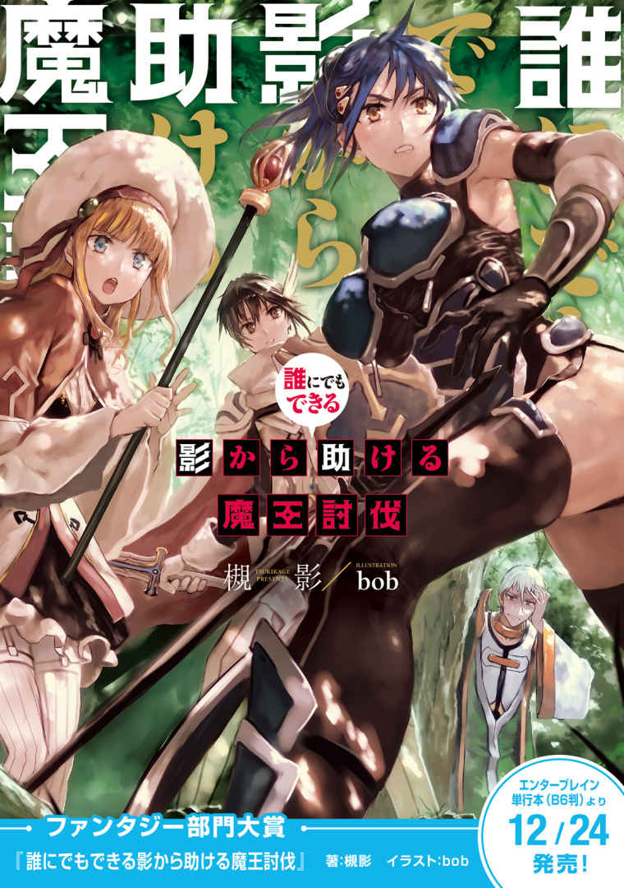
誰にでもできる影から助ける魔王討伐
それが最初に確認されたのはもう二十年も前のことだ。
秩序神であり、最高神であるアズ・グリードの加護を受ける『人族』に仇なす者。魔族と呼ばれるそれらの群体の中に現れた闇はひっそりと、そして異常な速度で数多の勢力を吸収し、一大勢力を生み出した。
人類がそれの脅威に気づいたのは、既に全てが終わった後だった。
魔王、クラノス。
残忍で狡猾で、強力な力を持ち、プライドの高い魔族を従えるカリスマ性を持つ魔族の王。
力を蓄えるまで決してその気配を感じさせる事なく、強力ではあっても、群れる事のなかった各地の魔族共が王の下に結託したその瞬間、初めて行動を開始した。
人族がその存在に気づいたのは、幾つかの小国が滅ぼされた後だった。そして、そこになるに至っても、人族は魔族達程の結束を結ぶことができなかった。人族は魔族を初めとする他の種族と比べて数が多く、小国が滅ぶ事など決して珍しくなかったから。
俺達が、それの危険性を明確に実感したのは、大国と区分される国が滅ぼされた後だった。そして、それと同時に奴らは侵攻を開始した。
もともと、平均的な能力は人族よりも魔族の方が遥かに高い。それでも、この世界で人族が最も繁栄したのは、数の多さと結束、そして、ごく一部、神々の加護を持ち、数多の魔物を屠る事でレベルを上げ、魔族に匹敵する能力を得た戦士達の存在ゆえだ。
数多くの国が滅んでいった。少ない魔族が魔物をまとめ、その総数は人の群れの一つに匹敵した。数の利を失った時点で敗北は必定だった。
戦いは長く続いた。分散され放たれた魔族の軍は、各国の人の結束を困難にした。
強い神の加護を受け、高い存在力を誇る人類最高峰の英雄たちが富と名誉を得るために魔王の王討伐に向かった。それでも、彼らの殆どは二度と帰ってくる事はなかった。
人族と魔族の戦力は拮抗し、しかし少しずつ人族側は疲弊していった。秩序神を奉じ、魔族を神敵と定める教会もまた、その侵攻を食い止めるためにその奇跡を使ったが、決して状況が大きく変わる事はなかった。
そして、魔王、クラノスが発生されたと想定する年から二十年。人族の中でも屈指の規模を誇る大国、ルークスは、友好国が滅ぼされたことを機に、一つの決断をした。
英雄召喚。
アズ・グリード神聖教の有する最大の奇跡にして、人類の切り札。異世界から強大な能力を持つ聖勇者を召喚する秘術の執行を。
Prologue：集まる英雄達
おいおい、まじかよ。
テーブルを囲んだ面子を見て、俺は途方にくれた。
前方に座っていた、俺を除いた唯一の男が立ち上がり、どこか照れながらも口を開く。
「初めまして、僕の名前は藤堂直継。えっと......自分でこういうのもどこか、小っ恥ずかしいんだけど、一応『勇者』という事になってる。剣もまだ訓練だけで殆ど振るった事はないけど、魔王を倒すために如何なる苦難にも立ち向かうつもりだ。これからよろしくね。レベルは15 だよ」
黒髪黒目の中性的な風貌の男だ。年齢は十八と聞いたが、童顔のせいかもっと幼く見える。本人の言う通り戦の経験はないのだろう、その佇まいはまだ戦士のそれと呼ぶには些かお粗末に過ぎた。
レベル15 というのは戦士としては新米のレベルだ。だが、彼の本質は決してそこではない。
聖勇者。英雄召喚の秘術により召喚された世界最強となる器を持つ人間。
この世に存在する八種の精霊王と三柱の神から加護を受けた選ばれし存在。それがこの男だった。
その佇まいは確かにまだ戦士のものではないが、彼は元々平和な世界から召喚されたという話なのでやむを得ないのだろう。むしろ、それをカバーするのは俺に課された任務の一つでもある。
だから、俺が啞然とした原因は未熟な英雄の卵ではない。
問題は、他の二人の仲間にあった。
勇者は全員をもう一度見回し、腰を下ろす。続いて、右隣に座っていた女が立ち上がった。
「リミス・アル・フリーディア。フリーディア公爵家の第三子。魔導師よ。一通り魔物を倒した経験はあるわ。よろしく、勇者様」
金髪碧眼。胸はないが、とても面がいい女だ。年齢は藤堂よりも幾つか下くらいだろうか。
ややキツめの眼、強張った表情は怒っているからではなく、緊張しているからだろう。
先ほどまで被っていた魔導師御用達の帽子はテーブルに置かれ、輝く髪がはっきり見えた。手入れが完璧に行き届いた背中まで伸びた髪はまず平民では見られない。
纏ったブラウンのローブも最高級品。値段の関係でただの魔導師には手の出ない垂涎の品である。立てかけられた少女の身長ほどの長杖には拳大の紅蓮の宝玉が嵌めこまれており、それもまた魔導師の力を跳ね上げる一品であった。
「レベルは？」
装備は最高級だが動作の一つ一つが見るからに素人だ。箱入り娘っていう表現がしっくりくる。
思わず口を出した俺の方にリミスが睨みつけるような視線を向けてきたが、ぶっきらぼうに答える。
「......10 よ」
何で実践経験がない勇者様よりレベル低いんだよッ!?
お前、今一通り魔物倒した事あるって言ったよな!? くそ、こんなの聞いてねーぞ。
リミスは、頰を強張らせる俺を不気味なものでも見るかのような表情で見ながら腰を下ろした。
俺だってしたくてこんな表情してるわけじゃねーよ！
フリーディア公爵家は王国屈指の魔導師の家系だ。血筋は一応最高血統ではある。
始祖は魔導王とも呼ばれた男であり、代々その血族は精霊魔術に対する高い適性を示してきた。
その才能自体に疑いはない。疑いはないが......。
微妙な空気のまま、三人目のメンバーが立ちあがる。
「アリア・リザース。剣士だ。流派はミクシリオン流。まだまだ修行中の身だが、魔王討伐の一員として選ばれて光栄だ。何分迷惑をかけるかと思うが、よろしく頼む。レベルは20 だ」
胸がやたらでかい女だ。青髪で長身で......そして、胸がでかい。胸がでかすぎて面よりも先に胸元に視線が吸い寄せられてしまう。というかそれ以外は割りとどうでもよくなってくる。
勇者の視線も俺と同様に胸元に吸い寄せられている。リミスも呪わんばかりに凝視している。
だが、本人は慣れているのか、視線を受けても眉を顰めるだけで堂々と立っていた。
「お父さんは剣王ノートン・リザース？」
胸をガン見しながら質問する。いや、ガン見したくないのだがどうしてもそちらに視線が......
アリアは自らの胸を隠すかのように腕でかき抱き、強めの口調で答えた。
「ああ。だが、父と私の実力とは無関係な事だ。偉大な父だとは思っているし、尊敬もしているが私のことは一人の人間として接して欲しい」
「......ああ」
何だこのメンバー。悪意が見えるぞ。剣王の娘でレベルが20 ？ 中堅以下じゃねーか。
親父連れて来いよ、親父。しかも、確か剣王はプラーミャ流剣術の最高師範だったはずだ。なぜ娘の流派が違うんだ？ 確かにその二つは剣術の二大流派だが、意味がわからない。
才能自体はあるんだろうが、魔王を討伐するには......レベルが低すぎる。
貴族の第三子に剣王の娘。平均レベルはたった......15 だ。勇者のレベルはともかくとして、いくらなんでも、この平均レベルで魔王討伐は自殺行為のようにしか思えない。
俺がレベルを聞いて水を差したのが悪いのか、リミスがつり上がった目つきでこちらを見上げた。
「で......あんたの自己紹介は？」
「ああ......」
これは......どうするべきか。聞いている話と違う。召喚されたばかりの勇者のレベル上げは想定の範囲内だが、仲間までレベルが低いなんて、冗談にもならない。どうやって倒すんだよ、魔王。
脳内でぐるぐる巡る疑問からなんとか思考を背け、口を開く。
「アレス・クラウン。アズ・グリード教会の神父で、この旅には僧侶として参加する。レベルは──」
そこで言葉を止める。不審そうな三人の顔。
正直に言うのは不味い。なんたって三人の平均値は15 なのだ。あまりにも差がありすぎる。レベル差のあるパーティには無用な軋轢が生じる。勇者達の自信を損ねてしまうだろう。何より、いざという時に頼れると思われてしまうと、精神的に隙が生じる。避けねばならない。
幸いな事に、レベルの測定が出来るのは神職のみ。このパーティならば俺という事になる。噓をつこうと思えばいくらでもつける。僧侶は普通、噓をつかないので疑われる事もない。
ちょっと迷って、下一桁だけ言うことにした。
「レベルは──３だ」
「３？ たった３？ ちょっと、そんなんで回復魔法、使えるの!? 」
......まぁ、言ったレベルがレベルだから仕方ないとはいえ、リミスに言われると腹が立つな。
「ああ、回復魔法も状態異常回復もレベル測定も、一通りヒーラーの役割はこなせる。安心してくれ」
「あ、そう......まぁ怪我しなければいいのよね」
完全に信用していない眼だった。
藤堂は物珍しげに俺の隣に立てかけてある武器を見ている。
金属の棒の柄頭に藤堂の頭蓋骨程の大きさの棘付き鉄球が付いている武具。ただの撲殺武器に見えて実は聖なる力が付与された金属で誂えられており、闇に潜む者には特に高い効果を発揮する装備だ。
「これはメイス、僧侶の武器だな。アズ・グリードの僧侶は教義で刃物を持てないから。まぁ、どちらかと言うと術の効果を増幅する魔導師の『杖』に近い。近接戦闘で使ったりはしないと思ってくれ」
「そ、そうか......さすがファンタジーな僧侶だね......」
藤堂がごくりと唾を飲む。その威力を想像したのだろう。確かに見た目だけならば剣よりも凶悪だ。
微妙な空気が漂ったが、藤堂がごほんと一度咳払いをして、締めくくった。
「まぁ、ともあれ、皆で魔王を倒そう！ これから宜しく」
「フリーディアの魔導の真髄をお見せしますわ、勇者様」
「未だ未熟な剣なれど、この力、勇者殿に預けよう。共に魔王を倒そう」
やる気だけは満々な面々を見て、俺はため息をついた。少なくとも、人間性だけは悪くなさそうだ。
皆の視線を受けて、俺も一言だけ述べて所信表明とする。
「神の御心のままに」
レベルのあまりにも低いメンバーとの魔王討伐の旅。
この時の俺は、今の状態が人生最低の状態だと思っていた。
まさか、それ以上があるとは......俺が言える事はただ一言だけである。
この世界は、クソッタレだ。
第一報告 勇者の性能と動向について
異端殲滅教会のトップ、クレイオ・エイメンから俺に命令が下されたのはつい一ヵ月程前の事だ。
任務の内容は、現在最も教会で危険視されている魔王クラノスの討伐サポート。勇者のお供である。
異端殲滅教会──秩序神アズ・グリードを奉る、人族の中で最盛を誇る宗教体系、アズ・グリード神聖教。その中でも一風変わった魔族の殲滅を請け負う独自組織の名前である。
主な仕事は人に仇成す闇を祓う事。アズ・グリードの教義には魔族の殲滅が含まれており、それを成すために結成された俺達特殊僧兵は闇を祓う力を持ち、『異端殲滅官』と呼ばれる。
聖勇者、藤堂直継がこの世界に来る発端となった、『英雄召喚』も教会の秘奥の一つであり、魔族の親玉である魔王を倒す以上、教会から人材を派遣するのは当然であった。
人族の持つ基礎的な能力は魔族やその他の種族と比較すると、おしなべて低い。
それでも、人族がこの世界で最盛を誇っているのは、単に最高位の神の一柱である秩序神アズ・グリードが与えた飛躍のための力故だ。
それがレベルアップ。『存在力』のフィードバック現象である。
人族は魔物など、他の生き物を殺した際にその力の一部──存在力を己のものにする事ができる。レベルアップ自体は人族以外にも発生するが、人族の成長力は他の種族と比べ、非常に高い。
英雄召喚で呼び出される聖勇者は突出した才能を持ち、多数の神々から加護を得るが反面、所詮は人間であり、召喚された直後、レベルが１の状態では魔族には歯がたたない。
故に、俺やアリアたちの任務の本質は聖勇者、藤堂直継のレベルを如何にして上げていくかにある。
俺たちは段階を踏む必要があった。
魔王は邪神の加護を受けており、特別な加護を持つ者の攻撃でなければまともにダメージを与えることが出来ない。それは例えば勇者であり、残念ながら俺にその力はない。
つまり結論を言うと、たった一人レベルが高くても何の意味もないのだ。
§ § §
自己紹介を終え、一度席を離れ、顔合わせをしていた酒場から外に出た。人気のない裏に回る。
喧騒から静寂、熱気と酒気が混ざった空気から新鮮な空気に変わり、一息つく。
周囲に誰もいない事を確認し、黒の石がついた金のイヤリングを取り出し、右耳につけた。
イヤリングは教会本部と通信するための魔導具である。希少な道具ではあるが、異端殲滅官は地方で任務に当たることが多いため持たされている。
『おはようございます、アレス』
魔力を通し起動するとほぼ同時に、通信が繫がった。
教会総本山で待機している交換手だ。機械じみた抑揚の少ない声は、俺が異端殲滅官となってから何度もやり取りしている馴染みの声である。
「クレイオ枢機卿に繫いでくれ」
『......了解しました。しばしお待ちください』
枢機卿は教皇に次ぎ第二位の地位を誇る役職である。枢機卿位の僧侶は五人存在するが、中でもクレイオ枢機卿は教会が保持する僧兵や聖騎士等、闇に対抗するための部署の責任者だった。
異端殲滅教会の統括者でもあり、勇者のお供として俺を派遣する事を決定した男でもある。
ほどなくして、クレイオ枢機卿──聖穢卿、クレイオ・エイメンの声が聞こえた。枢機卿位の中では極めて若い男だ。恐らくまだ三十になっていないだろう。その声色は温和であり、話していると安心感を抱きそうになるが、その年齢で枢機卿位につく才覚は並ではない。
『何かあったのか？ アレス』
「何かあったのかもへったくれもない。なんだあのメンバーは！」
勇者はともかく、仲間のレベルが低すぎる。血筋だけならば超一流だが、血筋で魔王は倒せない。
いや、正直に言おう。あいつらに比べたら、補助や回復が主な役割である僧侶の俺の方がまだ強い。
今の彼女達はただの原石だった。磨けば光るが磨くだけの余裕は恐らくない。
『ふむ......魔導院も剣武院も人類最高の才能を派遣したと言っていたが......』
間違えていない。俺は剣にも魔導にもそれほど詳しくはないが、間違えてはいないのだろう。だが、詐欺だとしか思えない。なるべく落ち着いた声色を作り、報告する。
「まず魔導師がフリーディアの娘だった」
『ふむ......リミス・フリーディアか......公爵も思い切った事をしたものだな......』
「レベルが......たった10 だったんだ......」
『公爵の一人娘......箱入り娘だから、そりゃレベルは低いだろう。彼は親ばかだな。会うたびに散々自慢される。確かに子を可愛がる親の気持ちは一種の美徳ではあるが──』
ちょ......箱入り娘なら箱から出すなよ!!
僧侶が回復の要だとしたら、魔導師は攻撃の要である。頑丈で驚異的な生命力を誇る魔族を倒すには高い攻撃力が必要とされる。魔王討伐においても非常に重要な役割である事は間違いない。
『しかしそうか......予想外だな......あの男が一人娘に魔王討伐に向かわせるとは......』
「いやいやいや、いくら装備と後ろ盾がよくても、あんな雑魚を連れてこられても......勇者が危険だ！」
リミスやアリア、そして俺には換えがいるが、勇者に換えはない。英雄召喚はこの世の摂理を捻じ曲げる秘術。藤堂を召喚するのにも莫大な魔力を使ったと聞いている。二度目は恐らくないだろう。
俺自身は世界平和がどうとか言うほど善人ではないが、勇者が死んでしまったらそれは勇者パーティの回復役を担う俺の責任となる。勿論、最善は尽くすが、リスクはなるべく減らしたい。
クレイオ枢機卿が窘めるような穏やかな口調で言う。
『悪いが、他のメンバーを決めるのは教会じゃない。足手まといがいるのならばフォローしてやれ』
違う。それは違う。足手まといがいるのではない。足手まとい『しか』いないのだ。
『剣士の方はどうだ？ 剣王が一級の才能を持つ剣士を送り出すと言っていたが......』
「ノートンの娘だった......」
それを言った瞬間、電話の向こうで咳き込むような音がした。
こいつ、まさか笑ってるんじゃねーだろうな？
『むふぁ......げ、ごほっごほっ......す、まん......そ、そうか。そうきたか......』
「ああ、レベル20 で......胸がでかかった」
胸しか見てなくてちょっとどんな人物だったか覚えていない。
『そうか......いや、知ってる。会ったことがあるからな』
「そうか。ならば、もっと詳しい情報が欲しいんだが」
『......そうだな。先入観に囚われるのも不味いが、情報がないのも不味い......か。アリア・リザースは一言でいうと......お転婆娘、らしい......』
お転婆娘!? とてもそんな風には見えなかったが......というかそんな情報はいらないんだが......。
『ノートンも手を焼いているらしくてな......プラーミャ流正統剣術を継ぐのを嫌がって、最近ミクシリオン流に鞍替えしたらしい』
自己紹介の時の言葉は冗談でもなんでもなかったのか......頭おかしい。
プラーミャ流正統剣術とミクシリオン流剣術の体系は全く異なる。一言で言うと、護る剣と攻める剣だ。プラーミャ流では盾が剣と同じくらい重要だがミクシリオンは盾を使わない。それだけの差異で、足運び一つとっても大きく違いが出て来る。
別にミクシリオン流がプラーミャ流に劣っているとは言わないが、今、『最近変えた』って言ったか!? 言ったよな!? そんな女を勇者パーティに送り込んできたのはどういうつもりなのだろうか？ しかも、強いならばまだわかるがレベル20 、レベル20 である！ 駈け出しだッ！
魔導院も剣武院も何を考えているのか、さっぱりわからない。原石なんぞ出さなくても、ルークスは大国だ。経験を積んだ優秀な武芸者が大勢いるはずだ。これから倒さねばならないのは魔王である。ピクニックに行くわけじゃねーんだぞ、おい。
前衛後衛、攻撃手の能力不足はヒーラーである俺に全てのしかかってくる。
今回の場合はなおさらひどい。メンバーが勇者と公爵の娘、剣王の娘だ。
一人でも死んだら大問題になりかねない。始まる前から問題が見えるってどうなのだろうか。
「俺は......どうすればいい？」
『......まぁ、足手まといが一人から二人に変わった所で大差はないだろう。圧力はかけてみるが、教会と魔導院、剣武院は完全に別組織だ。結果は期待しないでくれ』
「え？ マジで？ このままやらなきゃならないの!? 倒せる気がしないんだが!? 」
今の平均レベルだとオークの群れとかに出くわしたら全滅するんじゃないだろうか。
通信が切れてしまったイヤリングを擦る。が、クレイオが再度出ることはなかった。
ため息をつき、額を揉んで表情を解す。指を放すが、表情は硬くなったままだ。
どのみち、指示が下っている以上俺にはベストを尽くすしか道はない。
勇者には国からの全面的なバックアップが与えられる。
例えば、前代の勇者が手に入れた強力な武具。希少な魔導具の類に、一流の戦士による技術の伝授。
聖勇者である藤堂に与えられた装備も相当な物だ。
羽毛のように軽く、物理攻撃にも魔法攻撃にも高い耐性を持つ魔法の鎧、聖鎧『フリード』。
岩をバターのように切り裂き、特に魔族に対して高い威力を発揮する破魔の剣、聖剣『エクス』。
一度だけ致死の攻撃から装備者を守ってくれる魔法の指輪に、竜のブレスすら防いだと言う伝説の盾。一個売るだけで一生を遊んで暮らせる、並の戦士には一生手の届かない、そんな宝具の類だ。
しかし、魔族と戦う際に何よりも必要とされるのは信頼のおける優秀な仲間である。
いくら個体として強力な力を持っていても、多くの魔物と同時に戦うのは困難だし、麻痺や毒などを受けた際に誰にも助けてもらえない。そして、何よりも孤独な戦いは大きな精神的な負担になる。
一般的に、魔族や魔物と戦う際は四人から六人のパーティを組んで戦う事が推奨されていた。
パーティには最低限必要な役割があり、それは今回選ばれた俺達三人の役割とも一致している。
攻撃魔法の使い手であり、パーティの攻撃の要となる魔法使いのリミス・アル・フリーディア。
ミクシリオン流剣術の使い手であり、戦線維持の要となる近接戦闘職、剣士のアリア・リザース。
戦闘時の補助と戦闘後の怪我の回復を担当する神聖術の使い手である僧侶の俺。アレス・クラウン。
そして最後に──『聖勇者』藤堂直継。
八種の大精霊と三柱の神、『八霊三神』の加護を持つ彼は、この世界では珍しい万能選手だ。
精霊の加護がある以上攻撃魔法が使えるし、身体能力も底上げされている。神聖術も使えるようになるだろう。彼にはこの世界でも最高峰の戦士になる素質がある。
前代勇者も魔法を使える前衛、俗に言う魔法剣士だった。藤堂もそれに習い、魔法剣士として前衛を担当するのが一番だろう。
「──というわけで布陣は前衛としてアリアと藤堂、中衛として俺、後衛としてリミスという態勢でいくのがいいだろう。俺は耐久力もあるし、前衛が重傷を負った際には代わりに前に出ることもできる。まぁその際は回復魔法を使う余裕はないので、薬なり何なりで回復してもらうが......」
宿での、今後の展望や戦闘の陣形について話し合い。
藤堂はなぜか顔を僅かに顰めながら俺の言葉を聞いていた。足を大仰に組み、指輪をいじってはいるが、しかし余計な口を挟む気配はない。
今現在の勇者パーティの中で一番経験が豊富なのは間違いなく俺だ。リミスもアリアには魔物との戦闘経験がほとんどない。本人達もそれがわかっているのだろう。ただ黙って俺の話を聞いている。
勇者は俺の言葉を聞き終えると小さく頷き、
「話はわかった。短い間だけど、騎士の人から訓練を受けたから前衛も務まると思う。だけどさ──」
「だけど？」
「パーティって普通四人から六人何だよね？ 先に後二人メンバーを探した方がいいんじゃないの？」
藤堂のこの地方では珍しい黒の眼がじっとこちらを見つめている。
まさか第一に言う言葉がメンバーの増員とは......それは俺にとって予想外だった。
大きな力は増長を産む。ましてや、藤堂は戦ったことのない人間で、この世界に召喚されて得た八霊三神の加護は大きすぎる力だったはずだ。得体のしれない万能感を感じざるを得ない程に。
いや......違うか。戦士ではない。苦労をした事がないからこそ、これから魔物や魔族の類と戦わねばならないという脅威に対して慎重になっているのか。どちらにせよ、悪い傾向ではない。
まだ、この世界の常識に疎いのであろう藤堂に説明を続ける。
「追加メンバーについても一考の余地はあるが、とりあえずはこの四人で進めたい」
「？ なんで？ まさか他の男を入れるのが嫌だとかじゃないよね？」
何を言っているんだ、この男は。本来ならば剣士は肉体強度に優れた男性が望ましい。アリアとチェンジで全身が筋肉で覆われた歴戦の剣士が欲しいくらいなのに。
口元はにやけているが、その眉目は微塵も笑っていない。まさか警戒されているのか？
「勿論違う」
「なら、なんで？」
「レベルアップの効率化のためだ」
一つのパーティで四人から六人が推奨されている理由の一つがそこにある。
水を口に含み、続きを説明しようとした俺に、藤堂が納得の声を上げた。
「ああ、なるほど......そういう事か」
「ん？ まだ説明していないが、これだけでわかったのか？」
勇者はまだこの世界について無知だと聞いていたが......。
じっと視線を向ける俺に、勇者がしたり顔で答える。
「倒した魔物の経験値は人数で分割されるから、人数が多いと効率が悪いんでしょ？」
自らの正解を確信している表情。リミスが困惑の視線を俺と藤堂、交互に彷徨わせている。
「？ ......経験......値？ って何？」
「......え？」
経験値。経験値、か。聞いたことがない言葉だが、想像くらいはできる。
アリアも険しい表情で腕を組む。いや、険しい表情っていうか、こういう顔なのか。
「私も聞いたことがないな......」
「え!? レベルって経験値を得ることによって上がるんでしょ？ 普通ゲームとかだとそうじゃん」
藤堂の元いた世界にはレベルアップ現象は存在しないと聞いていたが、どうやら似て非なるものが存在するようだ。概念的には似ていそうだし、説明が楽でいい。
「違うな。この世界では魔物を倒す際に得られる魂──存在の力によってレベルが上昇する。経験値などと言うものは存在しない。まぁ、何となくニュアンスは伝わるが......」
「存在の......力？」
「ああ。魔物を殺した際に、魔物の力の一部が殺した者に吸収される。それが『存在力』だ。一定量の力を吸収する事でレベルアップが発生し──身体能力を初めとしたあらゆる力が大幅に上昇する。藤堂もレベルが15 なら既に体感していると思うが......」
それは、１レベル違っただけでも体感できるくらい大きな違いだ。
身体を鍛える事によっても筋力などは上げることはできるが、レベルアップによる能力上昇はそういう次元ではない。まさしく、『存在』が高次元のものになるのだ。故に、その力を存在力と呼ぶ。
「うん、確かに凄い身体が軽くなったけど......でもそれって経験値と同じようなものだよね？」
「聞いた限りだと概念的はあっていそうだが、今聞いた分だけでも、一つ大きな差異がある」
「......大きな......差異？ 何？」
まだどこか納得のいかなさそうな表情で首を傾げる勇者に告げた。
「存在力は......分割されない。魔物を殺した者にしか入らないんだ」
つまりそれは、メンバーが増えれば増える程均等なレベル上げが困難になる事を示しているのだ。
藤堂が納得できたようなので、次の話に移る。
必要なのは藤堂のレベルを迅速に上げるための方法。
幸いな事に、俺には経験があった。アリアとリミスのレベルを聞いた時点で、次に向かう地については当たりをつけてある。
「......ヴェール大森林？」
藤堂が真面目な表情で呟く。
俺が最初に向かう先として選んだそこは、ルークス国内でも屈指のレベル上げの場所だった。
特に30 くらいまでレベルを上げるのならば、国内ではここ以上の場所は存在しない。
四方数百キロに渡り広がる大森林であり、生息する魔物も物理攻撃を主体とする魔獣型や植物型。非常に戦い易く、おまけにサバイバルなどの基本的な知識を学ぶ上でも適している。
適正レベルは15 からなので藤堂のレベルだとわりと危険だが、まぁそれは頑張って貰うしかない。
説明をしていると、アリアが口を挟んでくる。
「ヴェール大森林......まだ藤堂殿のレベルでは危険なのでは？」
藤堂のレベルは15 。お前とあまり変わんねーよ、と言いたかったが、勿論言わない。
彼女の俺の印象はかなり悪いだろう。胸ガン見しちゃったし。声をなるべく穏やかにして、答える。
「確かに多少危険ではあるが、このメンバーなら十分に戦えるだろう。何より、このパーティにはちんたらレベル上げをしている暇はない」
異世界からの勇者の召喚はこれが初めてではない。
教会は、これまでの歴史から、魔王側が勇者の召喚に気づくまでの期間を一ヵ月と出していた。同時にそれは、魔王からの刺客が送られるまでのタイムリミットでもある。それまでに可能な限りレベルを上げておく必要があった。
魔族の危険性をわかっていないのだろう勇者が、危機感のない表情で尋ねてきた。
「そんなにその魔族とやらは強いのか？」
「今高位魔族に出逢えば、かなり甘めに見積もっても五分で肉団子だな」
「五......分!? い、いや、僕、一応騎士団長から手ほどきを受けたんだけど──」
「魔族の能力値は人の数十倍から数千倍だ。多少剣や魔法を使えたところで相手にならんよ」
魔族と言っても色々いるが、高位ともなれば一流の傭兵が複数人で挑んで勝てるかどうかという相手である。例え勇者といえど、今の段階での戦闘は絶対に避けねばならない。
藤堂は俺の言葉に二、三度目を瞬かせたが、少し考えて素直に頷いた。聞き分けはいいらしい。
「五分か......。なら......多少危険でもさっさとレベルを上げないとね」
「身体を少しずつ新しい力に慣らしながら無理のないように、だが迅速に上げていく。目標レベルは30 ──取り敢えず30 まで上げれば魔族が現れても逃げる事くらいならできるはずだ」
逆に言えば、それまでの間は常に油断ならぬ状態に置かれるという事でもある。
リミスとアリアのレベルも上げないわけにはいかないから、数を狩らなければならない。かといって、強い魔物を狩れば一気にレベルが上がるのかと言うとそういうわけでもない。人には一度に受け入れられる存在力の限界というものがある。
楽してレベルを上げる方法はないし、勇者の場合は他に戦闘技能も身につけなくてはならない。
プランを脳裏に巡らせながら、発言する。
「最優先で藤堂のレベルを30 にする。最悪、アリアとリミスには代わりがいる」
「......は？」
それは、別に他意のない言葉だった。
仲間としてアリアとリミスには不満があるが、それでも見捨てたりするつもりはない。
それは純粋な優先順位の問題。例え剣王の娘だろうが、公爵の娘だろうが、俺はアズ・グリード教会から派遣されてきた僧侶として勇者の安全を最優先に考えねばならない。
だがその言葉はきっと、藤堂本人にとって想定外だったのだろう。
不意に聞こえた低い声と同時に、空気がざわついた。全身の毛が僅かに逆立つ。
触れてはいけないものに触れてしまった。気づいた時にはもう遅かった。
それは殺意と呼ばれる類のもの。鋭く引きつった眉目に嚙み締められた唇。端正だった容貌がここまで変わるものか、信じられない程の凶相を作っている。瞳の奥には濁った闇が見えていた。
レベルの低い者ならば全身を飲み込む異様な感覚に裸足で逃げ出していただろう。それは、高レベルの傭兵ならば誰しもができる技術であり、しかしレベル15 で使えるような技術では断じてない。
意思を昇華し叩きつける技術。
「!? 」
「あ......う......」
不意に発生した異様な気配にアリアとリミスが息の詰まったような声を発する。
その眼は大きく見開かれ、俺と藤堂を見ていた。俺は無言で藤堂を見つめる。
恐ろしい才覚。いや、これは......聖勇者、まさしく神のご加護によるものだと言うべきか。
俺が殺意で人の動きを縛る事ができるようになったのは、何レベルの頃だったか。
しばらくじっと見ていたが、飛びかかってきそうだったので、大きく音を立てて両手を叩いた。
「悪かった。別に俺はアリアやリミスをないがしろにするという話をしているわけじゃない」
「リミスとアリアに......謝れ」
唸り声にも似た恫喝の声。元々ハスキーボイスだったが、喉の奥から絞り出したようなそれは地獄の底から這い出た亡者のような声となっていた。
触らぬ神に祟りなし。俺は神の使徒であり、自身のプライドもとっくに神に売っぱらっている。頭下げて済むんだったらいくらでも下げよう。土下座してやってもいい。
これ以上色々言われる前にリミスとアリアの方に向き直り、深々と頭を下げた。
「俺が悪かった。許してくれ」
「あ......ああ......」
「まぁ......ね」
二人の言葉に、勇者の殺意がやや収まる。アリアとリミスがほっと息を吐いた。
頭をゆっくり上げながら、今の変化の意味を考える。
今の感情の変化はあまりにも急激すぎる。才覚はあるが不安定、か？ 過剰な正義心？ それとも幼少時に何らかのトラウマが？ どちらにせよ、どこに地雷があるのかはわからない。注意しなくてはならないだろう。
元々、いきなり生まれ育った世界からこの世界に呼び出されたのだ。多少ナーバスになっていても仕方ない。一度度咳払いをして、勇者の眼と自分の眼をしっかりと合わせる。
「悪かったな」
俺の謝罪にも、藤堂の視線は揺るがず、険しいままだ。険しいまま、納得の言葉を口にする。
「......ああ。こっちも悪かった。だが、もう二度とリミスとアリアを......下に見るような発言はしないで欲しい。不快だ。非常に不愉快なんだ」
「ああ、不愉快にしたのは謝る、誤解されるような事を言ってしまったのも謝る。だがそれは無理だ」
「......は？」
藤堂の眉目が大きく歪む。手の置かれたテーブルがみしりと小さな音を立てる。
嫌われるのは仕方ない。だが、言わねばならない。俺だって好きで言っているわけではないのだ。
「なぜなら、俺達の使命の第一は......魔王を討伐する事だからだ」
「は？ それが──」
「そして魔王を討伐されるために呼ばれたのか藤堂直継、お前だ。俺やリミス、アリアの役割はお前の魔王討伐のサポートをする事、ただ、その一点にある」
一ヵ月前の俺はまさか勇者パーティに参加する事になるとは思っていなかった。
確かに勇者のサポートをして上手いこと魔王を討伐できれば、地位も名誉も財産も手に入るだろう。だが、高位魔族を相手にするというリスクには見合わない。あまつさえ相手は魔族の頂点である魔王クラノス。巷では絶望王などと噂される真性の怪物だ。
平均レベル80 を超える最高位の傭兵パーティが魔王討伐に挑み、返り討ちにあったのは記憶に新しい。こっちのパーティ平均は何レベルだ？ 20 ？ ふざけんな、である。その二つには大人と赤子以上の差異があるのだ。
俺は別に、魔王を討伐したくてこのパーティに参加しているのではない。枢機卿の命令だから、元々ついていた任務を別の者に引き継いでまで仕方なく参加しているのだ。
だが、仕事はきっちりやる。仕事だからきっちりやる。
「わかっているのか？ お前じゃなきゃ魔王を倒せない事を。国王から話は聞いていないのか？」
正確に言うのならば、藤堂でなくとも加護さえ持っていれば魔王に傷をつけられる。だが、今出さねばならない情報ではない。藤堂は押し殺すような声で、だが確かに肯定した。
「あ......ああ......」
「なら、わかるよな？ 英雄召喚の儀式はそう頻繁に使える類のものじゃない。藤堂、お前が死んだら世界は滅ぶんだ。オーケー？」
過剰な言葉で藤堂を揺さぶる。しかし、こうして言葉に出してみると藤堂も随分と災難な話だ。いきなり召喚されて魔王を倒せなど、もし俺が藤堂の立場にあったらボイコットしてしていただろう。
「アリアもリミスも強くなるだろう。魔王を相手に一人で戦うのは無謀だ。だから、俺達はレベルを上げなくてはならない。だが、同時に万一の時にはアリアもリミスもお前を守るために死ぬ義務がある。当然、アリアもリミスもこのパーティのメンバーとして抜擢される際に聞いているはずだが......」
ちなみに、俺は聞いていない。俺のパーティ加入は神命と言う名の上司命令であった。だが、パーティの目的を考えるとこんな事、言われるまでもないのだ。勿論、俺は死ぬつもりはないが。
「そ、うなの、か？ リミス、アリア......」
藤堂がまるで縋り付くようにリミスとアリアに向き直る。
剣王も公爵も人の親ではあるが同時に国の重鎮である。なぜ娘を派遣する事になったのかは定かではないが、その程度の事を教えていないわけがない。
俺の予想通り、アリアもリミスも一瞬互いに視線を交わしたが、おずおずと頷いた。
「あ、ああ......父上からは、一身に代えてもお守りするよう仰せつかっている──」
「わ、私もお父様から──」
二人の言葉の最後を待たずして、藤堂は劇的な変化を見せた。眼を見開き頭を抱える。
「あ......ああああああああああああああああ......」
表情はわからないが、その呻き声には形容できない感情が混じっていた。
その姿は間違えても人類希望の光である勇者のものではなかったが、俺は見て見ぬ振りをする事にした。ぶっちゃけると俺は藤堂が勇者であってもなくても別にどうでもいいのだ。
俺は職業柄、英雄召喚が運命に勝利を約束された勇者を呼び出す術ではない事を知っている。
未来は如何なる高名な魔導師にも予見できない。俺の役割はそこに至るまで、あらゆる手法を、外法を使ってでも藤堂を生き長らえさせ勇者とする事にある。
好きなだけ泣け。好きなだけ怒れ。お前がこれから立ち向かう試練はそんなものでは......ない。
一通り勇者の嘆きのＢＧＭを聞いた所で、俺はため息をついた。偉そうに当たり前の事を言う。
「別に藤堂、お前が強くなって守ればいいだろう。八霊三神の加護を受けているお前は何よりも強くなれる余地がある。誰よりも強くなり、魔王を倒せ。仲間を殺したくなければ全力で守れ」
「ッ......」
俺の言葉に、スイッチが切り替わったように藤堂の声が止み、その面がゆっくりと上がった。
朱の唇の端から垂れた涎、真っ赤に腫れた眼の奥で光る爛々とした瞳。
......あれ？ 薄々気づいていたが、こいつ、まさかやばい奴？
藤堂の目つき。俺の方を向いていて、だがその視線は俺を捉えていない。
まるでこの世ならぬものでも見ているかのような夢現の眼で、藤堂が呟く。
まるで自分に言い聞かせているかのように......その異様な感情の篭った声にぞくりと肩を震わせる。
「そ、そう......か！ そうだ。そう......だね。勝てばいい......勝てばいいんだ」
「あ......ああ......勝てばいい。そうだ、それだけの話だ。そうだな？ リミス！ アリア！」
とっさに助けを求める俺。リミスとアリアの表情もまた、予想外の勇者の表情に強張っていた。
「え、ええ......そうね！」
「あ、ああ......勿論だ！ 何、神に選ばれた藤堂殿なら容易く成せるだろう！」
おい！ この勇者、大丈夫か？
§ § §
目が覚めると、見知らぬ天井が見えた。夜明け前、明かりのない薄暗い室内がぼんやりと視界に入ってくる。体内時計は正確だ。幼少の頃に授かった規則正しいライフサイクルは乱れない。
高級宿特有の柔らかなベッドの上で上半身を起こし、生じる目眩に俺は頭を抑えた。
森でレベル上げを開始してしまえば、安宿の硬いベッドさえ恋しくなるような生活が待っている。金を節約するに越したことはないが最初くらいはと、王都で一番の宿に泊まる事にしたのが昨夜の話。
二人部屋を二つ借りたが、隣のベッドには誰もいない。
藤堂が俺と同じ部屋で寝るのは嫌だと、アリアとリミスの部屋に引っ込んでしまったためだ。
「くそったれが......あの色ボケ勇者め......」
別に魔王を倒してくれるならなんだっていいが、初日からこれは──ない。
あの男には危機感と空気を読む力が足りていない。そして、それをあっさりと受け入れるリミス達もどうなんだ、とも思う。
昨日垣間見た勇者の不安定な精神性を考慮すると、文句を言うわけにもいかないが......しかし、人は見かけによらないものだ。
立ち上がり、身支度を整えた。黒地に白の線の入った法衣を着込んで鏡の前で髪を整える。
鏡の中では、苦節十八年付き合った顔がこちらを睨みつけていた。切り揃えられた銀髪に緑の眼はアーレス地方出身だった母親譲り。一見穏やかな風貌に見られる事が多かったので昔は舐められたが、仕事を続ける内にどんどん目つきが悪くなってしまい、最近ではそういう事もなくなっている。
最後に黒の指輪を左手薬指に、通信用の魔導具と十字架の形をした銀のイヤリングを耳に装着する。
出発は日が昇ってからの予定だ。
隣の部屋は静まっており聴覚を集中すると微かに寝息が聞こえた。
なるべく物音を立てないように部屋を出る。宿の受付では従業員が眠そうな表情で立っていた。
夜明け前藍色の空の下、礼拝のため教会に向かう。
季節はまだ春になったばかり、空気は冷たいが、ぼちぼち早起きの街人が起きだす時間だ。たまにすれ違う人々は、俺の格好を見て挨拶をしてくれた。
「おはようございます、神父様」
「ああ、おはよう。今日も貴方にアズ・グリードのご加護があらん事を」
にこやかに吐き出す定番の文句。何の意味もない、ただのおまじないみたいなものだ。
僧侶。それは、アズ・グリード神聖教の奇跡の体現者である。
得意分野は神聖術。回復、結界、補助、そして──破魔。
神聖術は信心で効果を増す。朝の礼拝は僧侶の最も有名な慣習だった。
町中を悠然と見回しながら大通りを歩く気分は悪くない。
教会を目指して歩いていると、ふと道を歩いている屈強な剣士風の男が目についた。
身の丈は二メートル近く。腰に下げた長剣に、そこかしこが凹んだ急所のみを守った鎧。だが、何よりも眼を引いたのはその左手に巻かれた包帯だ。ちょっと考え、足を止めて声をかける。
「ちょっと、そこの剣を下げた人」
一回呼んだだけでは気付かず、何度か呼びかけるとようやくこちらを向いた。
「......あ？ ......俺の事か？」
男はいきなり横柄な口調で話しかけてきた俺に一瞬、殺意とも取れる視線を向けてきたが、俺の格好に視線を向け、耳に取り付けられた銀の十字架のイヤリングを見て、剣吞な気配を霧散させた。
「......僧侶か。何か用か？」
「その傷を治してやろう」
怪訝な表情をする男をよそに、乱暴に包帯の巻かれた腕に人差し指で触れる。そして、神に祈った。
「『三級回復神法』」
呟くと同時に、添えた指先に光が灯った。青白い回復神法特有の光。
光は一瞬で腕に浸透し、すぐに消える。呆気にとられている男に尋ねた。
「もう痛みはないか？」
「あ......お......痛く......ねえ!? 」
男が乱暴に包帯を取り外す。薄汚い包帯に付着した固まった血に鉄の匂い。
だが、その腕には傷一つ残っていない。包帯の跡から見るに、大きな傷ではなかったようだが......。
「傷を放っておくのは良くないな」
顔を上げた男の表情には形容しがたい感情が浮かんでいた。
口がぱくぱくと声にならない言葉を発していたが、落ち着くと、機敏な動作で深々と頭を下げた。
「すまん、助かったッ！」
「礼はいらんよ。神の信徒に対して当然の事をしたまでだ」
思ってもいない言葉を返す。何もこちらは慈善でやっているわけでもない。
評判は上げられる時に上げておいた方がいいのだ。僧侶も人間、質の悪い者だっているし、僧侶の悪評は凄まじく目立つ。
別にこちらに損はないわけで、俺は助けられる時に助ける事にしているのだ。
いたたまれない様子の男に、僅かに笑みを浮かべ冗談めいた口調で聞いた。
「それとも、仲間のプリーストの仕事を奪ってしまったかな？」
「と、とんでもねえ！ 俺の仲間のプリーストはまだパーティに入ったばかりで、回復魔法もあまり使えねえんだ。今も昨日の魔物狩りで神力を使い果たして寝込んじまってる」
僧侶の平均レベルはその役割故、他職と比較して低い傾向にある。まくし立てる男に微笑を向ける。
「そうか。それはすまなかったな。だが、信仰さえ積めば必ずや、立派な僧侶になれるだろう。迷惑をかけると思うが、手伝ってやって欲しい」
「あ......ああ。勿論だ」
頑張れ、この男の仲間の僧侶よ。しきりに頷く男に偉そうな声で続ける。
「ついでに補助魔法もかけてやろう。存在力は十分に溜めてあるか？ レベルアップもしてやろう」
「あ......」
神聖術は神力と呼ばれる力を消費するが、この程度ならば特に問題ない。
手を伸ばして男の頭に触れると、額、頰、肩、肋、腹と順々に触れていく。
「『三級筋力向上』、『三級敏捷向上』、『三級耐久向上』──」
魔導師の扱う『精霊魔法』も、僧侶の扱う『神聖術』も、どちらも術式起動時に術式光と呼ばれる光が発せられる。赤、青、黄、緑。様々な色の光に、道行く人の視線がちらちらと集中する。
一通り補助をかけ終えると、ぱんぱんと手を払った。
「レベルアップにはまだ存在力が足りていない。次のレベルまで後２０９６の存在力が必要のようだ」
感極まったように、男が深々と礼を言う。
「あ......ありがとうございますッ！」
「補助魔法は十時間くらいならば持つはずだ。切れそうになったら分かるはずだが、あまりいつもと違う魔物を狩りに行ったりはしない方がいいだろう」
「わ、分かった......いや、分かりました。あ、お礼は──」
慌ててポケットから財布を取り出し始める男の腕をそっと抑え、止める。金貨を積み上げてくれるならばともかく、懐は満たされている。ポケットに入るレベルのはした金なんて必要ない。
「礼はいらん。その分、貴方のパーティにいる俺の後輩を助けてやってくれ」
優秀な僧侶が増えるのは俺にとってもメリットだ。
普通の一般人がこんな事をやったら何か裏があるんじゃないのかと疑われるだろうが、忠実な神の僕として知られる僧侶ならばそういう事もない。
「え......あ......じゃ、じゃあ、せめて、名前を──」
「......名乗るほどもないが──」
縋り付く男を一瞥し、視線をこっそり周囲に投げかけ、自分が注目されているのを確認した。
これは営業活動の一環だ。悪行は広まりやすく、善行は広まりにくい。
一度ため息をつき、さも仕方ないとでも言うかのように名乗りを上げた。
「──アレス・クラウン......ただのしがない神の僕だ。貴方にアズ・グリードのご加護があらん事を」
「あ、アレス！ こんな時間になるまでどこに行っていたのよ!? 」
「悪い。礼拝と──迷える子羊達を導いていてな」
朝の礼拝を終え、宿に戻った時にはすでに日が登っていた。
準備を終え、食堂で食事を取っていた藤堂達に合流する。
俺の言葉に、リミスが意外そうな表情をした。
「......アレス、貴方ちゃんとした僧侶なのね......」
「どういう意味だ」
「いや、だって......私の知っている聖職者と比較して言葉遣いとか粗雑だから」
非常に失礼な物言いだが、一般的な僧侶のイメージも知っているので、そう言いたくなる気持ちもわからなくはない。そもそも、俺の本来の仕事は闇の殲滅である。回復魔法や説法だけ唱えるその辺の僧侶とは違う。にこにこしていたら闇の眷属に舐められる。
勿論、そんなことを馬鹿正直に言うわけにはいかない。少し考え、短く答えた。
「これは──素だ」
「......それはもっと問題なんじゃないか？」
昨夜の狂気はどことやら。すっかり平常に戻っている藤堂の指摘に、わざとらしい微笑みで返す。
「勿論、丁寧な言葉遣いも出来ますが......こちらがよろしければそのように。藤堂様、リミス様」
「......あ、駄目だ。今、ゾクッとしたわ」
藤堂とリミスの気味の悪いものでも見るような視線。どうしろってんだ、くそったれ。
アリアもどうやらリミスの味方らしい。
「しかし......私も、アレスの藤堂殿に対する言葉遣いはどうかと思っていたが」
「そ、そうよ！ 勇者様に失礼でしょ!? 」
聖勇者の名は高い。勇者信仰は市井に根深く浸透している。アリアとリミスの指摘もそれに基づくものだろう。だがしかし、俺の目的は勇者を導くことである。下手に出るわけにもいかない。
どう答えるべきか、藤堂の方を見ると、藤堂は苦虫でも嚙み潰すような表情で口を開いた。
「敬語なんて不要だよ。アレスだけじゃない、リミスもアリアも使わなくていい。様とか殿とかつけられても......困る。僕はそんな人間じゃないんだ」
「との事だが？」
藤堂には横柄に振る舞うようなつもりもないらしい。昨日の醜態が噓のようだ。
何と言ったか......そう。確か、事前に聞いた情報によると、藤堂は元の世界では学生だったらしい。貴族でも何でもないただの平民。言葉の節々に見える謙虚さはそのためだろう。
「で、でも......貴方は、伝説の聖勇者で──」
「リミス。いらないよ。他人行儀な呼び方されるよりも、名前で呼ばれる方がずっと嬉しい」
戸惑うリミスに、藤堂が至極真面目な表情を向けた。真剣な表情。顔のパーツが非常に整っているため、とても映える。多分、将来藤堂の活躍が聖典に刻まれるとするのならば、絶世の美青年とされる事だろう。絶世のは言い過ぎだと思うが。
互いに視線を交わし合う藤堂とリミス。
間に入っていけない雰囲気を意図的に無視し、藤堂の肩をばんばんと叩いた。
「だとさ、よろしくな！ 藤堂！」
「ひっ!? 」
それほど力は入れていないのに、藤堂が大げさに悲鳴をあげ、びくりと肩を震わせる。
「ちょっと！」
リミスが、テーブルを強く叩いた。藤堂と視線を交わしていた時とは全く違う目つきで怒鳴る。
「あんたは丁寧とかそれ以前に、勇者様への敬意が足りなさすぎるのよ！」
「ほう。アズ・グリードの忠実な下僕である俺が聖勇者に敬意を持っていないと？」
「えっ......そ、れは──」
馬鹿な。俺は誰よりも勇者を敬愛している。でなければとっくに任務を投げ出しているはずだ。
神の名を出され、リミスが言い淀んだ。公爵令嬢だけあって良い教育を受けているのだろう。
神を馬鹿にするなど、考えた事もないに違いない。俺なんて一日に一回は死ねって思っているのに。
「......リミス、あまり相手にするな」
アリアが一瞬、咎めるような目つきを向ける、すぐに藤堂の方に向き直った。
「藤堂殿、取り敢えず全員揃ったことですし、そろそろ出ましょう。ヴェールの森近辺の村までは順調に馬車を急がせても五、六時間かかると聞いております」
「ああ......そうだね......。遊んでいる暇はない」
ヴェールの森近辺の村まではある程度整備された街道が伸びているが、魔物から完全に守られているわけでもない。他の道と比べれば遥かに安全なだけ、だ。出る時は出る。
俺はそこで、断定口調でこっそり設定していた目標を宣言した。
「取り敢えず、二週間で藤堂のレベルを30 まで上げる」
「......は!? 二週......間!? さすがにそれは──」
絶句するアリアに、あまりわかってなさそうな藤堂とリミス。
一日１レベル。傭兵達が聞いたら命知らずと嘲笑するような目標だ。
だが、俺の神聖術で補助し、全ての魔物のとどめを藤堂が刺せば不可能な値ではない。
「無茶だ！ いや、やめるべきだ！ そんなに急ぐ必要があるのか!? 」
「30 になれば魔族に襲われても逃げられる可能性が上がる。できれば魔族に気づかれる前に上げたい」
険しい表情で食って掛かるアリアを無視し、当の勇者に向き直る。性格も大体わかってきていた。
「とは言っても、かなりの強行軍になる事は間違いない。藤堂が無理だと言うなら考えるが──」
「やるよ」
藤堂は昨日の事を思い出したのか、やや青褪めた表情で、しかし即答した。
昨晩の様相を一瞬思い出し、眉を顰める。さて、クレイオにどう報告すべきか......。
「強くなる。僕は強くなる。リミスを、アリアを守れるだけ強くなる」
大きく見開かれた眼、漆黒の虹彩が爛々と輝いている。そこにあるのは恐怖かあるいは覚悟か。
どちらにせよ、やる気はあるようだ。後はそれが無謀にならないように調整するだけだ。
交通手段をどうするか。それは俺の中で一つの課題だったが、アリアが実家から持ってきた魔導具によって解決された。
『グラスランド・ウインド』。妖精が生み出したとされる魔法の馬車である。通常時は手の平に入る大きさ、魔力を込める事で大型の馬車に変化するそれは伝説級の魔導具だった。
俺以外誰も馬車を運転出来なかったので、仕方なくたった一人、俺が御者台に座る。
二人乗りの御者台に座り手綱を強く引くと、ゆっくりと馬車が動き始めた。馬車の運転方法を覚えたのは何年前だったか。馬車はすぐに加速し、涼やかな初春の風が頰を撫でて後ろに流れていった。
御者台は二人分のスペースがあったが、隣には誰もいない。
できれば隣に座って操作方法を覚えて欲しかったが、なんか疲れていたので一端保留にした。魔法の馬車を引く馬の魔導人形は本物の馬とは異なりとても従順だ。これならば素人でも簡単に操作できるようになるだろう。
王都の周辺は起伏の殆どない平野が広がっている。東部には草原が広がっており、遮るものもなく地平線の彼方までよく見えた。
魔法の馬車は今まで乗ったどの馬車よりも揺れが小さく快適だ。風に流れる美しい草原を眺めながら馬車を操縦していると、全ての柵を一時、忘れられる。
馬車を駆ること一時間。
たまに現れる魔物を殺意で追い払いながら道中を進んでいると、ふと、背後の幌がばっと開いた。
「ん、どうかしたか？」
「うぅ......」
顔を出してきたのは藤堂だ。血の気のない青褪めた容貌に濁った眼。
昨日見せた狂気ではなく、単純に調子が悪そうな表情。右手が必死に口を抑えており、縋り付くような眼で俺を見上げる。
「ぐっ、そ、外の空気を......吸いたい......」
呆れて藤堂を見下ろした。こいつ......まさかこの程度の揺れで酔ったのか。
勇者の背の向こうには心配そうな表情のアリアとリミスの姿。その二人については全く酔った様子などない。それはそうだ。この馬車、かなり快適な方なのだから。
「そ、んな、眼を、するなッ！」
「馬車の通気性は完璧だ。外の空気とそれほど変わらないだろうよ」
「い......いから、外──」
俺はまだ負けを認めない藤堂の冷や汗に濡れた額に、人差し指を突きつけた。
「『六級状態異常回復神法』」
まさか味方にかける最初の術が馬車酔いの回復になるとは......。
指先に薄緑の光が灯ると、ゆっくりと拡散して藤堂の全身に広がる。
効果は一瞬で現れた。口を抑えたままの姿勢で藤堂が啞然と眼を開く。
「調子は？」
「あ......ああ......」
藤堂がそっと口元から手を離す。
蒼白だった頰には血の気が戻り、顔色は先程とは比べ物にならない位に回復している。
「な......何をしたんだ......？」
「俺はヒーラーだ」
口論している時間も、休ませている時間もない。酔うたびに休ませていたら日が暮れてしまう。
藤堂はしばらく戸惑っていたが、何も言わずにさっと荷台に引っ込んだ。
しばらくそちらをじっと見ていたが、戻ってこない事を確認し、前に向き直る。
「......前途多難だな」
世界の差異は大きいようだ。恐らく、藤堂は馬車に乗った事があまりないのだろう。
慣れるだろうか？ レベルが上がれば酔わなくなるだろうか？ 多分大丈夫だろうが、不安だ。
結局、馬車がヴェールの森の最寄りの村につくまで三度、勇者は幌から顔を出したのだった。
§ § §
ヴェール大森林の近郊の村の名を、そのままヴェール村と言う。
その村はヴェールの森でレベル上げをする傭兵や、傭兵達を相手に商売する商人達という人的需要を見込んで発足された村であった。
大森林が側にあるため、村の周囲は並の街などよりよほど強固な壁で囲まれており、村人こそ少ないが村の中はいつも人で溢れかえっている。どちらかと言うと、村よりは街の規模に近い。
門を潜ると、そこには王都のものとは異なる喧騒が視界に広がった。血と汗の匂いが混じった臭気に傭兵や、狩った巨大な魔物を載せた荷車が騒々しい音を立てて通るその様子は戦場のようだ。
王国内には話が通っているのだろう。預かっていた通行証を見せると、村長の家まで案内された。
背丈の低い髭の生えた壮年の男──ヴェールの村の村長が満面の笑みで藤堂に頭を下げる。
「王都から、お話は伺っております、お待ちしておりました、聖勇者様」
自分より年上の男に頭を下げられるのに慣れていないのか、藤堂が困ったように頰を搔いた。
「あ、いや......頭を下げる必要はないよ。勇者なんて言っても、僕まだ何もしてないし......」
「や......そういうわけにも──」
謙虚な態度を取り、逆に困らせる藤堂から視線を外し、俺はその後ろで物珍しげに辺りを見回していたリミスの方を見た。
戦闘に置いて、重要なのは魔導師であるリミスの使える魔法だ。前衛のアリアの代わりは俺にもできるが、俺は魔法を使えない。彼女の使える魔法でレベル上げの効率がかなり変わってくる。
王都から出た事があまりなかったのだろう。新しい村にリミスの機嫌は随分と良さそうだった。
「おい、リミス」
「ん......何よ？」
声を掛けた途端不機嫌な声色になる女魔導師。馬鹿でかい紅蓮の水晶の突いた金属の杖をぐっと握り、こちらを向く。距離感が取りづらいが、その辺はおいおい解消していけばいい。
「お前の得意な魔術の系統は何だ？」
『魔導師』。それは、戦場の花型である。
魔導師の扱う攻撃魔法は他の職とは比較出来ない凄まじい威力と範囲、そして射程距離を誇る。戦争では魔術師の数と質により全てが決まると言われているくらいにその存在は華々しい。
同時に、魔導師の力量は才能に大きく左右され、魔術と一口に言っても様々な種類が存在する。
フリーディアは、数ある魔術の中でも『精霊魔術』で名の知れた『精霊魔導師』の大家だ。
精霊魔術はその名の通り、世界に存在する各種精霊の力を借りて奇跡を体現する魔術で、消費する魔力と比較し非常に高い威力を発揮する。パーティに魔導師を入れるのならば、取り敢えず精霊魔導師を入れておけば間違いない、というのはその筋では有名な話だ。
俺の問いに黙ったまま何も言わないリミス。その表情にふと嫌な予感が頭をよぎった。
「......まさか、アリアみたいに、精霊魔導師の家系なのに死霊魔術しか使えないとか言うつもりじゃないだろうな？」
「!? お、おい！ それはどういう意味だ！」
俺の言葉が聞こえたのか、藤堂の側で佇んでいたアリアが食って掛かってくる。
やかましい！ プラーミャ流剣術の家元なのに別の剣術やってんのはてめーだろ！
レベルが低いとかそういうのの前に常識で考えろ！
リミスが顔を真っ赤にして怒鳴りつけてくる。
「ば、馬鹿にしないでッ！ ちゃんと精霊魔術を使えるわよッ！」
「そうか......悪かったな。変な事言って」
「おい！ アレス！ それはどういう意味だ！」
剣を抜きかねない勢いのアリアを完全にスルーし、リミスの杖に視線を向ける。
あしらわれた宝石。透明度の高い紅蓮の水晶。炎の精霊が好む『焰紅玉』の最高級品に間違いない。
精霊魔導師は契約する精霊に応じて武器も最適な物を揃えていく。
宝石が『焰紅玉』ならば、リミスが得意とする属性は十中八九、火という事になるだろう。精霊魔術の中でも最も威力の高い系統だ。
別に自分の得意分野を言いたくないのならば言わなくてもいいが、一言だけ言わせてもらう。
「森で火系統の術は使うなよ」
「ッ!? 」
リミスがわかりやすく頰を引きつらせて俺を見る。やはり図星だったか。
魔導師の術は威力と範囲が広いため、環境などを考えて自制が強く求められる。
森などの延焼の危険がある場所で火系の術を使う際は細心の注意を払う必要がある。流石にいざという時は躊躇っていられないが、そもそも味方を焼き殺してしまう可能性もあるので使うなら水系や風系の術が無難だ。
杖が炎精霊用なので別系統の精霊を使った場合は威力が出ないだろうが、まぁそれはしょうがない。
当たり前の事を当たり前に忠告した俺を、しかしリミスが射殺さんばかりに睨みつけていた。
「ん？ どうかしたか？」
「......ょ」
「え？ もう一回」
そして、ちゃんと精霊魔術が使えると言われ安心していた俺に、リミスは信じられない事を言った。
「せ、精霊なしで、どうやって戦うのよッ!! 」
「は？」
部屋が震える程の怒声に、まだ何事かやり取りしていた藤堂と村長がばっとこちらを振り向く。
一方の俺は、何を言われているのかわからない。何でリミスが怒っているのかもわからない。
「どうやってって......他の系統の精霊に力を借りればいいだろ」
精霊魔導師は幼少時に各種の精霊と契約を結び、全属性の精霊を扱えるようにする。精霊と術者の間には相性があるのでその得意不得意が出るのは仕方ないとしても、火が使えないから戦えないなど唯の子供の我儘でしかない。
今までに出会った精霊魔術師を想像しながら述べた言葉に、リミスが涙目で一言小さく呟いた。
「ない」
「......は？」
リミスの様子を見ながら首を傾げる。アリアも藤堂も村長も固唾を吞んでコチラを見守っている。
「何の話をしてるんだ？ 俺はただ、火系統以外の魔法を使えばいいって言っただけで──」
「ない」
......何の話をしてるんだ、リミスは。
俺は空笑いをあげながらレベル10 の魔導師を見下ろす。なぜか冷や汗が止まらない。
「あは、あははははははは。何を言ってるんだ。フリーディアは精霊魔導師の中でも三指に入る旧家だ。その血は代々受け継がれ、今代の当主は神霊級の精霊二種と契約を交わせたらしいじゃないか」
「それは......お父様よ！」
「おい冗談抜かすんじゃねえ」
気がついたらその華奢な腕を摑み、至近距離からリミスを見下ろしていた。その碧眼に映った俺の眼は、かなり甘めの評価をしても闇の眷属を相手にした時の眼をしている。
「精霊王から加護を受けた公爵閣下の直系が火以外の系統を使えねえだと？ はぁ!? 」
馬鹿な。そんなのありえん。最低基準すら満たせていない。お守りやってんじゃねーんだぞ、俺は！
アリアと藤堂が引き離そうとしてくるが、それを無視してリミスの眼をじろじろと見下ろす。
「笑えねえ。全く笑えねえな。リミス・アル・フリーディア。てめえ、どうやって戦うつもりだ？」
「だ、だから言ったでしょッ！ どうやって戦うのかって!! 」
「しらねーよッ！ 基本の精霊と契約してから出直せ！ それでようやく半人前だろうがッ!! 」
信じられん......火系統の魔法しか使えない精霊魔導師なんて......逆にレアだぞ。
しばらくすると、あまりにも現実味がなさすぎて、燃え上がった怒りが、波が引くかのように鎮静していった。
アリアと藤堂が力の抜けた俺の手をリミスから引き離し、後ろから両腕を拘束される。
「おい、アレス！ やめろッ！ 落ち着くんだッ！」
......オーケー、落ち着け、落ち着こう。
リミスの言葉の意味を、何度も頭の中で反芻する。
大丈夫、ただ単純に、ダメだった状況がもっとダメになっただけだ。大丈夫。何の問題もない。
強いて例えるならば達成率が五パーセントだったのがゼロパーセントになっただけの話。どうせ百パーセントまで上げなくてはならないのだから、五パーセントくらい大した違いではない。
「......ああ、もう大丈夫だ」
何度か呼吸をする事で息を整え、拘束している二人に顔を向けると、ようやく腕が解放された。
警戒される中、やや怯えた顔を向けるリミスに顔を向け、謝罪する。
「悪かったな、リミス。取り乱した」
「え......ええ......」
「ちょっと頭を冷やしてくる。すぐ戻ってくるから......待っていてくれ」
ショックのせいか、まだ頭がくらくらする。
小声で自分に精神安定用の魔法をかけると、皆の視線の中、村長の家を後にした。
息を整えながら、屋敷の門の外まで出ると、人がいない事を確認し、イヤリングに魔力を通す。
大丈夫、まだ焦るほどの段階ではない。接続すると同時に、開口一番に言った。
「アレスだ。クレイオ枢機卿を繫げ」
『大分、お怒りですね。了解しました』
交換手の感情のない声に、やや情動が治まる。すぐに聞き慣れた軽薄な声が俺を迎えた。
『何かあったか、アレス』
「ああ。リミス・アル・フリーディアの事だが」
現状を、なるべく感情的にならないように報告した。さすがに火精霊しか使えない精霊魔導師はチェンジできるだろ。出来なかったら上層部の頭がおかしい。
何だ？ 勇者のレベルを上げながら精霊魔導師の契約精霊探しをやれとでも言うのか？
馬鹿な。俺の役割は魔王討伐それだけのはずだ。連れのレベル上げくらいは手伝ってやってもいいが、それ以上に手をかけるつもりはない。
『ふむ。まぁ、君の言うことはわかった。結論から言うと──』
「結論から言うと？」
息を飲み、答えを待つ俺に、クレイオは言った。
『このまま進め』
「この......ま、ま......!? 」
この......まま？ このままってどのままですか？
『向こうにも事情があるのだ、アレス。機密故に君には言えないが、代替はいない』
「代替は......いない......」
代替は......いない!? おいおいおい、どういう事だ。そこまでルークス王国の層は薄いのか!?
そんな訳がない。まるで縋り付くような気分で進言する。
「平均レベルが......15 なんだ」
『頑張れ。なに、可愛い女の子達との旅だ。楽しめばいいじゃないか。君、女好きだろ？』
意味がわからない。息を吞み込み、はっきりと言う。
「俺は......真面目な話をしている』
『私も真面目な話をしている』
枢機卿の声色には躊躇がない。その声色で、全てを理解した。
これは、覆らない。話をしても埒が明かない。くそったれ。
無意識に力を入れていたのか、いつの間にか握っていた屋敷の門の上部に指がめり込んでいた。
砕けた門の欠片を指先で粉々につぶしながら、最後に質問する。
「......枢機卿、最後に一つだけ聞くが......それが神の思し召し──アズ・グリードの神命なのか？」
『ああ。その通りだよ、アレス・クラウン。アズ・グリードのお導きがあらん事を』
「アズ・グリード、死ね！」
子供みたいな言葉を吐き捨て、俺は通信を切断した。
空は快晴。俺の心情も知らずに、眩いばかりの陽光が地上を照りつけている。
額を抑え、十秒程目を瞑り瞑想、思考を一新する。
代えがいない以上は......やるしかない。
もともと、魔導師の攻撃魔法は威力が高すぎる。藤堂のレベル上げがメインである以上、リミスの自重は必要だった。それがただ、自重からゼロになっただけだ。
問題は藤堂のレベルを上げた後、どのようにしてリミスのレベルを上げるか、それと......他の精霊との契約をどうするのか。
今後の展望について必死で頭を働かせつつ部屋に戻ると、先ほどの空気は既に切り替わっていた。
涙を滲ませる村長と、どこか自信に満ちた表情の藤堂。
俺の姿を見つけると、藤堂が気力十分と言った様子で宣言してきた。
「アレス、最近この近郊でレベルの高い魔物が現れ、迷惑しているらしい。僕達で倒す事にした」
「本当にありがとうございます！ 即座にご了承頂けるとは......貴方様こそまさに伝説の聖勇者です」
今年はもしかしたら厄年かもしれないな。
俺は、理解不能な情動を感じながら藤堂を睨みつけた。
自身の敗北を微塵も想定していない表情の藤堂を眺めながら必死で頭を回転させる。
しかもおそらく、相手は下級の魔物ではない。
魔物退治のスペシャリスト達が大勢いるこの村の村長が『レベルが高い』なんて言っちゃうレベルの魔物である。こいつの頭には果たして何が詰まっているのか。
......駄目だ、冷静にいこう。村長を睨みつけ、言葉短かに聞く。
「相手は？」
「グレイシャル・プラントって奴らしい......プラントだから植物型かな？ 火系統の魔法を使えるリミスがいるのならば──」
聞いたことがある。グレイシャル・プラントは......植物じゃねえ。
それは──竜種だ。氷樹小竜。正確に言うと、植物の竜である。
身の丈五メートル以上、根を張って動き、無数の茨で相手を拘束し、冷気のブレスを吐く。
正確に言うと竜ではなく亜竜種に属し、討伐難易度は竜よりも低いが何の慰めにもならない。
推奨討伐レベルは50 、それも、六人のパーティを組んだ際のレベルだ。この地は30 までのレベル上げのフィールドであり、なるほど、それを討伐できる傭兵は多くないだろう。藤堂......。
ちらりと村長の方を見る。もはや依頼が達成する事を疑っていない眼だ。
教会の一員として、勇者の権威を落とすのはまずい。聖勇者を信じる者にとって聖勇者というのは召喚された瞬間に魔王を倒せる超人なのだ。だから、村長にも決して悪意があるわけではないだろう。
「俺は反対だ」
「え？ ......なぜ？」
「そんな雑魚と戦っている暇は俺達にはない」
勇者の評価を下げるわけにはいかない。
村長がちらりと俺のイヤリングに視線を向け、あからさまに表情を顰めた。てめえぶっ殺すぞ。
藤堂と氷樹小竜を直接相対させるわけにはいかない。レベル15 じゃ奇跡でも起こらない限り負ける。火が弱点なのは本当だが、レベル10 のリミスの魔法では恐らく通じない。
藤堂が俺の気持ちも知らずに、呆れ果てたようにため息をつく。
「アレス、僕は勇者だ。魔王の手の者に被害を受けているものを放ってはおけない」
主張は立派だ。英雄譚にありそうな話ではある。お前、なんでそんな自信満々なんだよ。
視線をぶつけ合い、険悪な雰囲気になる俺と藤堂の間に村長が割って入る。
「まぁまぁ......確かに勇者様にとっては亜竜など、相手にするまでもないでしょう」
「......竜？」
やはりわかっていなかったか、リミスが声を上げる。藤堂も目を丸くした。
村長はそれらを意に介す事もなく続ける。こいつ、ぶん殴りてぇ。
「しかし......私達にとっては、一大事なのです。もう既に傭兵達の中にはこの場所を危険地帯と定め、ここから出て行っている者さえいます。今の所、被害は大きくありませんが、噂はすぐに広まるでしょう。私にできる事は氷樹小竜討伐の依頼を強力な戦士に依頼する事だけなのです」
「アレス、僕は勇者だ。そのために召喚された。僕にはこの世界の人々のために戦う義務がある」
違う。お前に課された義務は──魔王を倒す事、ただそれだけだ。無駄な事はするな。
その言葉を、俺はぎりぎりで飲み込む。駄目だ、落ち着け。アレス・クラウン。
代替がいないという情報──全ての期待は捨てねばならない。
藤堂は馬鹿ではない。きっと、魔王討伐の旅を続けていけば藤堂は自然と自らの領分に気づくはずだ。それを信じるんだ、アレスッ！
藤堂の両肩を摑み、至近距離からはっきりと述べる。
「違う。藤堂、よく聞いてくれ。俺は別にこの村を見捨てろと言っているわけじゃない」
「!? 」
大げさに身体を震わせる藤堂から手を離し、続いて村長の方を向き直る。
面倒な事をさせやがって......いや、違う。むしろ、よかったと思うんだ。
村長が余計な事を言わなければ、俺達は何も知らずに森に立ち入り氷樹小竜と遭遇していたかもしれない。
「おい、氷樹小竜がいなくなればいいんだな？」
「え......ええ......ま、まぁそうですが......」
「俺達が倒す必要はない。この街の傭兵達が倒しても何ら問題がないわけだ？」
「勿論、それは既に考えました。ですが今この村にはそれほどの強さの傭兵が──」
勇者にそれを押し付けるのはいいのか？
俺は一度だけ恨みを込めた深いため息をつき、村長を睨みつけた。くそっ、死ねっ！
「俺が傭兵達に話をつける。それでこの話はなしだ。藤堂もそれでいいな？」
やや青褪めた表情で勇者がこくこくと頷くのを見て、少しだけ溜飲が下がる。
いいだろう。やってやる。やってやるよ。あらゆる障害は俺が潰してやる。
§ § §
「おい、この中で一番レベルの高い魔物狩りは誰だ？」
大きめに出した声に、視線が集中した。まるで猛獣の巣に入り込んだような錯覚が全身を襲う。
通称、『入り口』と呼ばれる魔物狩りの斡旋所兼酒場は、鼻の曲がるような煙草と酒、血と鉄と人間の匂いに満ちていた。中には昼間から酔いつぶれて伏せている者の姿もある。
傭兵達の中でも特別に魔物の討伐を生業とする者を魔物狩りと呼ぶ。
彼等は存在力の、そして金のために魔物を狩るプロフェッショナルで、そのレベルも人族の平均レベルを遥かに超えている。
村長の屋敷を後にした俺は、交渉のため、ヴェール村で最も大きい『入り口』を訪れていた。
何年も使い続けもうすっかり手に馴染んでいるメイスを握る手に力を込め、もう一度言う。
「この中で一番レベルの高いハンターを探している」
「......何か用かい、僧侶さん」
一番手前の席に座っていた錆色の薄汚い髪をした女がふらつきながら立ち上がった。
俺と同じくらいの身の丈をした大柄の女だ。近接職なのだろう、腕の太さは俺の倍はあり、乳房は胸筋と一体化していて、厚手の布を大きく盛り上げている。その隣には人間程の大きさもある無骨な戦斧が置かれていた。一歩歩くごとに床が僅かに軋み、至近までくると女が俺を見下した。
強い酒気の混じった吐息に、酔いのためか混濁した灰色の眼。しかし、その瞳はギョロリと強い生命力に輝いている。まるで巨妖精のような肉体だ。頼もしい事この上ない。
「討伐して欲しい魔物がいる。それもできるだけ早く。可能ならば今日中に」
「......相手は？」
「氷樹小竜」
俺の言葉に、場の空気が張り詰めた。
「帰んな。ここでそれを受ける奴はいねえよ」
今の今までこちらに視線すら向けていなかった赤髪の傭兵がぶっきらぼうに言い捨てる。
女が俺の表情を身を屈めて下から覗き込み、何が面白いのか、げらげらと下卑た笑い声をあげた。
だが、ノーと言われて素直に引くつもりはない。俺は無言で指をぱちりと鳴らし、神に祈った。
「『三級広範囲状態回復神法』」
「な──」
指先から若草色の強い光が発生し、そのまま俺の身体を伝って斡旋所全体に広がった。
伏せていた白髪頭の壮年の男、酒をラッパ飲みしていた赤黒い容貌をした男も、カードゲームに興じていた男もそして目の前に立っていた女も、その全員の身体に染み渡るようにして光が消える。
さぁ、これで酔いも消えただろ。
女が驚愕に目を見開き、まるで猟犬のように唸った。視線の質は既に変わっている。
「範囲魔法......あんた、まさか......ハイ・プリーストか!? なぜ、こんな村にいる!? 」
範囲回復を使える高レベルの僧侶は希少だ。少なくとも、この中に使える僧侶はいないだろう。
まるで言い訳の聞かない子供に辛抱強く言い聞かせるかのように、もう一度言う。
「氷樹小竜を倒せる者を探している」
「......報酬は？」
返ってくる答えは先程と変わっていた。興味深げな視線。真面目な表情を崩さずに言い放った。
「竜殺しの栄光」
「......報酬はない、と？」
「氷樹小竜の死骸は好きにしていい。俺の取り分はいらん」
亜竜とはいえ、腐っても竜の一種だ。皮は鎧、牙や骨は剣、臓器は薬などに重宝される。討伐できれば財産になるだろう。また、竜殺しの栄光は魔物狩りに取って一つのステータスになる。
本来ならば報酬のない依頼など考慮に値しないだろう。だが、それぞれのテーブルでは難しげに眉を潜め、顔を寄せ合うハンター達の姿があった。
俺が求めるのはこの地で最強のハンターだ。
──馬鹿、相手は亜竜とはいえ竜だ。リスクが高すぎる。
──だが、こっちにはハイ・プリーストがいる。この機会を逃せば次はいつ竜など倒せるか......
──くそっ、こういう時に限って武器がねえ。臨時休業だと思って整備に出しちまってる。
──こっちの平均レベルを考えろ。無理だ！
様々な思惑が交じりあい、欲望が飛び交う。
魔物狩りはリスクの非常に高い商売だ。殆どの者は英雄に至る前に魔物との戦いで命を落とす。成功するためには実力も必要だが、強い運が必要となる。
高位の僧侶の補助魔法は桁が違う。多少のレベルの差異を覆してしまう程に。
そして、傭兵たちは良く知っている。だからこそわざわざ俺が交渉に来たのだ。
「いっこだけ聞くが......あんたも戦場に出てくれるのかい？」
「無理だ。だが俺の使える補助魔法は事前に全て掛ける。十時間は持つから戦闘中に切れる事はない」
万全を期すならば一緒に戦いたい所だが、藤堂達を放っておくわけにはいかない。
審議していたハンター達の様子が再び変わる。俺が戦場までついていくと思っていた連中だ。
高レベルの僧侶の有無は勝敗に直結する。補助魔法だけではまだ不安なのだろう。
だが、その程度の実力のハンターに用などない。俺が求めるのは成果だけだ。
やがて、一人また一人と静かになり、ようやく残ったのは一つのパーティだけだった。
巨妖精のような女傭兵を含んだ五人のパーティ。前衛が三人、魔導師が一人、僧侶が一人。
平均レベルは40 、この森で安全にレベル上げをできるアベレージを考えるとかなり上の方だ。
巨妖精に負けない髭面の巨漢の男──パーティのリーダーらしき男がだみ声で腕を差し出した。
「俺はこのパーティのリーダーのトマス・グレゴリー。こいつらは剣士のグスタフ、魔導師のダミアン、僧侶のエリック。さっきあんたに近づいたのが斧戦士のマリナだ」
分厚いバスタード・ソードを立てかけた壮年の男。気怠げにふんぞり返る魔導師風の青年に、どこかおどおどしている法衣の少年。それらにチラリと視線を向け、声をかけてきたトマスに向き直る。
「アレス・クラウンだ。神の僕をやってる」
「どうしてこの地に？」
「忠実な神の下僕がこんな所にいる理由が神命以外にあるわけがないだろ」
かつてレベルを上げるために来た事はあるが、この地は俺にとって既に通り過ぎた地である。もう二度と来る予定ではなかった。だから、今ここに居るというのは神の御心以外に説明が付かない。
俺は唇をペロリと舐め、半ば本気で、しかし冗談めかして言ってやった。
「まぁ、そろそろ神の僕も引退かなとは考えている」
「む......範囲回復まで使えるのに、なぜ？」
「神もなかなか人使いが荒くてな」
これが試練というのならば、神は酷いサディストに違いない。
見た目とは裏腹にマリナなんていう可愛らしい名前を持っている巨妖精が目を丸くした。
「あんた、面白いね」
「気に入ってもらって何よりだ。ビジネスの話に移ろう。このままじゃ日が暮れちまう」
トマスとの交渉は滞りなく進んだ。実利さえ伴えば人はスムーズに動くものだ。
手早く交渉を終え、最後にトマスたちに手早く補助魔法をかける。
手を抜くつもりはないが、あの藤堂たちを長く放置しておくわけにもいかない。
俺の祈りに応じるように、強い光が指先から溢れ、トマスに浸透するように包み込む。
補助魔法による光の色は種類に応じて違う。溢れる様々な色の光は教会のステンドグラスに似て、秩序神の力を他者に納得させるに十分だ。
トマスの強面が僅かに引きつる。呆然としたように、その日に焼けた手の平を二、三度開閉させる。
「馬鹿な......これは......」
「いけるな？」
高位の補助魔法を受けるのは初めてだったのか。
息を飲み、しかし黙ったまま頷いたトマスを確認し、笑みを浮かべた。
藤堂が痺れを切らして森に入っていく前に、さっさと始末をつけて貰わねばならない。
交渉を終え、最低限の明日の準備をして宿に戻ると、藤堂達は今後の指針について話し合っていた。
「......話はついたのかい？」
「ああ......おかげ様でな。明日には討伐されているはずだ」
俺にできることは全てやった。例え相手が亜竜であっても、よほどの事がなければ倒せるはずだ。
聞きたいこともあるだろうに、藤堂は何も言わなかった。
一方で、その隣のリミスはあからさまに不満を隠そうとしない。
「......私達で討伐するってナオが言っていたのに......他のパーティに頼むなんて......」
「......ナオ？」
聞き慣れない名前に首を傾げると、その隣に座っていたアリアがため息をついた。
先ほどの確執のせいかどこか空気が重い。
リミスに食って掛かった事で全てが狂っているような気がする。あれがなければ村長が依頼を切り出した瞬間に止める事ができていただろう。
「藤堂直継殿の事だ。直継殿の世界では藤堂が苗字、直継が名前になるらしい」
「ああ。それで直継のナオか。俺もそう呼んだほうがいいのか？」
どうやら俺が見ない間に随分仲良くなったらしい。藤堂は疲れた表情で俺の方をちらりと見た。
「......ああ。好きにするといい」
「ちょっと！ 無視しないでよ！」
何が気に食わないのか、険しい表情のリミス。相手にするのも面倒臭い。
ため息をつき、持ってきた布袋をテーブルの上に投げ出し、法衣の上着を脱いだ。
目の前に投げ出された袋に、藤堂がこちらを見上げる。
「アレス、これは何だ？」
「そこのお嬢様が使うための武器だよ。まさか杖でぶん殴らせるわけにはいかないだろ」
空いている椅子に腰をおろし、布袋の中からそれを取り出す。ナオがそれを見て、ぽつりと呟いた。
「銃......？」
「......なんだ、ナオは知ってるのか。マイナーな武器なんだが」
「そりゃ、知ってる......けど......」
変な所でスペックの高い藤堂を眺めながら、武器屋で購入したばかりの回転式拳銃のグリップを握って持ち上げてみせた。
金属製故の重量感と、黒塗りの銃身から感じる不吉な見た目。慣れない手つきで銃身の手前にあるシリンダーを振り出し、別売りで買ってきた弾を丁寧に込める。
初めて見たのか、リミスが気味の悪そうな表情で俺の所作を見ていた。
「......何よ、それ？」
「回転式拳銃と呼ばれる武器だ。こうして金属製の弾丸を込め、引き金を引くことによって火薬の力を利用し射出する。非力なお前でも使えそうなのを買ってきた」
威力は低いのであくまでとどめを刺す用だが、杖で殴るよりはマシだ。
しかし、俺の善意に文句があるのか、リミスが顔を真っ赤にして怒鳴ってくる。
「は？ 何で私が!? 嫌よッ！ 私は魔導師よ!? 精霊魔導師よ!? 」
火系統の精霊としか契約できてねえくせに文句言うんじゃねえ、この似非魔導師がッ!!
罵倒を声に出さずに封じ込め、リミスをじっと見つめる。努めて冷静を装い、尋ねた。
「じゃあお前、森でどうやって戦うつもりだ？ まさか炎の魔術を使うつもりじゃないだろうな？」
「え......そ、それは──」
何も考えていなかったのだろう、あたふたとナオとアリアに視線を投げかける。
「ヴェールの森を燃やしたら間違いなく問題になる。高名な勇者様に森への放火などという罪を背負わせるつもりか？ ええ？ リミスお嬢様はどうお考えで？」
「え......ええ......っと......そ、そう！ 契約、契約すればいいのよ、他の精霊と！ そうすれば──」
「じゃーさっさと契約してこいよ」
「......」
精霊魔導師の大家であるフリーディアのご令嬢が火精霊としか契約していないという事実。
馬鹿げた話ではあるが、冷静に考えてみると、そこに理由が存在しないわけがない。むしろ、ルークス王国公爵の金と権力を使っても何ともならない理由があると考えるのが道理である。
黙って腕を組み見下ろす俺に、リミスは何も言わず唇を嚙んでこちらを睨みつけている。
ナオがそこで大きなため息をついて俺達を止めた。
「アレス、口が悪いよ。リミスも、武器を持たずに魔物と相対するのは危険だ。使う使わないは置いておいて、持ち歩くくらいはいいだろう。せっかく買ってきてくれたんだから」
「......ナオがそういうなら......」
さすがにリミスも、勇者様の言葉は聞き入れるらしい。落ち着いたところで話を続ける。
「最初はヴェールの森の浅い層で戦う。リミスが役立たずでも、アリアと藤堂......ナオで十分戦えるだろう。怪我をしても大抵の傷ならば俺が回復できる」
防具は上等だ。よほど奥まで行かなければ大きな傷を負う可能性は低い。
ナオの戦闘力は完全に未知数だが、アリアの剣術はそれなりに期待できるはずだ。
唯一、初戦で完全に役立たずになりそうなリミスが猛犬のように唸る。
「や、役立たずなんて、失礼ね！」
「じゃー何か役に立つのかよ」
魔導師は基本的に筋力も体力もない。むしろ、ちゃんと森の中を歩けるのかすら、とても心配だ。
俺の問いにリミスが涙目で睨みつけてくる。「火起こしとかできるし......」と口の中で呟いたのが聞こえたが、自分でもそれは精霊魔導師の本懐ではないと思ったのだろう。はっきりとは言わなかった。
リミスからナオに視線を変える。
「物資の補給はしたか？」
「......いや」
俺が傭兵と話をつけに行っている間、こいつらは何をしていたのだろうか。
......まぁいい。言ってなかったからな。
「じゃあまずは物資の補給だ。森の中でもある程度は手に入るが、水と食料の準備が必要だ。今回は既にあるので補充の必要はないが、回復薬の類も切らさないようにする。毒も傷も神聖術で治せるが、戦場では何が起こるのかわからないから、それぞれ最低限の薬は常備する必要がある」
魔物狩りのイロハについてそこまで説明したところで、ふいにナオが呟いた。
「神聖術......」
目と目があう。陰りのない黒の眼は、とある国では神聖の象徴らしい。そんな噂がふと頭をよぎる。
「神聖術って......僕も覚えられるのか？」
「覚えられる」
魔術を使うには才能がいるが、神聖術は魔術ではない。その本質は神への『祈り』にある。俺達神官は神への祈りによって奇跡を乞うのだ。数多の加護を受ける藤堂に使えない道理はない。
「興味があるのか？」
ナオが目を瞑る。ゆったりした厚手の服が呼吸に従い僅かに上下し、やがて、静かに目を開けた。
「......ある。......教えてくれる？」
「断る理由はないな」
万能性は勇者の特権だ。勇者本人が神聖術を使えるならば魔王討伐の強い武器になるだろう。
神聖術は基本的に射程が短い。祈りの担い手が増えればパーティの安定性が段違いに高まる。
ナオが俺の答えを聞いて強張った表情で、唇の端を僅かに持ち上げた。
それはもしかしたら俺が初めてこの勇者から向けられた笑みだったのかもしれない。だが、それに対して俺の胸中に渦巻いたのは恐怖とも罪悪感とも呼べない得も知れない感情だった。
その笑顔に圧されるように視線を逸し、神妙にこちらを見ている残り二人を見る。
「ナオはまだ召喚されたばかりだ。教えられる事は教えた方がいい。俺達は......一蓮托生だ」
魔王の討伐に成功するか、志半ばで倒れるか。俺達に残されている道は二つに一つだ。
幸いな事に、出立の日は雲ひとつ浮かばない晴天だった。手早く朝食を終えて、街の出口に向かう。
荷物は国から賜われた魔導具により、異空間に収納されているため、身軽な状態だ。指輪の形をした魔導具だが、貴重で一個しかないのでリーダーであるナオの指に収まっている。
まだ早朝であるためか、人通りはそれほど多くない。歩きながら確認する。
「ナオは魔物を倒した事は？」
「......ない」
やはり昨夜もリミス達の部屋に泊まったナオが眠そうに欠伸をしながら答えた。
「私はある」
「私もあるわ。お父様が弱らせた魔物にとどめを刺しただけだけど......」
リミスとアリアが続けて答える。この国で魔物にとどめを刺したことがない者は少ない。大体の人間は最低限の能力を得るために、遅くとも十歳くらいまでにレベルを５まで上げる。逆に、倒したことがないという事実こそ、ナオが異世界から召喚された証明とも言えた。
何で魔物を倒してないのに15 レベルまで上がっているのかが謎だが、莫大な加護を持っている聖勇者、何が起こってもおかしくない。過去に召喚された勇者の資料にも類似の情報が残っている。
「魔物と出会った事は？」
「檻に入れられた犬みたいな魔物なら見たことはあるよ」
「倒せる自信は？」
「......ある」
本当に自信があるのだろう。力強く答えるナオの言葉には不安が感じられない。
ふと、その時地面が僅かに震えた。進む先が賑やかになる。ナオが視線をそちらに向けた。
道のど真ん中を頑丈な木の滑車に載せられた巨大な魔物の死骸が通っていた。
全身が深い濃紺色の獣だ。薄い何層もの皮膜に包まれた体軀には一文字に斬撃の跡が刻まれて、濃い青の血が流れている。下部には細い脚が無数に生えていて、生理的な嫌悪を抱かせる。
「......何だ、あれは......大きい......あんな魔物がいるのか」
「あれは大物だ。俺達が行く森の浅い部分には生息していない」
傭兵や商人達に囲まれ、英雄のような所作で死骸を運ぶ魔物狩りのパーティ。
その先頭に立っていたリーダーの男がこちらに気づき口を開きかけるが、俺が視線をそらすと、言葉の代わりに大きな笑い声をあげた。ふいに笑い出した英雄のリーダーに、周囲が怪訝な眼を向ける。
それでいい。お前らはお前らの仕事を果たした。貸しも借りもない。ビジネスはそれで終わりだ。
立ち止まり、道を空ける俺達の前を、氷樹小竜の死骸が通り過ぎていく。
完全にそれらが通り過ぎるの待って、ナオが独り言のように小さく呟いた。
「凄い......あんなものを倒さないといけないのか......あんな怪物を倒せるのか、僕は？」
自問自答のような言葉。さすがに今の状態であれを倒せるとは考えていないのか。
倒せる倒せないではない。倒して貰わねばならない。氷樹小竜など足元にも及ばない怪物共を。
そのために、藤堂直継、お前はこの世界に召喚されたのだ。
近隣の村とは言え、大森林地帯までは数キロの距離があった。
当たり前のように馬車の御者台に座った俺に、珍しいことにリミスが近づいてくる。
「わ、私が......運転するわ」
「......お前、馬車が動かせるのか？」
しげしげと珍しい事を言い出したリミスに訝しげな視線を向ける。
フリーディア公爵家はルークス屈指の名家だ。馬車の運転などやった事はないだろうし、運転もそれなりに体力を使う。
森についたら戦闘を行うのだ。魔導師は要だ。無駄に消耗させるべきではない。
「だ、だから、あんた......私の隣に座って教える事を許可するわ」
リミスが本気で嫌そうな表情で続ける。嫌なら言わなければいいのに、使命感でも湧いたのか。
「言い方に文句をつけるのも時間の無駄だからそれは置いておくが、馬車の運転を覚えてもらえるならアリアかナオのほうがありがたいな」
「は？ どういう意味？」
別に彼女に嫌悪を抱いているわけではない。俺はリミスなんて足元にも及ばない我儘で屑でどうしようもない人間を腐るほど見てきた。できるだけ怒らせないように言い方を選び、答える。
「貴重な魔導師の体力を馬車の運転なんかで無駄に消耗させるのは愚策だ。例えこの森でお前が役立たずだったとしても、セオリーは常に守っておいた方がいい」
「......貴方、ほんっとうに失礼ねッ！」
「うちの教義では虚偽は悪徳だ。守っている者は多くないが、俺は忠実な神の下僕だからな」
後ついでに酒も煙草も女も悪徳である。その全てを守っている人間が果たして何人いるか......。
リミスは俺の冗談に眉を潜めたが、すぐに口を開いた。
「アリアかナオにやってもらうのは無理よ」
「......なぜだ？」
仲がいいとは言えないが話せばわかってくれるだろう。彼等は自分が素人である事を自覚している。
しかし、俺の思惑に反して、リミスはごく論理的に無理な理由を教えてくれた。
「まずアリアは物理的に無理。彼女には......魔力が無いらしいわ」
「......は？ 待て待て......」
確かに魔導具の類は魔力がないと使えないが、元々魔導具は魔力不足で魔術を使えない者のために考案されたものだ。この馬車はかなりの高位の魔導具だが、恐らく設計思想からして人族でも扱えるように作られているのだろう。俺は魔力が高くないが、現にこうして扱えている。
剣士などの近接戦闘職は魔導師と比較し、魔力が少ない傾向にあるが、剣士の剣技だって強力なものは魔力を消費する。レベル20 の剣士であるアリアに扱えない道理はない。
俺は顔を顰め、もう一度確認する。聞き間違えだという事を祈りつつ。
「魔力が......無い、と言ったのか？」
「そうよ」
「それは......全くのゼロ？」
「そう」
マジかよ......。
そっとアリアの様子を確認する。魔力ゼロの剣士。ゼロ、かぁ。どうやって戦うつもりなんだろう？
もし、昨日のリミスの、火系統しか使えないという暴露がなかったら俺はきっとアリアを吊り上げ、責めていただろう。二度目なので衝撃耐性がついていて、顔を顰めるだけで何とか耐える事ができた。
稀に生まれつき魔力がゼロの人間が存在するという話は有名である。数としては十万人に一人とか百万人に一人とか、そういう割合だったはずだが、『魔力なし』にはあらゆる魔導具が使えず、魔法も近接戦闘職の持つ魔力を消費する技も使えない。
どう甘く見積もっても、魔力がその力の肝となる戦士にふさわしい人材とは言えないだろう。一般の生活を送る事すら不便なはずだ。
なぜ剣王は、娘とは言えそんな女を魔王討伐に推薦したんだ。色物集めてんじゃねーんだぞ。
ずきんずきんと鈍く痛む額を抑え、俺は至極建設的な意見を述べるに留めた。
「......魔力ゼロの人間に魔導具を使えるようにするための補助具が存在する。魔力を貯蓄しておける水晶で、魔導具利用の際に代わりに魔力タンクとなってくれる物だ。空になったら魔力を補充してやらなちゃならないが、街に戻ったら国に申請しよう。で、ナオの方の理由はなんだ？」
「......冷静ね」
意外そうな表情で俺を見るリミス。
冷静じゃねーよ！ むしろ今までその事実を黙っていた事を詰りたい気分だがそんな事をしても意味がない。チェンジが不可能である以上、意味がないのだ。
「で、ナオの方の理由は？」
「......」
リミスは瞳を伏せ一瞬言いよどみ、しかしすぐに顔を上げた。
「あんたの精神衛生的に聞かない方がいい......かも」
「今更だな。俺の精神衛生は数日でひどい状態だ。これ以上悪くなりそうにはない。言ってくれ」
面倒事は放っておくと後から必ずそのつけを払うことになる。どうせなら最初に全ての問題を出してもらった方がマシだ。これで勇者にも魔力がないとか言われたら詰むが、それはないだろう。
「......やっぱり言わないでおくわ。とりあえず、ナオは無理だから」
「......一応、念のために聞いておくがそれは物理的に欠陥があって、という事か？ 魔力が魔導具を使うだけでなくなってしまう程少ないから、とか」
物理的欠陥。多分ないと思うが、もうここに至れば何が起こってもおかしくはない。
不安に飲まれそうだった俺に、リミスはあっさりと首を横に振った。
「いえ、そういう話じゃないわ......まぁ、色々あるのよ」
「そう、か......」
色々って何があるんだよ......。非常に気になったが、何も言わずに一歩奥に詰める。リミスが慣れない動作で隣に座った。
教えると言ってもこの馬車の操作は簡単だ、元々術者の思い通りに動くようにできている。恐る恐るといった様子で手綱を握るリミスに、最初に基本的な動かし方を教える。
馬車がゆっくりと動き出す。揺れ動く風景に、リミスが僅かに微笑んだ。
勇者が召喚されてから今日で──十三日目。
魔族が勇者の召喚に気づき始めると想定されている日まで後十七日。
俺は小さく十字を切り、前途にこれ以上苦難が立ちはだからない事を神に祈った。
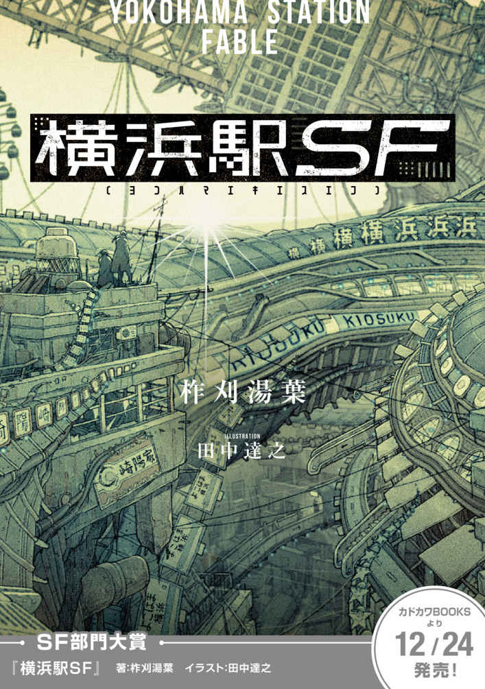
１．時計仕掛けのスイカ
CLOCKWORK TICKET
その朝、富士山は黒かった。
昨日までコンクリートで覆われていた白富士が、一夜にしてエスカレータの黒一色に染められたのだ。それは長かった梅雨が明け、夏が来たという印だった。
「斜度が影響している」
海岸に座った教授が、富士のほうを見ながら言う。
「構造遺伝界は一定斜度のある場所にエスカレータを形成するように記述されている。しかし同様に雨が続くとコンクリートの屋根を形成する。富士山では頂上付近と麓 の天候の違いにより、エスカレータとコンクリートの層がパイ生地状に重なった構造となる。これが白富士と黒富士の構成原理だ」
「そうか」
三島ヒロトは相 槌 をうった。彼は教授の言っている内容はほとんど理解していなかったが、この孤独な老人の相手をすることがヒロトの仕事のひとつであった。
「教授」と呼ばれるこの認知症気味の老人が九 十 九 段 下 に現れたのは、今から二〇年ほど前のことだ。エスカレータの下に雑 巾 のように転がっていた教授を見つけたのは幼いヒロトだというが、彼の記憶にはない。
その頃の教授はまだ髪が黒く頭もはっきりしていたが、言葉がほとんど通じなかった。どうやらエキナカのうちでも、岬からかなり遠い地域に住んでいたらしい。
どうにか意味が通じたのは、彼がエキナカの「ラボ」と呼ばれる場所で「教授」をしていたという事だった。横浜駅を追い出されたということは、恐らくSuika不正利用判定を出されたということだ。この岬には、駅から排出されてくる廃棄品と一緒に、たまにそういった「不正利用者」が吐き出されてくる。
しかし、彼が何をして駅を追い出されたのかはわからなかった。そして教授がヒロト達の言語に慣れるころには、今度は頭のほうが不明 瞭 になってしまった。
ひとしきり富士山表層の横浜駅増幅原理について語りおえたあと、教授は反応を見るようにこちらを見た。それでようやく今話している相手がヒロトであることに気づいたらしく
「今日、出発するのだったな」
と言った。
「ああ。世話になったな」
「お互い様だ」
ヒロト達の暮らす岬は、横浜駅１４１５番出口の長い長いエスカレータ（二本あって二本とも下り）の下にあることから「九十九段下」と呼ばれていた。実際には九十九段よりもずっと長い。逆走して登ろうにも、途中で休むとすぐ下に流されてしまう。九十九段下のエスカレータを上まで登りきるのは、岬の子供たちの間では「一人前の証」とされていた。
エスカレータを登り切ったところは「花畑」と呼ばれるゴミ捨て場で、そこを暫く行ったところに、自動改札たちが待ち受ける横浜駅エキナカへの入り口があった。そこまでがヒロト達にとっての「世界」のすべてだった。横浜駅の外で生まれ、Suikaを持たない彼らは「エキナカ」に立ち入ることは出来ない。海岸沿いに点在する他のコロニーと交易のための船を出す以外は、この岬で一生を過ごすのだった。
「よう、行くのか」
エスカレータを登り切ったところにヨースケがいた。彼はこの「花畑」で、横浜駅のエキナカから廃棄されたゴミを活用する掃除人だった。ここには期限切れの食糧、機械部品、そういったものが毎日のように流れてくる。掃除人達の仕事は使えそうなものを選り分けてエスカレータの下に送り、それ以外は自動改札のそばにあるダストシュートに投げ込むことだ。ダストシュートがどこに繫 がってるのかは誰も知らない。
「今日は電波が強い。多分、近くに新しい基地局が生えたんだろう。天気もいい。旅立ち日和だな」
ヨースケが端末のキーボードを叩 きながら言った。横浜駅構内ネットワーク「スイカネット」の基地局はエキナカにしか存在しない。しかし「花畑」のようなエキナカのすぐ近くであれば、こぼれた電波を拾ってくることができる。ただ基地局の場所も刻一刻と変わるので、通信はきわめて不安定だった。
「見ろ。さっきネットから拾った画像だ。登山者が撮ったらしい」
と、ヨースケが示したのは看板の画像だ。よく見る駅構内案内板で
「横浜駅最高地点 海抜 四〇一二メートル」
とある。
「富士山の頂上か」
「ああ。自然の地形は三八〇〇メートルくらいまでらしいがな。駅が積もりに積もってついに四〇〇〇を越えた」
花畑の窓からも黒富士が見えた。あの山もかつては雪と土壌を露出させる火山だったという。横浜駅が増殖をはじめてから二〇〇年あまり、もはや自然の山は本州にほとんど残っていない。
「結局、おれの頼んだ情報は見つかったか？ 駅構内のくわしい地図とか」
「ああ、悪いが無理だった。このシステムはあくまでスイカネットを流れるパケットを拾い集めるだけで、こっちから特定の情報にアクセスすることはできない。Suika認証さえ出来れば、もっと色々なことができるんだがなあ」
ヨースケは悔しそうに言いながら画面を切り替えた。地図らしいものが表示された。
「これが今のところ手に入れた最新地図。二〇年くらい前の構内図の断片だ。地名から推測するに、たぶん宮城の牡 鹿 半島あたりだ。どうする、持ってくか？」
ヒロトは黙って苦笑いした。
「まあ、中で自分で探したほうがいいだろ。住民のための情報は、こっちで探すよりもずっと充実してるはずだからさ」
「それもそうだ」
ヒロトは頰をかいた。ヨースケは炭酸のないコーラをぐっと飲んだ。
「ヨースケ。お前もたまには下に降りたほうがいいぞ。おふくろさんが心配している」
「嫌だね。最近は食って寝てばかりだから脚も鈍ってきたんだ。降りたらもうあのエスカレータを登れない」
ヨースケの体は、去年の暮れに会ったときよりもまた一回り丸くなっていた。子供のころ、どちらが先にエスカレータを登りきれるか競い合っていた頃の面影はもう無い。
「お前こそ、マキを置いていっていいのか？ 一緒に来い、とか言えばよかったのに」
「18 きっぷは一人で五日間までなんだ。二人で使うと有効期限が半分になる。東山のやつはそう言っていた」
「ふーん、それじゃお前が戻ってこなかったら、俺が責任持ってあいつの面倒をみよう」
「お前はまず自分自身の面倒を見ろ。流れてくるものを食べるだけの生活から離れてみるとかな」
「なーに。なんやかんや言って九十九段下の生活は俺たちが支えているんだぜ。下々の者達もそのところは分かっていよう」
ヨースケはカカカカと笑った。
岬には、わずかな土地を使って農業をする者、船を出して漁や交易をする者、ヨースケのような掃除人がいたが、全体的に労働人口に対する仕事は不足していた。そもそも横浜駅から廃棄されてくる食糧が、この狭い土地の人口に比べて多すぎるのだ。ヒロトも岬での決まった仕事はなく、海を眺めたり、教授の相手をして日々をやり過ごすことが多かった。
横浜駅から廃棄される食糧があまり安定していないことは、岬の住人の懸念のひとつだった。駅のちょっとした気まぐれで廃棄物の流路が変化して、この九十九段下に食料がもたらされなくなる事もありうる。そうやって滅びたコロニーの噂はいくつか聞いたことがあった。
「駅に依存しない生活」
と岬の酋 長 たちは目標を掲げていたが、目下のところほとんど趣味程度の食料自給しか出来ていなかった。住民の何人かは自分たちを「横浜駅の家畜」と自 嘲 的に言っていた。家畜ならもう少し駅の役に立つことをするべきではないかとヒロトは思ったが、この巨大構造物にとって何が「有意義」なのかなど、彼の想像力の及ぶところではなかった。
ヨースケのもとを離れ、エキナカへの入り口へ向かう。自動改札がその両手を勢い良く広げて、ヒロトの侵入を阻む。
「Suikaが確認できません。お客様のSuikaまたは入構可能なきっぷをご提示ください」
六体の自動改札が声を揃えて言う。金属的なボディに似合わない女性の声だ。
「これで頼む」
ヒロトはポケットから、小さな箱状の端末を取り出して見せた。
「18 きっぷを認証しました。有効期限は本日から五日間となります。五日が経過いたしますと、駅構内からの強制排除が実行されます。以上のことに同意いただける場合は画面にタッチをお願いします」
自動改札の顔のパネルに「規約を確認して同意」のボタンが表示された。ヒロトはそのボタンに触れた。
「ようこそ横浜駅へ」
「本日は当駅をご利用いただき誠にありがとうございます」
自動改札たちは重々しくその両手をおろした。ヒロトはその間をくぐってエキナカに入った。彼にとって、そして九十九段下に住むほとんどの人間にとって、もう何世紀ぶりか分からない横浜駅のエキナカへの旅立ちだった。
◆
「キセル同盟」の男が九十九段下に現れたのは、ヒロトの旅立ちの一年ほど前のことだ。岬の漁師に助けられて九十九段下に来た三十歳くらいの男だった。小柄で色白で（これは多くのエキナカの住民に共通していた）目が細く、動物のキツネを思わせる風 貌 をしていた。東 山 と名乗った。
岬の周辺はどこでも海岸線すれすれまで横浜駅がせり出しているが、干潮時にはいくらか歩ける幅ができる。彼はSuika不正判定を受けながらもなんとか自動改札から逃げ延び、鎌倉あたりで捕まって海岸に放り出された。そこから人里を求めて、九十九段下まで歩いてきたのだという。
「おれはツイてる方だ。同盟の仲間たちはみんな内陸部で自動改札に捕まっちまった。おれは命からがら海沿いまで逃げてきたんだ」
「内陸部で捕まるとどうなるんだ？」
とヒロトが聞くと、そんなことも知らないのか、という顔で
「自動改札はべつに不正利用者を殺害するわけじゃない。麻酔で眠らせるなりロープで拘束するなりして、最寄りの駅外に追い出すだけなんだ。だからこそ、内陸部で捕まると非常にまずい」
本州のほとんどが横浜駅で覆われた現代でも、内陸部には穴ぼこのような駅の外、つまり「駅 孔 」が各地に点在しているという。
そして不正利用者を捕まえた自動改札は、その場から最寄りの駅孔にその利用者を機械的に放り出すのだった。大抵の場合、そこは山岳部の不毛地帯で食べるものもなく、追放者はそこで寒さなり飢えなりで死ぬのを待つしかない。
一方、海岸に追放されれば、とにかく海沿いに歩けば九十九段下のような人里にたどり着ける可能性があった。だからその男は、自動改札の目を盗んで命からがら海沿いまで逃げてきたのだった。
「おれの罪状は、横浜駅に対する反逆行為だ」
東山はそう誇らしげに言った。他のケチな不正利用者とは違う、ということを言いたいようだった。
Suika不正利用による追放者が九十九段下に流れてくるのはそう珍しいことではない。追放の原因でいちばん多いのは、他人を傷つけたり殺したりといった「駅員および他のお客様への迷惑行為」であり、その次が「器物破損」だった。
こういう追放者の多くはエキナカ社会の底辺層で、教授のように言葉が通じないケースは稀 としても、岬に来てもあまり自分の話をしないタイプが多かった。そういうわけで、エキナカの事情を九十九段下の住民はよく知らない。
そんな中で、東山は例外的に饒 舌 な男だった。ヒロトをはじめ岬の人々は、最初のころは彼の話を聞きによく集まった。彼は「キセル同盟」と呼ばれる組織に所属していたという。
「その同盟ってのは、つまり何を目的とした同盟なんだ」
とある者が聞くと、
「何ってそりゃ、人類を横浜駅の支配から解放することだよ。決まってるだろう」
と言う。何がどう決まっているのか分からないが、そういうものなのだろうかとヒロトは思う。
「解放ってのは何だ？ 単に駅の外に出るというのは違うのか。あんたらはSuikaを持ってたんだから、自由に出入りができたんだろう」
「あんた方に理解してもらうのは難しいだろうけれど、人類はもともと駅を支配していたんだぜ。俺たちのリーダーはいつも言っていた、駅に支配される生活を終わらせようって。あんたらもこんな駅の廃棄物を漁る生活からいつか抜けださなきゃいけないんだよ」
こういう具合で、彼はいつも九十九段下の住民を見下すような物言いをしていたので、最初は熱心に話を聞いていた住民もしだいに彼への興味をなくし、数ヶ月もすると話を聞いているのはヒロトだけとなった。
しばらくして冬が深まると、東山はどんどん体調を崩していった。もともとエキナカから来た人間は、外の環境に長く耐えられないことが多かった。教授は「免疫系」という言葉を使って何やら難しい説明をしていたが、ヒロトはそれを「エキナカの快適な環境で育ったので体が弱い」という程度に理解していた。
「あんたに頼みがある」
彼がいよいよという段階になって、看病していたヒロトに声をかけた。
「おれたちのリーダーを助けてほしい。あの人は今でも横浜駅の中で、自動改札から身を隠している。仲間たちはみんな捕まっちまった。あんたしか頼れる人がいない」
「助ける？ どういうことだ」
彼はヒロトに、手のひらに収まるサイズの箱状の端末を手渡した。
「18 きっぷだ。エキナカの古い階層から見つけだしたんだ。これを持っていれば、Suikaを体内に入れていない人間でもエキナカを自由に歩ける」
ヒロトはそれを受け取った。18 きっぷはその大きさに似合わずずっしりと重かった。「有効期限：利用開始から５日間」と画面に表示されている。
「リーダーならきっと何とかしてくれる。あの人は天才なんだ。きっとエキナカも、この村も、みんな横浜駅から解放してくれる」
そう言って彼は息を引き取った。
手渡された18 きっぷのことを、まずヒロトは岬の酋長に報告した。有効期限が一人で五日間となれば、自分以外にも誰かふさわしい人間を募ってみるべきではないか。だが酋長は
「お前は子供のころからエキナカの世界を見てみたいとずっと言っていたろう、お前が行くと良い」
と言う。他の者たちも特に文句はないようだった。みんなエキナカに興味はあっても、それ以上にあの自動改札の恐ろしげな顔を思い出して萎 縮 してしまうようだった。
唯一ヒロトの旅立ちに不満を呈したのが、酋長の姪 にあたるマキだった。ヒロトが自分の家でそのことを彼女に話すと、
「どうしてそんな危険なことをするの？ そもそもあの人に義理立てする必要なんて無いでしょ」
と言った。ヒロトが一人で勝手に旅立ちを決めたことに相当機嫌を悪くしていた。
「べつに義理立てしている訳じゃない。おれが勝手に行きたいだけだ。リーダーを助けるとかそういうのは、行きがけの駄賃だ。まあ、どこにいるのかも分からないしな」
「そうね。君は結局、この岬が嫌いだったわけでしょう。だからこういう脱出する機会を待っていたの」
「......ちゃんと戻ってくるよ。そもそも五日間しかエキナカには居られないんだ」
「どこか別の出口を見つけて、そこで過ごしたほうがいいよ。せっかくのチャンスなんだからさ」
マキはそう言うなり家を出て行った。入れちがいに隣に住む教授が現れた。口論で大きな音をたてていたのを不審に思ったらしい。ヒロトは教授に、自分が18 きっぷを手に入れて、エキナカへ旅立つことを決めた、と告げた。
「ほう。つまりお前は、エキナカに旅立つことにしたのだな」
ひととおりの話を聞くと教授はそう言った。普段ぼんやりとどこか遠くを見ているこの老人が、いつになく目を見開いて真剣に言った。
「ああ」
「夕飯には戻ってくるのか」
「そのつもりだ。いつの夕飯になるかは分からないが」
「いつ行くんだ」
「準備ができ次第」
「どこに行くんだ」
「まだ決めてない。人探しを頼まれてるけど、どこにいるのかも分からないし」
「42 番出口に行け」
「......42 番」
「そこに全ての答えがある」
教授が何を知っているのかヒロトには分からなかった。もうすっかり頭が鈍ってしまい、支離滅裂なことを言うことも多かった。だが彼はときどきこうやって、確信にみちた、預言めいたことを言うのだった。
「42 番出口、どこにあるんだ、そりゃ？」
「横浜駅にある」
「横浜駅はそこらじゅうにある」
「そうだ。そこらじゅうにある。そこにもある」
といって教授はエスカレータの方を指した。「横浜駅１４１５番出口」と書かれた看板が掲げられている。
ヒロトは荷物をまとめた。といっても持ち物はほとんど無かった。武器になるようなものを探したが、少なくとも自動改札に対抗できそうなものは何も無かったし、漁師の使う銛 などを持っていったところでエキナカの住民に警戒されるだけで意味はなさそうだった。結局、当座の食料と水と、いくつかの身の回りのものだけを、愛用の肩かけのカバンに入れて持っていくことにした。
◆
「エレベータを使うなら五〇〇ミリエンだよ」
ドアの前に構えている太った中年女は面倒くさそうに言った。それがヒロトがエキナカで聞いた最初の人間の声だった。
「往復なら八〇〇ミリエン。安くしとくよ。歩いて久里浜まで行ったら二時間はかかるよ」
九十九段下から伸びる「横浜駅５７７２１５６番通路」を北上すること三〇分。賑 々 しい場所を想像していたエキナカにほとんど人の気配がなく、歩きまわっているのは自動改札ばかりで、不安になってきたところで最初に遭遇したのがこのエレベータ管理人だった。
「エレベータ？」
ヒロトは聞いた。目の前にあるのは金属製の扉だった。ガラスの窓がついていて高さは一メートル、幅は三メートルほどの棺 桶 のような小部屋が見える。扉は上下に開閉するらしい。「定員６名」と書かれたプレートが、なぜか横倒しになっている。
「乗り物なのか？」
「そうだよ。お兄ちゃんエレベータは初めて？ これに乗れば久里浜の岬まで二〇分で行けるよ。こいつはまだ生えて一〇年も経ってないから、揺れも少なくて快適だよ」
久里浜という場所はヒロトも知っていた。九十九段下から船で東に行くとある海岸だが、九十九段下よりも横浜駅がせり出していて土地が狭く、定住者はいない。岬の漁師が道具をおく小屋があるほか、夏になるとエキナカ民の何人かが海水浴目当てで現れる。
「いや、そっちへ行きたい訳じゃないんだ。それより道を聞きたいんだが、42 番出口というのはどこにあるんだ？」
「42 番？ そんな若い番号は聞いたことないねえ。道を知りたいならそこの端末を使うといいよ」
中年女は通路の奥のほうを指した。そこには自動改札から両腕を外したような端末が座っていた。両脚は壁に固定されており、どうやら歩行しないタイプらしい。
「あと、横 須 賀 まで行けば人がいっぱいいるから、そこで聞いてみるといいかもね」
「横須賀か。そこまで行けるエレベータは無いのか？」
「そんなのは見たことないねえ。エレベータもあんまり欲しいところにゃ生えてくれないんだけど、いいところに生えると大手の会社とか、ヤクザもんの取り合いになるからねえ」
と彼女はため息をつく。
「ここはあたしの旦 那 が最初に見つけたんだけど、ほとんど誰も来ないから楽なもんだよ。儲 けもほとんど無いけどね。あたしの旦那はもともと駅の探検家でね、駅に埋もれたお宝を探すって意気込んでたんだけど、もうちょっとまともに働いてくれりゃよかったんだけど、結局見つけたのはこのエレベータくらいでねえ」
中年女は話し続けた。恐らくこんなところで一人でエレベータ番をしているので、話し相手に不足しているのだろう。
「あんたもあまりそんな変な格好であまりウロウロするんじゃないよ。ただでさえ最近は北部の工作員が出るってんで、駅員がピリピリしてんだ」
「駅員？ 何だそれは」
ヒロトがいうと中年女は首をかしげて
「あんた駅員も知らんの？ 駅員ってのはねえ、悪いことした人を捕まえる人だよ」
と子供に教え諭すように言った。
「自動改札のことか」
「ああ？ 何いってんのよ。駅員が自動改札のわけがないでしょ」
「それもそうだな。わかった。どうも」
ヒロトはそこで会話を打ち切った。あまりに自分の無知が知れると、Suikaを持たないエキソトの住民であることがバレて面倒になりそうだった。服装も改めたほうがいいかも知れない。ヒロトの着ている服は、横浜駅から廃棄されたものを収集したり継ぎ接ぎしたものだが、エキナカの感覚からすれば相当に古いもののはずだ。
設置式の端末はずいぶん昔に生えたものらしく、筐 体 の塗装は剝 がれ、金属部分はところどころ錆 び付 いていた。画面に触れると
『横浜駅スイカネット☆キヨスク端末』
というポップ体のテキストと、その下にボタンが二つ表示された。
『有料会員として使用（Suika認証が必要です）』
『無料で使用（ＣＭ動画が流れます）』
ヒロトは「無料で使用」を押した。とたんに両脇のスピーカーから大音量で楽しげな音楽が流れだした。画面には見慣れた黒富士の動画が映しだされた。エスカレータの一段一段まではっきり見える。どうやら九十九段下よりもかなり近距離で撮ったものらしい。
「この夏休み、ご家族で富士山に登ってみませんか？ 年々標高が上がり続けて現在は四〇五〇メートル。一度登ったかたもぜひトライ。全経路エスカレータ完備で子供やお年寄りでも簡単に登れます！ 宿泊・お食事施設つきのプランで、お一人様三五〇〇〇ミリエンから。お問い合わせ先は、スイカネット番号 0120──XXXXまで」
けたたましい音をたててＣＭは唐突におわった。それから画面が切り替わる。
「何をお探しですか？ （１）物を探す（２）人を探す（３）場所を探す（４）仕事を探す（５）フリーワード検索（６）ホームに戻る」
ヒロトはしばらく考えて「人を探す」でリーダーを探すことを考えたが、そもそも自動改札から逃げまわるような人間がスイカネットで簡単に見つかるとは思えないし、むしろ探している自分に危険が及びそうな気がした。「場所を探す」を押し、
「42 番出口の場所を教えてくれ」
とマイクに向かって話した。
『42 番出口、検索中.........』
砂時計のアイコンがくるくると一〇秒ほど回転し、検索結果が表示された。
『１件がヒットしました』
表示された地図はきわめてシンプルだった。等高線が密に書き込まれた地図は、どうやら山岳地帯を表しているらしい。そのなかにぽつんと「42 番出口」と書かれた点があるだけだった。周辺に施設らしい施設はない。
「広域」ボタンを押して最大限にズームアウトしても、等高線がいくらか密になるだけで大まかな場所がわからない。そもそもこの駅構内案内システムは、画面全体が一キロ四方になるような地図までしか対応していないようだった。
ヒロトはしばらく考えて、
「行き方は？ 経路と所要時間を教えてほしい」
というと、
『現在地から42 番出口までの経路を検索中...』
と表示され、一秒も待たずに結果が出た。
『経路が存在しません』
「どういうことだ？ 遠すぎるのか」
しかし端末はその質問には答えなかった。『やりなおし』のボタンを押すと画面が最初に戻り、ふたたび大音量でのＣＭが始まった。ヒロトは何度もその操作を繰り返したが、42 番出口の行き方についての情報にはいっこうに辿 りつけなかった。そのうちにＣＭを見るほうが面白くなってきた。結局三〇分ほど端末と格闘した末に得られた情報は
・42 番出口は、人里離れた山の中にある
・横浜駅の主要な観光地は、富士山のほかに、岩手の巨大堤防、三重の伊 勢 神 宮 、古代都市名古屋の遺跡などがある
・横須賀地区の名物はカレーライスであり、つい先週に新店舗「海自」がオープンし、開店セールで大盛り四〇〇ミリエンなので必ず行くべきである
・横浜駅放送の人気アニメ「しうまいくん」の劇場版「しうまいくん、宇宙へ行く」が来週公開する
・しうまいくんとは未来の世界からやってきたしゅうまい型ロボット（フードロイド）だったが、子供に残されて捨てられて地縛霊化した妖 怪 であり、食べ残しをする子供を見かけると必殺一〇〇万ボルトを食らわせる
というものだった。ひとまず重要なことは、横須賀というのがこの付近での中心的な都市だということだ。頭上の案内板によると「横須賀まで１２０００ｍ（１５０分）」とある。ふだん足場の悪い岬を歩き慣れているヒロトにすれば、こんな舗装されて平 坦 な道なら楽に歩けそうな距離だ。
九十九段下から北へ向かう通路は、床にホコリが積もり、点字ブロックは剝がれ、天井の電灯も点滅を繰り返していた。窓から差し込む光がなくなれば懐中電灯が要るのではないか。さっきのエレベータ管理人が言っていたように、歩く人がほとんどいないのだろう。
「エキナカ、もう少し綺 麗 なところだと思ってたんだがなあ」
とつぶやいた。ヒロトの持つエキナカのイメージは、ヨースケがたまにスイカネットから拾ってくる画像であり、つまり多くの人が行き交う大都市のものだった。そういう都市ではどんどん新しい通路が生成され、通路の束は酷使された筋肉のように太くなっていくのだ。
一方、ヒロトたちの住む九十九段下の近辺は、エキナカ住民にほとんど用のない場所だった。いわば横浜駅の盲腸のような場所なのだ。たまに来るのは久里浜の海水浴客のほかには旧道マニアくらいだ。彼らは駅の壁に生成される看板や広告を見て、その時代性に興奮するのだった。
とにかく横須賀まで行こう。そこまで行けば何かあるだろう。とヒロトは思った。
◆
「では説明をしてただこう、諸君」
長 袖 の制服を着た駅員が、ふたりの部下に向かって言う。時刻は午後二時。外気温は三〇℃にも達しているが、この横須賀の派出所は地下室のように涼しい。横浜駅でも人の往来の激しい都市部では、新しい通路が次々に生成されるために駅が何層にも折り重なり、太陽の熱は下層部まで届かないのだ。
「はい上官殿、説明いたします。この男は先程、第三階層のレストラン街で先日オープンした『海自』でカレーライスを注文しました」
細い体の駅員が答えた。胸のプレートには『九等駅員 佐藤』とある。
「うむ。それで」
「このカレーライスは、インドから横浜駅にカレーが伝来した時代を再現するというコンセプトに基づき『海自』の人気メニューとなっております」
と、体格のいい方の九等駅員が答える。彼の名は『志尾』とある。
「それは今言わなくていい」
「はい。失礼しました」
拘束されたヒロトは三人の駅員の分厚い制服を見て、外でこんな格好をしたらすぐに熱中症だろうな、と思う。部屋には冷房らしい設備もあるが、電源コードも配管も外されており、長いこと稼働した気配はない。ずっと以前からここは気温が一定に保たれているようだった。
「カレーライスの値段は、食品衛生税、消費税、駅熱機関使用税などを全て含めて四〇〇ミリエンでありました」
と佐藤が言う。
「うむ。それで」
「この食品衛生税は、エキナカにおける食の安全を確保し住民の健康的な生活を維持するための最低限必要なものを我々駅管理局が徴収するものであり」
と志尾が言う。
「それは今言わなくていい」
「はい、失礼しました」
「従いまして、この男は食後に店員から提示された四〇〇ミリエンの請求に対し、このような金属のメダルを渡しました」と佐藤。
「ふむ。なんだそれは」
本須六等駅員は佐藤の提示したメダルを見た。手のひらサイズの金属板に「５００」と刻印されている。
「ああ、これは知っているぞ。硬貨というものだ。Suikaが普及する以前の時代に、このような金属板で決済を行っていたのだ。まだ残っていたとはな」
「本須上官殿の博識とあふれる教養には感服の至りであります」と佐藤。
ヒロトの座らされた位置からは、鏡越しに本須六等駅員の持つ端末の画面が覗 き見 えた。どうやら佐藤九等駅員と志尾九等駅員の発言にいちいちポイントを付けているらしい。いまの佐藤の発言で佐藤に五点がプラスされた。
「つまりこの男は、このような貨幣や服装が使われていた時代からタイムスリップしてきた訳だな。サムライマンと呼ぼう」
「了解いたしました、上官殿」と両駅員。
「今のは笑うところだぞ、諸君」
「ワッハッハッハ！」と両駅員。本須は二人から一〇点マイナスをつけた。
「それで、だ。飲食店でこんな骨 董 品を提示するのは別に良い。それは我々の法に反するものではない。それで、何が問題なのだ？」
志尾が答える。
「はい。海自の店員によりますと、この男は貨幣を差し出したあとに店から逃亡したのであります。後で私が捕まえたんですが、Suika決済端末にエラーが起き、支払いが行われませんでした」
「つまり残高不足による無銭飲食ということだな」
「それは」
志尾がなにか言いかけたが、佐藤がそれにかぶせて答える。
「そのとおりです、上官殿」
エキナカで物理貨幣が流通していない、というのはヒロトの知るところではなかった。もちろん決済が基本的にSuikaで行われていることは追放者たちから聞いていたが、外で使われる貨幣もエキナカで有効だと勘違いしていたのだ。食料はいちおう五日分持ってきていたのだが、横須賀でカレーを食べたいと思ったのがあだとなった。
話は一時間ほど遡 る。カレー店で食事を終えたヒロトが店員の女の子に硬貨を渡すと、彼女はすこし困ったような顔をして「ありがとうございます」とそれを懐に入れた。その後、別の店員が「支払いをお願いします」とSuika決済端末をヒロトに向けたが、すでに支払ったものだと思ったヒロトは、Suika認証をされては困ると店から逃げようとした。
その後、たまたま居合わせた志尾に捕まり、Suika決済端末がヒロトの側頭部にあてられたが「Suika特性脳波が確認できません」というエラーが表示された。そんなエラーは店員も志尾も見たことがなく、志尾が派出所にいた佐藤に応援を頼み、ヒロトを拘束して、今に至る。
「無銭飲食者ということで、この男の身元を確認する必要が生じました」と佐藤。
「うむ。それで」
「しかし、Suikaの個人情報照合には、四等以上の駅員の印鑑のある照合申請書を提出する必要があります」と佐藤。
「うむ。それで」
「したがって本日は土曜日であるため、駅管理局に出勤している四等以上の駅員はおらず、申請が行えません」と志尾。
「休日にも関わらず出勤される本須上官殿は全駅員の鏡であります」と佐藤。この駅員たちはよくもこう切れ目なく言葉を並べられるものだな、とヒロトは思った。
「うむ。それで」
「従いまして、この男の処遇が決まるまで留置所に置く必要があるかと思われます。これには七等以上の駅員の許可が必要であるため、上官殿にご足労いただいた次第であります」と佐藤。
「うむ。そのようにしたまえ。ご苦労であった」
と本須は言い、端末の「送信」ボタンを押した。画面が切り替わり「佐藤九等駅員・八等昇格まであと５２０点」「志尾九等駅員・解雇処分まであと１４３点」と表示された。
「というわけでサムライマン。君は無銭飲食につき、留置所に入ってもらう」と佐藤は言い、ヒロトを手錠から持ち上げた。手錠は鎖の部分だけが金属製で、手にあたる部分は硬化ゴムとなっていた。
「運が良かったな。去年、金属の手錠で囚人に怪我させちまった駅員が自動改札に捕まっちまって、それ以来こうなってんだよ」と志尾が耳元でささやいた。
ヒロトは二人の駅員に挟まれて、留置所に行くことになった。二人のうちでは体格のいい志尾も、ヒロトより一回りコンパクトな体つきだ。横 須 賀 を歩きまわって分かったことだが、どうもエキナカの人間は全体的に体が小さいようだった。狭い屋内で暮らしていると自然と体が縮むんだろうか、とヒロトは思った。
この駅員たちの話によると、開放されるのはどう見積もっても二日以上後になりそうだった。そしてSuikaの個人情報照合にそれだけの時間がかかる組織だ、Suikaがそもそも無いということが発覚したら、何日閉じ込められるかわかったものではない。一日目午後にして早くも、ヒロトの探索終了の危機が迫りつつあった。
送られた「留置所」は六畳程度の部屋で、先客がひとりいた。
「よう、ずいぶん若い兄ちゃんが来たな。何をやったんだ？」
と、五〇前後にみえる男は聞いた。エキナカの住民らしく色は白いが、手だけが何やら汚れて黒ずんでおり、肉体労働者のように見える。
「ただの無銭飲食だよ」
ヒロトは答えた。
「そうか。そりゃ災難だったな。学生か？」
「そんな感じのだ」
学生、というものがどういうものか分からなかったが、とりあえず応じたほうが無難だと思った。
ドアの外にはさっきの志尾駅員が立っているのが見えた。余計な会話をして、身元を勘ぐられるのは避けたかった。
部屋を見回すと、ベッドが四つにトイレがひとつ。ドアは普通に金属扉で「非常口」のプレートがあり、カギは内側からかけるタイプだったが、外に無理やり南京錠でカギを設置したらしい。おそらく横浜駅が生成した部屋を、改造して留置所として使っているのだろう。天井には電灯がひとつ。壁と床はコンクリート。
「まあ、無銭飲食程度なら大した目には合わされねえよ。就職に困ったら俺と仕事しようぜ」
「なんの仕事だ？」
「煙草売りさ」
男は自分の仕事の概要を説明した。まず発掘屋が横浜駅のあちこちに生えてくる自販機を見つけ出す。もちろん駅設備なので破壊すると自動改札がやってくるが、Suikaを使えば正規に購入できる。それをしかるべき客に渡して、自販機から購入した額の数倍の金額を受け取る。という具合だ。
エキナカは基本的に禁煙とされ、違反した場合は自動改札に捕まることになるが、所定の「喫煙所」を使えば問題はない。だが自動改札とは別に、駅員が独自に「喫煙所」も含めた喫煙を禁止し、罰金を徴収していた。
「あいつらは何でもいいから規制しやがる。横浜駅と自動改札の理念に従い駅の治安を守りまーす、とか言ってやがるが、実際は自動改札が黙ってるところに勝手に規制して仕事を増やしたいんだ。その上に何かにつけて税金を要求してくる、ろくでもない連中だぜ」
ヒロトは男の話を聞きながら、脱出の算段を練っていた。窓もないコンクリ部屋だ。ドアは外側から南京錠でロックされているが、南京錠はおそらく駅設備でないので破壊しても自動改札に捕まる恐れはない。だがドアを破壊せずにどうやって南京錠を破壊できるか？
「おれはこう見てもちっとは名のしれた煙草の運搬屋でな。横須賀周辺の自販機発掘は大体おれの指揮下にあると言っていい」
「でも捕まっちまったんだろ？ これからどうするんだ」
「なあに、俺くらい組織的になると問題ないのさ。ここの二等駅員が実はひどいヘビースモーカーでな、俺はそいつと仲がいい。明日 、子分が一カートンでも持ってくれば、それで放免してもらえるのよ」
だとすればそれが脱出の機会か、とヒロトは思った。弱々しい佐藤駅員ひとりなら問題なくねじ伏せられる。だが比較的体格のいい志尾が相手だったり、二人以上で来られると難しい。話を聞く限りで駅員が武器を持っている可能性は低いが、暴 力 沙 汰 を起こすと自動改札に追い出されるというルールが18 きっぷ使用者にも適用される可能性がある。
いずれにせよ、チャンスがあるとすれば明日 だ。今は休んで体力を温存しよう。ヒロトはそう決めてベッドにもぐり、煙草臭のする布団をかぶった。
だがチャンスは予想よりも早く訪れた。
２．構内二万営業キロ
TWENTY THOUSAND KILOMETERS IN THE YARD
夢の中でヒロトは子供の頃を思い出していた。
変化の少ない岬の生活でも、少年時代の記憶というものはどれも鮮烈に残っている。いちばん印象にあるのは、彼が八歳のとき、九十九段下の下りしか無いエスカレータを登りきったことだった。
容赦なく下り続ける階段に抗って、体中の血液が沸騰するような熱を感じながら、一時間くらいずっと登り続けていたような気がする。もちろん子供の体力がそんなに持つ訳がないので、実際はせいぜい五分か一〇分くらいのはずだ。
銀色のランディングプレートに飛び込んできた少年を見て、当時の「掃除人」がびっくりした顔で「三島さんとこの子だよね？」と言ったのを覚えている。それから彼の手をひいてゴミの山を抜けて、「エキナカ」との境界まで行ってくれた。設置された六体の自動改札はふたりの顔を見るなり、
「Suikaを確認できません。申し訳ありませんがご入場はできません」
といって両腕で壁をつくり、エキナカへの道を阻んだ。
ヒロトが初めて見た自動改札の姿だったが、何の感慨も持たなかったことを覚えている。それはただの背景の一部だった。
エスカレータを降りて報告すると両親はすごく喜んでくれた。九十九段下のエスカレータを登りきることは岬の子供たちにとって「一人前の証」であり、八歳というのは大人たちの知るかぎりで最年少記録だった。
他の子供たちは「ヒロすげー」と口々に賞賛し、彼はちょっとした村の英雄になった。家でお祝いが行われた。隣に住んでいた教授も招かれた。当時の教授はまだほとんど言葉が通じなかったが、何か祝うべき事があったことを理解したらしく、彼の言語で祝辞らしいものを述べた。少年時代の自分にはその言葉が、まるで子供を大人にする魔法の呪文のように思えた。
身体が成長するにつれて、エスカレータを登りきるのは徐々に簡単になっていった。一〇歳のときにマキも登れるようになり、十一歳でヨースケも登れるようになった。同い年の子供たちが徐々に上の広場に集まって、ゴミの山から使えそうなものを漁って遊ぶようになった。そうして自分は、岬の英雄ではなくなっていった。
あるとき、ヨースケとマキと三人で、エスカレータを登りきった先の広場で、棄てられたペットボトルをならべてボウリングごっこをしていた。だがヒロトの暴投でサッカーボールはあらぬ方向に転がり、自動改札の向こう側に行ってしまった。ほんの数メートル向こうにあるボールをどうにか取り返そうとする子供たちを、自動改札は阻んだ。
そのサッカーボールはもう二度と戻って来なかった。
そうして彼は理解した。エスカレータを登りきって「一人前の証」を手に入れても、自分の世界はせいぜい数十メートルしか広がらなかったということを。
どれだけ成長を重ねても、自分たちの可能性はそこで終わっているということを。
かたかた、と小さな音がして、ヒロトは目を覚ました。目の前にはひとりの子供がいた。見覚えのない格好の子供だった。
目線の高さに腰のあたりがある。ベルトにはヒロトの見たことのない道具がいくつも括りつけられている。顔はよく見えない。天井に埋め込まれた常夜灯が逆光になっているからだ。
こんなに暗いのは何故だろう。まだ夜が明けていないのか？ 目をこらすと、子供の背後には煙草密売人の男が寝息をたてている。ああそうか、今おれは横浜駅の中にいるんだった。それで駅員とかいう連中に捕まって、留置所に入れられたのだ。思い出すと、とたんに口の中に残っている昼間のカレーの感触が気になり始めた。
再び目の前の子供を見た。なぜここに子供がいるんだろう？ 駅員の仲間には見えない。
急に視界が真っ赤に照らされて、ヒロトの思考は中断した。それがその子供の持つ細長い電光掲示板のものだと気づくまで数秒かかった。
『◆起こしてしまって申し訳ありません。』
電光板には横一列に文字が流れていく。
『ここは単に通過するだけなので、できれば騒がないでいただけると助かります。◆』
「待て。あんたは何者だ？ どこから入ってきたんだ」
ヒロトは布団から這 い出て、煙草売を起こさないように、声を抑えて喋 った。ベッドに腰掛けている自分と、立っている子供の背丈が大体同じくらいだった。
『◆ただの通りすがりです。部屋に穴をあけたことは謝りますが、しばらくすれば塞 がるのでご安心ください。ですが、ここはあなたの家というわけではなさそうですね。◆』
電光板はそう言い、彼（たぶん男だ）は天井を指した。見るとそこには、下水路のマンホールよりも一回り小さい穴がある。人ひとりが辛うじて通れそうな大きさだ。
「お前がこれを開けたのか？」
『◆そうです。この上の通路を通っていたのですが、出口がなかったので仕方なく。』
掲示板にはそう表示された。妙なことに、彼はその掲示板に文字を打ち出すのに指一本動かしていないようだった。操作盤らしいものも見当たらない。
『ところで、先ほどあなたが眠っている間に、勝手ながら特性脳周波を確認させていただいたのですが、あなたはSuikaをインストールしていませんね。どうやってここに来たのですか。◆』
ヒロトは少し躊 躇 ったが、この子供の持つ技術力を鑑みて噓をつくのは得策でないと判断した。布団の中に入れておいたかばんから、小さな箱状の端末を取り出した。
「これを使った。これがあれば、期間限定でエキナカに出入りできるんだ」
『◆これは18 きっぷですね。存在はユキエさんから聞いていたのですが、実物ははじめて見ました。◆』
「そうだ。おれはこいつを諸事情で手に入れて、興味本位でエキナカに来たただの観光客なんだ。こっちの慣習を知らないもんで駅員に捕まっちまって、このまま期限が切れたら自動改札が来て喫煙所とやらに放り出されてしまう」
煙草密売人の男が「うーん」と唸 ってごろりと寝返りを打った。ヒロトはまた声を抑えて言った。
「ここから出たい。手を貸してくれないだろうか」
彼は少し考えてから言った。
『◆いいですよ。ただし交換条件として、その18 きっぷを期限が終わったあとに僕に譲ってください。弊社で構造を調べようと思います。◆』
「いいぞ、使用後でいいのなら」
『◆では交渉成立ですね。今からここを出ますので、ちょっとその布団でこれを覆っていただけますか？ はい。そんな感じで。では行きます。◆』
そういうと彼は、ベルトから懐中電灯のような筒を取り出し、床に向けてスイッチを入れた。思ったよりも強烈な光が出て、煙草売の男がまた「うーん」と唸った。ヒロトは慌てて、隣の空いているベッドの布団も剝 いで重ねた。それでようやく光を封じ込めた。
半時間ほど床を掘り続けて、二人は留置所の下にある通路に出た。常夜灯だけの留置所に比べればだいぶ明るいが、カビ臭さから判断するにもう使われていない旧道のようだった。横浜駅でも横須賀のような都市は人通りに合わせていくつもの通路が生成するが、新しい通路は上に積み重なるため、下に行くほど使われていない旧道が多い。
「わりと近いところに通路があって良かったですね。ひとまず横須賀からは離れたほうがいいでしょう。よその都市に行けば駅員も別系統なので、捕まる心配はないですよ」
そこではじめて彼は自分の声で喋った。子供とも大人ともつかない中性的な声だ。ガラスの曇りきった案内板からどうにか「鎌倉方面 徒歩１２５分」の文字を読み取ると、二人はその方向に歩き出した。
少年の背丈はヒロトの半分ほどしか無かった。九十九段下のエスカレータを登りきったときの自分よりも、もっと小さいように見える。六歳か七歳くらいじゃないだろうか。エキナカの人間は全体的に自分よりも小柄ではあるようだが。
「いろいろと聞きたいことがあるんだが、......まず、何だ？ その、懐中電灯みたいなのは」
そう言って、さっき留置所の駅に穴をあけた機械を指した。
「これは構造遺伝界のキャンセラーです。弊社が開発しました」
「構造いで......？」
そんな言葉を教授が使っていたような記憶があったが、あまり真剣に聞いていなかったので思い出せない。
「簡単に言えば、これを照射するとその部分が横浜駅ではなくなるんです。そうすれば簡単に崩せますし、自動改札も反応しません」
彼の説明はヒロトには「このボタンを押すと太陽が西からのぼります」と言っているように聞こえた。いったん生成された横浜駅が人の手で崩せないというのは、それくらい確かなことだったのだ。
「まあ、駅管理局のつくった留置所に穴を開けてしまったのはちょっと申し訳なかったですが、数日もすれば周辺のコンクリートが寄ってきて塞がるので、問題無いでしょう」
「駅管理局ってのは何なんだ、横浜駅に管理者なんているのか？ 人間に管理できるようなものじゃないと思ってたんだが」
「このあたりの住民の一部が、勝手に管理者を名乗ってるだけですよ。僕も今まで色々な管理組織を見てきましたよ。地域によって警察とか、乗務員とか、政府とか、色々呼び方がありますけど、駅員というのが一番多いですね。ちょっと偏狭な人が多いので、仕事上トラブルになる事が多いですが」
ヒロトはそれから、目の前の少年をじろじろと見て考えた。地域によって？ 仕事？
「......もしかしたら、あんたは『キセル同盟』のメンバーなのか？」
「キセル同盟？」
「おれに18 きっぷを託した連中だ。おれはその『リーダー』の救出を頼まれて来たんだ。人類を横浜駅から解放するとか言っている」
「ふむ」
彼は数秒ほど黙って、
「そういう組織の存在は弊社も把握していますね。ただ、彼らはこういう道具を作る技術力は持っていないはずです」
確かにそうだ、とヒロトは思った。自動改札に追放されて九十九段下に逃げてきたあの男の印象と、いま目の前にある高度な技術力のイメージはどうにも合わない。
「ええと、それに、その組織の主な活動はスイカネットの支配だそうです。自動改札を制御しているスイカネットを乗っ取ることでの横浜駅からの解放を目標としているそうですね。物理的な防衛力は、彼らには本来必要のないものです」
そういう話は初耳だった。あの東山という男は解放の理念ばかりを熱く語っていたが、具体的な組織の活動内容についてはほとんど触れた記憶がない。
「物理的な防衛力」
ヒロトはそこでようやく、目の前の少年の正体に気づいた。
「そうか、あんたはこの本州の外から来たのか」
「そうです。ああ、自己紹介が遅れましたね。僕はネップシャマイ。ＪＲ北日本から派遣されてきた者です」
◆
「ここまで来るのに一年かかりました」
ＪＲ北日本の工作員、ネップシャマイは語る。横 須 賀 から旧道を歩くこと一時間、鎌倉までの道のりはあと半分ほどだ。この小さな工作員は体格のわりにヒロトよりも歩くのが速く、それでいて全身を忙しく動かしている様子もない。無駄のない動き方、という印象だ。
「道中いろいろな人達と出会いました。エキナカの人たちは、横浜駅に対してさまざまな価値観を持っているものですね。例えば岩手のあたりには、有名な大堤防があるのですが、あのあたりは駅は神聖なものとして信仰されているんですよ。冬戦争から国土を守るために横浜駅が生まれた、とかなんとか」
「なあシャマイ、あんたは工作員なのに、そんなに素性をべらべら喋って大丈夫なのか？」
ヒロトが聞くと、小さな工作員は笑って言った。
「誤解があるようですが、僕はべつに横浜駅の住民と敵対しているわけではないんですよ。我々の目的はあくまで、横浜駅の北海道上陸阻止です。僕の任務は一般情報収集なので、内地の方々と話すのも任務の一環なんですよ。どこにどんな情報が転がっているか分かりませんからね」
そういうものか、それもそうだなあ、とヒロトは思った。彼の持つ工作員のイメージは、たまにスイカネットから流れてくる戦争映画のものだった。まだ日本とかアメリカとかいった人間による政府が機能して、人間と人間が領土をめぐって争っていた時代のものだ。
「そういえば、おれが子供の頃に北海道の防衛線が突破されたって噂を聞いたんだが、あれはデマだったのかな」
「いいえ。それは真実ですね。一度は突破されたんですよ。構造遺伝界が函 館 のあたりまで浸透していたそうです」
ネップシャマイはさっき留置所に穴を開けた小さな筒を取り出した。「構造遺伝界キャンセラー」だ。
「これで何とか海峡まで押し戻したんです。ユキエさんの技術です。あの人がＪＲ北日本の技術責任者に就任してから、おそらく人類史上で初めて、横浜駅を押し返すことに成功したんですよ」
彼は自分のことのように誇らしげに言った。
横浜駅が海を渡れないことは、その拡張の始まりから知られていた。
東京湾に臨む位置に端を発した横浜駅は、ほぼおなじ速度で北と西に向かって膨張し、数年後には周辺の空港を吞 み込み、アクアラインと呼ばれた自動車道路を伝って房総半島に渡った。この時点で東京への物流はほとんど遮断され、首都としての機能は完全に停止した。日本政府は拡大する横浜駅に追われて北へ北へと逃亡したが、やがて山河を転がる岩のようにその身をすり減らしていった。どこで消滅したのかは歴史に伝えられていない。
この増殖する建造物が本州の北端まで辿 り着 いたのは、増殖開始から一世紀半ほど後の事だった。河川程度の幅であれば連絡通路を伸ばせる横浜駅であったが、二〇キロ近くある津軽海峡を渡ることは出来ない。青森の北端・大間岬では、横浜駅が北海道に向けて連絡通路を伸ばしては、自重に耐え切れず崩落していく様が地元住民に何度も目撃されている。
横浜駅の上陸を阻止するＪＲ北日本にとっての唯一の懸念は、青 函 トンネルを通じた横浜駅の侵入であった。トンネルを埋めても意味は無い。構造遺伝界は鉄骨やコンクリートを通じて伝搬できるからだ。すでに建設されたトンネルを地下から取り除く技術は、当時の人類には無かった。
「横浜駅は少しずつ進化しているんですよ。より正確には、少しずつ波形の違う構造遺伝界の重ねあわせ状態にある横浜駅が、撃退戦のたびに弱い成分を失っていくので、平均として強くなっているんです。四〇年以上拮 抗 していた青函トンネル防衛線が破られたのもそのためです」
「そうか。それじゃその武器があっても安心、というわけにはいかないんだな......」
「ええ。我々の仕事はこいつの進化を上回る速度で新兵器を開発するか、新たに弱点を見つけ出すことです」
彼は足で地面を指して言った。
「なあ、北海道ってのはどういうところなんだ？」
「広いですよ。自然の地面が、見渡す限りずっと広がっているんです。地球の丸さが分かるくらいに。とても綺 麗 です」
「そりゃすごい。一度見てみたい」
ヒロトは「地面」が一面に広がる様子を思い浮かべてみたが、どうもうまくイメージが湧かなかった。彼にとっての地面とは、そびえ立つ横浜駅と海との間にへばりつく、茶色と緑の弱々しい付着物だった。
「先程の留置所を通る前、駅の屋上から地形観測をしていたんですよ。富士山も見えました。真っ黒でした」
いまは黒富士の季節だからな、とヒロトは思った。
「北海道にも羊 蹄 山 という山があって、姿が昔の富士山に似ていたということで蝦 夷 富士とも呼ばれているんです。でも、いまの富士山よりはずっと綺麗です。我々はなんとしても、横浜駅の北海道上陸を阻止しなければならない」
ネップシャマイは語気を強めて言った。
彼の話を聞いているうちにヒロトは何やらばつの悪い気分になってきていた。九十九段下の岬は、歩いて一時間で回れる狭い土地だ。彼は横浜駅から勝手に流れてくる物質に依存して暮らし、たまたま18 きっぷを手に入れて好奇心で観光に来ただけの身の上だった。この北海道の工作員のように心から守りたいものを持ったことは無かった。
「なあシャマイ、ＪＲ北日本では、キセル同盟という組織のリーダーについての情報は持っていないのか？ おれの目的は、そいつを探しだすことなんだが」
「もちろん、その組織も接触すべき重要なターゲットのひとつではありますが」
「やはり見つけるのは難しいか。なんたって、何年も自動改札の手からも逃れているくらいの人物だ」
ネップシャマイはそこで足を止め、少し考えこんだ。
「それは逆にヒントかもしれませんね。横浜駅で自動改札から長く身を隠せるところはありません。あるとしたら、外です」
「......そうか、『駅孔』か」
先ほどの留置所で居合わせた、煙草売の男が言っていた。地形その他の都合で横浜駅が伸展しなかった穴ぼこが、横浜駅のあちこちに存在するという。
「でもそんな場所は山程あるんだろう？ 横須賀のまわりだけでも複数あるらしいし」
「ヒロトさん。あなたに18 きっぷを渡した人物が鎌倉まで逃げてきたと言いましたね。だとしたら、キセル同盟もその時点で、関東からそう遠くない場所に存在していたと見るべきでしょう。だとしたら」
ネップシャマイはベルトからまた別の、カード状の器具を取り出した。壁に向かってスイッチを入れると地図が表示された。
『首都圏駅孔マップ』
とタイトルにはある。
「そんな便利なものを持っていたのか」
「いえいえ。さっきの留置所で寝ていた方の端末から拝借しました。まあ、餅 は餅 屋 ってことですよ」
工作員は顔の半分だけ笑ってみせた。
「なんであいつがそんなものを持ってるって分かったんだ？」
「駅孔は喫煙所として使われる事もあるんです。あそこは自動改札の管理が及びませんからね。なんでもアリです」
そう言って二人は地図を見た。
「駅孔は多数ありますが、人が長く潜伏できるほど大規模な場所は多くありません。とくに平地は横浜駅が伸展しやすいので駅孔が少ないですね。この中で、海を目指して逃げた人が鎌倉に辿り着きそうな場所というと」
彼は「甲府」と書かれた点を指した。広大な盆地を取り囲むように駅孔を示す赤点が散在してる。
「まずはここを当たりましょう」
「でも、そんなところまで歩いて行けるのか？ おれの18 きっぷの有効期限はあと四日しかないんだ」
地図を見るに、甲府までは一〇〇キロ以上ありそうだった。ヒロトが想像したこともない距離だ。
「甲府に行くならいい方法がありますよ。まあ、鎌倉についたら説明しましょう」
そう言って二人は足を進めた。
「待ってくれ、シャマイ」
ヒロトは先を歩くネップシャマイを止めた。
「おれたちは同じところをぐるぐる回ってるようだ。この看板はさっきも見たし、あのへんのタイルの配置も、配管もまったく同じ形をしている」
「いいえ。ちゃんと進んでいますよ。スイカネットから位置情報を取得できるんです。ほら」
そういってネップシャマイは電光板に地図を表示した。どうやら自分たちがこれまで通った経路を記録しているようだった。通路は蛇のようにうねりながらも、全体としては東から西に進んでいた。
「これは反復配列ですね。駅が同じ構造を周期的に繰り返しているんです。初期に生成された通路にはよくあるんですよ」
ムカデの体節みたいなものなのだろうか、とヒロトは考えた。
「増殖初期の横浜駅は、まだ建築物としての情報が少なかったので、同じ構造の繰り返しパターンが多かったんです。拡張するにつれて構造遺伝界が各地の情報を取り込んだので、新しい構造ほど多様性が高くなるんです。駅構造ダイバージェンス過程と弊社では呼んでいるのですが」
そう言って彼は周辺の配管をぐるぐると見渡すと、
「ここはまだ横浜市にも近いし、ごく初期の駅構造がそのままの形で保存されているようですね。貴重な情報源です」
と嬉 しそうに言った。
「横浜市、ってのは何だ？」
「横浜駅の増殖起点となった都市ですよ。都市といっても人間がつくった都市なので、大部分が屋外に露出していたのですが。冬戦争の前までは、人口一〇〇〇万人の港湾都市として栄えていたらしいです」
「都市がまるごと屋外に出ていたのか」
「札幌は今でもそうですよ」
「札幌？」
「北海道にある都市です。弊社の本拠地です」
屋外に広がる都市。そういう風景をイメージしようとしてみたが、ヒロトには九十九段下の岬を大きくして視界一杯に広がる姿しか頭に浮かばなかった。どう考えても、一〇〇〇万もの人間が「屋外」の都市で生きているなんて事がうまく想像できなかった。
彼はずっと小さな岬で暮らしていていたが、自分たちの暮らす「屋外」という場所がこの世界からはみ出た存在である事は、目の前にそびえる横浜駅の存在から否応なく自覚させられているのだった。
「そういえば」
歩きながらヒロトはふとつぶやいた。
「あんたは『42 番出口』というものに何か知らないか？」
「42 番？」
「ああ。おれのもう一つの目的地なんだ。前にネット端末で調べたら、どこかの山の中にあるらしいんだが、正確な場所が分からなかった」
「それは変ですね。二 桁 の出口なら、おそらく横浜市周辺にあるのではないでしょうか？ 駅の出口は生成された順に通し番号がついていくものなんです。横浜市というのは港湾都市でしたから、そんな高い山はありません」
「そうか。おれの調べ方が間違っていたのかな」
「一度出来た出口が移動するトランスゲート現象というものはあるのですが、あくまで偶発的なイベントであり、そこまで長距離を移動することはないと弊社は分析していますね」
しばらく歩いて行くと、どうにか反復配列を抜けたらしく、少しずつ配管の形や看板のデザインが違ってきた。遠くの壁に目をやると、半分ほど開いたシャッターがあった。
シャッターの向かい側には、座ったままの自動改札が一体置かれていた。ヒロトの知っている自動改札と少し形状が違っていた。もう長いこと動いていないようだった。金属製のボディの表面は、何かヌメヌメした液体で覆われている。
シャッターの中は暗いが、茶色の段ボール箱が大量に置かれているのが見て取れた。
「なんだろう、ここは？」
とヒロトは言った。
「何かの倉庫のようですね。見てみましょうか」
「ああ」
シャッターは錆 び付 いているのか全く動かなかった。ヒロトは大きくしゃがんで一メートル程の隙間をくぐった。ネップシャマイはそのまま歩いて入った。
中にはウウーン、ウウーンという低い機械音が鳴り響いているが、自動改札の気配は無い。
段ボール箱はヒロトの目の高さまで積まれていたが、ホコリがたまってはいない。つい最近ここに置かれたもののようだった。
いちばん上にある箱を一つ持って床におろしてみた。箱は思ったより軽く、機械類が入っている訳ではなさそうだった。開いてみると、中にはシャツがぎっちりと詰まっていた。何枚か見てみると、デザインもサイズも全て一緒のようだった。
「どうやら衣類の流通経路のようですね」
ネップシャマイは言った。
「新品なのか」
「はい。同じものがこんなに大量にあるのは、そういう場合です」
「これが、全部そうなのか」
ヒロトは手で倉庫全体を指して言った。
「普通に考えるとそうなりますね」
そう言ってネップシャマイは電光板のスイッチを押して、倉庫内の壁をあちこち調べはじめた。
「そこに動く歩道があります。おそらくあの先に、衣服の生産施設があるのでしょう」
黒いベルトコンベアの上に段ボールが幾つも乗っていて、こちらに向かって流れてきていた。ヒロトはそれを一 瞥 するだけして、段ボールの山から次々と箱を取り出しては開けていった。
「おれの故郷では廃棄品しか流れてこないんだ。破れた古着とか、期限の切れた食べ物とか」
ヒロトはどうにかこのうちの一箱でも九十九段下に持って帰れないかと考えた。自分には少しサイズが小さすぎるようだが、岬に持っていけばみんな喜ぶだろう。Suikaが無いと買い物すら出来ない事は消沈していたが、これだけあるなら一箱くらい持って帰っても問題ないではないか。その時、
「おい、そこにいるのは誰だ」
倉庫の奥から濁った声が響いた。ずかずかと足音をたててこちらに近づいてくる。ネップシャマイはすばやくそちらに向かって歩いていった。
「てめえ、何こんなところでサボってやがるんだ？ 早く積み出しの仕事に戻れ」
という男の声が聞こえた。ヒロトは慌てて段ボールをもとの場所に戻そうとしたが、焦って逆に山から箱をひとつ崩してしまった。ばさん、と大きな音が倉庫に響いた。
シャッターの向こうで何か明かりが灯るのが見えた。自動改札のディスプレイが点灯し、こちらを見ているようだった。しかし歩き出す様子は無かった。どこか動力部分が故障しているのかもしれない。
「失礼ですが、僕はここの従業員ではありません。人違いではないでしょうか？」
というネップシャマイの声が聞こえた。
「ああ？ ああ、うん、確かにな。いくらうちでもてめえみてえな小さいのは雇ってねえ。じゃ泥棒か。おい、そっちのおめえが親玉か？」
という声が聞こえた。崩れた段ボールの隙間から、三〇代ほどの男の顔が見えた。ぎょろりとした目でこちらを見ている。目線の位置はヒロトより頭ひとつ半ほど小さいが、それは身長差だけではなく、男のひどい猫背のせいでもあった。
「待ってくれ、誤解だ。おれたちは泥棒じゃない。ただの旅行者で......」
と言ってみたが、そこら中に蓋 の開いた段ボールが散乱しており、しかも自分はたった今、それを持って帰ろうとしていたところだったのだ。
「ここはあなたの倉庫なのですか？」
ネップシャマイは特に気にする様子もなく言った。
「ああ。おれが見つけたんだ。この上の方にいつも衣服が出てくる場所があったからな、その先をたどってみたら、ここにたどり着いたんだ」
そう言って猫背の男は懐から小さな端末を取り出して、画面に何か表示してヒロトに見せた。
「ほら、証明書だ」
画面には「駅設備発掘証明」と書かれた文章が表示されていた。この倉庫の位置座標と、発見者の氏名およびSuika IDと、独占的な所有権が二〇年間にわたって存在する事が記されている。最後に「横 須 賀 駅管理局」の印がある。
猫背は段ボールが開けられているのを見ると、
「おい、商品を汚すんじゃねーよ。弁償しろ」
と唾 を飛ばしながら叫んだ。箱を開けただけで「汚した」と言われるのがヒロトには理解できなかった。新品の衣服というのはそういう扱いなのだろうか。
「金は持ってない」
そう言うと男はヒロトの服装をじろじろ見て「金が無い」ということに全面的に納得したらしく、
「しゃーねーな。じゃ、てめえが代わりに仕事をしたら勘弁してやるよ」
と言った。
「仕事？」
「ああ。ここにある商品を、上にある店まで運ぶんだ。ほれ、あっちに階段があるだろう」
そう言って男は倉庫の反対側の奥を指した。そちらは電灯がついていて明かった。金属製の手すりがあって、その左側に「のぼり」、右側に「くだり」という文字と矢印が書かれている。エスカレータと違って動く様子はない。
「このへんにあるものを運べばいいのか？」
「階段を昇ったら廊下がある。そこに古いエレベータがあるから、その前まで持って行くんだ。三〇箱で勘弁してやるよ。三時間でやれ」
「わかった」
ヒロトは段ボールの前にしゃがみ込むと、
「シャマイ、ちょっと荷物持っててくれ」
と自分のかばんをネップシャマイに渡した。ネップシャマイはそれを両手で受け取ると、重さのせいで少しよろけて二歩後ろに下がった。
18 きっぷだけは取り出して、ズボンのポケットに入れておいた。これが無いといつ自動改札が現れるか分からない。
五段に積まれた段ボールを両手で二列摑 んで、ぐっと持ち上げ、階段のほうに歩いて行った。
「うお、思ったより重いな」
とヒロトはつぶやいた。左右で重さが違う上に、持ち上げた箱がヒロトの身長よりも高くなったので、前が全く見えなくなった。
「その方向で合ってますよ。まっすぐ進んで下さい。点字ブロックのところから階段です」
というネップシャマイの声が聞こえた。すり足で少しずつ進むと、途中で足元に凸凹の感触が伝わってきた。
金属手すりの左側が「のぼり」だった筈 だが、そちら側は幅が狭く、段ボール二列を持ったままでは登れそうになかった。ヒロトはそこで立ち止まった。
「大丈夫ですか？」
というネップシャマイの声が聞こえる。
「なあ、これって、くだりの方を登ってもいいのか？」
「ええ。問題無いですよ」
だったら何でそんなものを書くんだろう、と思いながら階段を登っていった。階段は思った以上に長く、途中で何度も踊り場があり、そのたびに箱を一 旦 床に置いて、まだ「廊下」に達していない事を確認する羽目になった。
箱を廊下に置いて倉庫に戻ると、男が驚いた顔でヒロトを見ていた。一般的に力の弱いエキナカの住民にとって、一〇箱も同時に持ち上げるのが彼の筋力が想定外だったようだ。
「あと二〇箱だな」
ヒロトは肩をぐるぐると回して再び段ボールを一〇箱持つと、
「前が見えなくてやりづらい。シャマイ、ついてきてくれ」
と言った。
「いいですよ」
ネップシャマイはヒロトの脇について、「もうすぐ踊り場があります」「そこで左に曲がります」と的確に指示を出した。おかげで二往復目はだいぶ楽に上まで登りきった。
「高低差は一四メートルですね。五階層分くらいでしょう」
ヒロトが段ボールを置いたところでネップシャマイが言った。
「普通はこういう場合はエレベータやエスカレータが生成されるのですが、底が旧道なので使う人がいないのでしょうね。たまたま階段だけが出来たので、あの男が見つけるまで誰にも発見されなかったのでしょう」
「こんな普通の道があるのに？」
「エキナカの人達にとって、どこまで続くか分からない階段というのは、ちょっとした恐怖なんですよ」
ヒロトにはその感覚がまったく理解できなかった。九十九段下の下りしかないエスカレータを何度も逆走した彼にとって、こんな動かない階段のなにが恐怖なのだろう、と思う。
二往復目を終えて倉庫に戻ると、
「おい兄ちゃん、大したもんだな。よかったらうちで働かないか？ ちゃんと月給も出すぞ」
と男が言った。
「いや、おれは通りすがりだ。あまり長居する暇はないんだ」
そもそもあと四日しかエキナカに居られないし、月給を受け取ろうにもSuikaを持っていないのだった。
ヒロトはまた段ボールを一〇箱摑んで階段を登った。仕事の確認をするためか、三回目だけは猫背男もついてきた。三時間以内と言われたが、十五分もかからなかった。
「仕事はこれで全部だな。じゃ、おれたちは行くぞ」
エレベータの前に三〇箱を揃えてヒロトは言った。
「ああ、ご苦労さん」
そのとき、廊下にある古いエレベータの扉ががらっと開いた。中から出てきたのは三人の子供だった。男の子が二人と女の子がひとりだ。十二歳前後で、ネップシャマイよりひとまわり体が大きい。
「ああ、てめえらの今日の仕事はナシだ。もう今日の分の運び出しは終わったからな」
男がそう言って、
「これ、もう運んじゃったの？」
子どもたちがヒロトのほうを見て言った。
「あなた方がこの倉庫の従業員なのですか？」
ネップシャマイが子供たちに向かって言った。子供たちは、大人びた喋 り方をする年下の少年に戸惑った顔を見せつつも、
「お金が返せなくなるよ」
と言った。
「あの男に借金をしてるのですか？」
「うん。あと三八万ミリエンあるんだ」
「ぼくは四一万」
「わたしは三六万」
子どもたちが口々に答えた。自分が四〇〇ミリエンの食い逃げで捕まった事を考えると、彼らの言っている金額が相当な額である事はすぐにわかった。
「運び出しの仕事で、借金を返済しているというわけですか」
「うん。一日一〇〇ミリエン」
「三年前からやってる」
「でも今日はナシになった」
そう言って子どもたちは恨めしそうな目でヒロトを見た。
「あの倉庫はキュウが見つけたんだ。それをあいつが横取りしたんだ」
「キュウって？」
ヒロトが聞いた。
「キュウはもういない」
「六歳になったから、かいさつに連れていかれたんだ」
子供たちは淡々と喋っていた。ヒロトにはそれが、起きた事に対する感情の表し方がよく分からないように見えた。
それからしばらくすると、またエレベータの扉が開いた。子供たちは黙ってそれに乗って、上に帰っていった。
あたりは静かになった。ヒロトとネップシャマイは、そのまま「鎌倉方面」と書かれた方向に向かって歩き出した。
「なあシャマイ、なんでエキナカはこんなに物があるのに、ああやって所有権がどうのこうの言って取り合いをしてるんだ？」
ヒロトは言った。
「おれの故郷は廃棄品しか流れてこないところだけど、それで十分やっている。流れてくるものは皆で分けあってるし、あんなふうに子供を働かせたりはしない」
「おそらくあの子たちは、何らかの事情で親がいないのでしょうね。それであの男がSuika導入費用の肩代わりをして、そのぶん働かせている、という事でしょう」
ネップシャマイは歩きながら言った。彼はまだヒロトのかばんを持ったままだった。
自分たちの歩いている通路は、倉庫のある旧道と違って今でも使われている道だったが、深夜帯というせいもあってか人通りはほとんど無かった。
看板は、まもなくこの旧道が鎌倉に至る新道に合流することを示していた。そこで急にヒロトは自分が空腹であることに気づいた。考えてみれば、昨日の昼に横須賀でカレーを食べて以来なにも口に入れていない。その上で肉体労働をしたものだから、全身がかなり疲弊していた。
カバンには九十九段下から持ってきた食料があるが、せっかく街についたら何がうまい物が食べたいものだ。Suikaが無いので買い物はできないが、そのへんは彼に頼んで何とかできないだろうか。そこでヒロトはふと妙なことに気づいた。
「なあシャマイ」
ヒロトは先を歩く工作員に声をかけた。ネップシャマイは足をとめて振り向いた。
「あんたはSuikaをどうやって手に入れたんだ？」
そのとき、「ぱん」と巨大な風船を割ったような音が響いた。人通りがない通路には、反射音が吸収されずに響き渡った。
ネップシャマイの体がばたんと倒れた。間髪をいれずに再びぱん、ぱんと再び音が響いて、倒れたネップシャマイの胴のあたりがばん、ばんと弾けた。通路に火花が飛び、細い白煙がもうもうと立った。
ネップシャマイは表情を変えないまま、黙って両腕をじたばたと動かし、首のあたりをもぞもぞと触っていたが、やがて動かなくなった。
「待て、でかい方は撃つな」
低い声が通路に響いた。鎌倉行きの新道につながる扉が重々しく開かれ、大量の光が暗い通路に流れ込んできた。ヒロトは思わず目を覆った。
「そっちの男は人間だ。撃つと自動改札が来るぞ」
ゆっくりと目を開ける。扉には『非常口 Emergency Exit』と書かれた緑の看板があり、その下には制服を着た駅員が二人立っている。顎 ひげを生やした男と、長銃を持った女のようだ。
「おい、お前」
髭 の男が近づいてきた。胸のネームプレートには「二等駅員 片久里」という字が見える。
「北の工作員なんて連れて来て、どういうつもりだ？ お前は北の職員か？」
「待ってくれ、違う。おれは、おれはただの観光客だ」
ヒロトが答えると、男は足元に転がるネップシャマイの体をごろんと蹴 った。異常な量の蒸気がしゅうしゅうと上がる中、彼の体にはコブシ大の風穴が三つほど開いていて、その中には引きちぎられたケーブルやパイプのようなものが覗 いている。
「これはお前のお友達じゃないのか？」
「たまたま行きずりで一緒にいただけだ」
「知り合いではない、と？」
「工作員だとは知らなかったんだ」
ヒロトはとっさに噓をついた。
「......人間じゃないってことも」
こっちは本当だった。もちろん違和感はあった。なぜＪＲ北日本がこんなにも幼い工作員を使っているのか、そして、こんなに幼い子供がなぜああも博学なのかと。さっきの段ボール運びで見た子供達とくらべて、その違和感はより強まっていたところだった。
「ああ、そいつは仕方ねえよ。こいつはＪＲ北日本の最新型アンドロイドだ。Corpocker‐3型、といったな。前世代の２型は自動改札みたいな格好していたんだが、こいつは思いっきり人に似せてやがる。スパイ要員のようだな。人間じゃないからSuikaなしでも出入りできるし、スイカネットでも位置を把握できない。厄介なやつだよ」
「上官殿。その男からはSuika特性脳周波が検出されません。危険です」
男の背後で長銃を持った女がこちらに照準器を合わせて言った。髭の駅員は少し不審そうな顔をしたあと、ヒロトの全身を見回して、それから左手で髭をぼりぼりと搔 きながら言った。
「Suikaがない？ あー、そうかそうか。お前はアレだな。あれ、なんつったか。駅孔棄児だな」
「キジ...？」
「ガキの頃に親に駅の外に捨てられたんだろ。よく生きてたもんだな」
「違う。おれは横浜駅の外で生まれて、外で育ったんだ」
「ああ、知らんのか？ そんじゃ、ずいぶん世代が経ってるんだな」
男は右手で頭をかりかりと搔いた。どうにも落ち着きのない様子だ。
「いいか。説明してやるよ。横浜駅で生まれた人間は、六歳未満の幼児のうちはSuikaがなくても問題ない。だが六歳になって小児になると、Suikaをインストールしなきゃいけない。そのときデポジットって言ってな、五〇万ミリエンをネットに支払う必要があるんだ。貧しい労働者にゃちょっと負担できない金額だ。つまり子供を産んじまったはいいが、六年以内にデポジットが用意できない場合は」
喋りながら男はヒロトの背後へ歩いて行った。そこには動かなくなったネップシャマイの身体が転がっている。
「そのガキは自動改札に捕まって、駅の外に捨てられる。外っつーか、まあ普通はそのへんの駅孔だな。たいていは一人じゃどうにもならない場所だ。長くは生きられない。ところが、広くて水や食い物が豊富なところだと、捨てられたガキどもが集まって、成長して繁殖しだすんだとよ。中にはちょっとした村になってるところもあるんだってな」
「......？」
「お前はまあ、その子孫ってわけか。どうやってエキナカに入ってきたんだ？」
ヒロトは何も言えず、ただ思わず手を出しそうになった。とっさに髭の男は両手をヒロトの肩に置いて、そのまま壁まで追い詰めた。
「まあ落ち着けよ。そんな憐 れなお前にここのルールを教えてやる。横浜駅じゃ暴 力 沙 汰 は御法度だ。ここでお前がキレて俺たちを殴ったりすりゃ、自動改札が飛んできてお前を外に追い出す。まあ、お前にとっちゃ同じことかも知れんが、俺たちエキナカの住民には大変なことだ」
間近で話す男はひどく煙草臭かった。昨日の留置所で、ヘビースモーカーの駅員がいると煙草売の男が言っていたのを思い出した。
「それじゃ、エキナカで気に入らないやつがいたらどうするか。手っ取り早い方法は、大人数でそいつを捕まえて、怪我させないように鍵 のかかる部屋に放り込んでおくことだ。何も与えずに一週間ばかり放っておきゃいい。実際、横浜駅が膨れはじめたころはそういう連中が横行していたんだとさ。だから今は、俺たち駅員がそういう密室を管理している。まあ、自動改札さんの手の回らないところを埋めてるってわけだよ」
「上官殿。回収班が来ています」
長銃を持った女がいう。
「ああ、悪いな。入って作業してくれ」
髭の男がそう言うと、すぐに若い駅員が三人入ってきた。一人が黒い袋を開けて、もう一人がネップシャマイの身体を抱えて乱暴にその袋に入れた。残りの一人は、周辺に散らばった彼の装備を拾い集めていた。
「このかばんはお前のか？」
「そうだ」
そう言うと、髭の男は黙ってそれをヒロトに投げてよこした。
「まあそういうわけで、こいつら北の工作員は、駅の建物を破壊したり、Suikaを入れてる子供を捕まえて北海道に拉 致 したりしてるわけよ。このイタズラ狐どもにみんな困ってる。人間じゃないから自動改札もアテにできん。となれば、秩序を守るのは俺たち駅員の仕事ってわけだ」
そう言うと、髭男はヒロトから手を離した。
「お前はＪＲ北日本とは無関係のようだから見逃してやるが、せいぜいエキナカのルールは遵守してくれよな」
と言って彼はポリマー袋を背負った他の駅員たちと一緒に旧道を出て行った。扉がまた重々しい音を立てて閉まると、旧道はすっと静かになった。ヒロトはしばらくそこに立ち尽くしていた。
駅孔棄児。髭の男の言葉が頭のなかにこだましている。
Suikaのデポジットが払えずに、駅の外に捨てられた子供たちの子孫。
なぜ自分たち九十九段下の住民が、この横浜駅の住民と違ってSuikaを持たず、九十九段下の狭い岬で暮らしているのか、自分はそれまで深く考えたことが無かった。
「いや、違う」
ヒロトはつぶやいた。あの駅員の男が駅の外の事情を把握しているとは思えない。現にいま北海道や四国や九州に住む人達は、横浜駅の住民だったことなど一度もないはずだ。そういう場所が本州のあちこちにも小規模ながら残っていて、ヒロトの生まれた九十九段下もそういう場所である可能性も十分にあった。
『なあシャマイ、あんたはどうやってSuikaを手に入れたんだ？』
さっきの自分の言葉が思い出される。目に焼き付いた映像が浮かぶ。前方を歩く彼が振り向いてこっちを見て、その瞬間にあの女の駅員に撃たれた。......自分があんなタイミングで言葉をかけずにいれば、彼ならなんらかの方法で、あるいはなんらかの技術で回避できたのではないか？
考えても仕方のないことだった。ひとまずここから動かなくてはならない。だがそれにしても腹が減りすぎた。昨日の昼から何も食べていないのだ。なにか口に入れようとカバンの中に手をいれると、がつん、と硬いものが手に当たった。
取り出してみると、それは留置所でネップシャマイと出会ったとき、彼が会話に使っていた細長い電光掲示板だった。長さはヒロトの肩幅ほどで、持ってみると意外と軽い。
ふと、電光板全体がぶるんと震えた。ヒロトの持っていたところにどうやら電源ボタンがあったようだ。「ＪＲ北日本」ののロゴが画面に表示され、ついで白い文字が現れる。
『超低電力状態からの復帰を行います。不正に本体から切断されたため、エラーチェックを行っています。残り２分...』
『残り１分...』
『残り15 秒...』
三分ほどの間。
『エラーチェックが完了しました。』
またしばらくの間。
『◆いやいや、お騒がせして申し訳ありません。◆』
文字が赤色に切り替わった。留置所で最初に会ったときに使っていた文字だ。
「......シャマイ？」
『◆はい。僕はネップシャマイです。ＪＲ北日本から派遣されてきた者です。◆』
「生きていたのか」
『◆生きているといえば生きていますね。ボディが破壊されてしまったようですが。まったく驚きましたよ。関東の駅員が敵対的だとは聞いていたのですが、まさかあんな対人用の武器を持っていたとは。あれは冬戦争のときに使われた電気ポンプ銃ですよ。金属ならなんでも弾になるから戦争末期によく使われたんです。横浜駅では武器なんて作ってるわけがないので、四国か九州あたりで生産されているんでしょうね。◆』
文字がそれまでの倍の速度で流れだし、ヒロトは目で追うのがやっとだった。駅員に撃たれてから、ずっと黙っていたのが耐えられなかったように。
「この電光板のほうがお前の本体なのか？」
『◆そういう訳ではないです。ただボディのバッテリーと主記憶装置が突然切り離されたので、予備電源でもあるこの電光板に主記憶を移し替えたんですよ。緊急時用にそういう自動プログラムがあるんです。ただ補助記憶装置がボディの方に入っていたので、あの、大変申し訳無いんですが』
テロップが一瞬止まった。
『あなたはどちら様でしょう？ 僕の知り合いの方ですよね？◆』
電光板の文字が、どういうわけか本当に申し訳無い顔をしているように見えた。
◆
「この壁がいちばん薄いです。ここに穴を開けましょう」
電光板だけとなったＪＲ北日本の工作員ネップシャマイは、自分のほぼ全身であるディスプレイにそう表示した。ヒロトはカバンの中から構造遺伝界キャンセラーを取り出した。この工作員はそのボディの死に際に、電光板と、この武器だけをヒロトのカバンに忍ばせておいたのだった。
手にとってみると、構造遺伝界キャンセラーは驚くほど単純な外観をしていた。懐中電灯に似た筒に、出力を調整するつまみと照射のスイッチ、それとバッテリー残量を表す小さな液晶があるだけだ。底面にはＪＲ北日本のロゴマークである狐のシルエットがあしらわれている。
人類が数百年にわたって全く太刀打ちできなかった横浜駅の膨張に立ち向かえるテクノロジーの産物とは到底思えない。
「このスイッチを押せばいいんだな？」
「はい。人体に当てても無害ですからご安心ください。ただエネルギーを無駄遣いしないように、出力は控えめにしましょう」
ヒロトはその懐中電灯を壁に向かって照射した。壁は熱したスプーンをあてられたアイスクリームのように、どろどろと溶けていった。
「ここらへんのコンクリートや鉄骨は、構造遺伝界が浸透して横浜駅化することで強固になっていますが、それを瞬間的に消去すれば、結晶構造が壊れて簡単に崩れるんです。熱したドラム缶に冷水をかけるのと一緒ですよ」
しばらくすると、壁の穴が貫通して向こう側の空間が見えた。電灯はまったく点灯しておらず、真っ暗だ。ひんやりといた空気が流れ出てきたが、今朝がた通ってきたカビ臭い旧道と違い、臭いはほとんど無い。
「この穴が、甲府まで続いてるわけか」
「ええ。ところでヒロトさん、甲府には何しに行くんでしたっけ？」
「キセル同盟という組織のリーダーを探しに行くんだ。自動改札から長期間逃れているとなれば、スイカネットの届かない場所にいる可能性が高い。つまり、喫煙所が集中している甲府ってことだ」
「なるほど。それは興味深いアイデアですね」
「......お前が考えたんだけどな」
ボディを失って以来、ネップシャマイの短期記憶力は著しく低下していた。彼が見たもの・聞いたものをすべてアーカイブする補助記憶装置が、ボディに搭載されていたからだ。いまの彼の頭脳には、電光板の背面にはりついた小さな主記憶装置しかない。このため、ヒロトと会ってから見聞きしたものは、なんど言っても覚えられないようだった。
「ユキエさんが設計したもので、僕も技術的な詳細はよく知らないのですが」
と前置きして、彼はその小さな電光板に文字をいっぱい並べて説明した。
「いま電光板に乗っている僕の主記憶装置は、構造としてはヒトの脳に似ているんですよ。ナノユニットが無数に結合したネットワーク状になっていて、そこにデータを流し込むと、ちょっとずつネットワーク構造が変化するんです。ふだんは補助記憶装置の内容を何度も反 芻 させて、内容を定着させるんですが」
「おれと出会ってからの出来事が残ってないのは、見たことを覚えておくヒマが無かったってことか」
「そういうことです。一日に三時間くらいは外部の情報収集をシャットアウトして、反芻作業に集中するんですよ。まあ、皆さんのいうところの睡眠ですね」
どうやらこの北海道出身のヒューマノイドは、その姿形のみならず多くの点で、二四時間動き続ける自動改札とは大きく異る存在であるようだった。
発掘作業を続けること三〇分、どうにか壁に人が通れる程度の穴が空くと、構造遺伝界キャンセラーの電池残量表示は「82 ％」にまで減った。
「充電機能はボディに搭載されていたのですが、こうなると電光板のバッテリーだけが頼りですね。こういう事態は弊社もあまり想定しなかったようです。まったく、なぜ僕のボディだけが破壊されてしまったんでしょうね？ 四国ならともかく、横浜駅にはそういう物理的な危険性はほとんど無いはずなのですが」
ヒロトはその質問には答えず、穴の中に入っていった。
「で、ここは何なんだ？」
音の反射から察するに、そこは途方も無く細長いチューブ状の空間のようだった。光源と呼べるものはネップシャマイの電光板しかなく、そのために彼が喋 るのに合わせて周囲が呼吸するように明滅した。
「ここは鉄道の跡地です」
「鉄道？ なんだそれは」
「乗り物ですよ。駅と駅を結んでいたものです」
「駅と駅？ ちょっと待て、言っている意味がよくわからないんだが。横浜駅が昔は複数あったってことか？ それで、こういうトンネルでつながっていたと」
「全然違いますが、大体そんな感じですよ」
「要するに、これはエレベータみたいなものか」
ヒロトはエキナカに入った直後に出会った、エレベータ番の中年女を思い出していた。つい昨日のことなのに、ずいぶん昔の話のように思える。
「エレベータは縦に動くものですよ」
「おれが最初に見たエレベータは、横に動くやつだったぞ」
「たまにそういう事もありますね。半島の突端みたいなところに多いです。横浜駅が細長く伸びたせいで、途中で構造遺伝界の突然変異が起きるんです。そうなると、屈光性や重力屈性にエラーが起きて横に動くエレベータが出来たり、下りしか無いエスカレータが出来たりしますね」
「そうか。それじゃ、これは横に動くエレベータみたいなものってことか」
「これ、というのは何ですか？」
「いまは鉄道の話をしていたんだ」
「はい。鉄道はそうですね。ただ、エレベータよりずっと速いです。営業していたいちばん最後の頃は、東京から大阪まで四〇分で着いたそうですから」
大阪がどのあたりなのかヒロトは知らなかったが、とてつもなく速いということは何となく分かった。
「へえ、横浜駅にはそんな乗り物があったのか。スイカネットでも見たことが無かったんだが」
「これは横浜駅の一部ではありませんよ。人間が作ったものです」
「人間が？ バカなことを言うなよ、こんなでかい穴を人間が掘れるわけがないだろう」
ヒロトは首をかしげた。彼に想像できる人間の建築物といえば、九十九段下にある自分たちの住居だけだった。岬の周辺にある陸地から伐採した木や、横浜駅から放棄されてくる材料を組み立てて作ったものだ。一番大きい岬の中央の公会堂が、四〇メートル四方ほどしか無い。こんなキロ単位の構造物が人間の手で作れるとはまったく信じられなかった。
「大体、人間の作ったものが、どうしてまだ横浜駅の中に残ってるんだ」
「これは超電動式の鉄道だからですね。横浜駅の構造遺伝界は、超電導物質に反発する性質があるんですよ。だから鉄道周辺の空間を取り込めず、コンクリートで覆ってしまったんでしょうね」
暗闇の中をしばらく甲府方面へ向かって歩くと、だんだん目が慣れてきて、周囲の様子が薄ぼんやりと見えてきた。
「このトンネルが、そんな何百キロも続いてるのか？」
「超電導鉄道の全長はたしか七〇〇キロくらいですね。一般新幹線や在来線も含めると、現在の横浜駅の敷地にはかつて、二万キロの鉄道が存在していたんです」
二万キロというのがどういう距離なのか、ヒロトには全く想像できなかった。九十九段下の岬は、歩いて一時間で一周できるので、おそらく五キロ程度のはずだ。
「ありました。これが車両です」
ネップシャマイが言った。ヒロトの足元には、タタミ一枚分ほどの金属製の一枚板が置かれていた。上面は突起のない平板で、四隅に何かをつなぎとめるアンカーがあるだけだ。
「貨物輸送用に使っていた小型のタイプです。この上にコンテナを置いて運ぶんです。旅客用があれば良かったのですが、まあこれでも問題ないでしょう。上に座ってください」
ヒロトが言われたとおりに金属版の上に乗ると、板は数ミリだけ下に沈んだ。どうやらこの板自体が少し地面から浮いているようだった。
「......待て、これに乗って行くのか？」
「安心してください。人体に影響のない速度までしか出しませんから。まず前方のカバーを開けて端子を出してください。はい、そうです。よし、ＡＡＴ（※）規格ですね。これなら制御可能です。僕の背面からケーブルが伸びてるので、それを接続してください」
ヒロトは電光板に表示される指示通りに作業を進めた。ひととおりケーブルを接続すると、ネップシャマイはふと黙った。唯一の光源である電光板の文字がなくなると、あたりは全くの闇に覆われた。彼の両端部にある排熱ファンが回転するごうごうという音だけが周囲に響き、何やら壮絶な作業をしていることが察せられた。
「侵入に成功しました」
一分ほどして表示が復活した。
「それでは出発します。ここからだと東京方面と甲府方面に行けますが、どっちに行きますか？」
「甲府だ」
「わかりました。それでは出発しますよ。しっかり摑 まっていてくださいね」
摑まれ、と言われても板上に摑めそうなものは何もなく、ヒロトは俯 せの体勢になり、板の前方の突端を両手でつかんだ。金属板は「すっ」と一センチほど浮いたかと思うと、そのまま音もなく前方へ加速しはじめた。
「これはちょっと計算外ですね。思ったよりも電力が足りません」
電光板に薄い字でそう表示された。
「甲府まで着きそうにないのか？」
「いえ。この鉄道はおそらく、横浜駅の電気系統とどこかで接続されているのでしょう。そちらは問題ないです」
「何が問題なんだ？」
「僕のほうです。やはりボディが無いと困りま」
そこで電光板の画面がすっと消えた。唯一の光源がなくなり、視界は真っ暗になった。
金属板の加速は続いた。空気がものすごい勢いで顔にぶつかってきて、耳元ですさまじい音を立てはじめた。手に握った金属板が手に食い込んできた。どうもシャマイは自分で「人体に影響のない速度」と言ったことを忘れてるのではないか、と妙に冷静に考えた。
※ＡＡＴ：Almost all terminal＼ありとあらゆる端子
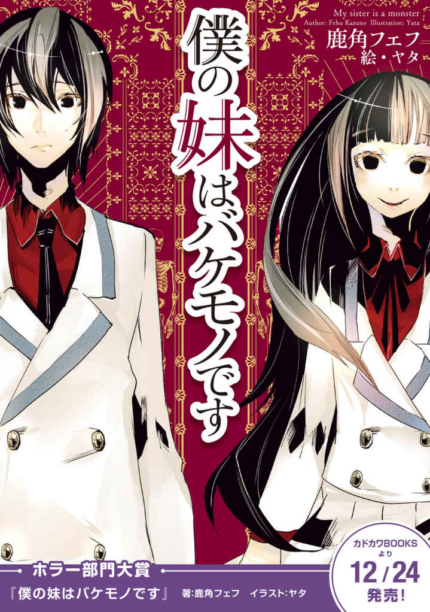
──Prologue──
もし、世界が枯れ果てるほどに祈り続ければ......。
〝あの美しい日々〟は、また帰ってくるのでしょうか？
「お兄ちゃん！ 起きて！ ねぇ、お兄ちゃんってば！」
............。
微睡みの中、ユサユサと身体を揺すられる心地よい感触によって意識が覚醒する。
鈴の音を思わせる愛らしい声は、記憶が正しければ僕の妹──梔 無 夢 衣 のものであるはずだ。
開け放たれたカーテンより入り込む朝日を鑑みるに、どうやら朝の弱い兄を甲斐甲斐しく起こしに来てくれたらしい。
何故か僕はその声にとても懐かしいものを感じた。
そのせいだろうか？ 珍しく少しだけ甘えてしまう。
「も、もう少しだけ......。夢衣」
「えーっ!? もう少しって、お兄ちゃんいつもそれじゃない！」
「うーん。あと５分だけ......」
「む～っ！ おーきーてー！」
先程から続く身体の揺れを心地よく感じながら睡魔との戦いを継続する。
だがそれも束の間の出来事だ。
少しだけ力を込めた、だがそれでも優しさの篭もったそれにようやく意識も起床に向かう。
しかし残念なことに生まれ持っての低血圧がたたってかなかなか身体は動かない。
昨日の晩に夜更かしなんてしているから、その度合いは最近でも最悪だ。
良くないなぁと、ぼんやりとした頭で思い起こす。
僕の妹である夢衣が毎朝わざわざ兄を起こしに来るような献身的な性格だとしても、何事にも限度というものはある。
おそらく、いつまでたっても布団でもぞもぞしながら起き上がらないダメな兄にへそを曲げるのも時間の問題だろう。
ならばここでバシッと起きて兄としての威厳を見せなければいけない。
彼女の兄──梔 無 暁 人 は立派で尊敬される人物なのだ。
でもなぁ、布団が暖かいんだよなぁ。
優しげな布団の温度に後ろ髪を引かれながら、もぞもぞと動く。
......思い出した。妹は怒らせるととても怖いんだ。
未だ動きが鈍い頭でその事実に思い至った僕は、彼女の機嫌がまだマシな内にと覚悟を決め、気合いを入れて布団を撥ね除ける。
瞬間、サァっと身体中を冷気が包み反射的に震える。
それは涼しさを通り越してうすら寒ささえ感じてしまうほどだ。
とてつもなく寒い。自らの行いを早速後悔させるには十分な状況だ。
もっとも、妹の機嫌を損ねなかったという点では正しい行いではあるが......。
「ううう......寒いなぁ。おはよう。夢衣」
「おはよう、ねぼすけお兄ちゃん。学校遅れちゃうところだったね」
腰に手を当てながら少し困った表情で微笑む夢衣。
朝っぱらから元気な我が妹に軽く手を上げ、おはようと挨拶を交わす。
僕の妹、梔無夢衣は高校一年生だ。
腰まで伸ばした黒髪に何処までも透き通るような瞳。
幼さを残した体軀は歳の割には貧相──小柄で、一つ下とは思えない程。
すでに二人が通う県立笹丘高校の制服に身を包み、ピンクのエプロンを身につけている。
どうやら朝の準備は万端で、いくら待っても起きてこない僕にしびれを切らしたらしい。
先程から夢衣は朝が弱い僕の性質に文句を言いつつも、だがまんざらでもなさそうにカーテンを開けてくれたり、跳ね除けて散らかった布団を軽く畳んでくれたりと世話を焼いてくれる。
「将来は良いお嫁さんになるなぁ」なんて場違いな感想を胸に抱きながら、僕は夢衣に急かされるようにベッドから起き上がった。
いつもの日常、平凡な一日の始まり。なんの変哲もない朝の一コマ......。
......ふと違和感を覚える。
「どうしたの？ お兄ちゃん？」
突然、夢衣の言葉が何か無機質で不気味な物に感じられてしまった。
異質な......まるで小さな羽虫が皮膚の下を這いずりまわる様な感覚だ。
もちろん目の前にいる妹にもおかしいところは無く、周りを見回しても違和感の正体など欠片も見当たらない。
だが何かを忘れている。そんな気がした。
何か重要で、大切で、悲しくて、怖くて、そして致命的なことを。
「朝ごはんできてるから早く着替えてね？ 私も一緒に食べるから、遅れちゃ嫌だよ」
ピッと人差し指を立てながらそう告げる夢衣に、僕は気もそぞろに答えた。
思考は先程から心を揺らす違和感に向けられている。
何を忘れているんだ？ 思いだせ。重要なことだったはずだ。
多分、夢衣に関する......。
気持ちの篭もってない返事に違和感を覚えたのだろうか？
妹は不思議そうにコテンと首を傾げた。
保護欲を誘う愛らしいその仕草に思わず先程までの疑問がどこかへ流れ落ちそうになる。
自然と視線は困惑する彼女の瞳へと移っていった。
綺麗な瞳だ。ガラス細工みたいで、吸い込まれそうに深い。
夢衣は少しだけ心配そうにパタパタと僕の目の前で手を振ってみせている。
その小動物めいた仕草に思わず笑みを返しそうになったその瞬間。
「あっ......」
──恐ろしいまでの悪 寒 が全身を舐 めた。
ああ、そうだ。なんでこんなことを忘れていたんだ......。
こんなこと、おかしいじゃないか。
悲鳴が漏れそうになる口を思わず手で覆い、目の前にある光景が間違いではないかと確認するように何度も目を瞬かせる。
だがその光景は消えることも変わることもない。だからこそ僕の思考は余計に混乱していく。
夢の狭間にいたとは言え、己が犯していた致命的な勘違いにまるで心臓を鷲摑みにされたような恐怖を感じてしまう。
鼓動が速くなり、浅い息が自然と漏れ出してきた。
ヒヤリとした汗が頰を伝わる。
先程までの朗らかな朝の一場面が急速にどこか遠い所へと消え去り、現在感じている恐怖と混乱こそが正しいものであると突きつけるかのように、あの日の出来事が目の前で幻となって現れる。
僕の表情は今強張っているのだろうか？ カチカチと歯が重なり合う音が聴こえるのは気づかず震えている証拠か......。
夢なら早く覚めて欲しい。
だけれどいつまでたっても消え去らないこの光景はきっと現実で、
だからこそ絶対にありえなかった。
だって、だって......。
僕の妹は、
あの愛らしい自慢の妹、夢衣は。
もうとっくの昔に死んで いるじゃないか。
「どうしたのお兄ちゃん？ そんな怖い顔して......」
──何か恐ろしいことでもあったの？
そう尋ねる夢衣の表情は、笑顔にもかかわらず得も知れぬ悍 ましさを孕 んでいた。
Beautiful Days I ─Hope─
......言葉が出ない。
何か言おうとする度に息が詰まり、代わりに乾いた呼気のみが吐き出される。
夢衣は怪訝そうに顔色を窺ってくるが、それがあまりにも在りし日の彼女を想起させ僕の心を恐怖へと誘う。
時間にして数十秒程度だったのだろう。
まるで永遠にも等しい時間をなんとか精神の平静に費やすと、極力目の前の妹に悟られぬよう恐る恐るその瞳を見つめ返す。
「いや、なんでもないよ。夢衣」
「.................. そっか。ならいいんだ、お兄ちゃん」
長い沈黙の後、何が嬉しいのかニコニコと屈託の無い笑顔を見せた夢衣は、その後朝に弱い僕の体質にひとしきり小言を告げる。
動揺を悟られぬ様になんとかその言葉に頷き、嫌々ながら形ばかりに反省する兄を演じてみせた。
すると彼女は満足したのか僕の動揺に気づく様子もなく軽快な足取りで「キッチンで待ってる」と言い残して階下へと去っていった。
......あれは、なんだ？ 彼女は、一体なんなんだ？
身体中から嫌な汗が噴き出し、形にならない支離滅裂な考えが次から次へと湧いては消えていく。
まるで自分が別の存在になったような感覚を覚えながら、確認の為に自分と在りし日の妹と寸分違わぬ〝何か〟についてしばし考えを巡らせる。
一年前......僕の妹、梔無夢衣は死んだ。
──交通事故だった。
色褪せた、だがはっきりと覚えているあの日の出来事。厳重に蓋をし、二度と出てこないようにと心の奥深くに封じ込めた記憶を必死に掘り起こす。
それはなんの変哲もない夏のある日のことだったと思う。
学校帰りに友人たちと一緒にゲームセンターに寄っていて、ついつい帰宅が遅れてしまったのが酷く印象に残っている。
帰宅時にいつもなら出迎えてくれる母が不在だったのが不思議で、本来なら明るく出迎えてくれるはずの妹もおらず静かな家がやけに不気味だったんだ。
二人は用事か何かで出かけているのだろう。
そう考えるのが一般的で、当時僕が下した判断も同じものだった。
事態がその様な軽い日常の小事ではないことに気がついたのはそれから十分程してからだ。
吞気に室内で寛ぐ僕を近所のおばさんが血相を変えて訪ねてきて、驚きのまま病院に到着した時には......。
全てが終わった後だった。
信号無視で交差点に突っ込んだ車が横断歩道を渡る妹に......。
内臓破裂による即死──別れを言う時間はおろか、妹は自分が死んだことすら理解できなかっただろう。
対面した夢衣は眠っているようで、まるでドラマの中のワンシーンみたいだと混乱する頭の中で幾度と無く繰り返していた。
葬式やその後の雑事は慌ただしくもつつがなく終わり、代わりに残ったのは笑顔を失った家族と途方もない空虚感だ。
......それが一年前、僕の、梔無暁人の人生に起きた出来事。
その後はありきたりだ。
両親は妹の死を忘れるかの様にそれまで以上に仕事に没頭するようになり、僕はあの日々を忘れることができず毎日を惰性で生きていた。
だから僕の妹、夢衣が起こしに来るなんて、目の前の彼女がまた僕に微笑みかけてくれるなんて、ありえないことだった......。
「なんで......。あっ！」
まとまらない考えの中、先程見た光景はやはり夢だったのではないだろうかと考え始めた時だ。
ふと視線が時計の方へと向き、慌てて時間を確認する。
夢衣......妹がキッチンに向かってから結構な時間がたっている。
階下で僕を待っているであろう彼女がしびれを切らすのも、そう時間のかかることでもない。
それに、単純に今の時間だと学校に遅れる可能性がある。
至って平凡な高校二年生である僕は、残念ながら今日も学校に行かなくてはならない。
本当に妹がもう一度現れたのなら学校に行っている余裕などないだろうが、だとしても僕に何かができるわけでもない。結局いつもと同じ行動を繰り返すのだとばかりに、機械を思わせる律儀さで慣れた朝の準備を始める。
......階下の妹は、学校に行くのだろうか？
死人を受け入れてくれる学校などあるのだろうか？
もしかしたら手続きとかが必要なのだろうか？
荒唐無稽な妄想は、まるで僕の動揺を表すかの様に次から次へと湧いてはどこかへと溢れ出ていく。
それらの幻を振り払うかのように勢い良くタンスを開け、さっと着替えを済まし、自室を出て明かりのついていない廊下を少し急ぎ気味に階段へと向かう。
時間がかかってしまったのだろう。途中不機嫌そうに僕を呼ぶ声が聞こえたが、返事をすることは出来なかった。
階段を目の前にし、そっと窺うように階下を眺める。
先に朝食の準備をしていると告げた妹が無言で待ち構えてやしないかとも思ったが、その様なことは無くただ無機質なフローリングの床が僕を見つめ返すだけだ。
トン、トン、トン──。
階段を下りる音が、耳の中で木 霊 する。
普段なら陽の光をめいっぱい取り込み、眩しいほどに早朝の爽快感を主張してくる自宅の一階が今日は異様に暗く感じられる。
──トン。
降り立った廊下はちょうどフロアの様な広めのスペースになっている。
向かって左側にトイレや浴室などのスペース。
右手にはリビングと夢衣がいるキッチン。
カチャカチャと朝食を準備しているであろう音と、妹の鼻歌が聞こえる。
そしてぐるりと回って玄関、手前は普段使わない和室だ。
......そういえば。
和室には、妹の仏壇があったはずだ。
脳裏をよぎる光景──毎朝手を合わせていたそれに、キッチンへと向かおうとしていた足は自然と止まる。
もし自分が間違っているのであったら、どんなによいことだろうか？
妹が正常で、自分が異常だったら......。
精神に問題の起きた自分が、元気な妹が死んでいると勝手に夢想していたら。
はたまた、自分の魂だけがどこか別の時間へと飛んで、妹が存在している世界線の自分へと宿ったのだったら......。
もしくは全てが働かない頭が引き起こした勘違いで、夢で見た妹の死を現実だと誤認しているのだとしたら......。
そうだったらどれだけ安心するか。
ありえない、現実と決して認めたくは無い出来事になんとか事態の辻褄を合わせようと、先程から様々な考えがぐるぐると頭の中を駆け巡る。
だが残念ながら、そのどれもが僕を安堵させるに足る説得力を持ってはいなかった。
気がつけばふらふらと、まるで誘蛾灯に誘われる蛾の様におぼつかない足取りで和室へと歩みを進めている。
襖を開ける音は静かで、幸いにも妹が気づく気配はない。
まるで恐竜から隠れる探検者の様に、ゾンビから隠れる生存者の様に、息を潜めながらゆっくりと室内へと滑り入る。
仏間はあまり使っていない為か、淀んだ空気と線香の香りが入り混じって独特な匂いを放っていた。静謐な、決して応える者がいない雰囲気が何故か今の僕に妙な安らぎを感じさせてくれる。
仏壇は固く閉ざされている。
それはまるで真実を確認することを拒むかのようだった。
しばらく逡巡する。
このまま何も気が付かないふりをして彼女と一緒にいれば平和に過ごせるのじゃないか？
良くない考えを振りほどく。僕は確認しなければならない。
この身に起こっていることを。何よりも妹の身に起こっていることを。
やがて意を決し、勢い良く仏壇の扉を開けて自らに起こった異様な事態の答えを求める。
視線が仏壇の縁へと移り、線香立て、ロウソクと中央へと移っていく。
──自分でも表情が歪んだのが分かった。
視界にそれ──梔無夢衣の写真が写り込んだ瞬間、胸中を満たしたのは不思議なことに安堵だったからだ。
仏壇の中央に置かれた一枚の写真立て。
切り取られた想い出の中で笑う妹は、確かに夢衣で、僕の......梔無暁人の大切な妹だった。
あの楽しかった日々を思い起こさせる屈託のない笑顔に胸がズキリと痛む。
僕と妹の夢衣はとても仲のよい兄妹だった。
両親が仕事の関係であまり家にいないこともあったのだろう。
お互い何かと協力し合うように育った兄妹は、普通のそれよりも数段結束が強くなってしまったらしい。
朝はもちろん一緒に通学、帰りだって用事がなければお互い待ち合わせて帰りがけに夕食の買い出し。
シスコンだの、ブラコンだの、場合によっては夫婦だなんて互いの友人にからかわれても、それがどうしたと言い返す位に仲の良い兄妹。
それが僕と夢衣の関係だった。
そこに恋愛感情は無かったが、間違いなく家族としての強い親愛はあった。
手が自然と仏壇に供えられた写真立てへと向かう。
失った何かに縋るかのように、まるで迷子の幼子が親を探すかのように。
笑ってしまうくらいに弱々しい動きで、僕の手は仏壇に置かれた夢衣の写真へと伸び......。
バンッ!!
「──っ!? 」
突如、勢い良く閉められた仏壇の扉に息を吞む。
どのような力を入れればこれほどの音が鳴るのだろうか？
扉へと伸びた手はもちろん僕のものではない。
細く、たおやかな、少し力を入れてしまえば折れてしまいそうな、ある種の儚ささえ感じるその腕の先......。
どのような意図があったのか、扉を閉めた夢衣は不気味なほどに無表情だった。
「お兄ちゃん。朝ごはん......冷めちゃうよ？」
「あ、ああ。ごめん。すぐに行くよ」
無機質な瞳は何も映していない。
一応形ばかりに僕を見ているが、見つめられているという感覚は一切無かった。
夢衣は僕を見つめながらも、僕を見ていない。
中身の存在しない視線の交差、永遠にも等しい時間は唐突に終わりを迎える。
どの様な心境の変化があったのか、彼女はかつての妹の様にニコリと微笑むと、そのまま踵を返して仏間から出ていった......。
.........
......
...
食卓は暗く、重い空気が流れている。
華やかに日常のあれこれを伝えるテレビリポーターの声も今の僕には一切届かず、どこか遠い場所でかき鳴らされている雑音とさえ錯覚してしまう。
朝食のメニューは至って普通だった。
焼きたてのパン。マーガリンとジャムはたっぷりと。
レタスとトマトのサラダ。ドレッシングはノンオイル。
野菜が入ったコンソメスープ。小さく切られた人参やキャベツがこれでもかと入っている。
そして僕の好み通り、半熟に仕上げられたハムエッグ。
どれもが夢衣が元気だった頃に良く食べた朝食で、健康を考えたバランスの良いものだ。
スープからは食欲を誘う香りが漂ってきており、ハムエッグやパン等も、今までのことを一瞬忘れさせてしまう程に胃袋を刺激してくる。
チラリと視線を夢衣に向けると彼女は一年前と同じ表情を浮かべ、両手で肘をつきながら僕が食事を始めるのを嬉しそうに眺めている。
夢衣はハムエッグが得意で、僕もそれがとても好きだった。
どの様にすればあれほどの味を出せるのか、結局僕にそれを理解することは終ぞ叶わなかった。
朝が弱い僕がそれでも毎日の起床を楽しみに出来たのも彼女が作る料理のおかげだろう。
そんな、二度と食べられないと思っていた妹の手作りの朝食。
懐かしさと、喜びがこみ上げてくる。
少々行儀悪いと感じつつも、フォークを乱暴にハムエッグへと突き立て、頰張るように口へと運ぶ。
視界には僕の行動に驚いたのか目を丸くする妹。
口の中には彼女の手料理。
きっと、何か不思議なことが起きて、全てが戻ってきたんだ。
もう原因なんて、なんでもいいじゃないか。
妹がいて、自分がいる。
それを成したのが神様か悪魔かは分からないが、そんなことはどうでもいい。
妹と過ごしたあの日々が戻ってくるのなら、
もう、なんだっていい......。
「............ 夢衣。ハムエッグが得意だったよな？」
「うん！ そうだよ。お兄ちゃん、いつも美味しい美味しいって言ってくれたよね」
静かに尋ねる僕に夢衣は元気良く答えた。
「確か、焼き方と調味料に違いがあるんだっけか？」
「そうなんだ。素材の味を活かす為に並々ならぬ苦労があるんだよ」
その言葉は僕が夢衣の料理を褒めるといつも返してきた言葉だ。
誇らしげに、そして嬉しげに。
彼女は毎回僕に自らが料理にどれだけ熱意をかけているのかを語っていた。
「......今日の出来栄えは何点？」
「う～ん。そうだね、90 点って所かな？ なかなかの出来だと思うよ！」
高得点だ。
だが彼女の言葉とは裏腹に、口の中のソレは一切の味が存在していない。
「なぁ......」
「ん？ なぁに、お兄ちゃん？」
まるで梔無夢衣という人間の皮だけをなぞったかのような出来事に、僕の心はどんどんと薄暗くなっていく。
ここに来てようやく僕はその事実をはっきりと認めることが出来た。
僕の妹は死んだんだ。もう、戻ってこない。
だから今目の前で起きている出来事は、何かの間違いなんだ。
認めるのは簡単で、だがその後に狂ってしまいそうなほどの恐怖が襲ってきた。
心の中で湧き上がった疑問が、もはやどうすることも出来ないほど肥大化していることを自覚する。
じゃあ目の前の彼女は一体何なんだ？
聞いてはならないという自分と、それでも真実を知りたいと願う自分が心の中で火花を散らすかのごとくせめぎ合い、やがて形だけ一緒の明るい朝の食卓に終わりを告げる。
「君は......誰なんだ？」
──彼女は、夢衣ではない。
告げた言葉に返事はなく、だが微かに見せた悲しげな彼女の表情が僕の心を痛いほどに苛む。
しかしそれでも問わなければならなかった。
彼女が何者なのか？ そして、なぜ自分の前に現れたのかを......。
「夢衣は一年前に......」
「......そうだね。死んじゃったね」
「──っ！」
あっけらかんとした物言いは絶句するに十分足るものだ。
何処までも澄んだ、ガラス細工を思わせる瞳には一切の感情が見えない。
微かな懐 疑 心と砂粒ほどの希望が一瞬にして吹き飛ばされた僕は、先程食べた朝食が喉元まで逆流してくるのを無理やり飲みこみ、叫ぶ。
「じゃあなんで!! 」
「私は夢衣だよ。お兄ちゃんの妹」
「僕の妹はもういない！」
「そうだね」
「夢衣は死んだんだ」
「そうだね」
「だから夢衣がここにいるのはありえないんだ」
「............ 」
何処までも吸い込まれそうな瞳にゴクリとつばを飲みこむ。
やがて先程の質問を重ねる。
気がつけば、恐怖は心を覆い尽くしてこの世から僕という存在を消し去ってしまうほどに肥大化していた。
「君は......なんなんだ？」
「............ 」
「............ 」
「ねぇ、お兄ちゃん......」
夢衣の声音は今までの彼女とは違ってどこか儚く、何より極寒の寂しさを僕に突きつけてくる。
「お兄ちゃんは、夢衣がいると迷惑かな？」
僕は答えない。否──夢衣の言葉に応えることが出来なかった。
何よりも夢衣の帰りを、彼女がいた日々の再来を僕自身が望んでいたから。
目の前に奇跡が転がっているのに、だがありえないという感情だけで降って湧いた幸運を蹴り飛ばそうとする愚行が、僕の心をどこまでも傷つけていく。
「少なくとも、夢衣はお兄ちゃんの為にやってきたんだよ。別に、悪さしようとか、お兄ちゃんを困らせようとか、そんなことは考えてない」
「じゃ、じゃあなんなんだよ!? 」
「大きな声出さないでお兄ちゃん。怖いよ......」
「あっ、ごめん。でも......」
「夢衣が何か？ ......夢衣はお兄ちゃんの妹だよ。それ以外ありえない」
「......でもっ!! 」
「お兄ちゃん。夢衣は、お家にいたらいけない子かな？」
「その聞き方は、ずるい......」
その言葉は何よりも僕の心に突き刺さった。
今まで一度たりとも兄妹で喧嘩などしたことがなかった。
目の前の彼女を妹と認めるのであれば、初めての兄妹喧嘩であったかもしれない。
悲しげに目を伏せる夢衣の表情に罪悪感をかきむしられた僕は、心のどこかですでに諦めかけていた。
「ごめんねお兄ちゃん。でも聞いておきたかったんだ。もしお兄ちゃんに迷惑がかかるなら、夢衣はどこかに行くよ......」
「そんなことはない！ 迷惑なんかじゃ、ない！」
つまり。
目の前にいる存在を妹であると認めてやれば、
また〝あの美しい日々〟が返ってくるのではないかと。
「夢衣はここにいていいんだ。ここが、僕の妹の帰る場所だ」
「ありがとう......」
瞳に薄っすらと涙を浮かべ、儚く笑う彼女は確かに夢衣と瓜二つだった。
結局、僕はこの疑問に見てみない振りをすることにした。
これ以上何か言葉を重ねて、彼女が本当にどこかへ行ってしまうことに恐怖を感じたからだ。
もう一度妹と別れるなんて、あの孤独な日々を繰り返すなんて。
考えることすら恐ろしかった。
だから......これでこの話は終わりにしようと思う。
「なぁ夢衣」
「なぁに？ お兄ちゃん」
最後に一度だけ質問をし、全ての希望を捨て去ることで......。
「その、き、奇跡が起きたのかな？」
「奇跡？」
「そ、そうだよ。何か凄い奇跡が起きて夢衣が生き返ったんだ」
「お兄ちゃん......」
「あ、あのさ、そうだったら」
「何言ってるの？ 死んだ人間が生き返るわけ無いじゃない」
ああ、そうだよな。
聞きたかったはずの言葉は、何処までも暗い絶望を突きつけるだけだ。
僕の妹は死んだ。
もう二度と彼女は戻ってこない。
それだけが、僕に許された現実だった。
Beautiful Days II ─Puzzle─
心の整理と気持ちの持ち方に関しては個々人の内面に関する問題であり、如何様にも都合をつけることができる。
だが果たして自分以外の世界に関してはどうなのか？
現在、僕の懸念はもっぱらそれだった。
「じゃあ行こうか、お兄ちゃん」
「ああ、そうだな......」
制服姿の夢衣は、かつて僕と一緒に登校していた頃と寸分違わぬものだった。
久方ぶりに見たブレザー姿の妹は太陽の光を受けてまるで輝いているようで、身内びいきながらも相当に美人であると断言できる。
さぞかし学校ではモテるだろう。事実人気はあった。
それ故に彼女を知っている人間も多い。
だからこそ問題だった。
死んだはずの人間がある日突然登校してくるのだ。
友人知人の驚きは如何程ばかりか？
よしんば彼女が人気者でなかったとしても知人ぐらいはいる。騒動間違いなしだろう。
僕の懸念は間違っていないはずだ。
ただ目の前で靴入れから学校指定の靴を取り出す妹が同じ感覚を共有しているかはまた別の問題だった。
「なぁ、夢衣」
「なーにー？」
「大丈夫なのか？」
「何が？」
チリ一つ、ホコリ一つ無い靴を履き、トントンとつま先で位置を合わせながら彼女はふわりとした声で僕の言葉に相槌を打つ。
気のせいか幾分和らいだ彼女の言葉に先程までの混乱した気持ちが溶けていく。
この状況だけを切り取れば、仲の良い兄妹が交わす朝のやり取りと評して間違いないだろう。
だが僕の妹は死んでいる。
それは間違いようのない事実だ。
「いやさ、皆の前に現れたら、その、なんていうか」
「驚かれる？」
「間違いなく。僕もびっくりした」
「ふふふ、どうかな？ 意外となんとかなるかもしれないよ？」
「どういう意味？」
「さぁ、結果は見てのお楽しみ」
片目をつむって人差し指を口元に近づける夢衣。
蠱 惑 的な仕草だが本人の容姿が幼いせいでいささか魅力が足りない。
けれどもその言葉は十分に僕を揺さぶる。
明らかにおかしいだろ？
クスクスと笑う夢衣を訝しげに眺めながら形ばかり頷いてみせる。
なんとかなるとは彼女の言葉だが、実際なんとかなるとは到底思えない。
とはいえ僕自身この問題を解決する術を持ち合わせていないのでどうすることもできない。
目の前で用意を続ける夢衣を眺め、僕は流されるままその状況に身を任せた。
.........
......
...
住宅街を歩く二人に言葉はない。
実際は幾つかの会話があるのだが、なかなか続かない。
僕はもちろん、夢衣も言葉を探しているようだった。
まるで初めて帰宅を共にする男女の様にぎこちない距離感に居心地の悪さを感じていた僕だったが、それを上回る問題が存在することに気が付き顔面を蒼白にする。
そう......ついに棚上げしていた問題のツケを払う時が来てしまった。
「あっ！ 暁 人 くーん！」
「叶 ちゃん......」
通学に利用するバス停に到着した際、僕に声をかけてきたのはおっとりとした雰囲気を感じさせる呼び声だった。
──夢 丘 叶 。
目線の先でニコニコと笑みを浮かべながら手を振る彼女は僕の幼馴染みで、同じ高校に通う同級生だ。
肩まで伸びるウェーブのかかった髪。歳の割にはやや胸元の主張が過ぎる体軀。
少し気の抜けた所があるが、その性格がどうにも保護欲を誘う。
同じ笹丘高校の制服に身を包み、だが清楚さを感じさせる夢衣とは違って温和な雰囲気を持つ彼女とは幼少の頃からの付き合いだ。
「暁人くん」なんて可愛らしい呼び方をされるのも小さい頃の癖が抜けないからだったりする。
僕としては高校生にもなってそんな呼び方をされるのは恥ずかしいので正直なところやめて欲しいが、僕も彼女を「叶ちゃん」と呼ぶのでまぁおあいこなのだろう。
もちろん僕も夢衣も、叶ちゃんをよく知っている。
逆もまた然り、だ。
彼女はパタパタと手を振りながら、この寒空を温めるような笑顔を振りまいている。
だがふと夢衣に視線が移り、その表情がキョトンとしたものに変わった。
何か言わなければと思うが突然の状況に混乱して言葉が見つからない。
気がつけば僕は何も出来ぬままただ歩みを進め、彼女の目の前に来てしまう。
何も出来ない情けない兄に代わって口を開いたのは夢衣だった。
「おはよう。叶 さん」
「え？ 夢 衣 ちゃん......？」
叶ちゃんの瞳は驚愕に包まれている。
目を少しばかり大きく開き、手のひらを口元に持ってくる仕草は誰が見ても驚きのそれであると判断するに間違いはないだろう。
「いや......叶ちゃん、これは......その」
なんて言う？
凄く似ている人？
実は双子だったとか？
それとも全部言ってしまうか？
普段使わない頭を高速回転させる。
僕がどこぞの名探偵や主人公であれば気の利いたセリフでも言えるのだろうが、あいにくと何の変哲もない高校生だ。
この状況を華麗に突破する話術もカリスマも持ち合わせていない。
「わぁ！ 久しぶりだね夢衣ちゃん！」
「うふふ、くすぐったいよ叶さん」
「......え？」
混乱の中、僕の目の前で繰り広げられた光景はありえないものだった。
叶ちゃんの言葉は僕の理解をゆうに超えていた。
彼女だって夢衣が死んだことは知っているはずだ。
誰よりも妹の葬式で泣き叫んでいた彼女だからこそ、こんな頓珍漢な対応をするはずもない。
何かが起こっている。そしてそれはまだ終わっていない。
僕の知らないところで、まるで僕の混乱をあざ笑うかのように奇異な出来事が進行している。
不意に先程夢衣が告げた言葉が急に脳裏へと浮上してきた。
意外となんとかなる。
妹が見せる余裕がこの出来事を指しているのだとしたら、彼女は何を知っているのだろうか。
それとも、夢衣が何かをしたのだろうか？
答えは一向に出ず、代わりに良くない考えばかりが溢れてくる。
もし叶ちゃんまでも何らかの異常に巻き込まれているのだとしたら。
焦燥感は止めどなく押し寄せ、滑稽な程にその場で呆然と立ち尽くしてしまう。
「もう、今まで何してたの？ 最近あんまり会ってなかったから寂しかったよ。いつもは暁人くんと一緒なのにどうしていたの？」
「うん。ちょっと学校の用事で別々にね。それにお兄ちゃんにも妹離れしてもらわないとダメだから」
「えへへ。そうなんだ。なんだかおませさんだね夢衣ちゃん」
「夢衣はできるオンナですから」
妹と叶ちゃんは至って普通に会話を続けている。
夢衣はあの日死んだ。それは僕らの中で絶対不変の絶望だったはずだ。
その事実が、彼女たちの中では数日間だけ会えなかった程度の話に置き換わっているらしい。
だが僕が朝に経験した出来事、そしてなにより今朝夢衣が語った言葉。
それがこの状況こそが真に異常であることを如実に物語っていた。
「あの......叶ちゃん？」
「おおっと。ごめんごめん暁人くん。夢衣ちゃん取っちゃったら怖いお兄ちゃんに怒られるもんね。でも夢衣ちゃんは私のものだー！」
「あーれー」
「いや、そうじゃなくて......」
声をかけようとした。
だが叶ちゃんは久方ぶりにあった夢衣との会話を楽しんでいるのか、二人でぎゅーっと抱き合って一向に話を聞いてくれない。
なんだか置いてけぼりにされたようで少々不満だが、女の子同士の会話に無理やり入って良いことなど一つもないことは十分に承知している。よって会話の隙を見て控えめに尋ねる。
「久しぶりって、夢衣は......」
「ん？ 一週間ぶり位かな？ 久しぶりであってるよね。寂しかったよ～」
「夢衣もとっても寂しかったよ、叶さん」
「あわわ......お姉ちゃんって呼んでもいいんだよ？」
「叶おねーちゃん」
「うちの子にしよう......」
「ふふふっ」
「叶ちゃん、ちょっと聞きたいことがあるんだけど」
「ちょっと待って、今幸せをたんのーしてるのだ」
「叶ちゃん！」
いい加減に夢衣から離れない幼馴染みに僕の苛立ちも限界を超える。
もしかして彼女まで変わってしまっていたらどうしようか？ という恐怖心もあったのかもしれない。
普段ならもう少し距離感に配慮するのだが、混乱と懐疑心に苛まれた僕は思わず叶ちゃんの両肩に手を置き僕の方へと強引に振り向かせる。
「わっ!? なっ、なになに？ 顔が近いよ暁人くん」
「お兄ちゃんってば大胆だね。叶さん顔真っ赤だよ？」
クスクスと夢衣に茶化されて初めて自分の状況に気がつく。
幼馴染みとは言え、この状況は非常に不味い。
いや別に不味くはないのかもしれないが、叶ちゃんが照れくさそうに上目遣いでこちらを窺っているのが少しばかり僕の心をくすぐってしまう。
気心知れた相手だと距離感を測りそこねてしまったのが良くなかった。
相手は女の子だ。僕は何を大胆な行動にでているのだろうか。
特に先程からニヤニヤと僕の行動をからかって来る妹がいるからその動揺はひとしおだった。
どうする？ ヤバいぞ？ この空気は良くない。心なしか夢衣からの視線も痛くなってくる。
結論として、僕はごく自然に叶ちゃんの両肩から手を離し、さも何もありませんでしたよと言った風を装って会話を続けていくことにした。
手を離した瞬間、叶ちゃんが少しだけ不満そうに見えたがきっと気のせいだろう。
そのことを確認する気も起きない。
僕は卑怯な人間なのだ。
「な、何かおかしいと感じないかい叶ちゃん？」
「な、何がかな、暁人くん？」
会話がぎこちない。
なんだこれは？ ラブコメか？
僕はいつから物語の主人公になったのだろうか？ だとしたらもっとスムーズに女性の扱いができるようにして欲しかった。少なくとも幼馴染みの両肩に手を置いた位で動揺しない程度には。
ただ言葉を重ねるうちに心の揺らぎも収まってくる。
「夢衣について、その......なんでもいいんだけど」
「うーん？ 何かおかしいことでもあるの、夢衣ちゃん？」
「ふふふ。あるかもしれないし、無いかもしれないよ叶さん」
「むー？ よくわかりませんでした！ ということで何もおかしいことはないよ暁人くん」
「そんな......」
叶ちゃんは少しだけ困った表情で僕にはっきりと告げた。
おかしい。なぜ叶ちゃんはこの状況を自然に受け入れているのだろうか？
だが一つ分かったことがある。
彼女は僕の知っている夢丘叶だろうということだ。
小さい頃から彼女とは同じ時間を過ごしている。
今は少し離れたところに引っ越してしまっているが、昔は彼女と家が両隣だった。
隣同士、年齢も一緒。
お互いの家族が仲良くなるのも時間の問題で、僕の両親が多忙なこともあってか叶ちゃんの両親にはとてもお世話になった経緯がある。
当然叶ちゃんとは切っても切れない関係で、夢衣と同じくらいに付き合いは長かった。
だからこそ、違和感があれば気がつくほどに彼女のことを見ている自信はあった。
そう、夢衣の様に......。
「変な暁人くん。どうしちゃったんだろうね夢 衣 ちゃん？」
「きっとお兄ちゃんにもいろいろと悩み事があるんだよ」
悩みの元凶である夢衣はあっけらかんとしたものだ。
叶ちゃんも妹の言葉に同意らしく、まるで僕がおかしいとばかりに心配げな視線を向けてきた。
違うと大声で叫びたかったが、そんなことをしても彼女を不安がらせるだけなのはわかりきっている。
結局、僕が出来たことと言えば二人に対して曖昧な笑みを浮かべるだけだ。
「うーん？ あんまり良くわからないけど早く悩みが解決するといいね。──あっ、バス来たよ」
クスクスと楽しそうに笑う妹を注意するか、それともさらに叶ちゃんに質問してみるか、僕の選択はバスの到着というイベントによって強制的に終了させられる。
「行こう、お兄ちゃん」
「ごー！ ごー！ 暁人くん！ 乗り遅れちゃうよ！」
「あ、ああ。今行くよ」
もしかしたらこのバスに乗っている人々も、すでに異常な事態に飲みこまれているのではないだろうか？
そんな不気味な予感を抱きながら、僕は見た目だけは変わらないバスに乗り込んだ。
◆
結論から言おう。
僕の日常は何の変哲もなく平穏で。何の変哲もなく異常だった。
結局あれほどビクビクと怯えていた学校生活も、何の問題もなく過ごせていた。過ごせてしまっていた。
夢衣は当たり前に登校して、当たり前に授業を受け、当たり前にクラスメイトと過ごしている。
まるであの日々が帰ってきたかの様に、そこには当たり前が続いていた。
当たり前の様に休み時間に遊びに来るのは少し控えて欲しかったが......。
ともあれ、正直なところ夢衣に対して完全に割りきれてはいない。
夢衣は何処までいっても僕の妹で、ありとあらゆる所が記憶の中の彼女と寸分の違いもない。
だが根本的なところで違うのだと本能が根拠の無い訴えを繰り返している。
だがそれも最近では薄れてきている。
だからどうしたというのだ。
彼女は夢衣だ。僕の妹だ。
彼女がなんであれ、僕がそうであると認める限り、彼女は間違いなく僕の妹だ。
異常な事態は僕の心を確実に蝕んでいるのだろう。
けど、けれども。
今の僕は、本当に毎日が充実していた。
「お兄ちゃん遅いよー！ 遅刻しちゃう！」
「わわっ！ ちょ、ちょっと待って夢衣。すぐ、すぐ用意するからさ。戸締まりとかしっかりしないと危ないだろ？」
「それはそうだけど、じゃあ毎日毎日あんなに遅くまで起きてないでよね。そうすればもっと朝早く起きてゆっくり過ごすことが出来るんだから」
「いやぁ。善処はしようと思ってるんだけどなー、ちょっとゲームが盛り上がって」
「もう、いつもそればっかり！ ゲーム禁止にするよ!? 叶さんも待ってるんだし、しっかりしてください！」
「はいはい、分かりましたー」
「はいは一回で結構です！」
まるで母親のような言い草だ。夢衣は僕のお母さんか？
いや、前から彼女はこうだった。
世話焼きで甘えん坊で、元気いっぱいで。
あの頃と一緒の彼女に次第に僕の心も囚われていく。
今体験しているこの世界こそが真実で、あの絶望に満ちた日々こそが幻だったと勘違いさえしてしまいそうになる。
暗く閉ざされていた僕の人生に、ようやくまた明るい日差しが差し込んできたかのようだ。
自然と沸き起こる温かな気持ちと共に、今日も精一杯生きようと決意する。
「やっほー暁人くん！」
「ああ、おはよう、叶ちゃん」
「おはよう、叶さん」
僕らの朝は決まって三人で始まる。
夢衣と一緒にバス停で叶ちゃんと待ち合わせ。
そうして日常のくだらない話をあれやこれやとして、気がつけば学校についている。
ありきたりで何の変化もない日常。
だがそれが本当に尊いものだったと、ようやく気がつくことができた。
これが、これこそが僕が望んだ美しい日々だ。
「でも良かったよ。あの日から暁人くんずっとふさぎ込んでいたでしょ？ 私も励ましたかったんだけど、かける言葉が見つからなくてさ......」
「............ 」
「それに、殺人鬼の話題で持ちきりだったでしょ？ 少しでも明るい話があればなぁっと思ってたんだ。だから、前みたいにこうやって三人仲良く出来て、私すごく、すごーく嬉しいんだ」
「ああ、そうだな。本当に」
そうだ。前みたいに三人で仲良く出来て嬉しいんだ。
「──あれ？ 暁人くんはなんで今まで落ち込んでいたんだっけ？」
「えっと、なんでだっけかな？」
「むーん？」
けれども不意の言葉は見たくもない現実を目の前に突きつけてくる。
忘れていた事実がすぐそこに鎮座していた。
「気のせいじゃない、叶さん」
「気のせいかなー」
「そう......気のせい、だよ」
「なら仕方ないね！」
「そうだね、仕方ないね。どうしようもないもんね」
「ねー」
「ねー」
現実は書き換えられている。それをやったのはおそらく──いや、間違いなく夢衣だ。
とは言え......。
「まぁ今が楽しいのなら、それでいいんじゃないかな？」
今の僕にとってそれが、それだけが大切だった。
「そうだね暁人くん！ ねっ、夢衣ちゃん」
「うんっ！」
元気よく返事をする妹。
この時の笑顔だけは、死んでしまったはずの夢衣そのものだった。
あの全てが輝いていた日々、そのものだった。
「......どうしたの暁人くん？ 夢衣ちゃんのことジーっと見ちゃって」
「夢衣に何かお話でもあるの？ お兄ちゃん」
「ん？ ああ、なんでもないんだ」
流石に妹の笑顔に見とれていたなんてバレたらことだ。
大変面倒なことになるだろう。
誤魔化すかのように話題を探す。ふと先程の会話でちょうど良さそうな題材が転がっていた。
毎朝ニュースは欠かさず見ているが、そんな報道もなかった。個人的に興味もあるうってつけの話題だ。
「そういえば、さっき言ってた殺人鬼......？ それって何？」
「うん。夢衣も初めて聞くね。最近そんな事件なんてあったかな？ お兄ちゃん覚えてる？」
夢衣の投げかけに軽く肩をすくめてみせる。
殺人鬼か。物騒だなぁ。
けど記憶に無い。
「そんなことあったっけ？ 至って平和な気がするけど」
「大きな事件も何も無いのがこの街の利点だよねー」
ウンウンと兄妹揃って頷き、同意を求めるように叶ちゃんへと視線を向ける。
「ええ!? 二人共何言ってるの？ 朝から凄い話題になってたじゃない！」
だが叶ちゃんの驚きに一気に冷水を浴びせられた気持ちになる。
その表情は呆れというよりも、怯えに近いものだった。
彼女の眉尻は下がり、「どうして知らないの？」とばかりに困惑の視線を向けてくる。
だが僕だって叶ちゃんと同じ気持ちだ。
そんな話、一度も聞いたことがない。僕にとっては突然起こった出来事に等しい。
そう、夢衣が現れたあの日の様に......。
ゾクリと、背筋を嫌な何かが這う感触に襲われた。
その事実に気づいた瞬間。
僕はまだ誰も知らない恐ろしい出来事が待ち受けることを確信し、心の奥底から恐怖を感じてしまった。
Beautiful Days III ─Fear─
通勤通学時間のせいか座る場所が全部埋まっているバスの車内。
今日も立ちっぱなしかと諦めの気持ちで見回しつり革を持つ。
運転が荒いのか普段よりも幾分多めに揺れ動く中で体勢をなんとか維持しながら、先程打ち切られた話題を思い返す。
僕が知らない殺人鬼の話題。
今日初めて聞いた。誰もが知っているはずの殺人事件。
......断言しよう。そんな事件は起こっていない。
叶ちゃんは物事を大げさに言うタイプではないし、ましてや噓を吐くような人間でもない。
それは小さい頃からの付き合いで断言できる。
その叶ちゃんがここまで言うのだ、それなりに大きな事件なのだろう。
ならば僕が知っているのは必然だ。知らないことなんてありえないと言い切れる。一体どういうことだろうか？
不安げな彼女の表情を思い出しながら、バスに乗る前に聞いた言葉を頭の中で反芻する──。
いや待て、おかしいぞ。
叶ちゃんは最初確かにこう言った、「殺人鬼の話題で持ちきり」と。
表現がおかしくないだろうか？
朝のニュースで初めて殺人事件が報道されたのなら、話題に出来るのはせいぜい家族の間だけだ。
持ちきりだなんて表現は少々おかしいように思える。
それじゃあまるで数日前から起こって、友人や知人の間で話題になっているかのようだ。
僕の気のせいだろうか？ おかしいおかしいと考えるから、なんの変哲もない小さな出来事にさえ、違和感を覚えてしまうのだろうか？
だが僕の意識とは別の、本能的な部分が警鐘を鳴らし、まるで無理やり新しい事実をねじ込みチグハグになってしまったかの様な錯覚を感じさせている。
......何かが起こっている。
それもただそこにあるだけではない。
確かにそれは近づいてきているのだ。僕らに決して気づかれないように、ゆっくりと。
いてもたってもいられず楽しげに何やら女の子らしい話に盛り上がる夢衣と叶ちゃんに割って入り、自らの疑念に答えを求める。
「ごめん叶ちゃん。さっきの話だけどさ、話題になっている殺人事件の──」
突然、妹に袖を引っ張られ、「周りを見て、お兄ちゃん」と小声で注意を受けた。
何事かと顔を上げ車内を見渡すと、バスの乗客全員から刺すような視線を受けていることに気がつく。
まるで朝から不謹慎な話をするなと言わんばかりの、鋭いものだ。
......殺人鬼の話とは、それほどまでのことなのだろうか？
話をすること自体が禁忌であると言わんばかりの態度。
当の叶ちゃんも「暁人くん、もっと楽しいお話がしたいかな」と僕の問いを打ち切る始末だ。
......残念ながら、これ以上は無理に聞くことは出来ないだろう。
叶ちゃんの態度は拒絶的で、この話に関してはこれ以上語るつもりはないという強い意志が感じられる。無理強いをして聞き出すのも僕の本意ではない。
とは言え、少なくとも彼女やバスの乗客の中では殺人鬼の事件はごく当たり前のこととして存在しているという事実だけは判明した。
果たしてそれは何を意味するのだろうか？
彼女たちが間違っているのか？ それとも僕が間違っているのか。
ただ夢衣に関しては、小声で確認して僕と一緒でまったく心当たりがないことが判明した。
結局この件については具体的な話が出来ないまま僕らは学校へと到着し、各々の教室へと向かうことになる。
......気がつけばちょうど教室の目の前で扉に手をかけているところだった。
「おはようございます」
教室のクラスメイトはまばらだった。担任の田 淵 先生と何人かの生徒が見受けられるだけだ。
僕の登校時間が早いというのもあるのだろう。
今までなら遅刻ギリギリのタイミングだったのだが、そこはお節介な妹と幼馴染みによる無言の圧力が僕をこの様な早い到着にしている。
「はい、おはよーさん梔無。ちょうどいいや、プリント分けるの手伝ってくれ。お、好 田 もいるじゃないか、お前も手伝え。教師命令だ」
「えー！ 面倒ー」
不幸にも先生に目をつけられてしまった女生徒。ぶーぶーと文句を言い出す好田さんと一緒に渡されたプリントを配る。
どうやら本日の配布物はいつもにも増して多いらしく、クラスの最前列に人数分配るとしても手伝いが必要なものだった。
「分かりました。なんだか今日はやけに枚数が多いですね」
「ったく、面倒になるよなー。ほら、お前も梔無を見習ってさっさとプリント整理しろ」
「はいはーい、わーかーりーまーしーたー」
「返事ははっきりとしろ！」
「『不審者に関するお知らせ』......？」
ふと手が止まる。
僕が先生より手渡さたプリントの内容が否応なしに目に入ってきた。
上等な用紙にカラー印刷されたそれは警察から発行されたものらしく、この近隣で発生している不審者とそれにまつわる事件に関する注意書きだった。
だが僕が気になったのはその内容だ。
やけに表現が刺々しいのだ。
さらには印字は赤と黄色を多用し、いかにも警告を与えようとしている。
これはなんだ？
先程叶ちゃんと交わしたやり取りが思い起こされる。
誰もが知っている殺人鬼の話題。
それがこのプリントの正体なのだろうか？
僕と妹が知らない、殺人鬼の......。
「なにしてるんだ梔無？ 早く配ってくれ......あー、例のあれか。ったく、いつになったら解決するのやら。俺も見回りが多くて敵わん」
「先生、その、殺人鬼ってなんですか？」
思い切って尋ねてみる。
いつの間にか当然の様に語られている殺人事件。
何故僕と妹だけが知らないのか？ それはどの様なものなのか。
こんな大層なプリントが配られるほどだ。先生なら少しは詳しい話を知っているだろう。
「知らん知らん、俺は何も知らん。どうせただの頭のおかしい奴だ。いずれ警察が捕まえるだろうから下手に騒がずに集団での下校を心がけろよ。あと放課後もなるべく外に出ないようにしろ」
「でもでも先生？ 殺人鬼『───』の活動範囲はこの学校を中心に行われているって話だよ！ もしかしたらこの学校の生徒だったりして！」
今なんて言った？ よく聞こえなかった。
好田さんの言葉に一瞬ノイズが走った。
それはまるで初めからそこに無かったかのような、それとも設定が追いつかずに空白だけを挿入したかの様な、そんな歪な違和感だ。
慌てて詳しい内容を聞き返そうとするが、彼女のゴシップ好きな性格がどうやら先生の怒りの火に薪をくべてしまったらしい。
何やら不穏な空気を感じてチラリと田淵先生を確認すると、やはり大層お怒りであった。
「憶測でものを語るんじゃない！ それにだ、そのそれ、変な呼び方もやめろ。そういった呼び方をして持ち上げるから犯人の行動もエスカレートするんだ。お前らの何気ない行動が被害者を増やすんだぞ！」
「はーい、わっかりましたー。終わりっと、じゃあね梔無くーん」
「──ちっ、全然堪えてないな」
懲りる様子もなく、るんるんとスキップで教室から出ていく好田さんを見送りながら、先生へと同情の視線を向ける。
プリントの表現は酷く切羽詰まったものだった。
それが事実であるならば、彼女の様な興味本位で噂に首を突っ込む態度は許せないだろう。
何かあってからでは遅い。
元気が有り余る学生を相手にしないといけない教師という職業は想像以上に大変なものだと思われた。
もっとも、あんな態度を取れるのは彼女くらいのものだろうという安心感もあったが。
「......先生」
「わかっていると思うが梔無も学校が終わったらすぐ帰るんだぞ。確か妹がいたよな？ なら一緒に帰るように。何かあってからじゃあ遅いからな」
「それは、もちろん」
「ならよし、ほら、ホームルーム始まるぞ！」
出来ればもう少し詳しい話を聞いてみたかったがそれも叶わない。
見た目にもイライラしているであろう先生にこれ以上あれやこれやと質問を重ねるほど僕は無謀でも勇敢でもない。
ただ叶ちゃんより伝えられた話は真実で、それどころかバスの乗客同様に僕と妹以外全員が当然知っているという事実を摑むことが出来た。
僕と夢衣だけが知らない。
ある日突然現れた現象。
それが何を意味するのか、残念ながら今の僕には判断がつかなかった。
.........
......
...
『そういう訳で夢衣も友達に聞いたけど、皆知ってる話だって』
『僕もそうだった。本当に夢衣は知らなかったんだよな？』
『当たり前じゃない。ニュースとかでもやってなかったでしょ？』
『そうだよな。とりあえず昼ごはん食べるからまたあとでな』
『はぁい、夢衣もご飯にするね。たんのーあれー』
昼休み休憩。
45 分という短い時間に高校生の青春は全て詰まっている。
その貴重な時間を利用して夢衣と今朝から起こっている違和感について情報を交わす。
結果は芳しくない。
お互い得られる情報は似たようなもので、ただ自分たちだけが知らないという事実だけが改めて目の前に置かれた形だ。
......実は妹が犯人で僕に隠している。
その可能性も少しだけ考えた。
だがそれをする意味がないし、彼女がその様なことをする必要もない。
それにあの表情は本当に知らないといった様子だった。
妹のことは良く知っているつもりだ。
彼女が噓をついているのならば、その気配くらいは感じ取れると自負している。
よってこの線は無し。と思いたい。
そもそも、兄が妹を信じないでどうするのか？
袋小路に入った思考から気持ちを切り替える。
ピョコピョコと可愛らしく動く絵文字を眺めながら、軽く笑みを浮かべスマートフォンを閉じた。
とは言え疑念が拭えずヘドロのようにこびり付いたままだ。もちろん夢衣に関してではない。
僕が疑っているのはこの現象だ。
殺人鬼が現れ、いつの間にかそれが当然となっている。
僕の妹はある日突然現れ、いつの間にかそれが当然となっていた。
共通点を持つこの事実を放置すると、とてつもなく良くないことが起こる。
そんな確信めいた予感があった。
◆
「なぁ、熊 谷 。ちょっと聞きたいんだけど」
「んー？ なんだ神妙な面持ちで、ってちょっと待てよ。おーい高 市 。こっちこっち」
「ああ、高市。ちょうどいいや、ついでに聞きたい」
僕の昼食は大抵の場合仲の良い友人と一緒だ。
それが熊谷と高市。
おちゃらけた雰囲気の熊谷と、少々生真面目だが賢く頼りになる高市。
二人共この学校に入ってからの付き合いで、それなりに仲良くやっていると自負する相手だ。
彼らなら大丈夫だろう。
あまり昼食時にする話題ではないけど、それよりも殺人鬼について少しでも情報を収集することが今は必要だと思われた。
机を揃えてテーブルを作り、弁当の袋を広げながら相談事を打ち明ける。
「待て待て梔無、その前に重要なやり取りが残っている」
「なんだよ？」
「報酬についてだ。何事にも対価は必要。世の中は等価交換なんだぜ！」
「等価交換って言いたいだけじゃないのか？ それで、何が欲しい？」
「夢衣ちゃんのブロマイドで手を打とう」
初めて聞いた。夢衣はアイドルじゃないぞ？ そんなの手に入れてどうするんだよ。
「いや、なんだよそれ」
「なんだと！ あんな超絶可愛い妹がいて、その幸運を理解していないとは！」
「ちなみに梔無くん。あえて聞くけどその弁当は誰が作ったんだい？」
「夢衣......だけど」
件の弁当に目を向ける。
高校生男子らしく大きめの弁当にはこれでもかとご飯がギュウギュウに詰められており、それと同じくらい彩り鮮やかなおかずが入っている。
もちろん肉類だけでなく健康面を考えられたバランスの良いものだ。
僕個人としてはもっとこってりしたメニューにして欲しいが、それではダメだと絶対に意見を曲げてくれない。
何度も「夢衣は僕のお母さんか？」と言いそうになるが、それを口に出すと怒られるし好き嫌いをネタにちくちくとイジメられるので特に文句は言わない。美味しいし。
まぁ高市の鋭い指摘通り、妹の手作り弁当なわけだ。
「君はナチュラルに持てない男子に喧嘩を売る男だね。もげてしまえばいいよ」
「そうだ！ もげろ！ ついでに妹さんをください！」
「別に弁当くらいで......」
僕の妹が弁当を作ってくれるのは両親が不在という事情があるからだ。
妹の甲斐甲斐しい性格もあってのものだろう。
過去に自分でも挑戦しようと思ったことがあるが、一回目で禁止令が出された。
だから僕の弁当係は妹だ。文句を言われてもどうしようもない。
「ご飯にハートマークつけてもらってる奴が言うセリフじゃないな」
「わざわざこれをする為だけに桜そぼろを買ったらしい」
「健気！ なんて健気！ なんでこんな奴にあんな天使な妹がいるんだ？」
「普段の行いじゃないか？」
流石に恥ずかしいので話題に触れなかったハートマーク。でかでかと自分の存在を主張している。
夢衣が無駄にご機嫌な様子でハートマークを作る光景を思い浮かべながら、二人からの追及を誤魔化すため程よく味付けされたそぼろと一緒にご飯をかっ込む。
「それで、何の話を聞こうとしたんだい？ 恋話？ 好きな人でもできたかい？」
どうやら高市は僕の相談事を覚えてくれていたらしい。
熊谷とは違って高市はこういった時に配慮が行き届いているのが嬉しい。
もちろん熊谷の積極的で豪快な性格もとても好ましいが。
さて、しかしどう切り出したものか。
「いや、実は殺人鬼について聞きたいんだけど......」
「昼間っからとんでもない話題を出そうとする奴だなお前は」
僕もそう思う。
昼時に話題にするにはあまにも配慮が足りていない。
だが仲の良い友人同士、それも男同士だ。
この程度の話題は許してくれると嬉しい。というか僕が知りたいので是非教えてくれ。
「まぁまぁ、確かにどこもかしこもその話題。気にならない方が噓になるよね」
「けど俺は最高につまらん。ってかお前ちゃんと夢衣ちゃんの送り迎えしているだろうな？ 彼女がもし殺人鬼の餌食になるようなことがあれば人類の損失だ。ちなみにお前は死んでもいい人間」
「僕が死ぬくらいなら熊谷を生贄にするから安心しろ」
「お前に友情はないのかー!? 」
「友情は存在するが、常に妹の下位に位置しているな」
「こ、このシスコンめ......」
「流石学校でも上位を争う美少女の兄だね。頭のネジが外れているや」
僕のネジが外れているかどうかはおいておいて、二人ならそれなりに僕の疑問に答えてくれそうだ。
姿勢を少々正して真剣に聞く準備をする。
この現象が異常であるのならば、何らかのヒントがあるはずだ。
それを決して聞き漏らしてはならない。
「それで、殺人鬼の何が気になったんだ？」
「最近は特に代わり映えもないけどね......それでもこれだけ長い間捕まっていないから、被害者は結構増えているみたいだけど」
これだけ長い間......？
初っ端からおかしいぞ？ どういうことだ？
「その殺人鬼の話っていつからあったんだ？」
「は？ それまたどういう意味だ？ そんなのずっと前からに決まってるだろ？ 推理ごっこか？」
「いや、純粋に聞きたいだけだ。ちょっと気になったんだ。いつからなんだ。一週間位前からか？」
確か叶ちゃんは今朝凄く話題になっていたと言った。
だとしたら事件が起きたのは昨日、もしくは数日前だ。
だから「ずっと前から」なんて言葉が出てくるのはおかしい。それじゃあまるで昔から起こっているみたいじゃないか。
「なぁ、梔無。お前マジで言ってるのか？ なんだかおかしいぞ。本当に大丈夫か？」
「妹が可愛すぎて頭がおかしくなったんじゃないかな？」
「かー、なるほど分っかるわー」
「からかうなよ。真剣なんだ」
「だったら余計にヤバイと思うんだけど」
「いいから」
「もしかして、本気で言っているのかい？」
静かに頷く。
語気を少しだけ強めて問い詰めたのが功を奏したのか、二人もようやく僕の態度から真剣さを感じてくれたらしい。
「僕は本気だ。悪い、変だと思うけどまじめに答えてくれ」
二人は顔を見合わせる。
眉を顰めて、先程のからかいから一転して心配の表情でこちらへと視線を向けてくる。
突き刺さる同情めいたそれを鬱陶しく思いながら、僕は口を閉ざす。
「あのさ梔無、よく聞けよ？」
やがて重い沈黙の後、その言葉は語られる。
「殺人鬼が出始めたのって、一年も前なんだぜ......」
同情の視線は、今や困惑したものへと変わっていた。
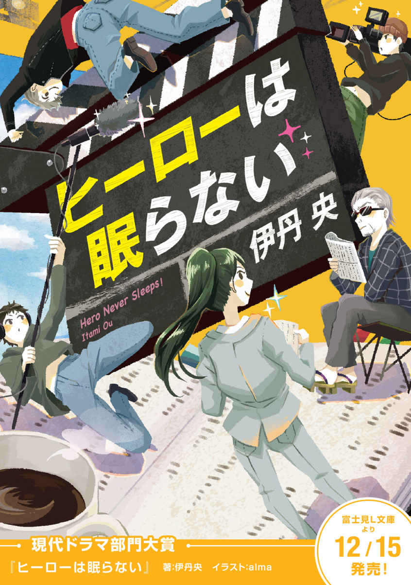
第一章 突然の辞令！ そして異動
１
──辞令は、突然やって来る。
ストローで、グラスの中の氷をかちゃかちゃ搔 き混ぜながら企画書に目を通していると、宮 地 麻 由 香 の携帯電話に着信があった。相手を見ると、志 村 隆 史 からだった。
一瞬無視しようかとも思ったが、結局電話に出ることにする。
「......はい、宮地です」
「お前いま、『ジャンヌ』にいるよな」せかせかとした口調で志村が言う。
「ジャンヌ」とは麻由香が今いる、社内二階の喫茶店の名称である。ここで仕事をすることは部の予定表ボードに記載しておいた。
「そうですけど」
「大至急撤収。こっちに戻ってこい。今すぐにだ」
今すぐ？ 急に何なんだろう。麻由香は困惑する。「どういうことですか？」
「電話では伝えきれないんだわ。とにかく大至急の用件。じゃあとで」
唐突に電話が切れる。麻由香は腑 に落ちなかったが、上司の命令には従おうと思った。
きっかり十分後に五階のフロアに戻ると、室内は閑散としていて部長の志村以外誰もいなかった。派遣の女の子も遅い昼食に出ているのか不在だった。もっともここに部の人間全員が集結することは皆無に近い。部員は皆漏れなく、現場に出たり、外回りをしていたり、もしくは日々の激務で溜 まった長期休暇と有給休暇を合わせて消化していたりする。
デスクでは志村隆史が、何やら書類の束とパソコンの画面を交互に確認していた。志村は麻由香の直属の上司である。「戻りました」と報告すると、黙ってこちらを見てきた。ある有名な演歌歌手に似ており、濃い顔だちが特徴的な男だった。
志村は書類をデスクに置いた。
「......突然のお知らせだが、今から石 原 専務のところに俺と一緒に行く。何も持っていかなくていいから」
「どうして急に？」
石原専務──雲の上の存在と言っても良いが、これまで入社以来、麻由香のキャリアとは無縁の人物だった。
ただし接点はある。入社試験の時だ。十年前の最終面接。面接官のなかのひとりに、石原もいた。
そう、あの時以来......。
麻由香の思いをぶった切るかのように、志村が手首をポキポキと鳴らす。「お前さんをご指名なんだ。さっき俺も急に聞かされた。九階に上がってこいって」
志村は人差し指で天井を示した。
この東京都中 央 区 銀 座 の一等地にある社屋の九階は、執行役員以上の役員の専用の部屋がずらりと設けられている。その更に上の十階にあるのが社長室と会長室のフロアだった。
九階まで行き、とある部屋の前まで来た。頑丈な扉を志村が丁寧にノックする。「どうぞ」と中から声が聞こえてきて、しばらくすると静かにドアが開いた。
白髪が少し目立つ瘠 せた長身の男がその声の主だった。石原康 はこちらまでやって来ると、「急な話で申し訳ないね」とにこやかに言う。そのまま十畳くらいの広さの部屋の中央にでんと置かれたソファに誘われる。
志村と麻由香はソファで縮こまって待機する。麻由香は密 かに石原を観察する。若々しい動きだ。確か年齢は五十手前。隣の志村は五十過ぎだから、志村よりも年齢は若い。社歴も短い。しかし肩書は石原の方が上だ。この若さで専務取締役執行役員という要職に就いている。
訳が分からないまま連れてこられたとはいえ、頭の片隅には何となくある予感があった。もしかして......。
女性派遣社員がお茶を人数分持ってきて、また静かに部屋を去って行った。志村が先陣を切って口をつけたので、麻由香も茶を吞 むことが出来た。ぬるかった。
目の前にどっこいしょ、と石原が腰を下ろす。
「宮地さんが入社したのは何年かな？」
麻由香は湯 吞 をテーブルに置いた。
「二〇〇三年です」
「女性に年齢のことを訊 くのは無粋だけど、四捨五入してもまだ年齢は三十か」
「そうですね」緊張が解け、口調が滑 らかになっていく。「入社して十年、ずっと映画部で」
「そうだね」にこやかに石原は頷 いた。隣の志村は黙ってただ会話の進行を見守っていた。
「最終面接のときはこちらも覚えてる。なにせこちらも、急病の役員の代わりにピンチヒッターで面接官をやらされたからね。実は内心焦っていたんだな。でもまあ懐かしい。あの時の女子大生が、いまは気鋭の女性プロデューサーとして東 光 を背負って立っている。次々とスマッシュヒットを飛ばしていて、実に頼もしいと陰ながら感心していた」
「ありがとうございます」
「で、今回急に呼び出して申し訳なかったんだが」石原が表情をぐっと引き締めた。「......大事な話なんだわ。人事の話」
「......はい」麻由香は喉 を鳴らす。
「宮地麻由香さん、正式な辞令は今月末に出るが、現在在籍している映画事業部から、テレビのほうに異動して来て貰 いたい」
「テレビ、ですか？」
思わず口にしたが、麻由香の心の中ではそりゃそうか、という思いであった。麻由香が在籍するこの東 光 映 画 株式会社──通称東光──は日本有数の映像制作会社である。映画、テレビを中心にさまざまなエンターテイメント作品を世に送り出している。刑事ドラマ、ヤクザ映画、特撮ヒーローもの、二時間サスペンス、時代劇、なんでもござれだ。アニメーション、バラエティ番組、人権映画だって作る。映像制作だけにとどまらず、ホテルや広告代理店やアミューズメント施設など映像制作以外の系列子会社も多数有している。
その中でも石原康は東光本社でテレビドラマ部門を統括する責任者だった。テレビドラマ制作を管 轄 する第一テレビ営業部と第二テレビ営業部を掌 握 する立場の男が、ずっと映画制作畑で育ってきた麻由香を呼び出したのだから、異動の話であったとしても不思議ではない。ただ、なぜ専務取締役がただの係長級プロデューサーでしかない麻由香をわざわざ呼び出したのかが不可解であるにせよ。
「既に若 松 常務より了承は頂いていて」若松常務とは麻由香が所属する映画制作部門を統括する責任者だった。「今回の異動は、特に僕が希望してお願いしたんだ。宮地さんを是非こちらに預からせて貰えないかと」
「それはまた光栄なお話ですが、どうしてわたしを？」
疑問を口にするが、石原は意味ありげに麻由香をニヤリと見るとゆるゆると首を振る。
「......今はまだ、言いたくないな」
「何故なんです？」
「どうしてもだ。その時が来たらいずれ話す。勿 体 ぶった言い方で申し訳ないがね」
少々納得はいかなかった。しかし当然その思いを口にはしない。ただ、請 われて新天地に異動するということがわかり、悪い気はしない。
東光は毎年六月が人事異動の時期である。五月上旬の今の時期に内示を出してきたのは何故かわからないが、麻由香としては当然この辞令を受け入れるしかなかった。今の部での仕事に愛着も思い入れも深く、また自分が現在手掛けているプロジェクトはどうなってしまうのかという不安もある。しかし、テレビという新天地でこれからどんな仕事に巡り合えるのだろうという多少の期待感も湧いてきた。
だが、つづく石原のこの言葉が、麻由香のハートをバラの棘 のようにチクリと刺すことになる。
「まあ少し早くにこの異動の話を伝えたのはね、とにかく早々に宮地さんに準備に入ってもらいたいからだね。一年続くシリーズは、いろいろと大変だもん。女性のチーフプロデュースってのはシリーズ始まって以来だからね、うん。一月始まり十二月終わりのドラマなんて、ＮＨＫの大 河 ドラマとうちのアレ くらいだからさ」
「......アレ ？」
心がざわっと騒いだ。隣の志村の様子を窺 うと、少し目を伏せている。
おそるおそる麻由香は訊 ねてみる。
「......戦軍 、ですか？」
「そう」鷹 揚 に石原は頷いた。「来年二〇一四年一月スタートの戦 軍 シリーズ第三十四作は宮地さんにプロデュースをして貰う。ちょうどあなたと同じ齢 くらいの長寿シリーズだ。ひとつ、よろしく頼むよ」
そう言って石原取締役は、麻由香に対して深々と頭を下げた。
多少動揺しつつ、再度隣の志村をとチラ見すると、「......引継ぎ関係はあとで打ち合わせしようか」とさらりと躱 された。
何度か瞬 きすると、知らず麻由香は部屋の窓に目を向けた。春の日差しが何故だか妙に瞼 に焼き付いた。
取締役室を出ると、志村と麻由香は二人、エレベーターまでの廊下をとぼとぼと歩いた。二人ほど役員とすれ違ったが、志村とは違い挨 拶 にも身が入らなかった。
「......戦軍はな、シンドいらしい」
志村は他 人 事のようにボソッと呟 いて、エレベーターのボタンを押した。「予算が少ない。決め事が多い。スポンサーがうるさい。タブーもある。自由が利かない。スタッフもうるさ型の職人気質 が揃っていてすこぶる面倒......そういう噂だ」
上司の言葉に麻由香の苛 々 が募る。
「今進行してる、企画ものはどうなるんですか。『サイコパス・ロマン８』は？」
「他の連中に引き継ぐしかないだろ」
「......わたしのライフワークなんですけど」
麻由香の声がだんだん小さくなった。
『サイコパス・ロマン』シリーズとは、麻由香が四年前からプロデュースを手掛ける単館上映スタイルの低予算ホラームービーシリーズである。毎回毎回謎の殺人鬼「ロマン」が次々に人間を殺害していく。意味なく、それも理不尽に嬲 り殺していく。そういったドライさが一部のホラー愛好者層には受けて、細々とスマッシュヒットを繰り返し、またＤＶＤソフト化した時の二次収益がこれまた好調で、これまで年二本ペースでなんとかシリーズを続けてこられた。今現在は第八弾の企画が進行中で、脚本家とアシスタントプロデューサーとで企画を立ち上げはじめたところだった。
「掛け持ちは無理だろ、戦軍とじゃあ。そもそも部署が違う」志村が冷たく言う。「ただ、アソシエイトプロデューサーとして名前が出るよう手配はしておく」
何か言い返そうとしたが、エレベーターが到着したので二人で乗り込む。「ジャンヌ」に行こう、と志村が言ったので、そのまま二階に行った。喫茶店は先程より閑散としており、二人でそのままケーキと飲み物を注文すると、窓側の席に向かい合わせで落ち着いた。
喫煙者の志村は、背広の内ポケットからセブンスターとライターを取り出す。
麻由香の心の中にまだ割り切れない思いが残っていた。
「......どうしてわたしなんだろ」
「頼りにされたんじゃないの。いろいろと小ヒットを飛ばして、昨今景気のいい女性プロデューサーの力が欲しいと」
「でもなあ」知らず髪をかきむしった。「戦軍はちょっとなあ」
「さっきから気になってるんだが、まるでどこかに飛ばされるみたいな言い方じゃないか。ただの人事異動、配置転換だ。十年も同じ部署にいたなら、まあそういう時期だ。俺だってテレビ、営業、海外事業部と点々と異動してるし、子会社に出向もしてる」
セブンスターを口に咥 えながら、志村が言う。「部が違ってもプロデューサーを続けられるじゃないか。お前がそんなに映画至上主義に凝り固まっていたとは思わなかったぞ」
「そういうのじゃなくて。わたしが言いたいのは......」
「じゃりばん がイヤだということか」深々と一服すると、志村は麻由香の話の続きを遮った。「お子様向けのオハナシ には興味がないか」
何も言えなかった。まさにその通りだった。因 みにじゃりばん、とはジャリ（子供）のための番組という意味である。
そもそも戦軍、とは。
東光がもう三十年以上もの長きにわたって制作している、連続テレビ特撮番組である。世間一般ではスーパー戦軍シリーズ（通称戦軍シリーズ）と称されている。東 映 の仮面ライダー、円 谷 のウルトラマン、東 宝 のゴジラ、大 映 のガメラなどのシリーズと共に日本の特撮ヒーロー作品の草分け的存在と言えるだろう。昭和五十六年（一九八一年）一月スタートの第一作『突撃戦軍アタックフォース』を皮切りに、シリーズ第三十三作に至るまで、一度も中断されることもなく現在も尚 最新作『稲妻戦軍サンダーフォース』が放送されている。レッドがリーダーで、基本五色の変身ヒーローが悪と戦うというのがシリーズの基本コンセプトである。
放送期間は原則一年、放送時間は三十分。
放送時間帯は一貫して、日曜日夕方十七時三十分より。もう三十年以上も、日本を代表する国民的娯楽番組である日本テレビ『笑 点 』の真裏で放送されている。裏番組があまりに強大ゆえに高視聴率は叶 わないまでも、日本全国の子供たちのヒーロー番組として、そのブランドを既に確立していた。
──と、この程度の情報くらいは、東光で勤務している以上、絶対に抑えておかなければならない基礎知識である。
いままでの自分のキャリアとは全く無縁の、同じ社内であったとしても遠くで作られているお子様向けヒーロードラマをプロデュースする──この突然の指令を、麻由香はまだどうにも受け入れることが出来なかった。
「戦軍は見たことないの？」
運ばれてきたコーヒーを啜 りながら、志村が問いかけてくる。「いくらなんでも、一本ぐらいは見たことがあるだろう」
「そりゃ大昔に」アイスコーヒーをストローで吸い上げながら麻由香が言う。アイスコーヒーはいつもブラックで飲む。「昔にね、ホント大昔。......でも作品のタイトルとか全然覚えてないですよ。話もうろ覚え」
「ああ、お前金 沢 のお嬢 だもんな。習い事でもさせられて、テレビを見せてもらえなかったか」
「お嬢じゃありません。ただの一般庶民です」
「煎 餅 屋 のご令嬢じゃなかったっけ？」
「......そういう言い方、少し腹立つんですけど」
麻由香が頰を少し膨らませた。
ふと今唐突に思い出したが、小学校の時こういったヒーローものに夢中の同級生がいるにはいた。ただ、麻由香にはピンとこない感覚だった。結局彼女は家庭の事情で転校を余儀なくされ、それ以来会っていない。
彼女は今頃、どこで何をしているのだろう。確か、ユウちゃんという女の子だったな......。
「許せ。でもあの味 噌 醬 油 煎餅は本当にうまいよな。また実家からもらってきてくれよ」
「了解しました」
志村はミルフィーユをフォークで刺した。「......正直、お前がウチから出るというのは非常に痛手ではある。しかし、わざわざ専務に請われて異動するわけだから暖かく送りだしてやる。新天地で大暴れしてこい」
「ありがとうございます。お世話になりました」
麻由香は深く頭を下げた。この上司には仕事上でいろいろと世話になったので、少しセンチな気分にさせられてしまう。
「石原専務も言っていたが、戦軍で女性のチーフプロデューサーは初めての試みらしいから、社内的にも画期的な事だと思うわ」
「戦軍って、まだフイルムで撮ってるんですよね？」
「いや、もうビデオだよ」
麻由香の疑問に、志村は即答する。
「......案外ラクだったりして。映画の仕事より」
麻由香は気楽にそう感想を洩 らす。「こっちは脚本アゲても、企画通しても、スタッフ搔 き集めても、制作自体ポシャる のが日常茶飯事。不安定だし。かたやアチラは、毎週毎週放送があって当たり前。スタッフも手慣れた人ばかりだし、こういう言い方はなんですけど、わたしはお飾りみたいなモノかもしれませんね」
志村は煙草を灰皿に押し当てた。
「俺の経験則からいうと、新規で一本立ち上げるより、シリーズものを長く継続させるほうが難しいと思うけどな」
「そうでしょうか。ああいうお子様向けってカンタンそうじゃないですか。結局ヒーローが最後は悪を倒せばいいんでしょう？『水 戸 黄 門 』みたいなものでパターンがちゃんと確立されている、予定調和の世界。ちょちょいのドンで一年間やってみますよ」
所 詮 はお子様向け特撮ドラマ、まあ何とかなるだろう、的な軽い気持ちから出た噓偽りのない、麻由香の本音だった。
ただ目の前の上司の表情は冴 えなかった。志村はこめかみを親指で揉 む。「......それは違う。あちらはあちらで今大変だと聞いている。俺も詳しくは知らないが、そんなにシリーズ継続が当たり前の状態ではないということだ」
「原因は？」
「数字だよ」志村は何を分かり切ったことを、という顔になる。「まあ今はテレビドラマは、どの番組だって数字はとれないけど。あと、視聴率はもちろんのこと、玩 具 の売上も年々降下気味だとか。少子化の影響はこういった番組ほど如 実 に表れる」
「ふーん」
「撮影所のスタッフは揃いも揃って、職人気質のややこしい奴らばかりだろうしな」志村は最後のミルフィーユの欠片 を口に器用に放り込む。
「とにかくあちらではお前相当苦労するぞ、用心しろよ」
そんなものなのだろうか、と麻由香はあまり深く考えようとしなかった。
結果的に志村の予言がまさにその通りだったことが明らかになるまで、そんなに時間はかからなかった。
２
引継ぎは速やかに行われた。
『サイコパス・ロマン』シリーズは映画制作部の先輩後輩が続編の企画を引き継ぐことになり、麻由香の手から離れた。シリーズを自身のライフワークと自負していたところもあったので、ぽっかりと胸に穴が空いた気分にさせられた。
入社以来ずっと映画畑で仕事をしてきたが、テレビ部への異動。それにともない二〇一四年一月スタートの戦軍シリーズ第三十四作のプロデュースを務める──これらの話はアッという間に麻由香の周囲を駆け巡った。
部内の皆の反応はまちまちだった。
とある女性の先輩プロデューサーは「戦軍は大変だよお、一年長いよお、からだ壊さないようにねえ」と麻由香を気遣ってくれた。小学五年生になる娘を育てながら、数々の本編映画を興業的に成功に導いた麻由香が尊敬する女性だった。
そして、とある麻由香と同期のプロデューサーは「これから日影 での仕事か」と廊下ですれ違った時、小馬鹿にした態度でニヤニヤ笑いを浮かべた。
日影とは、東光の子会社・東光テレビプロダクションを揶 揄 するキーワードである。大 泉 にある東光東京撮影所で戦軍シリーズは撮影されている。しかし実質の撮影部隊はその東光テレビプロダクションが受け持っている。そのテレビプロの社屋の真裏には高層マンションがもともとあり、その場所には陽が射さない。陽が射さない場所に社屋があることから、一部の連中からは「テレビプロでの仕事」イコール「日影」「陽の当たらない仕事」と揶揄されていた。映画よりもテレビが格下、なおかつそれが子供番組ともなれば、社内的に一段下とみる輩 が結構いた。
こういう奴らの態度には憤りを感じる一方、実は麻由香自身いままで「映画至上主義」側の制作者だったので、全面的に否定もできなかった。ただ、新天地での仕事が待ち構えていることもあり、そういった気に食わない相手に構う余裕がなかったため「そうそう、そうなのそうなの」と適当にやりすごした。
異動の内示を貰 ってから、現在放送されているシリーズ最新作『稲妻戦軍サンダーフォース』を視聴してみた。ピンとこない番組の作りだった。そりゃ、あくまで視聴のターゲットは幼児層なわけだから、自分のような三十過ぎの中年女がグッとくるようなストーリーじゃないのは当然といえば当然である。たださすがに特撮とか、技術面では、今の作品は昔よりも格段に進歩しているなあと感心はした。
こうして五月末に、麻由香は東光テレビ第二営業部に配属となった。テレビの制作部門は第一と第二に分かれている。第一営業部は『七人の女 刑 事 』『情熱刑 事 』といった刑事ものなどの一般テレビドラマを制作、第二営業部が戦軍シリーズを含めた特撮キャラクター番組を制作するセクションとして、棲 み分けが既に出来ていた。
第二営業部を統括するのは東光の執行役員兼部長でもある堤 谷 泰 夫 だった。堤谷は銀髪を綺 麗 にオールバックで撫 でつけたキツネ目の男だった。銀縁のメガネの向こうから覗 く視線が鋭く、怖かった。
「よろしく」
その言葉にあまり感情が籠 っておらず、麻由香は一瞬戸惑う。堤谷は麻由香の着任にどんな感情を抱いているのか気になったものの、それについて問い返すことは出来なかった。
自分の席が用意され、堤谷についていき部のメンバーに着任の挨 拶 に回る。ただ挨拶回りをする一方、こういう余裕をもって挨拶できるタイミングは番組を持っていない今ぐらいしかないんだろうなあとも思った。
そのままテレビ部の会議室に連れて行かれる。堤谷は椅子に深々と腰を下ろすとメガネを取り外し、レンズを拭 きはじめた。
「──昭和五十六年」堤谷部長はそう切り出すと、ふたたびメガネを掛けた。「......戦軍が誕生した。因みに僕も昔シリーズにはプロデューサーとして関わってる。もし作品が何なのか、興味があったら調べてみて。ウィキペディアに載ってるから。因みにウィキペディアには僕の項目もある。たぶんあなたもそのうちウィキペディアで記事作られるよ」
「昭和五十六年はわたしが生まれた年でもあります」
「へえ、そうなの」
しかし、それ以上の会話の進展はなかった。内心ずっこける。何なんだこの上司。さっきからウィキペディアを三回も連呼しておいて。
すると、遠慮がちにノックがあり、一人の猫背で小柄な男性が会議室に入ってきた。堤谷は「どうぞこちらに」とわざわざ立ち上がり、男性を誘導した。
年の頃なら還暦付近か。堤谷より年齢はおそらく上。頭髪が少しだけ寂しい。年相応に顔に皺 も刻まれているが、飄 々 とした雰囲気。大きなアタッシェケースを脇に抱えている。
「東 條 さん。僕の大先輩だよ」
堤谷は麻由香に紹介する。「僕はこの方からすべてのイロハを叩 きこまれた」
「まあ、そういうことだね」トボけた感じで東條はそう言い返し、堤谷を見る。「すっかり今では、あなたのほうが立場は上だけど」
この人が東條さんか──麻由香は思う。
東條信 之 は今オンエアー中の戦軍シリーズ第三十三作『サンダーフォース』でも東光側のチーフプロデューサーとしてクレジットに名を連ねている。東光のベテランプロデューサーだった。
麻由香は簡単に自己紹介すると、東條から握手を求められた。
「宮地さんの『サイコパス・ロマン』はずっと拝見させてもらっていたんだけど」
椅子に腰を下ろしながら、東條はアタッシェケースを机に置く。「すごく面白かった」
「ありがとうございます」
自分の父親ほど歳の離れたベテランプロデューサーにそう評され、恐縮するしかなかった。続いてベテラン特有の何か深い感想が続くのではないかと待ち構えたものの、「......まあ、それはさておいて」とあっさりと透かされ、麻由香はまたも内心ずっこける。
「宮地さん、僕はね、ホントは去年定年退職だったけど、嘱 託 で二年延長したの。でも来年の春にはスパッとやめる予定。田舎に帰って農業をやる。もう畑も購入してるし。これが僕のセカンドライフ。女房もそれで納得してる」
矢継ぎ早にそう言う。舌がよく回る。滑舌が良いなあと思う。
隣にいた堤谷部長が説明する。
「東條さんは定年まで長年戦軍のプロデューサーを務めてこられて、去年も辞める辞めるってずっと言ってたんだけど、何とか引き留めて二年だけ残ってくれたんだ」
「実質はお目付け役でね」東條はうーん、と背もたれに深く身を預けた。「だって僕みたいなロートルがずっと現場を仕切るのはマズイでしょう？ だから後継者を育ててくれって。今の番組でも僕がトップに名前が出てるけど、実質僕はチーフじゃない。『サンダーフォース』を仕切ってるのは槇 君なんだ。槇君は......多分宮地さんより先輩だとは思うんだけどね。ずっと映画育ちのあなたと違って、入社以来ずっとテレビで頑張ってくれてるんだけども」
『稲妻戦軍サンダーフォース』の東光側のプロデューサーで東條信之の次に名を連ねているのが槇憲 平 だった。麻由香とは面識がなく、どんな人物なのかも全く予備知識がない。
「彼は長いよ。入社以来、ずっと戦軍一筋。だからもう十年以上はシリーズに関わってるんじゃないか。ここ数年は彼が実質チーフなんだけれども、最近はとにかく数字の落ち込みが顕著でね。正直、各方面からの突き上げもある。プレッシャーも大きく、シリーズ存続の危機だと言ってよい。いろいろと理由があって」
首筋をゆっくりと撫でながら、東條が続ける。「首元が寒くなってる。......そこでだ、来年スタートのシリーズ第三十四作はあなたに仕切ってもらう。今チーフ格の槇はサブに回る。メインで仕切るのはあなた」
「わたしがですか？ 先輩を差し置いて？」
戸惑いながらそう質問すると、「そうだよ」と東條は頷 いた。
「とにかくシリーズがキリのよい第三十五作まで耐えられるように、打ち切りにならないように頑張ってもらうしかない。第三十四作で打ち切りになったらキリが悪い。あなたの使命はシリーズの火を絶やさず、燃やし続けること」
「戦軍は今までほとんど見たことないんですが、昔の作品は見たほうがいいですか？」
「見ないといけないね」東條は即答する。「いや、考え方は二通りあると思うけどね。まっさらな状態で臨むってのもアリだけど、全体仕切んなきゃならない立場なら過去の流れはある程度抑えないとねえ。大学受験のときに赤本見ない学生がいないのと一緒」
「はあ」
やっぱりそうなるのか。現在まで放送されているシリーズ三十三作品。一年間に五十本放送されているとして、トータルでざっと......気が重くなる。
「──ところで」麻由香の顔を覗き込みながら、東條が指を組む。「宮地さん。あなたにとって、ヒーローとは何だ？」
「いや、いきなりそう言われましても」
「別に深く構える必要はなくて」老プロデューサーはふっと笑みを浮かべる。「別に番組のことを言ってるわけじゃない。深い答を求めているわけでもない。あなたにとってのヒーローという言葉の定義。これを訊 ねているんだ。......じゃあ、こういう質問に切り替えよう。ヒーローという言葉から、あなたが連想するイメージはなんなのかと」
「別に畏 まる必要はない。印象論で言ってくれたら」
横から堤谷部長もそう言葉を添える。
麻由香は唇を舐 めると、少し背筋を伸ばして考えようとするが何も思い浮かぶところがなかったので「よくわからないです。正直こういうヒーローものはいままで全く関心や興味がなかったので」と首を振った。
「ふうん、まあいいよ。とにかく、あなたの答が今後どう出るのか、非常に興味深い」
ニヤニヤと東條が笑う。「さあ、これから忙しくなるよ。決めていくことが山ほどあるし。......これが来年二〇一四年一月スタートの企画書」
アタッシェケースから分厚いＡ４の紙の束を取り出して、それを麻由香に手渡す。
表紙には「『飛 翔 戦軍スカイフォース』（仮題）」と記されてあった。
そのまま麻由香は東條に連れられて、東京都練 馬 区大泉にある東光東京撮影所に足を運ぶことになった。この撮影所ではテレビだけでなく映画もオリジナルビデオもＣＭも何でも撮影している。麻由香にとっては既知の場所ではあるが、テレビの制作を請け負う東光テレビプロダクションに出向くのは初めてであった。
シリーズは一年間の長丁場なので、年末年始を除いて撮影は毎日行われているらしい。今日は『サンダーフォース』プロデューサーである槇がテレビプロの社屋でシナリオライターや監督と打ち合わせらしく、挨拶に行くことになった。通常は銀座の東光本社での打ち合わせがほとんどらしいが、撮影所内で打ち合わせすることもあると東條が言った。槇については東條いわく「見た目オタクっぽいが、仕事は出来る」そうな。
西 武 池 袋 線の満員電車内の吊 革 に揺られながら、来年のシリーズの企画書にパラパラと目を通す。尚 、表紙はちゃんと周りの乗客には見られないようにしてと事前に東條から注意を受けている。うっかり盗み撮りされ、ツイッターやブログ、フェイスブックで情報公開されるケースがあるときいている。
企画書は戦軍の企画関係を一手に請け負うプランニング会社が作成したものらしい。企画書は脚本家が練り上げることもあるし、広告代理店の若手プロデューサーが作り上げることもあるらしく、作品によってまちまちであるということだった。内容はというと、異世界からやって来た悪の組織が地球（なぜか日本）に襲来するが、男女五人が正義のヒーローに変身してその組織と戦う──というコンセプトで常に統一されていた。
しかし毎年手を替え品を替え、よく三十年以上も同じシリーズを長く続けてこられたなとしみじみ思う。同じ特撮の長期シリーズでも、他社の作品は中断期が挟まることがあるようだが、三十何年も一度も休まずシリーズを続けてこれたというのは確かにすごい。そのシリーズ第一作が放送されたのは麻由香の生まれ年だという。
宮地麻由香は一九八一年、石川県金沢市に生まれた。実家は地元では結構評判の老 舗 煎 餅 屋 。兼 六 園 のそばで営んでいる。高校までは地元の公立学校に通っていたが、大学は津 田 塾 に合格したのでそちらに進学するために上京した。以降、地元には帰っていない。
東光に入社を考えたのは、もう笑えるくらい単純な理由でしかない。何となくマスコミに入りたかったのだ。周りの女性友達が就職するならマスコミマスコミとやたら騒いでいたので、何となく自分もそれに感化されたというのが本音である。
第一志望はＮＨＫやテレビの在京キー局。第二は講 談 社 や小 学 館 や集 英 社 といった大手出版社、さらに新聞社。しかしそれらは面接で惜しいところまで進んだところもあったが、内定まで届かなかった。次いで映画やドラマ、バラエティの制作会社。東宝、東映、松 竹 、角 川 映画、東光、大映、共 同 テレビジョン、テレパック、ハウフルス、イーストなどに的を絞り、そのなかで唯一採用内定通知を貰 ったのが東光だったということだ。
そんなわけで、自分ではさして映像制作に興味があるわけではなかった。マスコミがカッコいいから──そんな理由だけで東光に入社した。相当バチあたりだと思う。一般的には東光での総合職は誰もが羨 む就職先である。また会社は大規模だが従業員数が決して多いわけでもないので、毎年採用があるわけでもない。自分の入社年にたまたま採用枠があった。これもラッキーな話である。日本全国には映画・テレビなどの映像制作に情熱を傾け、真剣に東光に入社を熱望する若者も数多いなか、麻由香のように特に映画に興味もない人間が採用された。そう考えると少々申し訳ない気持ちにもなった。
入社以降はずっと映画制作部門で制作に従事してきた。手抜きなどしなかったし、ひたすらに情熱を傾けつづけた。当然最初は雑用同然の仕事しか回ってこなかったが、やがて独り立ちするにつれ、ようやく自分の進むべき道というか、夢や欲が出てきた時期になっていた。麻由香は特にホラーやスプラッターといったジャンルの映画やオリジナルビデオが得意だった。そういった方面にもともと興味があるわけでもなかったが、思い切った映像表現が出来るので便利だと思っていた。あんなホラーを作りたい、こんなスプラッターが撮れればと未来の夢は膨む一方であったが......。
そんな状況でのテレビ部への配置転換だった。
大 泉 学 園 駅で降りると、北口を出てあとは撮影所まで十五分程歩く。せかせかと速足で歩く東條信之に、麻由香も無言であとからついていった。
東光東京撮影所は大小二十のスタジオから成る、東光が誇る広大な撮影施設である。通用口から入ると、入口の正面にでんと構えられた本館脇の通路をまだ西の方向に更に突き進む。施設はもう開所から半世紀以上が経過しているので、あちらこちらで建物の老朽化が進んでいる。そのため数年前からリニューアル工事も並行しながら行われている。工事関係の人間や車がそこかしこに行き来している。
撮影所は生まれ変わろうとしている途中だった。
いろんな業者や撮影所のスタッフ、車両などが活発に行き来している。衣装を身に纏 った役者連中もちらほら。彼らは垢 抜 けた存在で、微妙にオーラを感じる。自転車で移動するスタッフもあちこちにいる。撮影所自体、小さな町みたいなものだ。食堂、喫茶店もあれば、コンビニ、理髪店、郵便局だってある。
「テレビプロには行ったことないよね。場所は知ってる？」
久しぶりに東條が口を開く。
いえ、と麻由香が首を振ると、「まださらに先。この奥。何せ日影にあるからね」と自 嘲 気味にからからと笑う。麻由香は無言で曖 昧 に笑みだけ浮かべた。
老朽化が進む所内の中でもひときわくたびれた三階建ての建物が目の前にあった。真裏がもう高層マンションで、確かに陽の光は射さない、日影の立地である。ここが通称日影──東光テレビプロダクションの事務所か。別に戦軍だけではない、他の特撮ものや刑事ドラマ、二時間ドラマもこのプロダクションで制作されている。
「ちょっと様子見て来るわ。ここで待ってて」
東條がそう言うと、せかせかと建物内に入っていった。
途端手 持 無 沙 汰 になり一人入口の前でじっと佇 んでいると、急に人影が入口から飛び出してきてぶつかった。つい「あららっ」と情けない声を上げ、麻由香は尻 もちをついた。
人影は日焼けをした赤シャツの男性だった──いや、女性か。いや、やっぱり男性か。よくわからない。ぱっと見、男か女か判別できなかったが、すごく小柄な体型だった。風 貌 の雰囲気から察するに、演出部見習いのスタッフなのかもしれない。
「──あ」
その人物はそう言って、麻由香の手を引っ張り起こそうとした。そして、何故かこちらを凝視する。まじまじと見つめてくる。
え、なに？ と麻由香は思わず顔を見返すも、その人物はぱっと手を離してそのまま唐突に走り去って行ってしまった。
いったいなんなのよ、と麻由香は大きくため息をついた。
「お待ちどおさま、じゃ行こう」
しかし東條が戻ってきてそう告げたので、結局それ以上深く考えることが出来ないまま建物に入った。
雑然と机が並べられた室内では何人かがパソコンに向かって入力作業に没頭していた。そのうちの何名かがちらちらと麻由香を見ている。この女は何者？ と訝 しんでる気配が伝わってくる。それらの視線を素通りし、「会議室」と書かれた古びた扉の前で東條は立ち止まると、ノックもせずに扉を開ける。
扉の隙間から、煙草の煙が立ち込めた狭い室内に五人の男が密集しているのがわかった。ローテーブルを取り囲むようにソファに腰を下ろして、一斉にこちらに注目する。
男たちのうちの一人がやって来て、後ろ手で扉を閉めると麻由香たちと対 峙 した。麻由香よりも身長が低い、猫背の男だった。目が笑っていない。いまどき流 行 らない太い黒縁メガネが特徴的でふさふさの髪をきっかり七三に分けている。目の形は何となく、『ゲゲゲの鬼太郎』の猫娘を髣 髴 とさせた。東條が言っていたように、風貌は何となくオタクに見える。
「こちら宮地麻由香さん。既に説明したとおり、来年の戦軍は彼女が仕切るからね......彼が槇君。今の戦軍のプロデューサーの」
東條の紹介に合わせて、麻由香は「よろしくお願いします」とぺこりと頭を下げる。
黄色い半 袖 のポロシャツを身に纏った槇憲平は伏し目がちに「槇です」と挨 拶 した。
麻由香が槇に抱いた第一印象は、わたしはこの男とは気が合わないんじゃないか、だった。
※
ある人物 は、ふと思った。
彼女、ひょっとして。もしかしたら──。
『飛翔戦軍スカイフォース』（仮題）・企画書抜粋
番組タイトル：飛翔戦軍スカイフォース
放送局：テレビ太陽（全国34 局フルネット）
放送時間枠：毎週日曜日 17 時30 分～17 時58 分
放映期間：２０１４年１月12 十二月（１年間・４クールを想定）
番組種類：連続テレビ特撮映画（全50 回程度を想定）
企画意図：東光が制作する『スーパー戦軍シリーズ』（以下、戦軍）は子供たちが生まれて初めてテレビで目にする、実写ドラマである。子供たちはその映像から、正義と友情と愛を初めて学ぶと言って過言ではない。
１９８１年１月にスタートした戦軍は、大河形式で放送されるテレビのヒーロードラマシリーズとしては一度の中断期も挟むことなく、永続的に放送が続けられてきた。我々スタッフはここに、シリーズ第34 作の始動を高らかに宣言する次第である。
第34 作のモチーフは『空』『鳥』『飛行』である。これまで幾度となくモチーフの候補に挙げられてきたものの、スタッフの撮影困難が予想されたため、素材としては見送られてきた。しかし、最近の特撮技術の向上、ＶＦＸスタッフの技術面の進化が著しいこともあり、今回未知の物語に挑戦する。
番組内容：地球外生命体のグァンガルドガイオウが２億年ぶりに、惑星ネメシスで覚 醒 を果たした。グァンガルドガイオウは遥か宇宙の果ての地球に生命の鼓 動 を感じ、吸い寄せられるように宇宙空間を移動する。グァンガルドガイオウは次々と仲間の封印を解き、集団を形成し、第３惑星・地球の破壊・征服を企む。
一方、グァンガルドガイオウの覚醒にいち早く気付いた者がいた。地球の天上の世界に棲む妖精・エネルドであった。エネルドはグァンガルドガイオウ達が地球に災いをもたらすことを危惧し、自らの力であるスカイパワーを地球上の大学生（男３人、女２人）に授け、戦うことを命じる。
若者５人はそれぞれスカイレッド、スカイブラック、スカイイエロー、スカイホワイト、スカイピンクに変身し、悪の軍団と戦い、地球の平和を守ることを固く決意する。ここにグァンガルドガイオウと若き５人の戦いの火蓋が切って落とされることになった。
主要登場人物（仮）：
スカイレッド 赤名翼
スカイブラック 黒田洋
スカイイエロー 黄瀬耕作
スカイホワイト 白木茉莉
スカイピンク 桃江エミリ ほか
番組展開：ここ数年、戦軍の視聴率は低下傾向にある。歯止めが効かず、また玩具展開などのセールスも芳しい成績ではない。真裏の日本テレビ『笑点』が常時視聴率15 ％以上を稼いでいるのに対し、当シリーズも過去平均10 ％以上を獲得している時期もあったが、現在は２桁を割り、ここ数年は平均５％を下回っている状態である。『笑点』だけではなく、ＮＨＫの大相撲中継が放送されると尚、視聴率は低下する。
現にテレビ局側からは放送枠変更の打診を度々受けている。現在は日曜夕方午後５時30 分からだが、これを日曜日の朝の時間帯に変更してはどうかと編成から案が出ているという。このままだと、30 年以上続いた現在のシリーズ存続も危ぶまれてしまう。
また内容面はどうか。基本的にパターンが決まっているとはいえ、少々マンネリの傾向にあるともいえる。スタッフの顔触れもここ数年あまり変わっていない。安定感のある彼らの技量は非常に信頼がおけるとはいえ、そろそろシリーズの年間構成を抜本的に見直し、内容を刷 新 する時期に差し掛かっているのではないか。
玩具、全国のヒーローアトラクションショー、音楽出版、映画公開などの商業展開含めたセールスの立て直しがとにかく急務といえる。
当シリーズは２０１５年１月スタート予定の作品で区切りの第35 作を迎える。是が非でもシリーズを第34 作で打ち切りにすることなく、未来永劫作品を存続させなければならないのである。
第二章 鬼監督と呼ばれた男
３
槇 と顔合わせしたその翌日から、麻 由 香 は本格的に来年一月スタートのシリーズの企画準備を開始した。東 條 からは今放送中のシリーズの制作にはタッチしなくていいと言われており、新番組の準備に専念してほしいとのことだった。一月スタートの戦 軍 は、基本前年十月上旬頃のクランクインが通例であるという。現在が五月下旬なので、あと四か月くらいの猶予しか残っていない。
ここ最近のシリーズの状況を調べれば調べるほど、かつての上司・志 村 が言っていたように戦軍の存続は決して安穏としたものではないことが分かった。社内の知らない人間にしてみれば、「ああ戦軍か。もう三十年以上続いているからこれからも終わらないんでしょ。ラクな仕事だね」という感想になる。しかし特に最近の状況が芳しくない。視聴率の低下、玩 具 展開の不振......また局側から下りる制作予算は消費税の税率アップや物価上昇があるにもかかわらず、折からの不景気でここ数年据え置きにされ続けている。
もし第三十四作が成績不振でシリーズ打ち切りになったとする。すると、当然麻由香のプロデュースが原因でコケたと社内的には見られる。しかしシリーズが無事存続したとしても、「戦軍だから打ち切りにならなくて当たり前」との評価を下されてしまう。
どちらにしたって特に誰からも褒めて貰 えない。
知らず溜 息 を吐いた。こんな損な役回りがあっていいのか！
そもそも......と麻由香は思う。
所 詮 は子供番組じゃないか、と。長く続くシリーズとはいえ、こういった特撮番組は社内的な地位が特別に高いわけではなかった。
ともあれシリーズが打ち切りになったら、プロデューサー業をクビになって、どこか別の部署に飛ばされるかもしれない。自分の担当作品でシリーズを打ち切りになることだけは避けなければならなかった。随分保身的な考えだなあ、と我ながら内心苦笑する。
社内の喫茶店では落ち着いて考えることも出来なかったので、銀座駅前のスタバでじっくり考えを練ることにした。この店はたまに利用する。時間は正午になる前だったので、まだ店内はそんなに混雑していなかった。アイスモカを注文する。
二階の窓際の席に落ち着くと、ノートパソコンを取り出す。麻由香の手で企画書をさらに練り直して、広告代理店の担当者に近日中に内容を精査してもらう予定になっていた。
早々にメインライターとメイン監督を決めるよう東條からは言われていた。麻由香はこういったテレビの長期シリーズを手掛けるのは初めてだが、映画においてもドラマにおいても、脚本家と監督のスキルによって作品の出来が左右されることくらいは理解できる。いろいろと他の決め事も多いが、とにもかくにも核となるスタッフをまず選定する必要があった。東條より「いままでの人間をそのまま使ってもいいし、ヨソから引っ張って来てもいい。あなたがプロデューサーなんだから、自由に決めなさい。ただし、あまり時間はないけどね」と事前に告げられている。
プロデューサーの仕事のまず初歩は、こういった人集めである。麻由香としてはこれまでの映画の実績もあるので、できれば自分の今まで付き合いのあるシナリオライターを呼びたいとは思う。しかし彼らは揃いも揃って、こういった子供向けというか、特撮番組の経験を持っていない。こういった特殊なジャンルの番組は、分野に精通した人間を呼ばないと後々ややこしくなりそうだと麻由香は予感していた。
また彼らのスケジュールもうまく合わなそうだった。『サイコパス・ロマン』シリーズで長年の付き合いがある脚本家の柴 崎 剛 に「今度戦軍をやるんだけど」と先日電話で報告すると「聞いてますよ、噂。頑張って下さいね」と励まされた。次いで「スケジュール空いてるかなあ」と訊 ねたところ「ムリですね」とあっさり断られた。まあ柴崎が多忙なのは事実で、今はそれなりの売れっ子でもあったのでメインでの起用は無理だろうなあとはうすうす感じていた。
監督についても、麻由香がもともと映画人としか付き合いがなかったので、心当たりのある演出家に声掛けしても、「テレビの仕事はちょっと」「スケジュールが合わない」とやんわりお断りされてしまうのである。なかにははっきり、「戦軍？ じゃりばんだろ？ 俺はイヤだよ」と拒絶してくる人間もいた。
どうしよう、困った──結局、いまだメインの脚本家と演出家が決まらなかった。麻由香の人脈のなさがモロに露呈した結果と言えなくもない。
では手練れのベテランスタッフをそのまま起用し続けるのか......ただ、それも抵抗があった。そもそも戦軍シリーズはここ数年視聴率も番組評価も右肩下がりであるにもかかわらず、なぜかメインスタッフは同じ顔ぶれなのだった。この四年間、メインライターは白 石 壮 一 郎 、メイン監督は阪 口 和 史 でずっと固定されている。その点について東條に問いただすと、「あいつらは慣れてるから。槇もやりやすいって言ってたし、戦軍に関わって長いんだよ。ずっとやり続けてるから、家族みたいなもので」という答だった。
いやいや、そんな慣れているからという理由だけでシリーズを続けられてはたまったもんじゃないでしょう──そう思わずにはいられない。よく言えば家族的、悪く言えば馴 れ合いの人事なのではと感じる。
ならば、シリーズに新しい血を入れるしかない。
麻由香はグラスをテーブルに置いた。中の氷がカランと音を立てた。
それからの数日間、終電間近になるまで過去の戦軍シリーズを手当たり次第に社内の映像ライブラリで視聴した。当然全シリーズ全作品見返していたら時間なんていくらあっても足りないので、シリーズの重要そうな各話を片っ端からチェックした。
そんな中で少し認識を改めなければならないと感じたのは、各作品の出来だった。ここ数年視聴率が低下している、とのことだったためどうせ作品の出来もそれなりなのだろうと感じていたが、見る限り決してお粗末な作りにはなっていなかった。白石をはじめとするライター陣の脚本の出来も、阪口を中心とした監督連中の演出も悪くない。視聴者の目が肥えているのか、麻由香の目が節 穴 なせいかは分からないが、作品の出来自体は悪くなかったと感じる。
もしかしてメインスタッフは手慣れた彼らに託すというのも悪くないのかもしれないと一瞬思う。しかし、と麻由香は首を振る。多分、自分がわざわざテレビ部に呼ばれたのはここらあたりに理由があるのではないか。今のシリーズの流れを大きく変えなければ、戦軍の存続が危うい......上層部がそう判断したから、わざわざ門外漢の自分が呼ばれたのだ。
ならば、現在のメインスタッフはやはり刷新する必要がある。
では、どういったメンバーを招 聘 すればよいのか。
その命題に頭を悩ませながら過去の作品を見続ける。すると知らないうちにのめり込む話があった。オハナシ云 々 ではなく、その作品には映像や画作りのセンスが抜きんでている印象があった。これは明らかに演出家のセンスによるものだった。そしてそのどれもが、同じ監督の作品であることに気づくのにそんなに時間はかからなかった。
カット割りが非常に特徴的だった。メリハリが効いていて、見る者に余韻を残す。音楽の選曲も独特で、明らかに他の監督とのスキルの違いが際立っている。次第に麻由香はその監督のことが気になり始めた。
それらの作品の全てに「監督・長 門 清 志 郎 」とクレジットされてあった。
いったい、この監督は何者なんだ？
気になってネットのフリー百科事典・ウィキペディアでその名を確認してみる。すると、簡単に情報は検索できた。長門清志郎は昭和二十六年（一九五一年）一月、京都府生まれ。つまり現在は六十二歳。豊富なキャリアを誇り、刑事ドラマや時代劇など多くのジャンルのテレビドラマを手掛けてきたが、特に際立つのが特撮作品の演出だった。特に戦軍では膨大な演出本数を誇り、マニアやオタクの心を刺激。数多くの傑作を世に送り出し、特撮マニアの一部では「長門演出は至高」「神演出」と熱狂的に崇 め奉 られたという。
へえ、不勉強だったな、そんなカントク知らないよ──などと思ったが、戦軍で長年メイン監督を務めていた長門は二〇〇八年十二月放送の作品を最後に演出が途絶えてしまう。以降、戦軍を降板し現在まで四年半に亘 って沈黙を守っている。かといって、他の作品で演出業をこなしているわけでもないようだ。
尚 、ウィキペディアには長門清志郎の人となりについても触れられている。東 光 特撮作品史上もっとも恐ろしい鬼監督と称され、とにかくそういったエピソードは枚挙に遑 がなかった。とある役者の演技にはダメを出し続け五十テイクも芝居のやり直しを命じた、とある役者が上 手 く泣きの芝居が出来なかったときは頭をゲンコで殴りつけ無理やり泣かせて芝居をさせた、とある役者がロケで熱中症で倒れ込んだときは自分の持ってた麦茶をぶちまけて無理やりひきずり起こした、とある役者が水落ちをイヤがったときは無理やり海に突き落としてガハハ笑い......などなど。そして、そういった癖の強さ故に若手プロデューサーに敬遠され、活躍の場を失った模様とまで来歴に記されていた。
そもそも映画人はこういった人種が多い。怒鳴る、殴る、蹴 る、拗 ねる、灰皿投げるといった感じの。ただ最近の世の中はゆとり世代の役者も増えてきているので、こういう鬼監督は次第に減ってはきてはいる。プロデューサーとしてもそりゃ確かに良い画 を撮る監督を重用はしたいが、扱いづらい煙たいベテランよりも何でも自分の言うことをハイハイと聞く腹心の監督の方が仕事がやりやすいという事情もある。
とはいえ、長門清志郎の紡ぐ映像センスは捨てがたい魅力を放っている。
麻由香は思わずうーん、と唸 った。
ところで今はこの監督はどこで何をしているのだろう？
翌日麻由香は東條を摑 まえると、長門清志郎について訊ねてみた。すると老プロデューサーは、途端にニヤニヤとする。
「そんなに気になるかい？」
「気になります。視聴者の心を摑まえるのがすごく上手い。大人も子供も夢中になれる映像が作れる演出家だと思います。正直、今の演出陣よりも一歩も二歩も上を行くレベルです。どうしてあの監督はシリーズを離れたんですか？」
「あの人が一番齢 は食ってるからね」
「それでもまだ還暦付近でしょう。どこか躰 を壊した、とかですか？」
東條は首を横に振る。「いや、すこぶる良好。誰よりも健康。本当に元気」
「年齢や体調不良が原因じゃないということですね。じゃ、なぜ戦軍を降板したんです？ 問題が多いって噂をネットで見ましたけど、なにか不祥事でも起こしたんですか？」
いやね、と東條は鼻筋を指で搔 いた。
「そういうわけでもない。ウデは抜群なんだ。一流の中の一流。プロデューサーとしてはとても頼りになる、信頼できる監督だよ。すごく頭のいい人でね。ただ、長門さんはとにかくクセの強い人なんだな。いろいろな面で。そういうところから、他のスタッフが敬遠しちゃうという」
わかるようでわからない説明だった。
「一度長門監督にお会いしたいなと思うんですが」
麻由香の言葉に、「もしかして、長門さんをメインに持ってこようと思ってる？」と東條が面白そうに訊ねてくる。
「まだ決めてませんけど。でも、気になる監督です」
「ロートルを呼び戻すのかとか、周りから反対されるかもしれないよ」
「そういう意見があるなら、わたしが説得に回ります。ウデがある人なら若手とか古株とか関係ないですから」
スタッフの意見なんて関係ありませんとか、無視しますなどとは到底言えない。プロデューサーは、周囲のスタッフの意見や意向もある程度尊重しなければならなかった。
４
六月に入り、本格的な梅雨シーズンの到来となった。朝から雨がずっと降り続いている。社内で制作予算関係の確認業務が遅れ、出発する時刻が遅れてしまった。東京メトロで渋 谷 まで行くと、京 王 井 の頭 線に乗り換える。駒 場 東 大 前 まで向かう予定だった。
結局東條に長門清志郎とコンタクトを取ってもらった。長門は現在週二回、駒場東大前の児童劇団でワークショップの授業を受け持っているという。その授業が十六時から十八まであるので、授業終わりに会いにいくことになった。あとは敢 えて周囲の人間に長門の評判について聞くことはせず、直接老監督の人となりを確認するつもりだった。
駒場東大駅前で降りると、スマホで地図を確認する。教えてもらった住所は駅から徒歩十分程度のところにあった。辿 り着いたのはラーメン屋が一階のテナントに入ったうらぶれた雑居ビルで、そのビルの三階が児童劇団の事務所であるという。「イーソー企画」というのがその事務所の名前だった。時刻は十七時を回っている。
何とも古びたエレベーターで三階まで行くと、狭い廊下に二つほど扉が並んでいて、お目当ての事務所の扉は奥にあった。ノックしようと拳 を振り上げたところ──。
「ピーピーピーピー喚 くな、このションベンガキがっ！」
おっさんのだみ声が扉越しに高らかに聞こえてきた。それで一瞬ノックを躊 躇 し、よくよく耳を澄ませば小学生くらいの男の子のひっひっひっ、と懸命にしゃくりあげるような泣き声が微 かに耳に入ってくる。
「小難しい芝居すんじゃねえよ。もっとオーバーなくらい、分かりやすく芝居しろって何度も言ってるだろうが。声を張り上げて......前に出てきて。ほら、はい！」
パンと手を叩 いたと思 しき音。すると男の子がひくひくと声を震わせながらも「おじさん......アメちょうだい」となんとか台詞 を絞り出しているのが聞こえる。なにかの台本の一節なんだろうか。
いつまでもドアの前で佇 んでいるのもあれなので、静かにドアを開ける。狭い一室の床に子供が六人地べたに座っていた。多分台詞を喋 っているであろう男の子は一人立ち上がり、台本を持ちながら懸命に「ケンタくんは......どこ？」などと更に台詞を喋っている。
印象的なのはどの子供もみんな悲壮感に駆られた表情になっていたことだ。狭い部屋の端にパイプ椅子が並べられていて、子供の母親らしき女性の皆さんも心配そうにその授業風景を見守っている。誰も麻由香が入ってきたことに注意を払わなかった。
そして真正面の椅子に腕組みをしながら足は大 股 開き、でんと構えているのが、おそらく長門清志郎と思しき男であった。顎 鬚 を生やし、髪はオールバック。サングラスをかけ、チェックのジャケットをお洒 落 に着こなし、なぜか下 駄 を履いている。六十二歳とは思えない、エネルギッシュな印象。周囲に対する威圧感は抜群だった。
「違う！」
男はだみ声を張り上げる。「ゆっくり、分かりやすく！ ほら、もう一度！」
パンと大きく手を叩く。幼くてなかなか可愛い顔立ちの男の子はひっくひっくとしゃくりあげながら「おじさん......アメ......」と何とか言葉を絞り出すが、それ以上は声も枯れて、結局台詞が続かなかった。
長門清志郎は黙って、傍らのアルミの灰皿を男の子に向けて投げつけた。灰皿は床でくしゃりと変形した。そして、遂 に男の子は「わーん！」と高らかに泣き叫び、周囲の子供たちにもその恐怖が伝染したのか、つぎつぎに泣き始めて......。
麻由香はその場に留 まるのもいたたまれなかった。
そんなこんなで、長門清志郎のワークショップは十八時で予定通りに終了した。子供と母親たちは特に長門に挨 拶 するでもなく、蜘 蛛 の子を散らしたかのようにさっさとその場から退散する。そうして部屋に残ったのは長門と麻由香二人のみとなった。
長門は何も言わず、手帳にペンでさらさらとメモを記している。麻由香の存在に気付いているはずだが、特に何も言ってこなかった。
「......長門カントク、ですよね？ 東條の紹介でまいりました」
ちょいとびくびくしながら麻由香は声を掛ける。男はおもむろに顔を上げた。
「──あんたが東光の女プロデューサーか」
随分な言い方だと多少ムッとしながら「宮 地 と申します」と名刺を差し出した。長門は黙って名刺を受け取った。
「力の入った指導でしたね」
「奴は出来る。常に目がぎらついている。足元踏ん張って、懸命に腹から声を出している。うどんのように、叩けば伸びる。俺にはわかる」
麻由香の皮肉に対して、真面目に回答する。ただのスパルタなのか、子供相手に大人げないのか、それとも真に熱心な監督なのかの区別がつかない。
一人の老人が部屋に入ってきた。小太りで、人のよさそうな丸顔をしている。
「困るよセイさん、子供たちには優しく教えてくれってあれほど約束したじゃないか」
「そんな約束をしたつもりはない」長門は手帳をぱたんと閉じた。「あの程度でツブれるくらいなら、それまでの素材だったということだ」
「幼稚園の子供相手にムキになってどうすんだい。......いいんだよ、多少手加減して大きな目で見てやってよ。海のように広い心で指導してやってくれよ。未来の役者志望の子供たちに、恐怖とトラウマばかり植え付けてどうするんだい」
「俺はギャラを貰 って演技指導をしてる。手を抜くわけにはいかねえな」
「......母親たちが講師を替えろって言ってきた」
老人は腕を組みながら、静かにそう言う。「それでなくても、次々生徒が辞めて困ってる。あんたの悪評判も広がってる。最近のネットの力は凄 いよ。あそこの講師はパワハラ監督だって噂があちこちあるし......とにかく、こちらの方針に従ってもらえないかね」
それには何も答えず、長門清志郎は傍らのショルダーバッグに手帳とペンを詰め込むと、さっさと立ち上がりスタスタと部屋を出て行ってしまった。
どうしていいかわからず、麻由香も後についていくことにした。思わず傘を忘れそうになったので、慌てて手にとる。
背後から、小太り丸顔老人の盛大な溜 息 が聞こえた。
長門はさっさとエレベーターに乗り込もうとしたので、麻由香は慌てて「ちょっと待ってください、カントク！」と追いかけた。
駒場東大前駅前のドトールで麻由香は長門清志郎と向かい合った。長門は喫煙者なので、当然喫煙フロアのテーブルである。
長門はメビウスに火をつけた。サングラスは外さない。そんな威圧感が周囲からきわめて浮き上がっているので、麻由香としてはすこぶる居心地が悪い。多分周囲の人々からはヤクザに脅される哀れな子羊、みたいに見られているのだろうか。
さあ、どこから話をしていこうか──麻由香がもじもじしながら、「カントクの『ビクトリーフォース』の第一話、抜群の映像のキレで感動しました」とまず感想を言ってみた。
『超電戦軍ビクトリーフォース』は二〇〇〇年に放送されたシリーズ第二十作である。メイン監督を長門清志郎が務め、パイロットである第一話も長門が担当した。第一話は他の回に比べれば予算も時間も潤沢にある回ではあるのだが、それを仮に差し引いたとしても長門の映像センスは冴 え渡っていた。当然、映像作品なのだから、役者の演技、撮影技師のカメラワーク、照明マン、アクション監督、特撮監督といった諸スタッフの腕などの条件も含めての話にはなるのだが、最終的にＯＫテイクを出すのは現場の最高責任者である監督である。その作品の出来が面白いのなら、やはり監督の手柄になる。
しかし、賞賛された当の本人は実に素っ気なかった。
「何それ？」
「いや、何それって......」
「忘れたよ」長門はホットコーヒーにミルクを入れると、くるくるとスプーンで搔き混ぜた。「いったいどれだけシリーズに関わっていたと思っている？ そしてそのシリーズで何本も撮ってるんだ。いちいち全部の中身なんて覚えてられない」
「でも記念すべきシリーズ第一話ですよ。心の片隅にちらっとでも記憶ありませんか？」
「作品いちいち記憶していたら、次に進んでられない。だいたい昔のココは良かった、あそこはマズかったなんて懐かしむ暇なんてない。前に進むしかないんだから」
前に進むと言っておきながらもう四年以上も監督をしていないじゃないか、と思いながらもグッとこらえて「なるほど」と麻由香は感心したふうに頷 いておくことにした。
長門清志郎、六十二歳。
京都の某大学を中退後、ピンク映画の独立系プロダクションに身を置き、助監督として長らく活動。昭和五十五年（一九八〇年）にピンク映画『燃える女教師・禁断の音楽室』で監督デビューを飾る。その後東光のテレビプロにフリーランスの助監督として身を置き、刑事ドラマ『特 甲 警 察 』でコンスタントに作品をとるようになり、同番組終了後はしばらく東光を離れた時期もあるが、戦軍シリーズの監督として活躍。数 多 のシリーズで数多くの作品を手掛けるも、数年前にシリーズを離脱。今はテレビの仕事からは距離を置き、児童劇団の演技講師として週二回活動を行っている──。
開店休業中の老監督は、美 味 そうにコーヒーカップに口をつけると、「俺はな」と呟 く。
「何でしょう」
「今、ヒマなんだ」
「はあ」
こちらが何ともリアクションをとりづらい言葉を口にした。
「ウデでは誰にも負けない。自信はある。体力も気力も十分。......だが、時代に合わなくなった。俺のような鬼はもうお呼びでないらしい。今の現場は役者と監督の馴 れ合いの場。批評性もない。個性もない、真剣勝負の場ですらない。プロデューサーは予算を守って、自分の思い通りの画 を撮って、ハイハイ言うなりの監督だけを求めている。年上で、煙たくて、口やかましくて、面倒臭くて、ズケズケと物申すベテラン演出家なんて必要としていない訳だ。槇とは特に相性が合わなかった」
「じゃあ槇さんからもう参加しなくていいって言い渡されたということですか？」
「いやアイツと仕事をすると、将来モメることが目に見えていた。だから言ってやった、戦軍を降りる、と。引き留められなかったし、それで戦軍の現場からサヨナラだ」
それって、みずから降板したのか、番組を降ろされる雰囲気を察知して自分から身を引いたのか──今の話を聞いただけでは判断できない。
「ただ、まだ俺はやれる、とは思う。早い話が消化不良なんだな。テレビの仕事はまた機会があればやってみたいなあ、と考えているんだが」
心なしか媚 びた口調に感じられた。もしかしてこれって、目の前の女プロデューサーに対するアピール？ このカントクの性格が麻由香には本当に摑 めなかった。
麻由香はゆるゆると首を振った。
「──制作はチーム単位で行うものです。特にこういったドラマの現場は何十人ものスタッフで動き、みんなの力が結集して成り立つんです。フォア・ザ・チームです」
「そうなんだよ」あっさりと長門は頷く。「俺にはホンは書けない、カメラも回せないし、セットも作れない。芝居だって出来ない。わかってはいるんだよ、わかってはいるんだけど、つい熱が入っちゃうんだよなあ」
かつての鬼監督はそう言うと、メビウスを灰皿に押し潰 した。
さて麻由香は長門清志郎に戦軍の新シリーズのオファーをしようかどうか、大いに迷った。プロデューサーにとってメイン監督は運命共同体。安心して命を預けられる人間でないと、とても作品を任せることなんて出来ない。この男の悪評判は何となく理解は出来た。どうやら噂通り、クセの強い人物であることに疑いの余地はなさそうだった。すこし一緒に話をしただけでもそれがよく、わかった。
だが、作品を作る力、画面を切り取るセンスはこの目の前の男には間違いなくある。
ややこしそうな男だがその腕を買うか、それとも画作りのセンスはほどほどでも扱いやすい別の演出家を探してくるか。
あまり時間がなかった。
麻由香は意を決することにした。
「何作かカントクの作品を拝見しました」麻由香は肚 を決めた。「とても味わい深い出来で、正直感心したんです。こんな素晴らしい画を撮れる人なのにどうして現場を去っていったんだろうと疑問にも思いました。......あたしの耳には、現場で持て余してるという声もちらほら入ってきています。こちらとしては、現場に馴染んで、ディレクター主導でなく、ちゃんとプロデューサーシステムに則 って作品を撮ってくれる監督となら、是非一緒に作品を作っていきたいと考えているんですが」
「いいよ」
あっさりと長門は頷く。「は？」とこちらが拍子抜けするくらい、安請け合いっぽい返事にも聞こえた。
「俺は生まれ変わる。役者にはソフトに対応する。スタッフにも優しくする。ムリは言わない。プロデューサーの言うことはなんでもハイハイと聞く。予算も時間もキチンと守るそして質の高いシャシン を撮る......これでどうだ？」
おそらく長門なりに、ここ数年監督業を干されて改心するところがあったのか、そんな殊勝なことを言う。
「──戦軍は今、大ピンチなんです。もしかしたら次の作品がラストになってしまう可能性だってあります。ぜひカントクのお力、お借りできないでしょうか」
麻由香は深々と頭を下げた。
こうして来年の戦軍シリーズのメイン監督に、長門清志郎が復帰することになった。
５
来年のシリーズのメイン監督に長門清志郎を起用するつもりだ──銀座の東光本社のミーティングルームで麻由香は皆にそう告げた。
その場には東條や槇以外に、若手アシスタントプロデューサーの小 曽 根 卓 、東光テレビプロのラインプロデューサー天 野 正 典 とその助手の北 島 衣 里 、広告代理店の利 根 川 研 と揃っていた。テレビ局やスポンサー関係者はこの場にはいない。次回作制作に向けての方針を確認するのがこの場の目的であるため、集ったメンバーは少数に限られている。
いわば「ゼロミーティング」という位置づけであった。
麻由香以外は皆気心知れたスタッフチームで、結束は固そうだった。これから彼らと共に、長期にわたって作品を作っていかねばならないのだが......。
「反対だよ、反対反対！」
槇は大声を張り上げた。槇の隣の小曽根がピクンと躰 を震わせた。小曽根はまだ二十代で、三年前に入社したばかりのフレッシュ新人である。色白で線の細い男だった。
「あなたは知らないかもしれないけど、とにかくワガママな監督なんだ。和を乱す、当たり散らす、人の言うことは聞かない、ムチャばかり言う......シンドいんだ。絶対反対！」
長門清志郎のことを槇はあの人と称している。それがこの男なりの長門に対する意地なのかと内心思う。
麻由香は軽く咳 払 いする。
「......そのムチャの、具体的な例を言ってみていただけませんか」
槇憲 平 は少し声を落として、ゆっくりとした口調で続ける。
「こういうことがあった。あの人はカメラを長く回すことで有名だ。......とある撮影でずっとフイルムを回していた。台本にないシーンを延々撮っていた。役者の立ち姿を望遠で狙ったり、景色とか、空をね。疑問に思ったチーフ助監督が、カントクこのままのペースじゃあ今日の撮影終りませんよと泣きついたら、事も無げにあの人は『あ、悪い悪い、じゃあ今から必要なシーンだけパッパッと撮るから』と言い放った......役者もスタッフもカンカンだ。なんだよ、俺たちはずッと不必要な撮影に付き合わされたのかってね！」
「カントクという生き物はある程度ムチャクチャを言う人種だと思うんで、そこは差し引いたとしても」つい長門を弁護する口調になってしまう。「力はある人だと思います。それに長門カントクもある程度現場に配慮して、今後ソフトな態度を心掛けるし、時間も予算も決め事は守るって約束してくれましたけど」
「そんなの信用しちゃってどうすんのよ」はー、と槇は大 袈 裟 に溜息を吐く。「そんなの出任せ言ってるだけに決まってる。あの人は監督として東光に返り咲きたいだけなんだ。確かに優秀な演出家だとは思う。でも、他にも腕のある監督はいくらでもいる。わざわざロートルに頼る必要はない。世代交代したんだよ。あの人の出る幕なんてもうないよ」
「小曽根君、君はどう思うの？」
このまま槇と話をしていても平行線だと思ったので、隣の小曽根卓に話を振ることにした。色白の若手アシスタントプロデューサーは困惑げに眉 を顰 める。
「いや僕は入社した時からずっと戦軍に就いてますけど、現場に入った時にはもう長門監督はいらっしゃらなかったので、お会いしたことがないんです。なのでよくわからないんです......ただ」
「ただ？」
「噂はちらほらと、いろんなスタッフの皆さんから。......スゴイ名監督なんだけど、まあ現場に爪 痕 を残す方だと」
「天野さんはいかがですか？」
麻由香はラインプロデューサーの天野正典に訊 ねる。天野は曖 昧 な笑みを浮かべた。
ラインプロデューサーは一昔前は「制作担当」と呼ばれていたスタッフで、いわば撮影現場の管理責任者のトップの立場と言っていい。現場の物事を何でもプロデューサーが采 配 するわけではない。物理的にそれは不可能である。したがって予算やスケジュールの管理、細々としたスタッフやエキストラ諸々の手配、その他の決め事は天野が管理する。尚 、天野は東光本社の人間ではなく、東光テレビプロに直に雇用されている人間である。年齢は五十代手前と聞いている。頭を坊主に丸めていて、いつもニコニコと笑っていた。
天野と一緒にテレビプロからやって来た北島衣里はまだ二十代後半の、アシスタントラインプロデューサーという立ち位置にいる。天野の助手でシリーズに携わって六年になるという。人の良さそうな小柄な女の子だった。因 みに天野と違い、北島は東光テレビプロに契約社員として勤務している。正社員なんてほぼテレビの現場にはいない。大半は本数契約か、もしくはフリーランスで労働に従事している。
天野は首筋を何度も掌で撫 でた。
「監督は現場を引っ張る力がスゴイ方だから、久々に戻って来られるというならそれは頼もしいと思いますが、ただ時間と予算はちゃんと守ってほしいですね。逸脱するケースが多々ある」
慎重に言葉を一つ一つ探りながら口にしているという印象を受ける。本音なのか建前なのか区別がつかない。
「北島ちゃんはかなり泣かされてたよ、ねえ？」
槇が急にそう言いだした。それを受けて北島衣里は「いや、それはわたしがまだ新人で現場の勝手をわからなくてご迷惑をおかけしたんです。今なら監督の要求に、しっかりと、応 えて、仕事が、出来ると思うんですが......」と言う。じょじょに声がか細くなり、しかも途切れ途切れになってしまう。自信がないのか、こういった畏 まった場にあまり馴染めていないのかよくわからない。
「いいんじゃないですか、長門監督。久々だし、面白い」
利根川研が腕を組みながらそう発言する。丸眼鏡が特徴的な東光アドエージェンシーの人間である。この中では一番業界人っぽい雰囲気である。年齢は確か四十代後半。
「利根川さんは現場の苦労を知らないから、そう言えるんですって」
慌てて槇がそう反対するが、「そりゃ、僕は現場を知らないから言えるんであってね。でもこのまま成績が低けりゃシリーズだって続かない訳だから。カンフル剤は必要でしょう。長門演出、久々に堪能してみたいなあ」と利根川は気楽にしれっと言う。
槇はコイツわかってねえな、という感じで首を横に振った。
意見が嚙 み合わないなあ......麻由香は首を振った。メイン監督を決めるだけでこうやって意見が分かれる（槇がひとりで反対しているだけ、と言えなくもないが）。他にも決めなければならない事項が山のようにあるのに、最初から躓 いている。
そしてそれまで何も意見を発しなかった、この場でのオブザーバー的存在である東條信 之 がぱんと掌を叩 いた。「こうやって意見がまとまらない場合、最終的に決定するのは宮地さんだよ。......どうする？」
「とりあえず、来年は長門カントクでいきます」
麻由香は決定事項として改めて皆に伝えることにした。強引な決着だとは思いながらも。
「人間性はともかく、監督としての腕はある方だと思いますので。しかも監督は現場のスタッフに配慮するとも言っているわけで。ちゃんと監督には私から言って聞かせます。責任はわたしがとります」
「そりゃそうだ、チーフは宮地さんだもん。現場がコケたら、ちゃんと責任取りなさいよ。僕は知らないからね」
槇憲平はぷいと横を向いた。
結局チーフ権限で槇の反対と他のスタッフの戸惑いと困惑を押し切り、長門清志郎をメイン監督に据えることでその場は決着した。ただ、妙にしこりを残して仕事をするのもなんなので、「ご飯食べながらカントクと話せば、多分分かり合えると思いますから」と提案して、近日中に長門との食事の場を設けることで散会した。終始渋い顔だった槇は、小曽根や天野たちを引き連れて大泉の撮影所にそのまま移動した。麻由香としてはいまだ彼らとうまくコミュニケーションが取れていないことに、忸 怩 たる思いがある。
麻由香は一人で社内の喫茶「ジャンヌ」に落ち着くと、長門の携帯電話に連絡して、来年の戦軍をメインでお願いしますと改めて伝えた。長門は「おう」と鷹 揚 に返事をした。
さあこれで、もう引き返すことは出来なくなったぞ──。
「ところでホンヤ はもう決めてるのか？」
鬼監督はそう訊ねてくる。いやまだです、と麻由香は答える。そうなのだった。人選が難航していて、はっきりとメインライターを絞り切れていなかった。
「──能 勢 朋 之 なんてどうだ？ リキ があるぞ、あいつは」
唐突にそんなことを言う。麻由香は思わず戸惑う。何かを言い返そうとしたが、「じゃあな」と言ってそのまま電話は切れてしまった。
不思議な思いで麻由香はスマホをテーブルに置いた。久々にその名前を聞いた。その名前はすっかりと自分の発想からは抜け落ちていたが、腕は確かにある。
なぜ長門は、能勢を指名したのだろうか......。
まあそんなことを考えても仕方がなかった。まだ能勢の電話番号は変わっていないだろうか──これも長門清志郎からの導きかもしれない。そんなことを思いながら、麻由香はスマホの連絡先一覧から能勢朋之の名前を探す。
６
能勢朋之はかつてテレビや映画、オリジナルビデオなどで数多くの作品を量産した売れっ子シナリオライターだった。だった、と過去形でそう語るのは、いまはもう売れっ子ではないからということになる。現在は自分が主宰する劇団で、数多くの作品を書 下 ろす一方、求められれば他の演劇集団にも作品を提供しているという。
麻由香も昔にオリジナルビデオで共に仕事をしたことがあった。ビデオ作品の王道であるヤクザとか抗争関係は敢 えて外して、ラブストーリーもので高セールスを狙ってみたが売れ行きは芳しくなく、レンタルビデオショップでの回転率も悪かった。正直あまり良い記憶は残っていないが、能勢のシナリオの出来はまずまずだったと今でも思っている。
かつての売れっ子シナリオライターの電話番号はまだ変わっていなかった。落ち着いた声で「能勢です」と応えられた。今は次の舞台の台本作りの段階とのことで、こちらから会いたいと伝えると、ひとまず話を聞いてくれることになった。
早速翌日の十三時に、たまプラーザ駅前のデニーズで対面することになった。能勢の自宅の最寄り駅がこちらだったのだ。麻由香が待ち合わせの十分前に待っていると、見覚えのある顔がふらりと店内に入ってきた。能勢は眉毛の濃いクッキリとした目鼻立ちの男だった。以前世間話の流れで博 多 出身と聞いた覚えがある。年齢は四十手前だったはず。
ただ驚いたのはひとりで現れたのではなく、ベビーカーも一緒だった。それには赤ん坊が乗っている。多分生後一年もたっていないだろう、玉のような赤ちゃん。
きゃっきゃ、きゃっきゃとベビーカーの中で、所狭しと小さく暴れている。
能勢が申し訳なさそうに眉毛を八時二十分にする。
「いまカミさんが風邪で寝込んでるのよ。ミルクとかの世話もこっちがしなきゃならないから、ここに一緒に連れてきたわけ......マズかった？」
「いや、実を言うと結婚してたことも知らなかったので少し驚きました」
「二年前にね、ゴールイン。カミさんは、自分の劇団の女優......まあ、そういうこと」
なにがそういうこと、なのかがよくわからなかった。能勢が席に落ち着いたのを確認して、麻由香はウエイトレスにドリンクバーを注文する。
「......この赤ちゃん可愛いですね。女の子ですか？」
「残念、男の子。よく間違えられる。名前は光 君」と能勢は両人指し指でバッテンを作った。
飲み物を吞 みながら、しばらくは世間話とお互いの近況報告が続いた。世間一般の勤め人とは違う、何となく浮世離れした雰囲気が能勢にはあった。もっともその印象はこの男のみならず、モノ書きという人種全般に当て嵌 まる感想なのだが。
それはさておき──。
「来年の戦軍っすか」能勢はニヤニヤと笑みを浮かべる。「そりゃ大変だ。宮地さんにしてみれば、プロデューサー生活のターニングポイントだ」
「なかなかライターが決まらなくて」
麻由香は上目遣いになる。実はこの数日のあいだにもいろんなライターに非公式に打診してみたが、結局話がまとまらなかった。なので能勢にまで断られてしまったらどうしようという思いであった。「力、貸してもらえませんか。メインライターとして。テレビ最近離れちゃってるみたいですけど、シリーズ打ち切りの危機なんですよ。現在のスタッフとは別の、新メンバーで勝負を賭 けたいんです」
遠い目になると、能勢朋之は窓の景色を見た。駅に直結したショッピングセンターは多くの買い物客でごった返している。
「実はね」能勢はホットミルクを一口啜 った。「戦軍は好きで前から見てたりするんだ。俺、特オタ だからさ」
「それって特撮オタクの略でしたっけ？ 能勢さんが特撮好きなんて知らなかった」
「そりゃそんなもん、わざわざ公言なんてしないよ。だって密 かな趣味なんだもん。人に隠れてマニアックに楽しむわけ」
「でもああいう番組のメインターゲットは子供でしょ？ 大人が見て楽しいですか？」
「君は何も分かってないねえ」能勢は掌でグラスを弄 ぶ。「特撮モノの神髄がね。あれは子供だけのものじゃない。大人のものでもある。しっかりと大人だって見てるんだ。ただし世間ではいい齢 した大人が子供番組を見るなんて、と嘲 る風潮もある。みんな人には言わずに見てると思うけどな。たとえて言うならＡＶみたいなもんだな。ＡＶ見てるなんて良識あるオトナは、世間にわざわざ公表しないでしょう？」
アダルトビデオと特撮作品を同列に語るのはどうだろうとは思ったが、麻由香は敢えてその思いを口にはしなかった。
能勢はふうと大きく息を吐くと、腕を組みながらぼんやりと天井を見上げながら、こう呟 く。「......面白そうだ」
意外と簡単に興味を示してくれたので、却 って拍子抜けする。「本当ですか？」と再確認するように訊 き返す。
「うん。スケジュールは何とかやりくりするけど。歴史ある東光の戦軍をメインでって誘われたのなら、断るのは失礼な話でしょ。......それにホンネ、言っちゃっていい？」
「ホンネ、聞きたいです」
「そろそろテレビに戻りたいと思っていたんだな」濃い眉毛を撫でながら、能勢は続ける。「テレビの世界は良識のない奴らが一部いる。そういう奴らに反発して、カッコつけてテレビを辞めると啖 呵 を切って距離を置いたものの、一度繫 がりを切ったらもう二度と声がかからなくなってしまった。何せ自分の代わりはいくらでもいるだろうし。だから、お声がかかるのをずっと待っていたんだと思う。......家族のためにも一稼ぎしないとね。ぶっちゃけ舞台と違って、テレビの仕事は手っ取り早くカネになる」
能勢は以前とあるテレビ局のディレクターの横柄な態度に抗議し、番組を中途で降りたらしい。当時の売れっ子ライターだから許された芸当とも言えたが、彼にとってまずかったのはその横柄な演出家は局次長待遇ゼネラルディレクターという役職の実力者だった。またテレビ局はある意味横同士の連帯意識も強いため、「生意気だ」「もう使うな」「ギャラだって高い」と一種干される状態になった。能勢もそんな状態に嫌気がさし「もうテレビからは離れる」と言って舞台の仕事ばかりを手掛けるようになった......。
従って、彼の今の言葉は偽らざる本音なのだろうと思う。
「能勢さんにとって、特撮モノって確か初めての挑戦ですよね」
「初めてだよ。でも誰だって最初は初めてなわけじゃない。全く抵抗はない。むしろ、やりがいを感じる。よくこの話を俺に持ってきてくれた......是非お引き受けしたい」
能勢から手を差し出してくれたので、麻由香は力強く握手を交わした。
「ありがとうございます」
「実を言うと今回の話を引き受けたのは、カネ以外の目的もある......光のためなんだよ」
「お子さんのために？」
「今はまだ、こいつは戦軍は見れないけど、あと数年たったらテレビを楽しめる齢になる......そんなときに、俺は胸張って、自分のガキにＤＶＤを見せたいんだよ。おい、これは俺が書いたヒーローモノだぞ、お前のオヤジはヒーロー番組を作ってんだぞって。もしかしたら、自分の子供におとぎ話を聞かせてやる感覚に似ているのかもしれない」
ベビーカーに乗せられた光君は、今はすやすやと健やかな眠りについている。とくにぐずついて泣き出すこともなく、手のかからない赤ん坊だと思った。
光君の父親は、咳 払 いを一つすると「ところで」という。
「どうして、俺にそんな話を持ってきてくれたの？ いっぱいヨソの誰かに断られて、こっちにお鉢が回って来ちゃった系？」
「またまたそんなご冗談を」はい実はその通りです、とは絶対に言えない。「長門監督という方の推薦があって......」
「長門清志郎監督が？」
こちらの気のせいか、能勢の目がギラリと輝いたかのように思えた。「マジでか？」
「あら、長門監督をご存じで？」
「知らいでか。あの巨匠・長門清志郎を。洗練されたあの映像美、とにかく天才だよ。戦軍に長門あり、だよ。そうとしか表現が出来ないよ。名匠に推薦されたとあっちゃあ、ますますこの仕事引き受けるしかないでしょう」
能勢の目の奥がらんらんと輝いた。とにかくホンヤにヤル気になって貰 ったのは、実にプロデューサー冥 利 に尽きる話である。
こうして作品づくりの要 となる、メイン監督とメインライターがようやく決定した。
プロデューサーの主な仕事はこうして、核となるメインスタッフを搔 き集めることである。東條信之やラインプロデューサーの天野正典などから助言を仰ぎながら、劇伴音楽の担当者、主題歌の作詞作曲者、アクション監督、キャラクターデザイナーといった要となるスタッフを次々と決定させていく。
六月末日、メイン監督の長門とメインライターの能勢を銀座の東光本社に招集した。軽い打ち合わせ一回目である。能勢には事前に番組企画書を軸にして、企画準備稿のリライトと、パイロット作品の準備稿を用意してもらうよう依頼をしておいた。
会議室で待ち構えていると、集合時間の三十分前に長門清志郎が現れた。いつものようにサングラス、そしてオールバックの上にハンチング帽を被 っている。一見してカタギにはとても見えない。ヤクザか映画人かの二者択一だ。てっきり時間ぎりぎりにでも現れるのかと思いきや、こんなに早い時間に現れるなんてと少し驚く。
「一分一秒も疎 かにできるか。時代も現場も三倍のスピードで動いてるからな」
なんて意味の分からないことをのたまう。麻由香は曖 昧 に笑みだけ浮かべておいた。
しかしこんな昼間でもサングラスを掛けているのか......疑問に思ったので、「ずっとサングラスで目が疲れませんか？」と訊いてみる。
ギョロリと老監督はこちらを見た。瞬間ビクッとする。
何か言われるかと思い身構えていたが、長門はそのまま欠伸 をすると手帳を開いて何か書き込みを始めた。結局こちらの質問に対して、何も答がかえってこなかった。
長門の登場から遅れて数分、能勢がやって来た。今日の能勢はパリッとしたワイシャツ、クールビズの格好でホンヤらしくない出 立 ちだった。
鬼監督はそれまで椅子に踏ん反り返っていたが、素早く立ち上がると、シナリオライターに自ら歩み寄り握手を求める。
「いや、能勢先生 。いつか一緒に仕事がしたいと思っていました。お会いできてほんとうに嬉 しいです。一緒に番組を盛り上げていきましょう！」
低姿勢、しかし熱い調子でそんな熱いことを言いだす。当然、還暦を過ぎた老監督からそんなことを言われて、能勢朋之も「いやいや、こちらこそ」と首 を垂れる。
これは少し意外な場の雰囲気だなと思いながら、能勢の企画書リライト版をもとにディスカッションが始まる。長門は無言で目を通していく。ものすごいスピードでページをめくっている。老監督の反応が気になり、麻由香と能勢は黙ってその成り行きを見守る。
やがて長門は紙の束をパン！ と閉じた。そして机に叩 きつける。
何を言いだすんだろう、と内心麻由香はビビッてしまう。
老監督は重々しく口を開いた。「......素晴らしい」
「はい？」
能勢は戸惑いながらそう返事をする。
「このホンは完 璧 だ。友情がある、正義がある、夢がある、希望がある、興奮がある、スリルがある、ハラハラドキドキがある。......ほんとうに素晴らしい。感動した！」
次つぎと熱い台詞 を並べ立てる。その口調に澱 んだところは何もない。本心でその台詞を並べ立てているように傍 からは感じられる。サングラスに遮られ、その眼 差 しを確認することが出来ないが、とにかく熱い口調でそんなことを言う。
能勢朋之はすっかり感動したふうで、「いえいえ」と更に恐縮しきってしまう。
「能勢先生、このホンは素晴らしい、非の打ちどころがない。ただしここの部分！」長門は仮綴 じのシナリオの頁を開く。「ここを変えればもっとよくなると思うんだ。少し俺が提案する、改善のポイントを聞いてくれないか？」
長門は唐突に立ち上がると床にバンと倒れこんだ。麻由香と能勢はギョッとする。
老監督は地面で大の字になると、「シーン十六！」と叫ぶ。
「この局面でレッドは青空を見る。そして『平和っていいよな』と呟く。しかしこのセリフはオープニング第一話の中盤でそのキーワードを出すのではなく、ラスト近くで展開させたいんだ......先生はどう思う？」
「いや、なるほど」
能勢朋之は長門清志郎のキッカイな行動にやや戸惑いながらも、大きく頷 いた。「そのアイデア、いただきました」
サングラスの監督はつぎつぎに脚本の改変ポイントをマシンガンのように連射して述べていく。なんだ、全然完璧なホンじゃないんじゃないか、と内心思うものの能勢はハイハイと従順に頷いて素直にメモを取っている。
ただ長門の提案は麻由香が聞いても、ああなるほどと頷ける部分が多々あった。人間的には面倒臭い男だが、伊 達 に何十年もこの道でメシを食ってるわけではないんだなとも感じた。
──結局、終始打ち合わせの場は長門清志郎がリードした。麻由香も能勢のホンに対して、いろいろと意見したいところもあったが、あまり口を挟める雰囲気でもなかった。
「これからもっと面白くなる。革命を起こそうじゃないか。俺たちで日本のテレビ史、特撮史に大いなる足跡を残そう！」
長門はそう言って、顔の前で拳 を握って見せた。
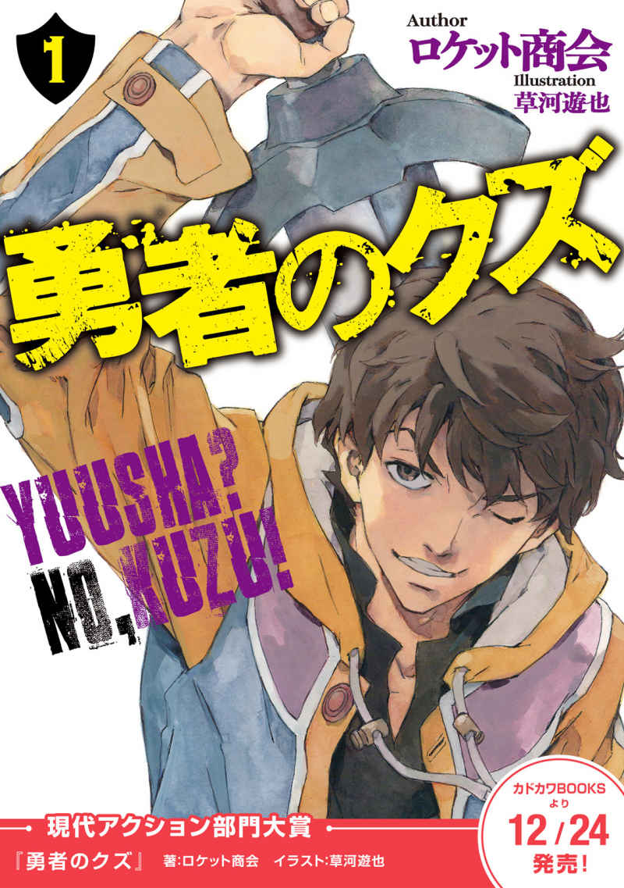
●レッスン１：厄介事には死んでも関わるな
■１
勇者なんて、最低のクズがやる商売だ。
当の本人である俺が言うのだから間違いない。
そもそも勇者とは何か？ 魔王を始末するために雇われる、『殺人』の専門家だ。こんな仕事を選ぶ時点で、そいつの人格を疑った方がいい。
具体的な例をあげておく。
俺の同業者の友人で言えば、殺した魔王の断末魔を録音するのが趣味の《音楽屋》イシノオだとか、元ヤクザの殺し屋としてメシを食っていた《ソルト》ジョーだとか、勇者じゃなければただの殺人鬼だったようなやつもいる。
現状のところ、勇者の大部分が裏稼業上がりの犯罪者もどきであることは、まったく隠しようのない事実でもある。
各国の政府が発行する勇者免許を所持していなければ、ただの人殺しであり、不法侵入者であり、暴力を振るうことで金を儲けるクズ野郎以外の何者でもない。それは本当のことだ。
しかし、俺たちみたいな職業の人間がささやかな良心すら失ったら、それこそ本当に『最低のクズ以下』の何かになってしまうだろう。
いくら俺だってそれは嫌だ。
いちど請け負った仕事は、途中で放り出さない。弱いやつに助けを求められたら応じてやる。借りたものはきっちり返す。そういった基本的な職業倫理を守らなければ、そいつは本当に救いようのないクズ以下のクソ野郎だ。
思えばそれが良くなかった。職業倫理なんてドブに捨てるべきだったと、後になって反省した。
あれは、なんだか恐ろしく冷え込む冬の夜のことだった。
俺は渋谷区の路地裏を歩いていた。たくさんの雑居ビルの隙間を縫うような、静かで臭くて汚い路地裏だった。人通りはまるで無い。
なぜなら渋谷区の一帯は、複数の魔王が縄張りを抱えている土地である。いくら近道だろうと、あえて夜の路地裏を選んで歩くやつはいない。しかし俺には人目を忍ぶべき理由があった。
俺の目的地は路地裏の先にある。知人のエド・サイラスが経営するバー、《グーニーズ》は、こんな路地裏の行き詰まりのような場所でひっそりと看板を出している。
そのときの俺には、気晴らしが必要だった。
ちょっとした面倒ごとを抱え込んだせいで、もう二ヶ月ぐらい仕事をしていなかったし、やたら寒くて曇りの日ばかりが続いていた。こういうときはエド・サイラスの店で、友達と酒を飲み、カード・ゲームで遊ぶに限る。そうすれば気力も戻るだろう、と、俺は確信していた。
最高にご機嫌というわけではないが、まあ、久しぶりに悪くない気分だった。もしかしたら鼻歌でも歌っていた可能性はある。
──その少女は、よりにもよってそんな夜、俺の目の前に落下してきた。
悲鳴もあげていなかった。落下して、地面に激突し、アスファルトを砕いた。そのままゴロゴロと四、五回転ほどしただろうか。
直後、壁に激突して止まるまで、俺は黙って見ていた。
いくつかの可能性が俺の脳内をよぎった。誰かの嫌がらせか。例えば、そう、《嵐 の柩 》卿。そう名乗る魔王と、ちょうどトラブルを抱えていたところだ。面倒事というのはそのことだったが、あの女──《嵐の柩》の差し金にしては、手口が奇抜すぎる。目の前に少女を落下させる嫌がらせというのは、斬新極まりなく、なかなか考えにくい。
だとすれば、これはまた別種類のトラブルということになるだろう。
こんな目に遭うのは俺の日頃の行いが悪いせいか、それとも単に俺が生まれつきツイてないだけか。困ったことになった。なぜ目の前に落ちてくるのか。確実に八つ当たりではあるが、俺は文句を言いたくなった。『気付かなかった』つもりで押し通せない状況だった。
「──いや、待てよ」
まだ最悪の事態は回避できるかもしれない。俺は横たわる少女に近づいた。
「もしかして、こいつ、死んでるんじゃないか？」
正直なことを言えば、死んでいてくれた方が助かる。微かな期待をこめて、少女の顔を覗き込む。そいつは白い学生服に身を包んだ、なんだか硬そうな印象を受ける顔つきの少女だった。たぶん高校生なのだろうが、その横顔はどこか不釣り合いなほど大人びて、冷えた石の彫刻を連想させる。なぜか見覚えのあるような、奇妙な錯覚を受けた。
だが、記憶をたどろうとした瞬間に、一気に憂鬱な気分になった。その細い眉が少し動いたからだ。顔色こそ死人のように青ざめてはいるが、唇も空気を求めて喘ぐように動いた。
これは良くない。
アスファルトを砕くほどの勢いで落ちてきて、まだ死んでいない少女。腕も足も折れていない。とても人間とは思えない頑丈さだ。俺はそういう、異常な頑丈さを発揮できる連中を知っていた。
すなわち魔王、もしくは勇者。
前者ならラッキーだが、後者なら最悪だ。
瀕死の魔王はトドメをさせば金になるが、瀕死の勇者ならば高確率で厄介事に巻き込まれることになる。頭上から落下してきた瀕死の勇者なんて、魔王かその眷属に追われているぐらいしか思いつかない。
こいつの場合は、どうか。俺は絶望的な気分で少女をすばやく観察し、彼女の制服の襟元あたりで視線を止めた。
決定的な証拠に気づいたからだ。
首筋に点在する小さな赤い傷跡、というか注射痕。特殊なドラッグを定期的に摂取している証だ。そいつは俺たちの業界で言うところの《Ｅ ３ 》──エーテル・エフェクト・エンハンサー、エーテル効果増幅剤の常習者であることを意味している。
魔王に対抗するために生み出されたこのドラッグこそが、勇者にとっての重要な商売道具だ。人体の中にあるエーテル知覚を増幅し、限定的な期間において超人化を促す薬物。主に首筋から、専用の注射器を使って使用する。
──つまり、こいつは、もはや間違いない。ほとんど無意識だったが、きっと俺はため息をついただろう。なんの因果でこんな女子高生が、こんな裏稼業に手を染めているのか知らないが──
「こいつ、勇者かよ！」
「そうだよ」
意外にも、答えがあった。
「運が悪かったな、お前。そのガキから離れろ」
少女からではなく、背後からだった。もちろん俺は凄腕の勇者なので、そいつが近づいていることには気づいていたが、妙なタイミングで返答されたので調子が狂った。
俺はコートのポケットに手を伸ばしながら、振り返る。路地裏の奥から歩いてくる、大柄な人影がひとつ。こういうとき、心がけていることがある。まずは主導権を握る。俺はそいつが次の台詞を言う前に、喋りだす。
「誰だよ。この勇者の知り合いか？ こんな夜更けに未成年と遊んでるなんて、感心しないな」
いい加減なことを喋りながら、背後から近づいてきた人物を観察する。
値の張りそうなスーツに身を包んだ男。ただし人相は最悪だし、浮かべている笑顔からは品性というものを感じない。おまけに片手に拳銃を持っている。
少なくともろくな仕事に就いていないだろう──俺は即座にこいつに『クズ野郎』のラベルを貼った。『クズ以下』ではない。いきなり背後から撃ってこなかったポイントは評価できる。
よって、俺はできるだけ友好的に、このクズ野郎と交渉しようとした。大切なのは笑顔だ。
「とにかく今日はお互い、ツイてないな。俺はこんな現場に出くわすし、あんたは俺に見られたし。ここは仕切り直しってことで、俺もあんたも何も見なかったことにして引き上げないか？」
俺は横たわる少女を指さした。
「その上で、改めてその銃でこの女を撃つ算段をするってのはどうだ」
「黙ってろ。いいか？ もう一度言うぞ。お前は、そのガキから離れろ」
その男は、俺の話をまったく無視した。それどころか、こっちに向けて拳銃を構え、失礼な態度で命令する。しかも少し笑った。
「おとなしく俺の言うことを聞けば、お前もすぐに殺してやる」
「聞かなかったら？」
「痛めつけてから殺す。どっちがマシだ？」
「そうか」
俺は密かに心の中で、この男の分類ラベルを貼り直す。『クズ以下』だ。
このスーツの男が浮かべている愉快そうな笑顔から推測するに、背後から撃たなかったのは、俺に警告してやるためではない。俺が怯えたり、慌てたりする様子を見たかったからのようだ。
「そりゃ俺だって、これから友達と約束があるから、関わりたくないんだけど」
言いかけたところで、俺は言葉を止めた。
不意に、横たわっていた少女が身じろぎをしたのがわかったからだ。目が開き、俺をまっすぐ見上げている。そして、唇がひきつるように震えて、言葉を発した。そいつは単純な三文字。
「逃げろ」
どうも今夜は、一方的に命令されることが多い。
少女は喉の奥で、獣が唸るように言葉を発した。
「逃げろ。はやく。急げ──そいつは、私が──」
なにかご立派な言葉を続けようとしたのかも知れないが、彼女は咳き込んで言葉を切った。それきり言葉は出なくなる。俺は多大なストレスによって、頭が重たくなるのを感じた。
こういうときはいつもそうだ。こんな重傷の相手から『逃げろ』なんて気を使われては仕方がない。
「おすすめされた通り、逃げたいところなんだが」
確かに俺は、これから暴力で物事を解決しようとしているクズ野郎だ。
が、ここで逃げたらそれ以下だ。
「こっちには、そうはいかない個人的な事情がある」
そのとき少女は俺を見上げ、そしてまた変な動物のようなうめき声をあげた。何かに気づいたような顔だった。
「──いや。待ってくれ。あなたは」
「無駄だよ」
スーツの男は、鼻で笑った。
「どっちにしても、目撃者は殺せって魔王陛下の指示だ。おい。お前ら、どっちから死ぬ？」
「やめろ！」
横たわる少女が、不意に声をあげた。力を振り絞って、立ち上がろうとしていた。
「私が相手をする。まだ、勝敗はついていない！」
何言ってんだ、こいつ。と、俺は思った。そんな状態で強がって何になるというのか。なので、少女のことは、徹底的に無視することにした。
「まあ、そうだな。さしあたって」
俺はさりげなく首の後ろに手をやる。首筋だ。そこには俺にも、とある特殊な薬剤を常用している注射痕がある。
「先に聞いておこう。あんた、どこの魔王の飼い犬なんだ？」
「ああ？」
スーツの男は、首を傾けて凄んでみせた。
「なんだって？ もう一度言ってみろ」
「白々しいんだよ。聞こえただろ。じゃあ、もう一度言ってやろうか」
こんな風に、俺が挑発的な文句を喋るのには理由がある。まだ、お互い『口喧嘩』の段階だと誤解させるためだ。
俺は袖口に隠してある特別製の注射器の先端を、静かに首筋に押し付ける。手品師のようなやり方だが、これはフリーランスの勇者としての最低限の心構えだ。
「あんたは、どこの魔王の飼い犬だって聞いたんだ。奇遇だと思ってな。俺は俺で、ここら辺の魔王陛下の飼い犬をやってるんだよ。こんなところで取り決めも無しに手を出すと、お互い面倒なことになるぞ」
もちろん噓だ。俺は適当なことを言っている。が、スーツの男の表情はわずかに動いた。発砲をためらうように、ほんの一センチだけ銃口が下がった。
それだけ隙があれば十分だ。俺は注射器の中身の薬剤を、首からすばやく打ち込んだ。注射器は、ジェットインジェクターの改良版である。空気圧縮により、一気に内容物を注入するタイプ。
その薬剤の正体はもちろん《Ｅ３》である。
変化は、即座に訪れる。
「まあ」
ほんの一瞬の目眩とともに動き出す。
「いまのは噓だけど」
俺はやさしいので、噓であることを教えてやった。
スーツの男はそれなりのショックを受けたようで、口汚く俺を罵ろうとした。間抜けな話だ。そんなことをするぐらいなら、まともに狙って撃てばよかったのだ。
とはいえ仮に狙いをつけていたとしても、俺には回避することができただろう。
この状態になった俺は、かなり素早い。姿勢を低くして踏み出すと、頭上を弾丸がかすめていった。
そのまま意識が加速する。
飛び去る弾丸も、スーツの男の顔がひきつるのも、俺にはすべてが見えていた。
エーテル・エフェクト・エンハンサー。
通称《Ｅ３》。
この薬がもたらす効果は劇的だ。皮膚下に浸透した薬物は、人体の内部のエーテルを増幅し、強化する。エーテルについては、古い言い方で《魔力》とでも言い換えてもいい。
この薬の効果があってはじめて、勇者は魔王と対抗することができる。
なぜなら『魔王』とは、こうした薬物の定期投与や適応手術によって、恒常的に体内エーテルを増強している者を意味するからだ。最近では手術の安全度も高まり、気軽に魔王になろうとするやつが多い。
体内エーテルが増強されると、人体の強度は飛躍的に向上し、反射神経・運動神経も強化される。ビルの屋上から落下しても致命傷を負わないようなタフネス、銃弾を超えるスピード。
しかし、それ以上に重要なのは、《Ｅ３》は使用者に特別な知覚力──業界用語で言うところのエーテル知覚を使用者に与えるということだ。超能力に近い。
《Ｅ３》がもたらすエーテル知覚には、大きな個人差がある。
ある者には数秒先の『未来を視る』視覚が、またある者には物体同士に働く『引力を触って動かす』触覚が与えられるという。
俺の場合はといえば、こいつは『高速の知覚処理』を行う力だ。五感で仕入れた情報を、普通の人間の何十、何百倍もの高速で処理して、思考して、判断をくだすことができる。
俺がやたらとお喋りなのは、これが理由だ。
試行錯誤した結果、この形式が最適だった。対話型の思考処理。こんな風に、第三者に話しかけるように思考することで、自分が認識したものを整理していく方法だ。
思考速度を加速させて、一瞬を限りなく引き伸ばす。
だから、こんな芸当もできる。
──弾丸が銃口から吐き出される瞬間を見る。見てから、余裕で回避できる。頭をほんの少し傾けるだけでいい。
紙一重で銃弾をかわし、接近する。
スーツの男が反応するよりはやく、拳銃を構えた手首を摑んで、握りつぶした。手の中で骨が砕ける感触。このくらいは《Ｅ３》使用時の勇者として、標準的な握力だ。
「いっ」
裏返った悲鳴。スーツの男は、痛みに対する典型的な反射行動を示した。背中が丸まり、砕かれた手首を引っ込めようとする。
もちろん無理だ。
俺が手首を摑んでいるし、その直後に顎を蹴り上げられている。『戦い』といえるような行動のやり取りは、これでほとんど終わった。
あとは、倒れてアスファルトに打ち付けた頭を、思い切り蹴飛ばすだけで良かった。サッカーボールを蹴飛ばすように、思い切りだ。《Ｅ３》によって強化された身体能力でこれをやられた場合、ほとんどの人間は死ぬ。
だが、注意しなければならないのは、こんなときだ。
アスファルトに転がった男が、無事な左手で何かを握りこんだ。ナイフか。俺は踏み込みながら、そいつが突き出される角度を計る。ナイフの先端──ではなく、それを持つ相手自身に注目する。どこを狙って刺してくるのか、スーツの男の視線を読む。
腹か。
「それはダメだろ」
俺はまた紙一重で刺突を避け、ナイフを持つ手首を掌で打った。
ついでに膝の裏を蹴り払い、その場に転倒させる。
「なんだよ、お前──」
再び倒れこんだスーツの男は、何か言おうとした。
俺が聞いてやる義理はない。ただ足を振り出し、スニーカーのつま先を、そいつの顔面に叩き込んだ。言葉は途切れ、彼はそれきり動かなくなった。念には念を入れておくべきだ。
俺はさらにもう一歩近づいた。
「そこまでだ！」
背後で、鋭くて尖った声がした。倒れていた少女だ。俺は一瞬だけ動きを止めた。何か追撃をためらわせるような仕掛けでも、このスーツの男にあるのかと思ったからだ。
だが、少女は驚くべき言葉を口にした。
「決着はついている」
「ああ？」
俺は思わず振り返った。少女は震える手を地面に突き、立ち上がろうとしている。だが、うまくいかない。もどかしげに呻く。
「決着はついている──攻撃を加える必要はない。その男は、もはや戦闘不能だ」
とんでもない勇者もいたものだ、と俺は思った。女子高生で、ビルの上から落ちてきて、勝手に死にかけておいて、追っ手に対してこの温かみのある言葉。信じられない。
「だから、これ以上は」
「だから、これ以上は？ ──つまり、こう言いたいんだろ。いまがチャンスだ」
俺は少女の言葉を無視した。即座にスーツの男に向き直り、顔面へ、思い切り踵を振り下ろす。手応えはあった。
少し遅れて、後頭部から流れ出す血液が広がっていく。
「これでよし」
俺はうなずいて、自らに一区切りをつけた。
そうしないと攻撃衝動が高まりすぎて、死んだ相手に対してすら余計な追撃をしてしまいそうだった。これがエーテル強化の副作用だ──早い話が、凶暴になる。魔王どもは恒常的にエーテルを増幅しているから、大抵のやつが狂っているといってもいい。
俺たち勇者にしても、あまり《Ｅ３》をやりすぎると、たちまち中毒者の仲間入りだ。
「──失礼だが」
大きく深呼吸をする俺の背後で声がした。さっき落ちてきた少女だ。まだ体が自由に動かないらしい。恐ろしいほど真面目くさった顔で、どうやら俺を睨んでいるようだった。
「助けていただいたことは感謝する。だが、いまの男は戦闘不能だった。完全に勝負はついていた。殺すことは──」
「いまの男は」
かなり不機嫌になっていた俺は、この少女に対しても適当な噓をまくし立てることにした。
「かつて俺の家族を皆殺しにしたんだ。俺はずっと復讐のために生きてきたといってもいい。いつかこの手でぶち殺すためにな」
「それは」
少女はわずかに顔を歪めた。
「噓──だろう」
「ああ。だが、噓だったらなんだ？ 本当なら許されるのか？ それとも、お前が俺に制裁でもするのか？ やれるもんなら、やってみな」
俺は少女に対してまくし立てた。
八つ当たりのためだ。とても気分が悪かった。
「それとお前、まだ若いんだから勇者稼業から足を洗え。このクズ」
勇者なんて、例外なくクズだ。殺人と暴力で金を稼ぐクズ野郎だ。足を洗えるなら、洗ったほうがいい。
少女は呆気にとられたらしく、特に返答もなしに、ただ目を細めたり開いたりした。俺はなんだか余計にイライラしてきた。さらに何か説教じみたことを言うことで、こいつを不快な気分にさせようかと思った。
だが、その前に、背後から近づいてくる足音を聞いた。
「──アキ！」
それはまた、別の少女の声だった。振り返れば、ずいぶんと小柄な少女が駆け寄ってくるのが見えた。足元の少女と同じ、白い学生服を着ている。その顔つきは少し整いすぎており、どこか無機質で、日本人形を連想させた。
彼女は、俺を睨んで足を止めた。その顔には、敵意が満ちていた。
「誰？ あなた」
尋ねてくる、小柄な少女の手にはナイフがあった。血に濡れている。まさか、彼女も勇者なのだろうか？ 世も末というやつだ。彼女は明らかに俺を敵だと思っているらしく、横に倒れたスーツの男と、倒れたまま動かない少女、そして俺を順番に眺めた。
「誰？ 《琥 珀 の茨 》の眷属？」
「いや、違う」
倒れたままの少女が、少し慌てたように声をあげた。
「その人は、違う。勇者だ──私は、そう。助けていただいた──」
「勇者？」
一瞬、沈黙があった。小柄な少女は、疑惑にあふれる目で俺を見ていた。
「あなたが？」
「知るか」
俺は首を振った。《Ｅ３》のせいで、攻撃的な気分になっている。これ以上文句をつけられたら、暴力を伴う行為に出てしまうかもしれなかった。
「そいつを病院に運んでやれよ。俺はこれから用事がある。じゃあな」
「いえ──待って、いただきたい」
足元の少女は起き上がろうと片手をつき、また失敗した。
「まだ、私はお礼も」
もう俺は何も答えるつもりはなかった。
すごくイライラしていたからだ。今夜の俺の楽しいスケジュールは、まだ始まってもいない。ただでさえ時間に遅れている。この点に関して、俺はまったく譲るつもりがなかった。たとえ現金を百万だか二百万だか積まれたところで、同じことだ。
友達とビールを飲み、安くて美味いピザでも食って、ゲームをする。
これ以上に重要なことがあるだろうか？
■２
エド・サイラスの店、《グーニーズ》は、月曜日の夜だけは特別だ。
一般客は立ち入り禁止となり、勇者相手を専門にした営業となる。これには明確な理由があって、まず一般客は人殺しどもと一緒に酒を飲んだり、食事をしたりするのを嫌うということ。それから酔っ払った勇者は例外なく危険である、ということだ。
特に後者の要因は大きいが、このサービスは俺たち勇者の間で素晴らしく好評だった。
カタギの連中を困らせることなく、顔見知りのクソ野郎どもと大いに飲んで騒ぐことができる。少し騒ぎ過ぎたやつは、エド・サイラスの手によって厳しく制裁されることになるだろう。
噂によれば、エド・サイラスも昔は魔王を殺し回っていた、元・勇者であるという。彼の面相を拝めば、その噂がおそらく真実であろうことがわかる。
山賊の親玉がふさわしいような髭面で、顔の右半分に大きな火傷の痕があった。その痕が喋るたびに引き攣り、常に客を威嚇しているように見える。
「なんだ、ヤシロか」
と、店内に入るなり、エド・サイラスは俺の顔を見て残念そうに呟いた。『ヤシロ』は俺の、勇者としての名前だ。もちろん偽名を使っている。本名をそう簡単に明かす間抜けではない。
「今日は貧乏人ばっかり来やがる。金は持ってるか？ 今日こそツケは効かんぞ」
「そりゃないだろ」
俺は思わず笑ってしまった。
「久しぶりに来たんだから、歓迎しろよ。俺は客だろう」
「ツケで飲み食いするやつを客とは呼ばねえ」
「わかってる」
「それから、何も注文しないやつもだ」
「わかってる！ ビールだ！ それと、なにか今すぐ食えるもの」
俺はエド・サイラスを納得させるため、カウンターに千円札を置く。この調子では、恐らく今月も生活費が困窮するであろう。
「それなら、いくらヤシロでも客だな。入れよ」
エド・サイラスは火傷の痕を引きつらせて笑うと、すばやく千円札を回収した。そしてビールジョッキを手に取る。
同時に俺は店内を見回す──今夜の客は、冴えない天気が影響しているのか、いつもより少ない。
見慣れた常連の顔が、中央テーブルに二つだけだ。彼らが本当にどうでもいい、なんの利益も生まない話をしていることは、店に入ったときからわかった。俺は彼らの会話に耳を傾けながら近づく。
「──だから、今シーズンのキング・ロブ、ありゃ無敵だぜ。挑戦者の青白い顔を見たか？」
「それにしたって、キングの黒騎兵セットはタネが割れてますからね。さすがに不利ですよ。みんな狙ってくるでしょう」
「へ！ キング・ロブの戦いは、いわば王道よ。わかるか？ あ？ 騎兵がドンと出て、ブロックごと相手を貫通するんだぜ。カウンター狙いのセコい手に負けるかよ」
「ぼくは好きですけどね、消耗戦もスタイルです。挑戦者を応援しますよ」
どうせカードゲームの大会の話だと、俺にはわかっていた。こいつらが好む話題といえば、ゲームか、他人が仕事でヘマを踏んだ話か、そのぐらいしかバリエーションがない。だが俺も彼らの同類には違いないし、その手の話題は大好物である。
なので、俺は横から口を挟んだ。
「じゃあ──どうする？ キングが勝つか、賭けるか？」
「あ？」
と、片方が振り返った。スキンヘッドの大男だった。
「遅えよ。どこで油売ってたんだ、ヤシロ」
厳つい顔で、睨みつけてくる。彼の名を《ソルト》ジョーという。どうせ偽名だろう。元ヤクザの殺し屋であり、同業者の勇者だ。血とゲロと泥で汚れたアーミージャケットを窮屈そうに着込んでいるが、俺が知る限り、このジャケットは洗濯された形跡がない。
なんらかの思い入れがあるらしいが、どうせ死んだ友人とか子分とかの形見に違いない。俺はそういう過去にまったく興味がないので、「とにかく臭いので洗え」としか言えない。
ジョーは、正面から俺を睨みつけて毒づいた。
「オレはてっきり、お前が死んだと思ってたぜ。《嵐の柩》卿とはどうなった？ ついに眷属にでもなる覚悟を決めたか？」
「いや。適当にやってるよ」
俺は曖昧に言葉を濁した。《嵐の柩》卿。その名前は気分が悪くなる。このところ、俺が仕事もろくにできていないのは、やつのせいでもあった。
「その話はやめてくれ。遅れたのは別件だ」
「オレはお前と違って暇じゃねえ。待たせやがって、殺すぞ」
「噓つけ、《ソルト》ジョー」
俺はジョーを噓つき呼ばわりすることにした。なぜなら、ジョーは俺のことが嫌いだし、俺もジョーのことを嫌いだからだ。それでも、友達だから仕方がない。勇者は友達を見つけるのが難しい商売だ。いいやつはみんな死ぬ。
だから俺はジョーに笑いかけて、無駄口を叩く。こんな風に。
「どうせ暇だろ、ジョー。忙しいわけないよな？ うまい仕事でもあったら、俺にも声かけろよ」
「ヤシロと組むぐらいなら、そのへんのチンピラでも雇うぜ。バカか？」
「それもそうか。俺が大活躍しすぎるから、ヘボいお前の取り分が無くなるな」
「なんだと」
ジョーは声を荒らげて立ち上がろうとした。だが、その腕を摑んで、止めたやつがいる。やたら上等なスーツを着て、眼鏡をかけた、もうひとりの常連の男だった。
「やめてくださいよ」
そいつは細い目で笑った。果てしないほど胡散臭い笑顔だった。
「みなさん、すぐ喧嘩しようとするんですから」
彼の名を《音楽屋》のイシノオ。一応、こいつも勇者だ。免許を取る前は、アマチュアの人殺しだったという噂があった。アマチュア──つまり、ただの殺人鬼のことだ。それが本当かどうかは知らないが、とにかく信用できないやつ、ということだけは確かである。
「二人とも、なんで仲良くできないんですか？」
「人殺しの三流野郎どもと仲良くするのは難しいんだ」
俺は論理的に、かつ素直に、自分の気持ちを告げた。《ソルト》ジョーは唸り声をあげた。
「オレをヘボ扱いするやつは許せねえ。撤回しろ、ヤシロ！」
「人殺しのくせに、仕事にプライド持ってるのかよ」
「撤回しろ！」
「まあ、まあ」
イシノオはわざとらしく、冷静ぶって俺たちをなだめた。そこが実にムカつく。イシノオはただ喧嘩ではなく、ゲームで遊びたいだけだ。俺たちを本気で仲良くさせたいわけじゃない。
「決着はゲームでつけましょう。マスターから追い出されますよ」
「そうだな」
俺はカウンターを一瞥した。エド・サイラスは、ビールをジョッキに注ぐ手を止め、鬼のような目で俺たちを見ていた。《ソルト》ジョーも鼻を鳴らして椅子に座りなおす。こうなると、大人気ないのは俺だけになってしまう。それもこれも、《Ｅ３》の効果がまだ少し残っているせいだと思いたい。
「悪かったよ、ジョー」
「ああ。おれはヘボじゃない」
「そう、お前はヘボじゃない。凄腕の勇者だよ。しかし、カードの腕前はどうかな？」
俺も椅子を引いて、テーブルに肘をつく。ポケットから、カードの束を取り出した。俺のデッキだ。
「白黒つけようぜ。ジョー、イシノオ、怖気づいたら帰ってもいいぞ！ そうじゃなきゃ三つ巴だ！」
「なんだと、こら」
「上等ですよ、ぼくの方は」
ジョーは単純なので椅子を蹴るようにして立ち上がり、イシノオは狡猾な狐のように笑う。俺はこいつらのことが嫌いではあるものの、いつでも勝負に乗ってくるところは評価できた。
しかし次の瞬間、イシノオは不意にムカつく笑顔を消した。
「と、言いたいところなんですが」
この細い目の男が真顔になると、なぜだか酷薄な印象が漂う。
「──ヤシロさん。あの二人は？ ご友人ですか？ それとも、お客さんで？」
イシノオが『お客さん』という。それは俺たちの業界では特別な意味を持つ。勇者にとっての『お客さん』。それは、殺害対象ということだ。
不吉な予感がしたので、俺はすぐに振り返る。
そこには、二人分の少女の影があった。どこか大人びた顔つきの長身の少女と、小柄な少女。どちらも白い学生服。残念ながら見覚えがあった。冗談だろう、と俺は思った。俺の今夜の楽しい予定が、急速に色あせていくのを感じた。
「おい」
と、エド・サイラスは、カウンターの内側から警告の声を発する。
「今夜は一般客は立ち入り禁止だ。それに、感心しねえな。未成年が、こんな夜中にこんな場所をうろついてるとは──」
「問題ない」
断定的な口調だった。一歩、長身の方が踏み込んでくる。間違いなく、さきほど俺の目の前に落下してきたやつだった。
「我々は、勇者です」
彼女の声には、なんの躊躇も、後ろめたい響きもなかった。まるで勇者という仕事を誇るかのような、力強い態度だった。
「アカデミー所属、二年。特成コース。城 ヶ 峰 亜 希 」
彼女──城ヶ峰亜希は、実に堂々と名乗りをあげた。そして、まっすぐ俺を睨むように視線を向けてきた。そして、軍隊のように敬礼する。
「先程は、命を助けていただき、感謝します」
危うく俺は、机の下に隠れるところだった。
「ヤシロ師匠。あなたこそ、素晴らしい実力と志ある勇者と確信しています」
やめてくれ、と、俺は思った。ここにはエド・サイラスも、《ソルト》ジョーも、イシノオもいる。このクソ野郎な友達の前で、そんな風に言われるのは恥ずかしすぎる話だった。
「どうか、我々の師匠になってください。今夜、いますぐに」
そうして城ヶ峰亜希は、深すぎる礼をした。
「宜しくお願いします、師匠」
それが限界だった。
俺の不愉快な友達は、そろって低劣な笑い声をあげた。明らかに俺を馬鹿にする意図のこもった笑いだった。俺は黙り込んで、可能な限り彼らを、あるいは彼女らを無視する以外に、どんな態度をとればいいかわからなかった。
アカデミー、という組織がある。
その名のとおり、『学校』のことだ。勇者業界の健全化に血道をあげる、日本政府文科省が主導で作り上げた、勇者養成機関である。
そのモットーは、
『正義、守護、名誉』。
──なめくさっている。
この言葉を聞いただけで、《ソルト》ジョーはアレルギー反応を起こしてクシャミを繰り返すだろうし、イシノオのような邪悪な男は浄化の光に焼かれてしまうだろう。俺だって鳥肌がたちそうになる。
このおかしな学校、アカデミーの開校は、いまから四年ぐらい前の話だっただろうか。
当時は未成年に《Ｅ３》を扱わせるリスクや、殺人の訓練をすることについてバッシングも集まったらしい。が、メディアに大金をバラまいたおかげで、表面上は沈静化した。国際的な勇者支援団体、《円卓財団》の第五百七代目アーサー王が資金援助を申し出たことも効果的だった。
一般に、男性よりも体内エーテル量の多いとされる女子生徒を中心として、いまではかなりの数の生徒が在籍しているという話である。
彼ら、あるいは彼女らのトレードマークは、白い制服に、《Ｅ３》常習者の注射痕。それと胸元に輝く、銀製の『翼の生えた太陽』の紋章だった。見落としていたのは俺のミスだ。
おそらく、彼女らを眺める俺の目つきは、かなり不愉快そうなものだったはずだ。
「断る」
と、俺はまず宣言した。
「どんな事情があろうと、そりゃ請け負えない仕事だ。俺は勇者であって、教師じゃない」
可能な限り、付け入る隙を与えないよう、ビシッとした調子で言ってやったつもりだった。
「つまり、人殺しなんだ。わかるか？ それ以外は専門外なんだよ。無理だ。それ以上に、やりたくない」
「はい！」
城ヶ峰亜希の返事は、ムカつくほど歯切れが良かった。
「ですが、我々が頼るべき相手は、師匠しかおりません」
声には、己の行いへの確信が滲んでいた。
このとき俺は気づいた。どこか冷たく、硬質な印象を受ける彼女の顔つきは、俺のちょっとした誤解だ。こいつはただ『頑固』とか、『思い込みが激しい』とか表現すべきタイプだ。
「なんとしても、我々は今夜中に、とある魔王を討伐する必要があるのです」
「ああ。そりゃよかった。勝手にしてくれ」
俺は手短に返事をして、遠巻きにこちらを伺う同業者たちに視線を向ける。
エド・サイラスも《ソルト》ジョーもイシノオも、笑える見世物を見物するような状態になっていた。ニヤニヤしながら酒をのみ、こちらを見てヒソヒソと話していやがる──楽しそうじゃないか。俺も彼らの側に混ざりたい、と思った。なんとかここを抜け出して、アルコールとゲームとバカバカしい会話の世界に戻りたかった。
だが、城ヶ峰亜希の演説するような口調は止まらない。しかも彼女は、手帳まで開き、それを読み上げているようだった。
「我々は本来、アカデミーにおいて、特成コースのＥクラスに在籍しているのですが」
「待て」
「アカデミーの実戦研修は、三人で一組のパーティーを組んで行われます。まさに実際のプロの勇者と同じく、計画を立案し、魔王を討伐する形式です」
「聞こえないのか？」
「ですが今宵の作戦では、我々が未熟だったため、魔王の手勢に敗北。私はあの有様となり、パーティーの一人もさらわれてしまい」
何を答えても、城ヶ峰の説明は止まらなかった。
その顔つきは嫌になるほど生真面目なものであり、俺に言わせてもらえば滑稽なほどの真剣さを感じた。直視していると笑ってしまいそうだった。
「なんとしても、彼女を奪い返さねばならないのです。我々の事情は切実であり、一刻の猶予も許されません」
「──わかったぞ」
俺はそのあたりで、城ヶ峰亜希の意図を完全に見破った。
「さてはその勢いで、なし崩しに話を進めようって魂胆だな」
「はい！」
彼女は再び歯切れ良く返事をした。正直すぎる。正直が美徳である世界で生きていれば、さぞかし聖人扱いされたであろう。
「私は一度、師匠に命を救われた身です」
城ヶ峰の口調は力強いが、それ以上に、その言葉の内容はまったく文脈がつながっていないように思える。
「よって、こちらには不退転の覚悟で参りました。必ずや私の一念を理解していただけると」
「要するに、お前らがヘマしたんだろ。知るか。アカデミーに頼め、生徒なんだろ？」
「はい！」
さっきから返事だけは良い。城ヶ峰の応答はまるで軍隊のような調子だった。問題は、その次に続けられるセリフである。
「無礼は承知の上ですが、しかし」
「俺は忙しいんだよ、無礼者め。これからビール飲みながら、ゲームで遊ぶところだったんだ。邪魔するならタダじゃおかねえぞ」
「──アキ」
不意に、城ヶ峰の背後から、静かな声が聞こえた。怒りを押しとどめているような声だった。そういえば、彼女の背後には、あの小柄な少女がいた。
「もういいよ。その人、ダメそう」
その言葉にはイラッときた。アマチュアに舐められて、腹を立てないプロがいるだろうか？
「なんだって？ おい、もう一回言ってみろ」
「ああ──失礼。申し訳ない」
俺が小柄な方の少女を覗き込もうとすると、機先を制するように城ヶ峰は謝罪した。ついでに、背後に隠れるようにたたずむ少女を、手のひらで示す。
「こちらは、我がパーティーの一員。印 堂 雪 音 と申します」
名前を紹介されても、印堂雪音という少女は反応も示さなかった。ただ、俺を睨んでいる。なんらかの恨みすらこもっているように感じた。単にそういう目つきのやつなのかもしれない。
「印堂か。おい、誰がダメそうだって？ この凄腕の一流勇者に向かって」
俺が怒りをこめて宣言してやった途端に、背後で忍び笑いが聞こえた。くそっ。こっちを見物している《ソルト》ジョーやイシノオのことは、この際無視しておこう。
俺は印堂雪音を正面から睨みつけた。
「《死神》のヤシロを知らねえな？ おい、二年前、池袋での《ＢＦＥ》抗争を覚えてるな？ 聞いて驚くなよ。なんと俺はあの抗争で、あの有名な──」
「あなたが誰か知らないけど」
俺のありがたい名乗りを、印堂雪音は迷惑そうに遮った。城ヶ峰の腕を引く。
「行こう、アキ。こういうタイプのひとは、どうせ口だけだし」
「雪音。あまり失礼なことを言うな。この方の実力はさきほど拝見し、なおかつもう少し押せばどうにかなりそうな気配もある」
城ヶ峰はたしなめたらしい。が、あまり意味のあることではなく、ついでにやや失礼な言い方だった。これに対して、印堂雪音は首を振った。
「私たちは急いでる。この人がセーラを助けられるの？」
「挑発しても無駄だ」
俺は印堂に対して、できるだけ冷静になろうと努めた。こんなのは、交渉の方法のひとつだ。相手を怒らせてその気にさせる。その手に乗るか。
「できる、できないじゃない。やらないって言ってるんだ」
「怖気づいてるんでしょ」
「なんだと」
ここまで言われて暴力的な行為に及ばないのは、俺の人格が素晴らしいということだ。
「人をヘボ呼ばわりするな。ムカつくんだよ。誰が怖気づいてるって？ 俺は無敵だよ」
「相手が《琥珀の茨》でも？」
「相手がどこのどんなクソ野郎でも、だ。《琥珀の茨》卿だって？」
俺は鼻を鳴らした。
むろん、《琥珀の茨》という名前は本名ではない。魔王どもは中世あたりからの慣習を踏まえ、お互いに『卿』という敬称をつけて呼び合う。アホくさい話だ。まるでごっこ遊びのようで笑えるから、俺たち勇者もそう呼んでやっている。
「魔王としては三流どころだな。最近、この渋谷界隈で勢力を伸ばしてるらしいが、ただのヤクザの商売の域を出ない。やってることも大体同じだ」
そこまで言ってから、俺はどうしても仕返ししたくなった。よくもこの俺に対して、こんな強引な交渉を仕掛け、挑発して思い通りにコントロールしようとしてくれた。俺はしっかり根に持つタイプだ。
「たとえば麻薬とか、人身売買とかな。その攫われたトモダチだっけか？ クスリ漬けにされて、玩具扱いされてる頃かもしれないぜ」
これだけ脅せば十分だろう。とどめのセリフも決めていた。こういうプライドの高そうなやつは、罵倒よりも同情が効果的だ。
「かわいそうにな」
「......アキ」
見るからに、印堂雪音の顔つきが変わった。
「やっぱり、私は行く。こんなダメそうな人に頼むのは、時間の無駄」
「雪音。しかし、状況は」
「アキのいうことでも、無理。時間がない」
印堂雪音は、首筋に何かを押し付けた。円筒型の小さな注射器。《Ｅ３》。すぐに彼女の気配が変わった。常日頃から、エーテルという見えない力になれている俺にはわかる。最初に感じるのは、静電気で皮膚を撫でられるような気配だ。
俺は無意識に、ポケットに手を伸ばした。癖だ。そこには《Ｅ３》がある。
「私がセーラを助けて、帰る」
印堂雪音は短く告げて、一歩だけ後退した。動きとしてはそれだけだった──しかし直後、その姿が唐突に消えた。ほんの一瞬、風が緩やかに渦を巻いた気がした。
「おっ？ すげ」
カウンターの隅でにやにやと眺めていた、《ソルト》ジョーが少し感心したような声をあげた。どうやったのか。同じ勇者、商売敵として興味深かったのだろう。イシノオもまた、警戒の視線をすばやく左右に向けている。
俺は姿を消した印堂の影をさがすより、より詳しいやつの反応を見るべきだと思った。城ヶ峰亜希に対して、できるだけ悪党ヅラで睨む。
「ひとりで行っちまったぜ、あいつ。どこに消えた？」
「はい」
やや辛そうな顔だったが、城ヶ峰は素直にうなずいた。
「雪音のエーテル知覚には、空間の『隙間』が見えるそうです。その隙間に入り込むことで、ある程度の距離を瞬間的に移動できると」
「そうか」
俺は呆れた。とんだ素人だ。いったいアカデミーではなにを教えているのか。同業者の情報をこれほど簡単に喋るやつがいるか。
だが、城ヶ峰の言うことが本当なら、印堂雪音のそれは強力なエーテル知覚の部類ではあると思う。俺の無敵のエーテル知覚ほどではないが、強い。かなり便利なやつだ。
「お前は追いかけないのか？」
「はい。師匠のご指導が必要です」
「そんな暇があるか？ いまごろ、お前のトモダチが──」
「それは噓です」
城ヶ峰は断定する。その断定の鋭さに、俺は少し違和感を覚える。なんだ、こいつ。
「実際のところ、彼女──我々の仲間は、どのように扱われるのでしょうか？ 正確な事情が知りたいと思っています。師匠はこうした、学校では教えていない部分の知識をお持ちです」
「攫ったのが、アカデミーの生徒だからな」
城ヶ峰の鋭さに免じて、俺は少し喋ってやることにした。
「傷物にはしない。価値が下がる。《琥珀の茨》卿もいちおうプロの魔王だからな。『身代金』としての価値を無意味に下げたりしねえよ」
「身代金？」
「アカデミーは世間的に評価が微妙な組織だ。知ってるだろ。殺し屋養成学校だぜ。俺が魔王だとして、もしも生徒を捕まえたならな。事実の公表と引き換えに、身代金の交渉をする。そっちの方が儲かる」
とはいえ、これも八割くらいの推測に過ぎないものではある。《琥珀の茨》卿が、そろばん勘定もできない間抜けという可能性もゼロではなかった。
だが、それは城ヶ峰にとって、大きな救いとなったようだ。
「なるほど。まだ猶予はあると。やはり、なんとしても助けなければ。師匠！」
「そうやって押し込んできやがって、図々しいんだよ。救助なら学校に頼め！」
「学校には頼れないのです」
城ヶ峰は深々と頭を下げた。下げすぎているくらいに深く下げた。
「事情はすべてお話します。どうか、我々にご指導を！ 今夜中に、《琥珀の茨》卿を討伐しなければならないのです！」
「無茶なタイムスケジュールだ」
喋りながら俺は店の隅に目をやった。
エド・サイラスと《ソルト》ジョー、それからイシノオまで、カウンターの上に紙幣を載せている。こちらを指差してなにか喋っているが、たぶん、俺のことで賭けをしているのだろう。賭けの内容も想像がついた。
「お前らにご指導するのは俺の仕事じゃないし、慈善事業で勇者やってるわけじゃない」
「ですが師匠のお力ならば」
「蕁麻疹が出るからやめろ。そういう口上は」
歯の浮くような城ヶ峰の台詞に、案の定、店の奥で下劣な男たちの笑い声があがった。俺は同業者たちに対して、中指を立てる。
一方で、城ヶ峰は怪訝そうに俺のジェスチャーを眺めていた。こいつに俺の気持ちがわかってたまるか。俺はすごくイラついている。たまに俺だって、『最低のクズ以下』という身分を甘んじて受け入れてもいいのではないか、と思う瞬間がある。しかし、それは最後の砦だ。
これは生きるやり方の問題である。俺には俺の趣味とか、やりたいことがあって、俺はクズ以下のやり方で生きるつもりはない。
「指導はしない。だが、単なる勇者としての依頼なら受ける。勇者は先生じゃなくて、殺し屋なんだよ。まずお前はそれを理解しろ」
「と、言いますと」
「身代金の五分の一で受ける。二千万くらいか？」
ここまで口にしたとき、店の奥の方でジョーが口笛を吹き、イシノオが乾杯するようにグラスを掲げるのがわかった。俺はあえてそれを意識の外に締め出した。どうせ『馬鹿が賭けにのってきた』とでも思っているのだろう。
クズどもめ、俺の命で賭けをしやがって。一人勝ちしてやる、と思った。
「二千万だ。少しは待ってやるが、どんなことをしてでも用意しろ。それから、これ」
俺はコートのポケットから、二つの布の塊を取り出した。テーブルの上に放り出す。そいつは銀行強盗が使うような、ニット製の目出し帽だ。俺が普段使う分と、念のための予備である。
「これは」
案の定、城ヶ峰は目を細めたり開いたりしてみせた。こんな基礎的なことすら、彼女らの学校では教えていないらしい。
「いったい？」
「覆面だ。かぶれ。勇者なんだから、万が一のことも考えないとな。しくじって魔王を逃がしたとき、顔を見られてみろ。身元を探られて殺される」
「そうですか？ まるで犯罪者のようでは──」
「大差ねえよ」
俺は吐き捨てた。
■３
フリーランスの勇者ならば誰でも、信頼できるセキュリティに守られた『ガレージ』を持っている。
武器置き場とも言う。勇者免許があったとしても、所持・携行が法的に禁止されている武器は多い。例えば重火器、爆薬、毒薬の類だ。
腕の立つ勇者というものは、こうした違法な道具を隠しておく『ガレージ』を、活動範囲に複数箇所持つのが常である。俺の場合は、そのひとつがエド・サイラスの店の物置だった。ちなみにエドはこの物置の保管料で、俺たちから小銭を巻き上げている。
「それで？」
エド・サイラスは、『ガレージ』のドアを、いかつい見た目の鍵で開いた。部屋の中から、カビと鉄の入り混じった匂いがした。
「今回はどうするね？ 《琥珀の茨》卿をぶち殺す算段はあるんだろう？」
「じゃなきゃ、やらねえよ」
エド・サイラスの口調で、だいたいの流れはわかった。
「エド、あんた、俺に賭けただろ」
「大穴を狙ったんだ。そりゃお前さんは『俺様は凄腕だ』って主張するんだろうが、いくらなんでも一晩で殺るのは条件が厳しいと思うがね」
「無礼者が多いな」
俺は笑って、『ガレージ』の中に踏み込む。
「実際に凄腕なんだよ。勝算のない仕事はやらない」
ロッカーとスチール製の棚に、武器や爆弾が満載だ。俺の分だけではなく、《ソルト》ジョーやイシノオたちの分も並んでいる。
まず、目に付く物騒な重火器が少々。次に、爆弾がたくさん。毒薬はもっとたくさん。《Ｅ３》は電子錠つきのロッカーの中に。そして最も数が多いのは、剣やナイフといった刃物だった。
「特に《琥珀の茨》卿は、エーテル知覚のタネも割れてる。俺の敵じゃねえよ」
というより、俺を完封できるエーテル知覚の持ち主は、まずいない。最強とか名乗るわけではないが、どんな相手でも八割方くらいは有利に対応できるのが俺だ。
「おい、城ヶ峰？ だったか？」
「はい！」
入口で城ヶ峰亜希が敬礼姿勢をとった。
「お前は《琥珀の茨》卿本人と接触したのか？ 戦ったか？」
「はい！ 移動ルートを策定後、待ち伏せして、攻撃を仕掛けました」
「ああ──まあ、待ち伏せってアイデア自体は悪くない。相手がクソだったけどな。どうなった？」
「《琥珀の茨》卿が、何やら、こう手を動かし」
城ヶ峰は、両手をひらひらと魚のように泳がせた。変なジェスチャーだった。彼女は何か違和感を覚えたのか、すぐに眉をひそめる。手の動きを微妙に変化させた。
「ん？ こうだったか──それとも、こう──」
「いいんだよ、そんな細かいディティールは」
「いえ、確かこう、上下方向の動きがあったような。本当です」
「真面目すぎて応用が利かないタイプだな」
俺はもう城ヶ峰の解説に期待するのはやめた。
「それから？ お前、どうなった？」
「魔王が手を動かしますと、私は全身に激痛が走って、身動きがとれなくなってしまい」
「ああ。それ、なんだと思った？」
「金縛りの類かと」
城ヶ峰は何かの解説を求めていたようだったが、俺は何も答えなかった。先生ではないからだ。その代わりに、スチールの棚の上から短い筒状の道具を手に取り、俺はエド・サイラスを振り返る。
「決まりだ。噂通りだな。殺せる」
エド・サイラスは、ふむ、と唸った。
「しかし問題は、そこまでの道のりだろうが。《琥珀の茨》卿は自分の城に閉じこもっているだろうし、眷属どもが警備を固めているはずだ。今夜は特にな」
「そりゃヘマやって殺しそこねた、アマチュアのクソ勇者がいるからな。だが、今回はその点、ラッキーだ。どうにかなる」
続いて、俺は部屋の隅のロッカーを開く。いくつもの剣が、そこに陳列されていた。まるで骨董品の見本市のようだった。
勇者にとってもっとも信頼でき、なおかつ実用性のある武器が、これだ。
つまり、剣。
勇者が銃や爆弾の類を信用できない理由は、二つある。
一つは、暗殺の現場に民間人が居合わせないとも限らない、ということ。万が一の誤射・誤爆で民間人を殺傷してしまえば、本人や家族から訴えられて、慰謝料をふんだくられる可能性もある。
もう一つは、魔王に対して、銃弾はあまり有効な武器とは言えないからだ。エーテルを恒常的に強化している魔王どもは、銃弾くらいは簡単に避ける。至近距離でなら当てられるだろうが、当てたところで致命傷になりづらい。
魔王どもは手術によって、エーテルを人工的に強化・増幅する器官を体内──おおむね心臓付近に移植している。そいつは呆れるほどの頑健さと、怪物じみた回復力を魔王に与える。銃創くらいなら、ものの数秒で治癒してしまう。
そんな魔王に効果的なのが、手術で移植したエーテル強化器官と、首や手足を物理的に『切断』することだった。完全に切り離してしまえば、再生の効果は及ばない。
故に、選ぶとしたら『剣』だ。俺たちが瞬間的にではあるが、銃弾よりも素早く動ける以上は、これに優る武器はあまりない。
「よし」
俺はロッカーに手を伸ばし、もっとも使い慣れた、ひと振りの剣を摑む。
飾り気のない見た目の、どこまでも実用本位の剣だった。両手使いと片手使いの中間に属する長さの刃渡り、そして柄。これを『雑種の剣』、バスタード・ソードと呼ぶ。中世ヨーロッパで生まれ、そしてその取り扱いの難しさからすぐに廃れた形式の剣と言われている。
俺は師匠から、こいつを自由自在に操る方法を学んだ。
「これさえあれば、俺は無敵だからな」
「お前がぜんぜん使わねえし、ツケも払わないから、来月には売り飛ばそうと思ってたところだ」
こういうエド・サイラスの台詞は、まったくの本気だ。冗談や脅しなどではない。実際に危ないところだったのだろう。
「大丈夫、ちょっと待ってろ。こいつで稼いでくるから」
俺は剣をベルトの剣帯に引っ掛けた。そして振り返る。城ヶ峰はさっきから直立不動で、『気を付け』の姿勢をとっていた。
「城ヶ峰、お前の得物は？」
「はい！ さきほどの交戦の際に──」
「あまりにも間抜けだから、失くしちまったと」
「はい！」
「わかってればいい」
もう肩をすくめるぐらいしか、リアクションできない。
「好きなのを持っていけ。お前に死なれたら金の回収に困る。レンタル料は一晩で五万」
「はい。──しかし、その相場は」
城ヶ峰は、小癪にも考え込むような顔をした。
「妥当なラインなのでしょうか？ 我々のような世間知らずの学生から、できるだけ金をふんだくってやろうという意識が感じられるのですが」
「じゃあ別に持っていかなくてもいい」
「はい！ わかりました！」
城ヶ峰は急に目を輝かせた。というか、見開いた。
「これが一般に言う、『足元を見られる』という状況ですね」
俺はまた返す言葉に困った。正直すぎる。
「師匠の言葉は勉強になります」
「やめろ」
こいつ、このまま押し通す気だな、と思った。一方的に師弟関係を成立させるつもりか。ぞっとしない話だ。何か決定的に拒絶する方法はないか。俺は得意の知恵を絞ろうとした。
そのとき、物置部屋の入口から、スキンヘッドの頭が唐突に覗いた。そのスキンヘッドは、どういうわけか血に染まっていた──《ソルト》ジョーだ。とてつもなく不愉快そうな顔をしている。
「おい、ヤシロ」
低く唸るような声に、城ヶ峰は振り返って硬直した。俺は見慣れているので平気だった。いったい何度《ソルト》ジョーが血まみれで待ち合わせ場所に現れたことか。俺たちの仲間内で、もっとも『派手』に殺るのがこの男だ。
「たったいま、頭の悪そうなギャングどもが押し込んできたぞ。ぶっ殺したけど。ゲームが台無しになっちまった。クソだぜ、あいつら」
「なるほど。そいつは──かわいそうにな」
もちろん、ジョーに対しての発言ではない。俺は心の中で、死んだギャング──まず間違いなく、《琥珀の茨》卿の眷属どもであろう彼らの、冥福を祈った。《ソルト》ジョーとイシノオのゲームを邪魔してしまうとは。
こうなると、確認しておかねばならないことがある。
「一人ぐらい残してあるよな、おい」
「一応はな。イシノオが悲鳴を録音中。それより、聞けよ。どうもそこのガキを探してたみたいなんだよな」
《ソルト》ジョーは、まだ硬直していた城ヶ峰を指さした。
「さっさと片付けて来いよ。面倒くせえ。オレはヤシロが病院送りになる方に賭けてるんだ」
「イシノオはどっちに賭けた？」
「ヤシロが死ぬ方。まあ気持ちはわかるぜ、無理だろ。話が急すぎるからよ」
「だろうな！ よし、吠え面かかせてやる」
俺がこの城ヶ峰亜希の依頼を受けたのも、つまりは、そういう意味でしかない。
俺は俺自身の性格の単純さにうんざりする。
要するに、俺の人生というか、趣味というか、行動の原理はそこにあるのだろう。自分でもわかっている。友達の前でデカいことをやって、一目置かれたい、という原始的な願望だ。
しかし、単純なやつこそ人間味があり、好ましい人物というものではないだろうか。
だから俺は城ヶ峰の脛を蹴飛ばした。
「寝てるんじゃねえよ、すぐに行くぞ」
城ヶ峰は抗議の呻き声をあげたが、手早く物事を片付けていく必要がある。
今晩中に魔王を殺して、それから、ここに帰ってくる。さぞかし《ソルト》ジョーとイシノオは、俺が打ち立てた新たな伝説に驚愕するだろう。俺はビールを飲んで勝ち誇り、報酬の二千万の約束手形を見せびらかす。
取らぬ狸の皮算用ほど楽しいものはない。まだ見ぬ二千万円を使って、ハワイにでも遊びに行く計画を立ててもいい。《ソルト》ジョーとイシノオが土下座するなら、ついでに飛行機だけ手配してやってもいい。
これで俺の楽しい月曜日の夜は、より素晴らしく再生する。
完璧なプランだと思った。
魔王、《琥珀の茨》卿の城はすでに割れている。
渋谷駅から恵比寿方面に南下して、渋谷橋を渡った先の、オフィス街の片隅だ。
城──というのは専門用語で、魔王のアジトを意味している。実際はただの雑居ビルの一フロアであったり、民家に偽装した要塞であったり、地下施設であったり、まあ色々ある。《琥珀の茨》卿の場合は、何の変哲もない、小さなオフィス・ビルだった。建物をまるごと貸し切って、『商売』にも利用している。
ちなみに、城の所在地がバレてしまった魔王は、よほど強力なやつでなければ、もう先は長くない。襲撃されて殺されるだけだ。《琥珀の茨》卿にしても、その懸賞金を狙って勇者どもが暗殺の機会を狙っており、今夜のことはちょうどいいタイミングであったとさえ言えるだろう。
要するに、きっかけだ。
警戒を固めている魔王を殺すには、予想外の要素を持ち込んで、攪乱してやるのが良い。
「我々、というよりも、セーラには事情があります」
渋谷の路地裏を足早に歩きながら、城ヶ峰亜希はそんな風に述べた。
「その事情は対策が難しく」
隣を歩く城ヶ峰は、俺の指示通り目出し帽を頭から被り、ベルトには片手剣と、丸型の小さな盾を吊っている。彼女の体格からして、選択としては悪くない。盾との組み合わせで、片手剣の技術は飛躍的にバリエーションを増やす。
城ヶ峰は、かなり緊張しているのか、歩く間にも、しばしば片手剣の柄を確かめるように握っていた。
「いえ──厳密にいえば、それは個人のパーソナルな側面に属するもので、対策というよりは改善というべきかもしれません。いや、改善というより緩和──限定的対処──そういったもので」
「お前、説明が下手っていうか、正確性にこだわりすぎるな。ぜんぜん理解できないから、まずその悪夢的な話の脱線をどうにかしろ」
俺は正直に感想を告げた。城ヶ峰は不本意そうに少し眉をひそめた。
「そうでしょうか。雪音にもしばしば指摘されるのですが」
「間違いない。プレゼン能力に致命的な欠陥がある」
「自分ではそうは思えないのですが」
城ヶ峰は真顔で答えたが、そりゃそうだろうな、と俺は思った。仕方ないので、俺が突っ込んで聞いていくしかない。
「事情ってなんだ？ セーラってのは、その誘拐されたトモダチのことか？ 本名かよ？」
「はい。セーラ・カシワギ・ペンドラゴン」
城ヶ峰亜希は、これでわかるだろう、と言わんばかりの顔をした。そしてもう一度、繰り返す。
「だからアカデミーには頼れないのです」
「あ？」
冗談だろう、と俺は思った。
ペンドラゴン、という風変わりな名前を、俺は知っている。というより、この業界にいる者なら、誰でも聞いたことがあるだろう。
それは、《円卓財団》の会長である、アーサー王が名乗る苗字だった。
またの名を、世界でもっとも有名な勇者。
魔神殺し。
そもそもこの国際的な勇者支援団体の設立は、あの有名なイギリスの伝説、アーサー王──アーサー・ペンドラゴンに端を発すると言われている。正直に言ってその説自体は眉唾ではあるが、《円卓財団》の会長を襲名する者は、代々『アーサー・ペンドラゴン』の名を与えられる。
現在のアーサー王は、五百七代目。
イギリスにある勇者養成学校の名門、ウェールズ・アカデミーの出身であり、日本人女性と結婚したことで知られている。城ヶ峰の話が本当なら、どうやら娘がいるらしい。
「セーラ・カシワギ・ペンドラゴン」
俺はその名を繰り返した。気づけば、路地の真ん中で足を止めていた。
「五百七代目には娘がいた。そういうことだな？」
「一人娘です」
「そいつはスキャンダルだ」
それも、日本のアカデミーにとっては、かなり致命的なものだ。アーサー王の娘が誘拐されたことがアカデミーに知られれば、まず彼らが恐れるのは、《円卓財団》を管理するアーサー王からの支援打ち切りだ。と、すれば──
「はい」
と、城ヶ峰はうなずいた。うんざりするほど真面目な顔だった。
「師匠の言うことが確かなら、身代金は支払われる可能性が高いです」
「一億くらい軽いな」
あんまりにも真面目な顔だったから、俺はそいつを見たくなくて、また歩き出した。
「一人娘の誘拐が、メディアや《円卓財団》に伝わる前に、それで手を打って隠滅する」
「しかし、少なくとも、私と雪音──それから、もしかしたらセーラも、退学に準ずる処分を受けることになると思っています」
「一人娘を退学に？ まあ、物騒な仕事だからな」
「はい。ただでさえ、彼女の父──アーサー王には入学を強く反対されたようです。そして我々三人のアカデミーでの成績は、退学処分を受けるのに十分なほど低い状態です。我々が所属するクラスＥとは、五段階評価のクラス分類のうち、最低レベルに位置しています」
「そりゃ良かった。いや、本当に良かったよ。お前らのような間抜けが、アカデミーの最上級レベルじゃなくて」
「師匠、それは少し失礼では？ 我々はいずれ、歴史上の英雄にも劣らぬ偉大な勇者になるべく、修練を積んでいます」
「そうだな、夢を見るのはいいことだ。特に白昼夢は楽しい」
つまり、彼女たちは、いわゆる落ちこぼれが集められるクラスにぶちこまれたわけだ。
俺も高校時代はそんな様子だった。親近感が湧かないと言ったら噓になる。せめてもの礼儀に、俺は鼻で笑ってやることにした。
「じゃあ、退学を食らう前に、なんとかもみ消したいってわけだ」
「はい。なんとしても」
城ヶ峰は隠すつもりも、恥じるつもりもないようにうなずいた。俺はそういう、窒息しそうなほどの真剣さが苦手だし、嫌いだった。
「私は仲間を助け、市民を守るためなら、どのような苦難にも耐えます。なぜなら、我々は偉大な勇者になるからです。必ず、なります」
「そりゃご苦労。ところで」
俺はそこで会話を打ち切り、もう一度足を止めた。
目の前に、《琥珀の茨》卿が根城に使っている、オフィス・ビルがあった。そこに近づくだけでわかることもある。どうも今夜は、少し騒がしい。すべての窓に照明が灯され、しかも何やらビルの正面には、黒いスーツの男が携帯電話を片手に突っ立っている。
建物の内部からは、かすかに散発的な銃声が聞こえている。見ていると窓ガラスが不意に砕けて、悲鳴のような声も響いた。
「どうやらお前のトモダチ、もうおっぱじめてるみたいだな。しかも、まだ死んでない」
「はい！」
城ヶ峰は歯切れよくうなずいて、前に進み出ようとした。
「我々も急がねば。雪音を援護し、セーラを助けましょう！ 師匠、ご指導ご鞭撻のほど、よろしくお願いいたします！」
片手剣を抜きかける──俺はその腕を慌てて摑んだ。
「バカか。何のつもりだ」
「はい。強襲を行い、孤立した雪音と合流を急ぎます！」
「それのどこが強襲なんだ？ アカデミーは何を教えてるんだ」
俺は片手で城ヶ峰を引っ張り、バランスを崩させると、急いで前進した。目標は、ビルの前で携帯電話を片手に怒鳴り散らしている、黒いスーツの男だ。入口を監視しているのは、おそらくこいつだけだろう。
なぜなら、いまは非常事態が内部で発生しており、それに戦力を取られているからだ。
「まず、武器は抜くなよ」
「はい！ では、《Ｅ３》を使用します！」
「するな、バカ。無駄な消費だ。とにかく、剣の柄から手を離せ」
俺は城ヶ峰の手首を叩いて、手を離させる。アカデミーの教育とやらがすごく不安になってくる。
「いいか。あの印堂ってのが、先に仕掛けて混乱させてるだろ。普通は利用するよな。城ヶ峰、お前、俺の右後ろからついてこいよ。いいか、右後ろだぞ。右と左はわかるな？」
「師匠が私を非常に馬鹿にしている、ということもわかります」
「わかってくれて嬉しい。よし、始めるぞ」
近づいていくと、黒スーツの男はこちらに気づく。携帯電話の通話を切り、こちらに銃口を向けてくる。
「誰だ、お前」
「こんばんは」
ちょうどいいタイミングだ。俺は黒いスーツの男へ十分に近づくと、片手をあげて挨拶をした。
「待たせたな。増援だ、《琥珀の茨》卿陛下は無事かい？」
「増援？」
スーツの男は、露骨に疑り深い目を向けてくる。
「早いな。フジワラのところの組が寄越したのか？ お前だけか？ そっちのガキはなんだ？ というか、なんだそのツラは」
そのツラ──つまり俺たちの覆面のことだ。それはもう怪しい二人組に見えるに違いない。
だがとにかく、まず警戒はされているが、即座の発砲を押しとどめることができた。上出来だ。いきなり見かけた人間に対して発砲できるのは、日頃からよほど酷い環境で生きているやつだけである。普通は、『溜め』がいる。
なので、俺は愛想よく笑った。
「こっちは銀行強盗の帰りなんだよ。警察に追い回されるし、最悪だったんだ。《琥珀の茨》卿陛下も、また妙なことを考えるよな」
「ああ？ 意味がわからん。銀行強盗だと？」
「色々あるんだよ。やばいことになってるだろ。じつはいま近所にキング・ロブが来てるんだけど、それが問題なんだ」
「キング・ロブ？ 誰だって？ 何を言ってる？」
「知らないのか。おい、説明して差し上げろ、城ヶ峰」
俺は注文通りに右後方へ控える、城ヶ峰を指さした。
「はい？」
城ヶ峰は瞬きをした。当然の反応だ。スーツの男は、そこではじめて城ヶ峰を意識的に注目した。わずかに顔の向きが動き、視線が城ヶ峰に向けられる。
つまり、それが狙いだった。
剣を吊っている俺の左半身、腰のあたりが、ほんの束の間にせよスーツの男の死角に入った。
攻撃は一瞬。
左手でバスタード・ソードの柄を逆手に摑み、勢いよく引き抜く。
狙うのは、スーツの男のみぞおち付近だった。柔らかい急所のそこへ、柄の先端、柄頭と呼ばれる部分をぶち当てる。この動作は、スーツの男にとっては死角に入っているので、攻撃が成立する直前まで見えない。
結果として柄の先端は、速やかに彼の下腹部を直撃する。
「おっ？」
と、男は体勢を崩して呻く。しかし倒れない。代わりに、体を丸めて、打たれた腹部を左手で押さえる。ついでに右の拳銃で俺を狙おうとした。唐突な痛みとダメージを受けた人間の、反射的な行動としては、おおむね予想通りだ──悪くはない。
だからもう終わった。
スーツの男が発砲するより早く、俺は抜刀の動作を完了している。右手を添え、バスタード・ソードを引き抜きながら、まっすぐ前方へ踏み込む。至近距離。そして完全に抜ききる動作の過程で、男の首筋に触れさせ、そのまま頚動脈を引き裂いた。
「じゃあな」
俺はスーツの男を蹴り飛ばす。首から血が溢れ、アスファルトの上に溢れていた。彼は目を見開き、何らかのメッセージを俺に伝えようとした。その努力は実らない。
「──師匠」
城ヶ峰は何かを咎めるような目で俺を見ていた。
「殺す必要はなかったと思います」
「そうか」
俺は剣を握り締め、感触を確かめた。ここからは、より素早い行動が必要になるだろう。
城ヶ峰を相手にしている暇はないので、《Ｅ３》をポケットから引っ張り出し、注入の準備をする。軽く振ることで《Ｅ３》を撹拌させて、首筋に《Ｅ３》の先端を押し付ける。
「別に弁解はしない。実際、もっと凄腕の勇者なら殺す必要もなく、うまいやり方ができるかもしれないな。お前が嫌なら、次から止めてみろよ」
「重要な論点は、そこではないと思います」
口ぶりは礼儀正しいようだが、城ヶ峰が俺を睨んでいるのがはっきりとわかった。彼女は俺の推奨した目出し帽を、決然とした顔で脱ぎ捨てる。
「こういうのは、勇者らしくありません！」
頰が上気しているのがわかった。
「我々がすべきことは、社会の治安を守ることですが、その過程で人命が軽視されることは許されるのでしょうか。どのように困難であれ、私は、そうした面で妥協をしたくありません」
「すばらしいスピーチだ。やっぱりお前、勇者なんてやめてカタギになった方がいい」
俺は《Ｅ３》のインジェクターを首筋に打ち込む。
「ここで待ってろ。俺がやるのは、こういう仕事だからな」
「いえ」
城ヶ峰は真剣すぎる顔で首を振る。もう覆面をするつもりはないらしい。勝手にしろ、というべきところだった。
「私も行きます。仲間が救助を待っています。それと、次は師匠の殺人を止められるよう、努力します」
お前には無理だ、と言おうとしたが、やめた。なぜ無理なのか説明するのが難しそうだったし、なんとなく、城ヶ峰はもうカタギの道には戻れないような気がしたからだ。だったら、勝手にすればいい。俺は《Ｅ３》がもたらす高揚感と、過剰な感覚によるめまいを抑え、走り出した。
■４
結局そこから先は、俺が魔王の眷属をぶち殺すことも、城ヶ峰がそれを止めることもなかった。
ビルの内部は、おおむね凄惨な殺戮が行われた直後だった。生き残っているやつも、とても侵入者に襲いかかるようなコンディションではなかった。彼らは小型の刃物による肉体的なダメージを受けており、中にはナイフを胸元や腹部に生やしているやつもいた。
この惨状ならばビルの外に配置する人員も、あんな適当なやつになるだろう。
「なるほど」
血に濡れ、うめき声がこだまする廊下を、俺は足早に進んだ。
「あの印堂ってやつ、お前よりはできるみたいだな。手際がいいし、躊躇がない」
「雪音は」
城ヶ峰は首をひねり、珍しく、言葉を選んだようだった。
「──彼女の事情がありますから」
「それはどうでもいい。あいつのエーテル知覚──瞬間移動だったか。かなり強力だな。そのへんのチンピラどもが何人束になろうが、相手にならないはずだ」
空間の隙間を見る、と城ヶ峰は言った。古い言葉を使うなら、テレポーテーション。使い手は希少な部類に入るが、ど素人がいきなり使っても強い。
特に、銃をほとんど無力化できるところが大きいだろう。こんな屋内ならば、誤射や跳弾を恐れて、まともに発砲できはしない。恐怖にかられて発砲するやつがいれば、さらに被害は広まるだろう。結果がこの死傷者の山だ。
もう二、三回ほど真剣での立ち回りをさせられるかと思っていたが、これは予想外にスムーズな展開になりそうだ。
とはいえ──
「印堂が、《琥珀の茨》卿に勝てるかといえば、そいつは」
俺は階段を、ごく普通の駆け足でのぼる。ただし警戒はしている──というよりも、《Ｅ３》を使用した俺に対しては、不意打ちの類はほとんど意味がない。俺のエーテル知覚は、むしろそういう防御面でこそ長所を発揮する。
もうすぐ、最上階。
「無理だろうな。確実に負ける」
「そうでしょうか」
城ヶ峰は俺の隣を駆け上がりながら、懐疑的な視線を寄越してくる。
「理由をうかがっても？」
「《琥珀の茨》卿が扱うエーテル知覚は、瞬間移動の類に対して相性がいい」
《Ｅ３》がよく効いている。喋りながら、これだけ駆け上がっても、息切れや疲労を感じない。この薬剤──というよりも、エーテルは物理法則を無意味化して肉体を強化する。
「《琥珀の茨》卿の力をご存知なのですか、師匠」
「その呼び方を是正しない限り、お前には何も言いたくない」
「ですが、私も《琥珀の茨》卿との決戦では、少しでも──」
「何もするなよ」
俺はまた少し呆れた。繰り返す。
「何もするな。言うまでもなく、理解してもらえてると思ってたんだが」
「そうはいきません。弟子たる者、師匠の戦いを補佐し──」
まただ。その手口は見え透いている。
「また強引に押し込むつもりだな」
「はい！」
「だんだん、その返事が素直なのもムカついてきたぞ」
魔王を殺して早く帰ろう、と俺は思った。予想以上にスムーズに進んでいる。これなら間に合うはずだ。さっさと片付けて、アルコールとゲームと気に食わない友人──そういう世界に戻りたい。
実際のところ、こういう単純な、しかし本能的欲求と少し距離を置いた願望は、勇者にとって重要なものでもある。《Ｅ３》が押し付けてくる動物的な攻撃衝動や破壊衝動に抗い、頭がイカれてしまわないようにする方法。精神を日常に押し込める考え方だ。
俺はこのやり方で、どうにかクズ野郎以下の何かに成り下がることを凌いでいる。
「なぜお前が『弟子』を執拗に主張するのかわからない。何かよからぬ企みでもあるのか」
「はい！」
やはり、城ヶ峰の返事は清々しい。
「師匠の弟子を志願した理由ですね。それには複雑な、いえ、ご説明しようと思えば複数の問題を含む──いえ、すみません。正確には問題ではなく、共通の」
「わかった。黙れ」
俺は少し語気を強めた。城ヶ峰の説明にはキリがないと思ったし、最上階に到達したからだ。シンプルな構成のフロアだった。廊下がまっすぐ正面に続いており、行き当たりに扉がある。やたらと立派な、中世ヨーロッパ風の木製の扉。
間違いなく、魔王《琥珀の茨》卿の居室だろう。
やつらがそういう大げさな名を名乗り、馬鹿げた場所に住むのには、理由がある。イメージ戦略のためだ。魔王は『恐怖』を商売道具にする。少しでも得体のしれない様子を演出し、魔王らしい印象を周囲に与えるため、やつらは戸籍から名前を消し、身だしなみに気を遣い、己の強大さを演出するのだ。
この居室の扉は、その演出された恐怖の象徴のようなものだった。俺はたぶん顔をしかめていただろう。剣を抜き、柄を両手で握り直す。
「城ヶ峰、先に聞いておく」
「はい！」
「お前のエーテル知覚は？ 何ができる？」
「はい、私は──」
「まあ何でもいいんだけど。要するに、それがなんであれ、絶対に使うな」
聞いてみたのは、俺の個人的な嫌がらせだ。案の定、先を制するように言葉を遮られ、城ヶ峰は不満げに顔を曇らせた。
「俺は仕事を邪魔されるのがすごく嫌いだし、ヘタをされると俺が死ぬ」
「ですが師匠、私には」
「もう一つ重要なことを言っておくと、師匠と呼ばれるのも嫌いだ」
「それでも師匠、聞いてください。私のエーテル知覚なら」
城ヶ峰は何か重要なことを言おうとしたのだろう。彼女にとっては。おそらく。たぶん。しかし状況が展開するのはそれよりも早かった。心の準備を促している暇も、城ヶ峰へ念入りに釘を刺しておく余裕もなかった。
具体的に言うと、木製の扉が吹き飛んで砕け、小柄な人影が飛び出してきたのである。
見覚えのある人影。
つまり、印堂雪音のクソ生意気そうな顔だった。全身に大小いくつかの負傷。致命的なものはないが、少なくとも彼女は激しく消耗し、疲労しているようだった。
「あ」
と、城ヶ峰はのんきな声をあげた。そのぐらいしかできなかった。
俺は飛んでくる印堂雪音を受け止めるか、避けるべきか、その一瞬で考えた。俺にとって『一瞬だけ』とは、何十秒にも何分間にも相当する。
印堂雪音は床に激突する際の、防御体勢がとれそうにない。不意を打たれたのか、あるいはどこかを痛めているのか。
仕方ない。俺は転がってきた空き缶を拾って、ゴミ箱にちゃんと入れてやるタイプだ。
結論として、俺は印堂雪音を空中で受け止め、そのまま胸ぐらをつかんだ。
「ひとつ重要なことを学べたな」
「あなた──」
印堂雪音は、朦朧とした目で俺を見た。果たして俺の顔を覚えていたのかは知らない。ただ、ものすごく不愉快そうな、というよりも憎々しいような顔をした。
「お前は知能が低くて、力も足りなくて、ただの人間を何十人かぶち殺すくらいのことしかできない、勇者未満の人殺しだ。覚えておけよ。誤解のないように言っておくと、俺もほとんど同じだ」
そうして、印堂雪音を床に放り出す。
「ただし俺の場合は、普通の人間だけじゃなくて、魔王も殺せる」
印堂は呻き声をあげ、城ヶ峰が駆け寄る。俺は興味がなかったので、壊された扉の奥、広すぎるような部屋を観察していた。
より正確に言うなら、部屋の中央に立つ存在を。
それはやっぱり大げさすぎる黒いローブを身にまとった男だった。袖口からは枯れ木のように細い腕が覗いており、首から上はもっと異様だ。顔色も真っ青だが、髪の毛はさらに白く、長い。やつれた顔は乾燥しすぎた泥のようにヒビ割れ、瞳は赤かった。カラーコンタクトか、何かの手術の結果だろう。
俺はその顔を指名手配の写真で見て知っていた。
「──来客の多い日だ」
その男は、しわがれた声をあげる。魔王によくある、かすれているのによく通る声。おそらく練習を積んだに違いない。
「学園の小娘の次は、どこの野良犬だ、貴様は。私の夜を騒がせたこと、万死に値する」
「知るかバカめ」
勇者として、魔王と相対するコツがひとつある。相手のペースに乗らないことだ。《Ｅ３》がよく効いている──魔王のわかりにくい顔つきから、かすかな動揺を見て取ることができた。俺を視認したとき、確実に二度はまばたきをした。
俺は右手で剣を握り、左手はコートのポケットに突っ込む。
「魔王《琥珀の茨》卿。お前、もうすぐ死ぬぜ」
俺は《死神》らしく死を告げて、ゆっくりと部屋に踏み込んだ。
今夜の俺のビールのため、こいつには死んでもらわなければならない。
■５
魔王は素早い反応を見せた。
枯れ木のような片手を俺につき出し、低い声で呟いたのである。
「貴様のごとき野良犬が、どこで嗅ぎつけた？」
「風の噂で」
俺はいい加減に応答しながら、室内を見回す。やはり、広い。それに前時代的だ。暖炉、壁に絵画、それと立派な円卓、並んだ椅子──は、倒れたり壊れたりしている。ちょっとした戦闘があったらしい。
眷属どもが部屋のあちこちで死んでいる。
そして《琥珀の茨》卿の背後には、床に横たわる、白い制服の少女の姿があった。おそらく天然物であろう長い金髪。日本人離れした西洋的な顔つきは、意志の強さを通り越して、直情傾向を感じさせる。
こいつが『セーラ』で間違いないだろう。彼女は俺に──というよりも城ヶ峰に気づいて、大声をあげた。
「亜希！」
声には相当な疲労が滲んでいた。セーラは首を持ち上げ、起き上がろうともがいたようだが、数センチほど姿勢を変更しただけで終わる。どうやら、なんらかの手段で拘束されているようだ。《琥珀の茨》卿が使う独特の力のせいだろう。
「何しに来た！」
セーラはおそろしく喧嘩腰だった。吐き捨てるような口調は、長く『そういう文化圏』に所属していた証拠だ。つまりヤンキーどもの文化圏。このことから導き出される答えは、こうだ。アーサー王は娘の教育を大いに失敗している。
「私のことは放っとけって言っただろ！」
セーラは犬が吠えるようにして怒鳴る。
「助けてくれなんて頼んでねえよ！」
「だが、きみは仲間だ」
城ヶ峰は、まったく真面目くさった仏頂面で、なんの面白味もない答えを返した。
「必ず助けに来る、と言ったはずだ。私たちは勇者だからな。当然のことだ」
「そういう問題じゃない、余計なことするなよ！ これは私の責任だろ！ だから私は──」
「ああ！ そうだ！ 余計なことをするな、だ。これはすごい名言が聞けた」
俺はクソみたいな彼女たちの会話に割って入り、大声でそれを遮った。
「あっさりと捕まったマヌケめ。父親から知らない人についていっちゃダメだって教わらなかったのか？ どういう教育受けたんだ」
「誰だ、アンタ」
セーラは俺に対して、敵意のみなぎる目を向けた。
「なに言ってやがる──親父が雇ったのか？ 勝手なことしやがって！」
「違う。セーラ。私と雪音だ！」
城ヶ峰は堂々と宣言した。
「きみを無事に連れ帰るために。もう安心しろ。私たちが来た」
「なんだって？」
セーラの声と表情には、多大な疑惑がこもっていた。
「そいつが誰だか知らねえけどな、私は！ 助けてくれなんて！」
「おっと、そんなこと頼んでないか？ カッコつかねえのか？ 嫌なら止めてみろよ」
俺はセーラを嘲笑ってやることにした。さぞムカつく表情をしていたのだろう。彼女がたちまち凶暴に頰を引きつらせるのがわかった。悪くない。相手を馬鹿にすると、ちょっと楽しくなる。
「その実力もないくせに。お前の主張なんてぜんぜん無意味だね」
「師匠は憎まれ口を叩くタイプだ。心配無用だ、必ず助ける」
言いながら、城ヶ峰が腰の片手剣に手をかけるのを、俺は見逃さなかった。
「何もするなって言ったのを、もう忘れてるようだな。テメーは舐めてんのか」
「はい！ 少しでも助けになるべく、無視して行動しようと思いました！」
城ヶ峰の返答は、常に清々しく、堂々としている。
「仲間がとらわれているからです。立ち向かわねば、勇者失格です」
「勇者なんて失格になった方がいい。動くな」
さらに半歩、俺は《琥珀の茨》卿と距離を詰める。魔王が緊張の反応を示した。奥歯を食いしばる、ごくわずかな顔の筋肉の動きがあった。
そういう兆候が、俺にはすべて見えた。
「俺は非常に残念だよ、《琥珀の茨》卿。お前は身分相応、チンケな商売をやってりゃよかったんだ」
「......お前は、どこからだ？」
さっきから黙り込んで俺を注視していた《琥珀の茨》卿が、不意に、奇妙な質問を発した。俺から注意を外さず、俺たちの会話からなんらかの有利な情報を読み取ろうとしていたのは、サンシタとはいえさすが魔王だ。一瞬でも城ヶ峰に意識を向けてくれれば──いや。
いまは、魔王の質問が引っかかる。
俺はできるだけ表情の変化を抑えた。『どこから』？ 奇妙な質問だ。もしかして所属を尋ねられているのだろうか。もちろん俺はフリーランスの、つまり野良の勇者に過ぎないが、なぜそんな質問をしたのかが気になった。
俺が、たとえば特定の誰かに雇われていると、不都合なことでもあるのか？ たとえばアカデミーに？ いや、アカデミーを相手にすることに、そんな動揺をするか？ これから身代金で一儲けしようとするやつが？ それともただのブラフか。
だが、俺の疑問をよそに、《琥珀の茨》卿は独り言のように何かをもごもごと呟いた。
「つまり、貴様が寄越されたのか？ なぜだ？ まさか、本当に──あれは」
「簡単なことだな」
俺は『どういう意味だ』とか『なんの話だ』とか、そういう間抜けなことを聞き返すつもりはなかった。なぜかはわからないが、《琥珀の茨》卿は動揺している。これを利用しない手はない。
「お前が愚かだからだ、《琥珀の茨》卿」
実を言うと、俺はすでに戦闘準備を済ませている。ポケットの内側で、左手は手のひらほどの大きさの、円筒形の物体を握り締めている。そいつは、ちょっと特別な手投げ式の武器だ。ピンに親指をかければ、いつでも抜ける状態になる。
そうしていながら、俺はどうでもいいような話を続ける──素振りを見せる。
「正直なところ、俺も驚いてるよ。急な仕事だったからな。知ってるか？ イシノオのやつ、俺が死ぬ方に賭けてるんだぜ」
「なにを言っている？」
もちろん、なにを言っているかわからないだろう。《琥珀の茨》卿は少し顔を歪め、俺の話をもっとよく聞こうとした。ラッキーな展開だ。こいつ、俺を何かと勘違いしてやがる。
「イシノオとは、やつのことなのか？ それが名前か？」
「名前か。それが意味を持つのは、そうだな。知ってるか？ イシノオの趣味は──」
そこで、俺はまったく勿体ぶることなしに、ポケットから左手を引き抜いた。小さな円筒形の容器を握り込んでいる。
「なんだ？」
さすがに《琥珀の茨》卿は、瞬時に気づいた。
だが、コンマ数秒ほど遅い。《琥珀の茨》卿が何かをする前に、俺は悠々とピンを引き抜き、その円筒形の武器を投擲することができた。そいつの正体は、実際のところ、なんの変哲もない手投げ式の発煙弾。黒色火薬を用いたやつだ。
灰色がかった煙を噴出し、主に相手の視界を遮るために使う。
屋内ならば、その効果はさらに上がる──もっとも、この場合は、視界の遮蔽が主な目的ではない。むしろ、はっきり『見える』ようにするためだ。
「野良犬め！」
魔王、《琥珀の茨》卿は、右手を伸ばし、大きく動かした。何かを引っ張り、たぐり寄せるような仕草だった。俺には、それがなにを引き起こすものか知っていた。《琥珀の茨》は、魔王としては三流もいいところだ。人前でその力を使いすぎ、すでにその特性まで暴かれている。
《琥珀の茨》卿のエーテル知覚は、その名が示すとおりだ。
彼には空間のあちこちに、『棘をもった植物の蔓』が見えるらしい。
そいつを摑んで、動かし、操るのが《琥珀の茨》卿の魔法の仕掛けだった。《琥珀の茨》卿によって『触れられた』茨の蔓は、実際の物体や生物に影響を与える。これによって手も触れずに物を動かしたり、他人を拘束したりするわけだ。
いずれにせよ、その『蔓』は《琥珀の茨》卿にしか見えない。
回避も防御も困難だ──普通ならば。
煙幕によって覆われた状態では、少し違う。充満する煙をかきわけて、《琥珀の茨》卿が繰り出す『蔓』の動きを間接的に見ることができる。そして、俺ならば十分な時間を費やして、その軌道を測定することも可能ということだ。
ほとんど時間が止まったような感覚の中で、俺は『蔓』をかわして接近するルートを計った。何本か邪魔な『蔓』がある。よって、加速しながら剣を両手で握った。
物理的に干渉してくる瞬間の『蔓』なら、こっちからも干渉できる。そういう予測もついていた。
「近づくな」
低く唸るように、一方的な命令。《琥珀の茨》卿は、はっきりと怒りと怯えを浮かべながら、防御のために『蔓』を動かす。それで、さらに明確に動きが見えるようになる。こいつの『蔓』が恐ろしいのは、見えないというその一点だけだった。見えてしまえば、もう脅威は少ない。
俺はもう少し加速し、かき乱される煙幕の中に突っ込んで、不可視の『蔓』を切り払った。もはや、《琥珀の茨》卿との距離は、わずか二歩分まで縮まっている。
「近づくな！」
《琥珀の茨》卿は叫んだ。大きく『蔓』を動かそうとする。そういうところに、隙が現れる。単純なフェイントにかかりやすくなるということだ。
両刃の剣による斬撃を、ものすごく大雑把に分けるなら、それは『表刃』と『裏刃』の二種類に区別することができる。
表刃とは、剣を正面に構えたとき、相手に向けている刃の側面のことだ。
一方で、裏刃は、自分に向いている側面を意味する。
この二つの刃を切り替えて攻めるのが、初歩的なフェイントの方法だ。表刃で正面から斬る──と見せかけて、手首を捻り、裏刃で別の場所を斬りつける。そういう手口がある。これを、俺の師匠は『ねじりの技』と安直に呼んだ。
このとき俺が使ったのは、それだ。
まずは真っ向から頭を割るように振りかぶって、踏み出す。《琥珀の茨》卿はこれに対処しようとした。左手をつき出し、『蔓』を手繰り寄せる。それが致命的な隙になる。
俺ならば、この手のフェイントを極めて有効に活かせる。相手が対処に移るのを見届けてから、動くことができるからだ。
思考が加速する。
上段の構えから、素早く手首をねじった。刃の軌道を変え、『裏刃』を相手の腕めがけて落とす。急激な変化に《琥珀の茨》卿は反応しきれない。こいつは非常ににシンプルな技法だが、達人が使えば効果は高い。そう、達人。つまり俺のことだ。
「あっ」
恐らく城ヶ峰の声が、少し遅れて聞こえた。
俺の剣の裏刃は、『蔓』を引き裂き、《琥珀の茨》卿の左腕をたやすく切り落とした。
魔王の絶叫があがる。それは金属を力づくで引き裂くように、不愉快な響きを伴っていた。どす黒くエーテルに汚染された血が迸り、《琥珀の茨》卿は転がってその場を逃れようとする。
誰が逃がすか。
俺は剣を構え直して、それを追う。片手では、そう複雑な『蔓』の操作はできないはずだ。このまま首を落とす。そう定めて、俺は一歩踏み込んだ。
《琥珀の茨》卿に異変が生じたのはそのときだ。
ぎり、という、少し湿ったような音がした。いったいどこから？ 俺が切り飛ばした、魔王の左腕の付け根──鮮やかな切断面からだ。俺はその傷口が蠢くのを見た。
なんだ？
集中して、その意味を考えようとする。さっぱり推測できない。次の瞬間、魔王の腕の傷口から、どす黒い何かの影が溢れ出した。腕だ、と、俺はそいつを見ながら考える。より太く大きく、さらに黒く、異形化した魔王の腕だ。
どういうことか、俺にもわからなかった。
四肢の再生。
そんな芸当は、いくらエーテル器官を増設し、再生力を高めていても無理だ。単に傷を塞ぐのとは話が違う。だから俺たち勇者は、わざわざ剣みたいな古臭い武器で戦っている。
そして《琥珀の茨》卿に自己再生が可能なエーテル知覚があるとは、聞いていない。やつは不可視の『蔓』を認識し、触って操ることができる──それだけのはずだ。いや、違う。理由や原因を考えるのはあとにするべきだ。現に、こいつの腕は再生し、俺に襲いかかってきている。
避けろ。
と、思ったが、ぎりぎりのところで、《Ｅ３》で強化された反射動作ですら遅れた。
そいつは、それくらい速かった。
「師匠！」
城ヶ峰が叫ぶのが聞こえた。《琥珀の茨》卿の、新たな黒い腕に殴り飛ばされ、俺は床に転がる自分を認識する。痛みは遅れてやってきた。頭の片隅が焼けるように感じた。
「──なんだと？」
《琥珀の茨》卿は、むしろ困惑を含んで呟き、いびつな形で再生した己の腕を睨んだ。それどころか、摑んでとめようとした。
「やめろ」
と、《琥珀の茨》卿は自分の腕に、制止の言葉までかけた。だが、腕は主の意志を完全に裏切っているようだった。黒い腕はさらに独自の生き物──ちょうど蛇のように蠢いて、膨張しながらのたうつ。
部屋の中央の円卓を吹き飛ばし、椅子を押しつぶし、そして、床に転がされたままの少女へ伸びた。セーラだ。彼女は顔をあげ、どうにか転がって逃れようともがく。ただ少し身動ぎしただけに過ぎない。『蔓』が彼女の体を拘束している。
魔王《琥珀の茨》卿が、己の年貢の納め時を悟ってセーラを狙ったとは思えない。魔王自身の、ほとんど表情筋が滅びたような死人ヅラが、己の不本意を表明していた。
「くそ」
俺は悪態をついた。さらに状況が悪化したからだ。
この一瞬の間に、反応したやつがいる。セーラの目の前の空気が、陽炎のように揺れ、渦を巻いた。予兆はそれだけだった。印堂雪音の、傷だらけのくせに取り澄ました顔が、即座にそこに現れる。彼女はセーラと、《琥珀の茨》卿の黒い腕との間に割り込んでいた。
俺は思考を加速させた。ほとんど時間が止まっているように認識できるレベルまで、意識を集中させる。
まず胸中に去来したのは、軽率に動いた印堂雪音に対しての怒りと、攻撃衝動だった。
確かに彼女には『動くな』と釘を刺すのを忘れていた。満身創痍だったため、油断していた。印堂雪音の肋骨をへし折り、顔面に何度もサッカーボール・キックを入れてやりたい。しかし、この衝動は《Ｅ３》によって過剰に増幅されたものだ。落ち着く必要がある。
一秒以内に考えろ。
どうするべきか。
黒く、巨大な腕の動きは、明らかに《琥珀の茨》卿自身の制御を離れていた。セーラを殴り潰そうとするのも、ブラフである可能性はすごく低い。セーラ自身には回避できない。彼女をかばうように割り込んだ印堂雪音も、ダメージが大きすぎるし、立っているだけで無茶をしているようにしか思えない。
いくら《Ｅ３》で強化された肉体であっても、二人まとめて潰されるのがオチだ。
ここから加速して、俺が《琥珀の茨》卿本体を仕留めるか。首を刎ねるか、あの黒い腕の付け根を切断するか。だが、それでも巨大な黒い腕は、その勢いを失わずにセーラと印堂を潰すだろう。セーラと印堂を救うつもりなら、どっちも、同時にやる必要がある。
選択肢、一つ目。どうせ他人だ。間抜けな二人の少女には、とりあえず死んでもらう。
その上で、《琥珀の茨》卿の首をとる──そういうことができるなら、もっと話は簡単なはずだった。少なくとも俺は安全に《琥珀の茨》卿を殺せる。
しかし問題はある。生前の師匠から言われていたことだ。クソ野郎と、それ以下のやつを分けるのは、自分の命や健康に危険が及ぶときである、と。
そうでないとき、人はいくらでもクソ野郎以下じゃないフリができる。
俺の明晰すぎる頭脳は、こういうときに下す『正しい選択肢』がどういうものか、判断できてしまっていた。選択肢、二つ目。いま、セーラと印堂が助かりそうな方法が、ひとつある。彼女らよりも、もう少し頑丈な、負傷していない人間が、ダメージを引き受けることだ。
そこからは、思考ではなく行動の時間だった。
「やってられるか、こんなの」
俺はつくづくそう思った。
だが、他に俺にはやりようが無かった。そういうやり方で人生をやってきた。
全力での加速が必要だった。弾丸の速度だ──接近して、印堂の首根っこを摑む。そして引きずり倒し、転倒させ、セーラとひとまとめに床に押し付ける。俺はそれに覆いかぶさる形になった。
「だ」
印堂は何か喋ろうとしたが、俺はその顎を摑んで黙らせた。この俺の、ありったけの怒りが伝わるといいと思った。背中に衝撃が来たのは、その次の瞬間だった。
あまりにも強烈な一撃だったので、悪態をつくことすらできなかった。体のどこかにヒビが入った、というか、『壊れた』ような痛みがあった。
慣れているから、大丈夫だ。俺は必死で言い聞かせる。慣れている。
問題は、そこから先だ。
こんな状態から、どうやって《琥珀の茨》卿を殺す？ 黒い腕は、また俺たちを殴りつけてくるだろう。手詰まりに近い。殴られ続ければ死ぬ──攻撃に移らなければ。どんな手段で？ 印堂雪音のエーテル知覚──瞬間移動を使うか。使えるのか？
俺は自分の真下に抱え込んだ印堂雪音を見る。
彼女はひどく混乱したような顔で、こちらを見上げていた。
「印堂」
俺は彼女の名を呼んだ。反応がなかった。なにを吞気に放心してやがる。俺はものすごく腹が立った。もう一度、彼女の名を呼ぶ前に、また背中側に衝撃があった。俺は声を出すことができなかった。どこをどう殴られたのかもわからない。
こいつは強烈すぎる。印堂に指示を出し、気合を入れている暇はない。選択肢を誤ったのかもしれない。次にもう一撃が来たら、危ないだろう。
死ぬか？ 俺が、こんなアホみたいな状況で？
正直に言って、このとき、俺はちょっとした覚悟を決めかけていた。
勇者稼業は、常に死と隣り合っている。いつ殺されてもおかしくない。そのための心構えだ。少なくともクソ野郎以下じゃない何かとして、その瞬間を迎えることができるなら、少しはマシな気分で──
だが、三度目の衝撃は、いつまでたっても訪れなかった。
代わりに、再び《琥珀の茨》卿の、耳障りな絶叫があがった。
「あ？」
俺はちょっと滑稽な声をあげたと思う。振り返ると、黒い腕がのたうちながら宙を飛び、床に転がるところが見えた。《琥珀の茨》卿の背中を踏みつけ、抑えている人物がいる。長い黒髪をはね上げて、彼女、つまり城ヶ峰亜希は微笑んだ。
「まさしく、完璧な師弟のコンビネーションでした」
どうやら、彼女が《琥珀の茨》卿の腕をもう一度切り落としたようだった。
俺は痛みと衝撃のあまり、すぐには動けなかったものの、極めて強大な疑問と、怒りがあった。あれほど勝手に動くなと言ったのに。
「そうですね」
城ヶ峰亜希はうなずいた。俺が何も言葉を口にしていないにも関わらず、彼女はまったく真面目すぎる顔で反応した。つまり、彼女が有するエーテル知覚は、それだ。
「はい」
城ヶ峰は素直に応答する。
「私は、人の思考が聞こえます」
目眩がした。痛みのせいだけではなかった。
■６
結局、その夜の最終決戦は最悪だった。
俺の打つ手はことごとく裏目に出た。我がジ＝ウォール都市国家連邦が擁する主力カード、山岳歩兵部隊は、まったくその真価を発揮できなかった──これほど負けが込む日は、久しぶりだ。カードの引きがいいだけの《ソルト》ジョーにすら惨敗するし、人を罠にハメようとする性格の悪いイシノオには徹底的に馬鹿にされた。
最終的には、俺はあわせて十万ほどの借金をこしらえることになった。
「トータルで見れば、ぼくの勝ちですね」
と、ラストゲームを制したイシノオは笑った。
こいつは勝ち星をもっとも多く集めた。俺と《ソルト》ジョーの連合軍は、卑劣な罠によって進軍を阻まれた挙句、兵站を切られて餓死同然の敗北を迎えた。イシノオが場に入ると、決まって戦いは凄惨なものになる。こいつが中世の貴族に生まれていなくてよかった。
「こうして蛮族どもを駆逐したぼくの南部帝国は、千年くらい繁栄することになるんじゃないですかね？ どうです、もう一戦？」
「調子に乗るなよ」
俺はイシノオをできるだけ怖い顔で睨みつけた。ただし、いまいち格好がつかない。
「次だ。今回の戦いで、俺の歩兵部隊の弱点は見えた」
「ヤシロ、いっつもそれ言ってるよな──まあ、いいけどよ。それで？」
勝負のカタが一通りついて、温くなったビールをほとんど惰性で飲みながら、《ソルト》ジョーはそんな風に切り出した。
「どうなったんだ、お前？ 《琥珀の茨》卿はどうした？」
「さあね」
実際のところ、知らない。
城ヶ峰は《琥珀の茨》卿を相手に、どこから取り出したのか、手錠と拘束具で手際よく身柄を取り押さえていた。アカデミーに引き渡すらしい。殺さずに無力化する──学校ではそういうやり方を推奨しているのだろう。勝手にしてくれ、と思う。
「そんなことより、俺は大変だったんだよ。左の肩の骨にヒビ入ったし、たぶん右腕は折れてた」
負傷の治療と痛み止めに、《Ｅ３》をさらにもう一本使うことになった。再生促進効果によりほとんどは治ったものの、これが何より最悪だった。《Ｅ３》の経費はバカにならないし、こんな仕事の仕方をしていれば、あっという間に《Ｅ３》中毒になってしまう。
同じ依存症なら、ビールの方がまだマシだ。だから俺は再びジョッキを大きく呷る。
「完全に赤字だ」
もともと、魔王《琥珀の茨》卿の首にかかった賞金を当て込んだ仕事だった。あの印堂雪音が眷属を派手に何人かぶち殺せば、ほとんどノーマークで《琥珀の茨》卿に接近し、暗殺できると思っていた。予想外な事態のせいで、すっかり目論見が外れた。
城ヶ峰にふっかけた二千万という金額も、回収は不可能だろう。セーラとかいうのがアーサー王の娘だとしたら、父親にチクられたら堪らない。俺なんて後ろめたいところだらけの勇者だから、免許をさっさと剝奪され、指先一本で牢屋にぶち込まれる。
ひどく落胆する俺の肩を、《ソルト》ジョーが叩いた。
「おとなしく入院しとけよ、ヤシロ。クスリで治すと変な風に骨がくっつくらしいぜ。知ってるか、マルタのやつが言ってたんだけどよ、無茶しすぎて治りかけの肋骨が心臓と──」
「黙れ」
俺は《ソルト》ジョーの妄言を遮った。こいつは俺に病院へ行って欲しいだけだ。なぜなら、俺が病院送りになる方に賭けていたから。
「けどよ、ヤシロのそれ、マジで気になるな。その《琥珀の茨》卿、腕が生えたんだと？」
「まあ、そうだ」
「ウソじゃねえのかよ」
「さっきから何度言わせるんだよ。信じなくても別にいい」
勇者稼業をやっていて出くわす怪談の一種だと、《ソルト》ジョーには思われているだろう。殺した魔王が化けて出たとか、《Ｅ３》の使いすぎで体が石になったとか。そういう類の怪談。少なくとも切り飛ばした腕が、バケモノみたいに生えてくるなんて、俺たちは聞いたことがなかった。
「面白そうですよね、それ」
案の定、この手の話に食いついたのはイシノオだった。やつには猟奇趣味があり、こういう奇妙な話に首を突っ込みたがる癖がある。
「ぼくは少し調べてみますよ。最初から、《琥珀の茨》卿の様子がおかしかったんですよね」
「さあ。クスリでラリってたのかもな」
「いやあ──何かあると思いますね」
「金になる話じゃねえだろ、そんなの。やめとけよ」
俺は顔をしかめた。なんとなく、不吉な予感がしたからだ。
「俺は絶対に関わらないからな。ただでさえ、こっちはトラブル抱えてるんだ」
「ああ、《嵐の柩》卿ですか。ヤシロさんも妙な連中にばかり付きまとわれますね。なんならぼくが手伝いましょうか？」
「絶対に嫌だね。お前、死ぬほどぼったくるだろう」
「ぼくはあの人の断末魔も聞いてみたいですが──まあいいか。で、結局、どうするんですか、ヤシロさん」
イシノオは器用にカードをシャッフルしながら、かすかに笑って俺を見ていた。意地の悪い笑い方だ。
「弟子、取るんですか。あの子たちのことですよ。可愛いじゃないですか」
「クソだ」
俺は吐き捨てた。
「何か裏があるな。アカデミーに通ってるなら、普通は教師から教わるもんだ」
「ぼくなら、月にひとり十万で引き受けますけどね。楽しめそうだ」
「クソ変態のサディストめ、勝手にしろ」
「じゃあ、なんだ。ヤシロ」
《ソルト》ジョーはビールを飲み干し、そのまま、少し迷ってタバコに火をつけた。また禁煙をしていたところだったのかもしれない。こいつには永遠に無理だ。
「師匠の話は断ったのか？」
「そう言ってるつもりなんだけどな。ジョーは人の話をホントにぜんぜん聞かねえな」
「いちいち人の悪口言わずに喋れねえのか、お前は──ぶっ殺すぞ。だったら、ありゃ何だ。お前が呼んだんじゃないのかよ」
俺はすぐに振り返った。まだ完全に骨が治っていなかったらしく、鋭い痛みが左の肩に走った。これは《Ｅ３》をもう一本くらい使う必要があるかもしれない。
そして、バーの入口に立っている三人の少女を発見する。そいつらは城ヶ峰亜希を除いて、なんとなく居心地が悪そうに見えた。
「悪いが」
と、真っ先に声をかけたのは、黙ってカウンターの裏を掃除していたエド・サイラスだった。
「そろそろ店じまいだ。お前たちが勇者でも、今日は閉店だよ」
「はい」
城ヶ峰は素直すぎる返事をした。
「すぐに帰ります！ このたびは、お礼とご挨拶に参りました」
「口だけの謝礼はいい」
俺は指先で輪を作った。
「二千万、用意できたか？」
「いいえ！ ですが、ひとまず今月の月謝です、師匠」
城ヶ峰は、あんまり厚くない封筒を差し出した。それは聞き逃せない台詞だった──呆然とさせられる。これはもう、なし崩しに話を押し込んでくるつもりだと、俺にはすぐわかった。
かける言葉はひとつしかない。
「帰れ」
「大丈夫です。我々一同、明日より厳しくご指導いただく覚悟は出来ています」
「よろしく、教官」
続いて、どういう風の吹き回しなのか、印堂雪音が唐突に頭を下げた。かなり深い角度だった。ただし、見上げる目はやたら貪欲で、挑戦的なものを含んでいた。
「ヤシロ教官。ごめん。あなたはすごく強い」
「確かに俺は強い。だから、帰らないとぶっとばすぞ」
「それって、教官と戦えばいい？ そうすれば、私は強くなれる？」
印堂雪音はまったくもって真剣な顔で質問してくる。その手が応戦するように、腰のベルトに伸びていた。ナイフの柄に触れている──俺は沈黙するしかなかった。なるほど。確かに暴力による解決も、このケースは難しい。
俺が考え込んでいると、不意にセーラが声をあげた。
「ああ。ちょっと待った。あのさ」
三人の中で、彼女だけは極めて困惑しているように見えた。金色の髪をかきむしり、ごくわずかに頭を下げる。
「まず、礼は言っとく」
俺に対して恨みでもあるかのような言い方だった。
「助けてもらったんだろ、私も。亜希と雪音も。たぶん。で──いきなりで悪いんだけどさ、ちょっと事情があって。私ら、崖っぷちなんだよ」
「おいおい」
不覚にも、俺は少し感動した。
「お前、少しだけど話が通じるな。見た目と違って」
「なんだよ、それ。馬鹿にしてんのか」
「いや、こいつら、ちょっとイカれてるだろ」
俺の質問に対して、セーラは何も答えなかった。肯定の意味がある、と俺は考えた。しかし、俺が何か続ける前に、彼女は握手を求めるように片手を差し出した。
「うちの親父が」
と、セーラは言った。不機嫌そうだが、目つきは本気だった。
「よろしくご指導してもらえって。ええと、《死神》の──ヤシロ先生。よくわかんねえけど。亜希があんたなら頼めるって思ったなら。マジでそうなんだろ？」
俺は再び沈黙した。
それ以外にできることはなかった。《ソルト》ジョーとイシノオは顔を見合わせて、忍び笑いを漏らした。エド・サイラスは無言で自分のためのビールを注いでいた。換気扇の回る音だけが、静かに響いていたのを覚えている。
イシノオが消えたのは、その三日後だった。
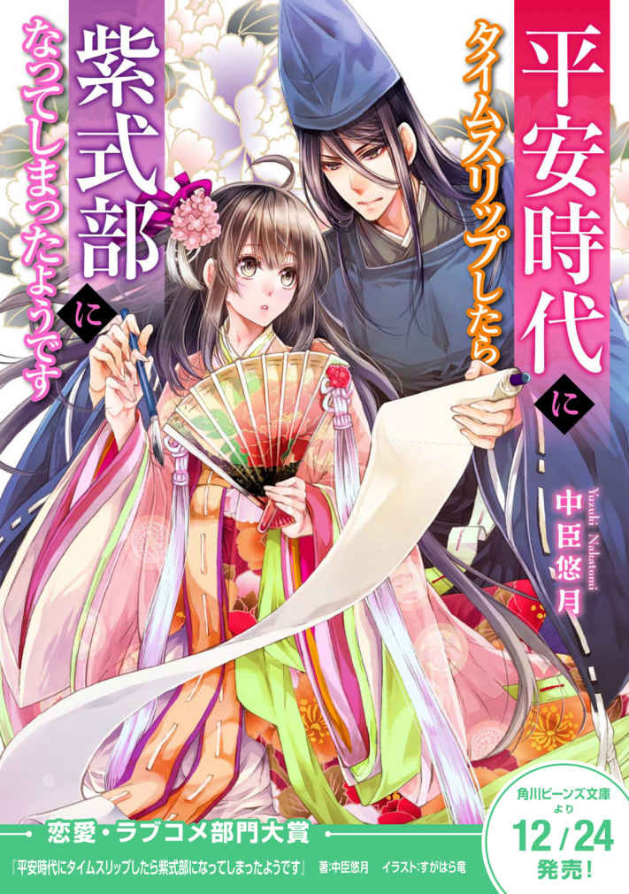
序章
私がモテるなんて、天地がひっくり返ったってありえない！
17 年間そう思って生きてきたのに、いま私の目の前で繰り広げられているこの逆ハーレムな状態。これをいったい、なんと説明すればよいのだろうか。
私から見て一番左側に座っている男性が、
「御 簾 越しでもよくわかる、透き通った玉のような白い肌。その白魚のような美しい御手を思い切り握りしめてみたいものよ」
と言いながら、御簾の下からおのれの手をそっとこちらに伸ばしてくる。ちなみに、この男性は旧知の仲などではなく、最近、顔を見るようになったなぁ、という程度の関係性でしかない。
そして、お褒めの言葉を頂戴している白い肌にしても、別に、常日頃から美容を気にしていたわけではなく、帰宅部でオタクで、家に引き籠もってゲームやマンガの世界を楽しんでいた結果、日焼けしていないというだけのこと。
そんなことを考えていると、先ほどの男性のすぐ右横にいる男性が、自分の扇で隣の男性の伸ばした手をピシャリと叩く。隣の男への牽制なのだろうか。
「その玉の肌が映えるのも、式部殿の見事な黒髪があってこそ。艶やかな髪にいつか触れてみたいと思うものよ」
今度の男も歯の浮くような台詞を囁いてくる。
この髪も、特に意識して伸ばしたわけではない。オタクのコミュ障にとって、美容院は鬼門である。そこは、イケメン美容師がペラペラと話しかけてくる恐怖のスポットなのだ。つまり、いまの状況も私にとっては苦痛なのだが、もちろん面と向かって言うことはできない。
これが、ゲームの世界なら、選択肢を選んでボタンを押すだけだから簡単なのに。
「どうやらお二方は、式部殿の外側しか評価しておられぬようだ」
今まで黙っていた一番右側に座っていた男が口を開く。
「式部殿のことを褒めるのであれば、やはり彼女のその才知をこそ褒めるべきではなかろうか。先日、中宮様に献上されたという、あの『源氏の君の物語』のなんと素晴らしかったことよ。物語なぞ、女子どもの読むものよと侮っていたかつての私をなじってやりたい、もっと早く読むのだったといまの私は激しく後悔しているのです。なにしろ、お主 上 まで、『この者は〝日 本 紀 〟をよく呼んでいるようだ』と、その知識に感嘆され、お褒めになられたそうではないですか」
あああ、とうとうその話ですか！
そもそも私は『源氏物語』について、ざっくりとした知識しか持ち合わせていなかった。単に、〝跳ばされて〟しまったこの世界で、私を救ってくれた恩人が困っていたから、少しでも力になれればと思って同人ノリで自分の好きな妄想を垂れ流したものが文章になっただけなんですってば！
そんな真実を暴露してしまいたい衝動に駆られるが、もちろんその恩人のことを考えると、ここは静かに黙って微笑んでおくしかないのだ。
なにしろ突然、右も左もわからない平安時代に〝跳ばされて〟しまった私。ふつうだったら野垂れ死んでいてもおかしくない状況で助けてくれた人たちがいたら、彼らのためになんだってしたくなるじゃない？
それがまさかこんな大事に発展するだなんて......。
第１話 タイムスリップしたみたいなんだけどどこの時代なのかさっぱりわからない件
そもそも、なんで現代人の私が平安時代で貴族の生活をすることになったかというところから説明しようと思う。事件が起きたのは、高校の修学旅行の四日目。奈良・京都を四泊五日で巡るという旅程の最後のお楽しみともいえる、京都での自由行動の日だった。
「京都ってレイヤーの心をくすぐる街だよね～」
私は友達の奈々美と一緒に、朝から花魁になったり、舞妓になったり、心ゆくまでコスプレを楽しみ、スタジオで写真をたくさん撮ってもらった。京都には、着物をレンタルするだけではなく、舞妓や芸妓、花魁の衣装を着付けて、いかにもな背景を設えたスタジオで写真を撮ってくれるお店がたくさんある。
そして、最後のしめは一番のお楽しみ、十二単の着付け。これは、着付け体験できるところが少なく、高価なところが多いせいか、まだあまりメジャーではない。
しかし、京都といえば、やはり平安で雅なロマンを楽しみたいというもの。これだけは絶対にはずせないだろうということで、奈々美と相談して予約しておいたのだ。
「十二単というのは通称で、女房装束、裳 唐 衣 などが正式な名称なんですよ」
と、着付けをしながら説明をしてくれる着装師さんも、ベテランのオーラが漂っている。
白の小袖に濃い小豆色の長袴。これだけでも、外に出て行けそうな着物に思えるけれど、実はこれ、まだ下着の段階なのだそうだ。
「この上に、単 、五 衣 と重ねていきますよ」
ただ重ねるだけではなく、一枚羽織っては胸のところを紐で固く結び、次の一枚を羽織ったら下の紐はほどいてしまう。それの繰り返しだ。五衣の時点で、もう七枚の重ね着になっていて、かなりの重量にクラクラしてくる。
「五衣が五枚と決められたのは12 世紀頃のことで、その前はもっと重ねて着てはったそうですよ。十数枚重ねた方もいはったとか」
「そんなに着たら歩けないよね」
「無理、無理」
私たちは笑った。
そして、五衣の上には、さらに打 衣 、表 着 、唐 衣 、裳 と重ねていく。鬘 の重さも加わると、人一人......いや、二人ぐらい背負って立っているようで、足下がおぼつかない。
「さあ、できあがりですよ。お二人とも、綺麗にならはって。写真撮りますからね。足下にお気を付けて、ゆっくりとこちらに歩いて来てくださいね」
ああ、これはすり足にならざるを得ないなと思いながら、一歩一歩ゆっくりと前に進む。
「そこ、スタジオ入るのに段差がありますから、お足下お気をつけて」
「はい！」
と声だけは元気よく答えたものの、帰宅部の私の体力は既に限界点を超えていた。
つま先だけほんの少し上げることができる状態。段差を乗り越えることはできず、私はものの見事に段を踏み外してしまった。さらに、腰に付けられた裳や鬘がどうにも重くて、脳貧血を起こしたときのように、身体が後ろに後ろにと引っ張られて行く。
「香 子 っ！」
奈々美の悲鳴がなんだかすごく遠くに聞こえた。
そして。私はそのまま、どんどんと落ちて行く。
あれ、どうして床に身体がつかないの？ 私が踏み外したのは昇り階段の一段目だったはず。なのに、どうして私の背中は、いつまで経っても床に届かないのか？
いつの間にか、右も左も上も下もわからない、真っ暗闇の中に私はいた。暗闇の中を、下に下に落ちていくのだ。いや、上も下もわからないのだから、落ちて行くというのも間違った感覚かもしれない。
もしかして、私は階段を踏み外して死んでしまったんじゃないだろうか。これは、あの世へのトンネルなのかもしれないとも思う。
そして、どれぐらい時間が経ったのだろう。五分かもしれないし、一時間かもしれない。
突然、私の背中に地面の感触が確かに感じられた。地面......そう、建物の中ではない、かといって舗装されたアスファルトでもない、砂か砂利のようなところに私は横たわっている。
天空には夜空が広がっていた。夜空、ということは、やはり相当の時間が経過してしまったのだと私は悟った。きっと、途中で気でも失っていたのだろう。階段を踏み外したのは、確かまだ夕方だった。
しかし、何かがおかしい。昨日の夜も京都に止まったけれど、こんなにたくさん星が見えていただろうか。まるで天の川が全天に広がったかのような星空。相当な田舎にでも行かないと見られないであろう星空が上空に広がっている。
首をひねって、辺りを見回してみるが、大きなお寺の塀のようなものが左右に広がっているし、そんな田舎にいるとは思えないのだけれど。階段を落ちただけで、京都から田舎に移動するなんてありえない。だから、星空のことはきっと私の勘違いなのだろう。確かにものすごく落下したような覚えはあるが、どんなに落ちても地球の裏側に行くことはないのだから。だいたい、地球の裏側だとしたらここはブラジルだ。
とにかく、起き上がってここがどこなのかを確かめて、道を聞いてホテルに帰らないと。
携帯は十二単に着替えるときに、バッグの中にしまったままだから、ＧＰＳ機能は使えない。メールで連絡もできない。
私の腹筋力では、十二単を着たまま仰向けの姿勢から起き上がるのは難しかったので、寝返りをうつようにして横向きになり、腕の力を使って少しずつ身体を起こすことにした。
しかし、暗い。東京に比べて、なんて暗い街なのだろう。街灯のひとつも見当たらないし、車のヘッドライトも何も見えない。
本当にド田舎にテレポートしてしまったんではなかろうかと不安になってきた頃、遠くから牛の鳴き声が聞こえた。目をこらすと牛と、その横には松明らしきものを持った男性二人が歩いているのが見える。
ああ、ド田舎決定か。自動車ではない、牛に車を引かせて移動手段としているとは......。
しかし、落ち込む前にまずここがどこなのかを確かめなければならない。と言っても、見知らぬ男性にこちらから声をかけて尋ねるのも気が引ける。
私は半身を起こした状態で、数十メートル先からやって来る人たちに視線を向けた。
──できれば私の存在に気付いて......。
そんな私のテレパシーが通じたのか、牛と人の隊列がゆっくりと止まる。二人で何か相談をした後、一人が後ろに走っていくのが見えた。
まさか......こんな道に横たわっているなんて不審者扱いされて、通報でもされるのだろうか。
ようやく暗闇に慣れてきた目で、その男の周囲を見ると、牛の後ろには御神輿のように豪華な箱のようなものが繫がれている。荷車にしては豪華過ぎる。まさか、これは平安時代もののマンガやアニメでよく見る〝牛 車 〟ではないだろうか......。そういえば、松明を持った男の着ている服も、まるで昔の人の服装だ。神社で働いている人なのかと思っていたけれど、さすがに松明というのはおかしい気もする。
でも......まさか、本当にタイムスリップしてしまった......なんてこと、ないよね？
現実にそんなことが起きるだなんて......。などと考えているうちに、先ほどの後ろに移動した男が、今度は私の方に走って来る。
そして、私の近くまで来ると急に跪いて、その姿勢のまま
「姫君」
と、言った。
──は、はあ!? 姫君？ いったい......誰のこと？
周りを見回す。私の他には、その男しかいない。
「大変失礼ですが、我が主 が姫様をお宅までお送りしましょうかと申しております」
相変わらず平伏した状態なので、目線の先はわからないけれど、まさか私のことを姫君と呼んだのだろうか。
「どういうご事情かは存じませんが、その見事な唐衣から察するに、やんごとないご身分の姫かと存じ上げます。ご無礼ではございますが、お力になれればと主は申しておりますが」
私はいまだ重くて立ち上がれないまま、あらためて自分の着ているものを見下ろした。
確かにレンタルではあるけれど、絹のとても素材のいい織物を使っていると説明はされた。しかし、それだけで〝姫君〟なんて呼ばれるのだろうか？
否、現代ではそんなことはありえない。現代の日本には姫君なんていないのだから。
だとしたら、本当にタイムスリップ？
これまで、極力、話をすることは避けて来たリアルな男性。でも、〝ここ〟がいったいどこなのか、苦手な男性であろうとも、質問しなければならない。
「あ、あの、いまは......えっと......その何年ですか？」
男は、私の突拍子もない質問にあまりに驚いたのか、あるいは私のオドオドした挙動不審な態度に驚いたのか。平伏していた頭を上げて、目を丸くしながら答えた。
「え......、長 保 四年にございますが、それが何か......？」
チョウホウ四年？ 聞いたことがない。
耳慣れない元号を口にするのは、平安時代のような装束を着た人......って、私、本当にタイムスリップしてしまったの!? ちょ、ちょっと、ちょっと......待って！
だとしたら、私はいったいどうやって元いた世界に帰ればいいの!?
動揺を隠しきれない声で、私は再び問う。
「あの......その、それは西暦で言うと何年......なんでしょう？」
「セイレキ......？ とは、星の暦か何かでございましょうか。私どもにはわかりかねますが、後で主に陰陽師を呼ばせますか？」
──ありえない、ありえない！
いや、確かに乙女ゲーやマンガでは定番の展開ですよ。タイムスリップ。
しかし、そんなことがまさか私の身に起こるなんて。信じられない。
そして、目の前の人物の言っていることが真実であり、タイムスリップしたと仮定して、そこがいったいいつの時代かがわからないなんて！
タイムスリップした主人公たちは、どうしてみんなタイムスリップした先がどこで何時代だってすぐに把握できていたのだろう。私の脳内ボキャブラリーには、「チョウホウ」なんて存在しないのだ。
どうしよう、どうしよう。いや、そもそもいつかわからないことがどうしようなのではなくて、本当にタイムスリップしてしまったんだとしたら......？
「......わからない......どうしよう......」
私は、ブツブツと口の中で呟く。
「姫様？」
「あの......えと、お、送ってもらいたいです。で、でも、帰り方がわからない......んです!! 」
第２話 攻略対象一人目と出会ったようです
もし、これがゲームの世界だったなら、こちら側に私を召喚した人がいて、この世界についての仕組みやらしきたりやらを私に丁寧に指南してくれたり、この先の歴史が書いてある便利な本が手元にあったりするのかもしれない。
しかし、いまの私が持っているアドバンテージといえば、着ている装束が高級なためどこぞの姫君に間違われているという、ただこの一点だけだ。たまたま、良心的な人に巡り会ったから、「送りましょう」と言ってくれているが、最初に出会ったのが盗賊なんかだったりしたら、「ぐふふ、この衣は高く売れそうだぜ。女の方も変態貴族に売っぱらっちまえ」というような展開になって、私の命はもうなかったかもしれない。
もし、本当にタイムスリップしてしまったのなら......。
私が選ぶことのできる道はただひとつ。
姫君のふりをして、手を差し伸べてくれている善良な人に助けてもらうしかないのだ。
先ほどの私の「帰り方がわからない」という言葉を聞いて、明らかにおろおろしはじめた男性に不審がられてこのまま逃げられたりしたら、即バッドエンドが待っている気がする。
タイムスリップという異常事態にバクバクする心臓。
パニックのあまり変なことを口走らないよう、
「ここはゲームの中、選択肢を間違うと即バッドエンドよ、クイックセーブもしていないの」
と、自分に暗示をかけるように言い聞かせて、慎重に選択肢を選ぶ。
といっても、その選択肢も私自身が作ったものなのだが。
１．私は未来からタイムスリップして来てしまったみたいなんです。助けてください。どうやったら未来に帰れますか？
２．ここは映画村ですか？ カメラはどこ？ 私は、修学旅行で京都に来ているので、ホテルまで送ってください。
３．ここまでどうやって来たものか、記憶が定かではないのです。帰るべき家すら、思い出せないで困っています。
ここは、３。３が安 牌 。というか、絶対に３しかあり得ない。
記憶を失った姫君の演技をするしかないのではないか。
しかし、そう決めてもやはり口ごもってしまうのは、三次元に生きる男性とコミュニケーションした経験がほぼゼロに等しいためである。
「あ、あの......取り乱して......申し訳ありませんでした。わ、私、ここまでどうやって来たものか、まったくわからないんです。ええと......、帰るべき家すら思い出せなくて......」
と、泣き真似をする。ああ、この選択肢が間違っていませんように。面倒くさい女だと思われて、ここに放り出して逃げられませんように、と願いながら。
「私の一存では決められませんので、主 に伺ってまいります」
男は一礼すると、再び車の方へと走って行った。ああ、主が「そんな面倒な女は放っておけ」なんていう鬼畜設定のキャラではありませんように。待っている間は、不安でとても長く感じられたけれど、実はたいした時間ではなかったのかもしれない。先ほどの男は、主らしき男と連れだって私のもとに戻って来てくれた。よかった、バッドエンド回避のようだ。
「主」と呼ばれていた男は、先ほどの男よりも高級そうな薄青い織り地の装束に、黒い冠をかぶっていた。冠の下の顔は、暗くてあまり見えないけれど目は一重で全体的にあっさりとした顔立ちで、こういうのが公家顔なのかなぁ、なんて思う。年の頃は、私と同じぐらいだろうか。
そして、手に持っていた自身の扇を、私の方に広げながら差し出してにっこりと微笑んだ。
突然差し出された扇に戸惑い、私の動悸はさらに速まる。
これはいったいどういう意味だろうと、私が無言のまま、手も伸ばさずにいると、
「姫君、この扇を使ってください」
と「主」らしき青年は涼やかな声で囁き、また爽やかな笑みを浮かべる。
一瞬、ボーッとして頭が真っ白になった後。
──そういえば、もしここが本当に平安時代なのだとしたら......。この時代の姫君は扇で顔を隠すんだったっけ......。
と、かつて読んだマンガの絵面を思い出す。私は扇を受け取り自らの顔の前に広げた。
さらに、「主」なる青年は、衣装の重さで立ち上がれないでいる私の苦労を察したのか、
「姫君、もしよかったら私のこの手に摑まってください」
と、手まで差し出してくれるではないか。なんともスマートな仕草。さすが貴族......たぶん、だけど。ああ、確実にバッドエンド回避。
この男性が、どんな家柄の貴族で、どういった性格なのか、まだまだまったくわからないけれど......とりあえず攻略対象一人目との出会いはクリアということでいいんだよね？
そんなふうに頭では乙女ゲームとして処理しようとするけれど、実際に差し出された男性の手を握るのはためらわれる。これまで、父親以外の男性の手に触れたことなどないのだから。
「大丈夫でしょうか？ 具合でも悪いのですか？」
私の様子を不審に思ったのか、そう問いかけてくる青年に怪しい者だと思われないように、「ええい、ままよ！」と私は震えながら手を伸ばす。
タイムスリップ、そして若い男性と手を繫ぐという、私にとってはあり得ない出来事の連続に卒倒しかけながら、重い装束を引きずりつつ、車までなんとか歩いて行ったのだった。
第３話 私は世界を救わなくていいのでしょうか？
私はおそらくものすごくいい人に拾ってもらったのだろう。車に同乗させてくれた青年は、
「私は大学寮に通う文 章 生 です。家族に私よりも才がある者がいるので、拙宅までいらっしゃいませんか。その者でしたら、姫君が記憶を思い出すためにどうするべきか、家族を見つけるにはどうすべきか、私より良い知恵を出してくれると思うのです。姫君にはあばら屋に見えるかもしれませんが、住まいは鴨川のほとり、東京極大路沿いにあります」
と言う。ところどころわからない単語は含まれていたけれど、おそらく大学生で鴨川の近くの家に来ませんか、と言っているのだろう。
もちろん、現代でこのような誘い文句を言われたら、何をされるかわからないと思い、首を横に振り全速力で走って逃げるはずだ。私にもそれぐらいの分別はある。だが、いま。平安時代と思われるこの場所では、本当に誰一人として頼るものがない身なのである。
そう、たとえ、この好青年が貴族のふりをした盗賊だったとしても。
ついて行かずにこのまま夜の道にぼうっとしゃがみこんでいたなら、きっとまた別の夜盗に拐 かされるだけだろう。いや、いきなり後ろからバサーッと刀で斬られ、殺されてしまうかもしれない。
とにかく、この人について行かなければ、このゲームが詰んでしまうであろうことは明らかだ。私は、ただただ首を縦に振った。
しばらくして、牛車の動きが止まる。おそらく青年の邸に着いたのだろう。彼の邸は、昨日の班行動で観光に行った京都御所のような造りで、いくつかの建物が廊下で繫がっているようだ。大きさだけで言えば、かなりの豪邸である。
しかし、松明の灯りにほのかに照らされた邸を、目をこらして見ると、ところどころ塀の一部が崩れていたり、庭には雑草のようにしか見えない草が腰辺りまで生い茂っていたりする。
「あばら屋」と言ったのは、謙遜ではなかったらしい。
家の中に入ると、現代のような明るい照明器具は当然ひとつもなく、先導してくれる女性の持つ小さな灯りだけが頼りである。その女性が手にしているのは、油の入った小皿のようなもので、そこに浸された芯に火が点されている。さらには、
「そこ、床板が腐っているんで、左に寄ってください」
などと、先ほどの青年による恐ろしげな道案内が後ろから聞こえて来る。
どこからか、雅やかな琴の音など聞こえては来るのだが、もしや妖怪などが宴を開いているのではないかとビクビクしてしまう。
そして、この着慣れない長袴とかいうボトム。これがまた、ズルズルと後ろに長く布が引きずれて、余った布を踏んでしまいつんのめりそうなのだ。長く暗い廊下を歩き続け、「才がある」という家族の部屋にたどり着いたときには、私はもうヘロヘロな状態になっていた。
「失礼します。実はこちらの姫君が、夜盗に襲われたのか物の怪に拐かされたものか、一条辺りの道に倒れていたところに出くわしまして、我が家にお連れしたのです。送って差し上げたかったのですが、どうやら記憶を失ってしまった様子。どこの姫君かわからなかったもので......知恵を拝借したいとこちらに参りました」
「わかった。それは大変なことであったな。姫君にそんな簀 子 縁 に座っていただくのは失礼ではないか。中に入っていただきなさい。本来なら御簾越しに対面すべきだが、几 帳 を用意させよう。姫君、ご無礼ながら今日のところは几帳越しでもよろしいでしょうか？」
室内からは、落ち着いたトーンの理知的な声が聞こえてくる。指示もテキパキとしているところから考えるに、この方が才のある家族なのだろう。
「姫君、ではこちらの几帳の向こうに」
最初に拾ってくれた青年に言われるがまま、几帳とかいう布でできた衝立のようなものの向こうに座ろうとしながら、好奇心に耐えきれず扇の端から、チラリとその声の主を盗み見た。
話し方からは性別がわからなかったのだけれど、身につけているのは私の装束と同じようなもの。つまりは、青年の姉か妹といったところだろうか。
女性同士であれば、先ほどまでのように緊張しないで済む。
やっと親身に相談に乗ってくれそうな人に出会えたと思い、私は心底ホッとしたのだった。
「まずは、お座りなさい、姫君。ご身分のある女性が立っているなど、はしたないことですよ」
冷たくも聞こえる厳しい口調で、その女性は私に話しかけてくる。
「姫君にはさぞや驚かれたことでしょう。このようなあばら屋に招待されるなど。物の怪や狐狸の類にばかされたのではと、心配されたのでは？」
「あ、いえ......そんなことは」
初対面でも、女性というだけで先ほど青年と相対したときとは違って、ためらうことなく返答することができる。
「他にもご家族の方が？」
先ほどから聞こえていた琴の音に、いまは笛のような高い音もいくつか混ざっている。
「ああ、今宵は父が宴を催しているのです」
私の問いに、先ほどの女性の声が答える。
──宴って、パーティーのこと？ それを主催できるだなんて......家は荒れ果てた様子だけど、実は結構なお金持ちなんじゃないの？ 庶民の私たちと感覚が違うだけなんでは......？
そんな私の考えを読んだかのように、
「宴と言っても、少しでも良い仕官先を探すための接待なのです。父はいま、官職についておりませんので」
と、女性は私の疑問に答えてくれた。
しかし続く解説は、私には意味不明である。
「弟が文章生であることからもおわかりのように我が家は、漢籍を得意とする家で」
「かんせき......？」
「しかし、学問で出世できる世はいまとなっては昔のこと。菅 公 ......菅原道真公の時代とは違い、大臣になれる家柄は最初から決まっている。漢語が話せたところで、遣唐使が廃止されたいまの世では、大陸に行くことも叶わず鴻 臚 館 で通詞をするぐらいしか使い道がない。だから父も、あのように媚びを売るしかないというわけです」
──...... あ！ 菅原道真に遣唐使！
几帳越しに話す女性の言葉は私には相変わらず意味不明の単語の連発だったけれど、今度は私にも聞いたことのある固有名詞が含まれていた。歴史の授業で聞いたことのある名前だ。
菅原道真も遣唐使も、平安時代の歴史として教科書に載っていたはず。
ということは、平安時代でもいまは菅原道真が生きていた頃よりも後の時代ということか。
「姫君のことは、本来なら家の主である父にまず紹介すべきでしたが、宴席中ということもあり、まずはこちらに。父には明日私から了承を取っておきますが......」
今度は、先ほどの好青年の声が聞こえて来る。
「え......あ......」
突然の男性の声に、再び私は口ごもり、扇を更に顔に寄せた。
──あ、この扇って、便利かもしれない。現代にもあれば、直接男の人の顔を見ずにお話しできるのにな、なんて考えていると。
「やはり、記憶はなくされていても身分ある姫なんですね。ふだんの仕草は装束に勝るとも劣らない姫君のものだ」
と、私のオドオドとした挙動不審な仕草を、青年は都合よく誤解してくれたようだ。
「どうでしょう、姫君の記憶が戻るまでだけでも、我が家に滞在していただくというのは？」
「拙宅ではたいしたもてなしもできぬかと思うが、雨露ぐらいはしのげようというもの」
青年の提案に先ほどの女性も同意してくれた様子である。なんとか、今夜の宿泊先は確保できたようだ。
「それに、やんごとない姫君なら、きっと多くの物語や絵巻を読んでいるのではと思います。例の物語の件、姫にもお手伝いしてもらったらどうでしょう？」
「何をいきなり。惟 規 、客人に対して失礼であろうが」
「しかし......物語作りの件は、我が家の浮沈がかかっている一大事ではないですか？」
どうやら、先ほど私を助けてくれた青年の名は惟規というらしい。ということは、名前で呼んだ女性の方が年上で姉だということか。
そして、私をよそに、姉弟で言い争いを始めたようだが、「我が家の浮沈がかかっている」ということは、先ほどの「父の仕官」とやらにも関わっていることなのだろうか？
そんな私の疑問に答えるように、青年、惟規さんとやらは口を開く。
「実は大臣 から、中 宮 様をお慰めする新しい物語を作るように、と言いつかっているんです。もちろん、中宮様がお喜びになる素晴らしい物語を献上できたら、父にいい仕官先を紹介してくださるというお約束で」
「しかし、つまらない物語を献上したが最期、父も惟規も一生仕官できないかもしれぬという賭けのような話ではないか」
「だから、この姫君が我が家にいる間、知恵を拝借したらどうです？ 中宮様と同じお年頃の姫なら、きっと中宮様が喜びそうな筋立てもわかるのではないかと」
「馬鹿を言うでない、惟規。それで我が家全員、路頭に迷う結果になったらどうするつもりだ。その姫に責を負わせるのか？」
「あくまでも、『どんな物語が好きですか？』という知恵をお借りするだけですよ。だって、大臣から言われた期限は間近だと言うのに、いまのところまったく進んでいないのでしょう？ そもそも提出できなかったら、我が家全員路頭に迷います。昨日だって、下女二人に暇を出したばかりでしょう。そのうち、貧窮した我が家には仕える女房すら一人もいなくなってしまいますよ」
「そうは言っても......」
私を置いてきぼりにして、姉弟の口論が続いているようだが、要するに「身分の高い姫君が好みそうなジャンルやあらすじ、萌えどころをリサーチしろ」と、惟規さんとやらは主張しているのだろうか？
私は扇の影でそっと溜息を吐いた。
私は、惟規さんたちが誤解しているような深窓の姫君ではない。未来から来た私と平安時代のお姫様の萌えポイントが合致するはずないではないか......。
タイムスリップをしたら、「この世界を救いなさい」なんて言われて、いきなり物の怪を退治したり、戦の場に駆り出されるものかと思っていた。そして、そういったミッションをクリアしていくうちに現代に帰る鍵が見つかるのが、タイムスリップもののフィクションの定石だ。
しかし、路上で拾ってくれた男性に連れられて来てみたものの、現代に帰るためのヒントなど与えてくれそうもない。
これが現実というものか......。
そう思うと同時に、私はいったい元の世界に帰ることができるのだろうか？ という不安が心の中でどんどんと大きくなっていった。
第４話 自己紹介したらブチ切れられたんだけど何が間違っているのか教えてほしい
修学旅行先のホテルのベッドってこんなに硬かったっけ？
なんだか、背中が痛い。そして、すごく寒い。そう思いながら、ぼんやりと目を開く。私の周囲にはリゾートホテルにあるような、でも和風テイストの豪華な天蓋が設えてある。これならベッドもフカフカで当たり前なのに、身体がミシミシと悲鳴を上げているのはなぜだろう。
その疑問に答えるかのように、天蓋の外から女性の声が聞こえてくる。
「姫様、お目覚めになられましたか？ 角 盥 を置いておきますので、どうぞ手や口をおすすぎくださいませ」
私はまだはっきりしない頭で、昨日からの一連の出来事を思い出した。
タイムスリップが夢オチ......ということはなかったようだ。そして、残念ながら目覚めたら現代に戻っている、ということもなかったらしい。
いまも私は、おそらく平安時代の貴族の邸の中にいる。
周囲に人はいる。邸の中に住んでいるのは、使用人もいるわけだし、あの姉弟と父親だけではないだろう。しかし、私は一人だ。この時代に、たった一人。取り残された現代人だ。
一夜明けてみて、この重い現実があらためてのしかかってくる。
さて、どのようにして私は元いた時代に帰ったらいいのだろうか。
気持ちを切り替えるように半身を起こし、自分がどんなところに寝ていたのかを朝の光の中であらためて見る。そして、これは身体が痛くなっても仕方がないなと納得した。
私が寝ていたところには畳の上にシーツらしき布が一枚敷かれているだけ。枕も小さくて硬い。どうりで首も寝違えたように痛いはずだ。でも天蓋の外は、全面フローリング、板張りの床だから、きっと畳は高価なもので、これがベッド代わりなんだろう。まあ、現代でも畳ベッドなんてものが商品化されているぐらいだから、実は健康にいいのかもしれない。
ただ、その豪華に見える天蓋も、よく見るとあちこち穴が開いていたり、破れてしまったところを補修したような痕跡が見える。朝の明るい光の中で見てみると、昨日、惟規さんとやらが言っていた「あばら屋」というのがけして謙遜ではなかったのがよくわかる。
しかし、何より驚いたのは、掛け布団らしきものがないことだ。私が布団代わりにしていたのは、どう見ても十二単の一部、着物にしか見えない。友達の家にみんなでお泊まりして、おしゃべりしているうちにうたた寝してしまい雑魚寝になったとしても、もう少しいいものを掛けてもらえるのではないだろうか。これでは寒いはずだと納得する。
天蓋の布をめくって寝台の外に出ると、水の張られた洗面器ぐらいの大きさの容器が置かれていた。「手や口をすすいでください」と先ほどの女性が言っていたけれど、その容器は我が家だったら正月に雑煮を食べるときにしか使わないような黒い漆器で、雅やかな金の模様まで外側に施してある。ところどころ模様が禿げているところがあるのは、破れた跡のある天蓋の布や腐った床板と同じ事情によるものだろう。昨夜、姉弟が話していた、路頭に迷う云々の話はけして誇張ではないようだ。
そんな困窮した家に残る、博物館に飾ってありそうなこの器を、洗面器として使ってよいものだろうかと正直迷う。売ればいくらか生活の足しにはなるのではないか、といらぬ心配が頭をよぎった。とはいえ、昨夜は転んでしまったような気もするし、正直汚れは落としたいので、好意に甘えて手や顔を洗うのに使わせてもらった。
洗顔が終わった頃を見計らったかのように、先ほどの侍女らしき人が再び部屋に入って来る。年の頃は母と同じくらいだろうか。その長い黒髪にところどころ白いものが交じっている。
「讃岐、こちらを下げなさい」
今度は先ほどはいなかった若い侍女を伴っていて、テキパキと指示を与えている。そして、讃岐と呼ばれた侍女が戻って来たところで、二人で当然のように昨日の装束を着付けてくれた。どこかの姫君と間違われていて本当によかった、と思う。これをもう一度自分で着なさいと言われても絶対に無理だ。振り袖だって一人では着られないんだから。
「あの、昨日私を助けてくださったご家族の方々にあらためてお礼を申し上げたいのですが」
「文章生様はもう大学寮にお出かけになられました。一の姫様は......、ええと、そうですね......ちょっと本日はご都合がお悪いかと......ああ、その前に......姫様、化粧はどうなさいますか？」
と、言って微笑む年かさの侍女の歯は真っ黒だった。
これが、お歯黒というものか。なぜ、昔の人たちはこれを美しいと思ったのだろう。寝台以上に感覚がずれまくっていると思う。
「大人の女性でしたら、まず朝の支度は化粧から始めるべきかと思いますよ」
と、真っ白い白粉のついた筆を手にして、やる気満々のように見える。
「私はまだ子どもなのでこのままでいいです」
と言って、丁重にお断りした。
「子どもだなんて。もう裳 着 はとうに終えているでしょうに......」
クスリと笑う若い侍女を
「こら、讃岐。失礼でしょう。それよりも朝食の膳を持っていらっしゃい」
と、年かさの侍女がたしなめる。
讃岐と呼ばれた侍女は、不満げな表情を浮かべたものの、スルリと廊下へと出て行った。
一の姫というのが、昨夜会った女性のことだろう。今日は挨拶できないようなので、朝食を済ませた私は、昨日の青年、惟規さんが帰宅するまでの間、手持ち無沙汰になってしまった。
仕方なく、何をすることもなくぼうっと庭を眺める。
昨夜も手入れが行き届いていないようだと感じたけれど、日の光に照らされた庭の荒れようはものすごい。大量の藻が群生した池にかかる橋は、中央の辺りの板が朽ち果てていて、橋の意味をなしていない。きっと元々は朱色に塗られた太鼓橋だったのではないか。ところどころに、塗装の色が残っていた。
池の向こうには、塀の破れ目が見える。このように塀がところどころ破れているのは、現代より治安の悪そうなこの時代、セキュリティ上どうなのだろう......と考えていると、その塀の穴から三毛猫が「にゃーん」と一声鳴きながら入って来た。そのまま、廊下に上がり込み、勝手知ったる我が別宅といった風情で丸まって寝てしまった。
私は周囲を見回し、廊下や庭に誰もいないことを確認してから、御簾の外へと出た。あまりにも暇を持てあましていたので、猫と遊ぼうと思ったのだ。そっと忍び寄ったつもりだが、衣擦れの音が大きかったのだろうか。
また一声、「にゃーん」と鳴いて、猫は廊下を走って逃げてしまう。私は猫の後ろ姿を追った。ただでさえ運動不足だというのに、衣装の重量が邪魔をしてちょっと走っただけなのに息が切れる。しかし、ここまで追いかけて来て途中で諦めるというのも癪なので、私は猫の後を追い続けた。
猫は、渡り廊下で繫がった別の棟へと移動し、さらに破れた御簾をくぐって部屋の中へと逃げ込んでしまう。
「待って！」
私は猫を追って、御簾を捲り上げた。
途端に、部屋の奥から厳しい声が上がる。怒鳴るというわけではなく、ただ静かに冷たく責めるような声だ。
「他人の部屋に黙って上がり込むなど無礼ではないか」
──まさか、人が住んでいた部屋だなんて！ 御簾に猫が通れるほどの穴が開いていたものだから、てっきり無人の部屋だと思って入り込んでしまったけど......この声は昨日の......姉君？
「も、申し訳ありません......ね、猫を追いかけていたら間違えて......」
急ぎ平伏して謝る私に、再び叱責の声。
「猫を追いかけるだなんて、とんだお転婆な姫君だな」
「も、申し訳......」
額を擦りつけるように謝りつつも、昨日の女性と声は同じだが話し方が微妙に違うような気がして、そっと目だけで部屋の奥を探る。
「え、え、ええっっっっ!! 」
室内の暗さにも目が慣れ、その声の主の姿を捉えることに成功した私は、思わず大声というか奇声を発してしまった。
「静かに」
そう咎める声は確かに昨日の「姉君」である。
しかし、どう見てもその姿は男性にしか見えない。今日は十二単姿ではなく、昨日、惟規と呼ばれていた男性と同じような装束を着ている。髪も、おそらく結っているのだろう。縦に長い、黒い帽子の下にまとめられているようだ。
「あ、えと、あの......」
顔立ちは、惟規と呼ばれていた青年と何となく似ている。しかし、目元はもう少し涼やかで、背も少し高いようだ。突然の侵入者である私に対する怒りのせいだろう、眉間に皺が寄っている。そのため、終始朗らかな惟規さんとは異なる印象を与えているのかもしれない。年齢も、惟規さんは私と同じぐらいに感じたけれど、二十代の半ばといった感じに見える。
もう一人、兄弟がいたのだろうか。
たとえば、昨日の女性は双子だったとでも言うのだろうか。
そんなふうに問いかけてみたいのだけれど、ただでさえ男性と話すのが苦手な上、相手はイケメンである。現代なら歌舞伎役者にいそうな、切れ長の瞳が印象的な細面のイケメンだ。特にかっこいいわけでもないクラスの男子や男性教師相手ですら口ごもってしまうこの私。どう対応したらいいと言うのだろう。
「あ、あ、あの......昨日の......お姉さんですか？」
何をとち狂ったのか......「昨日のお姉さんの双子の弟さんですか」と問おうとした私は緊張のあまり、後半部分をすっ飛ばして質問してしまった。
しばらく、無言が続く。部屋の中に流れる空気は重く冷たい。
まさかとは思ったが、先ほどの男性から返答がないということが答えなのだろうかと思い、
「し、失礼しました......」
と、部屋を後にしようとしたとき、
「待て」
と、私を制止する声がした。声を荒らげたわけではない。しかし、ブリザードのような冷たい声に、思わずビクリと足を止める。
背後で、「はあっ」と溜息が聞こえた。
「この姿のことは、誰にも言わぬと約束して欲しい」
「否」と答えることを拒否する口調。
「おまえは記憶を失っているのだったな。もしかすると、おまえのことを探している家族や乳母、女房たちがいるかもしれぬ。そして、彼らが我が家にたどり着いておまえを見つけ出す可能性もないとは言えぬな」
昨夜とは打って変わった低い声でそう言いながら、私に向かってジリジリと迫って来る。背後は簀子縁へと繫がる御簾。しかし、「待て」と言われているので、そこから出て行くことも叶わない。私は、後ろは御簾、右側には襖 という状況に追い込まれてしまった。
それでも構わず近付いて来る男性は、私が逃げられないようにか御簾と私の間に腕を入れ、そのまま手のひらを襖に押し付ける。さらに、左手も襖に押し付けたことで、私はその男性の両腕の間に挟まれ、完全に身動きできなくなった。
壁ドンならぬ襖ドンである。
「家族がおまえを家に連れ帰ろうとしても、これではおまえを帰すことができなくなった」
「......い、言いません......だ、誰にも......か、家族だろうと誰にも......」
私は、頭をぶんぶん振り回して、絶対に言わないということを必死にアピールした。
私の答えを聞くと、ようやく両腕を襖から離し解放はしてくれたが、念を押すようにさらに問いかけてくる。
「実は俺が男だということは、黙っていてくれぬか。これは漏らせぬ秘密なのだ」
「で、でも......、そ、それは、どういう......」
ということは、やはり昨日の女性と目の前の男性とは同一人物だということなのだろうか。
「ああ、昨夜なぜ女性の格好をしていたかということか。俺も、惟規と同じく大学寮に籍はあったのだ。だが、俺は弟と違って小さい頃からもともと漢籍が得意でな。大学寮で学ぶことなど既に知っていることばかりだったのだ。それなら、家に籠もって一人で漢籍を読んでいた方がよほど勉学になる。そう思って日がな一日、家から一歩も出ずに、好きな漢籍を読みふけり、漢詩を作り......そんな日々を続けているうちに、世間は俺のことを『実は女性なのではないか』と噂するようになってしまったのだ」
「そ、それで......女装まで......？」
振り絞るように出した私の声を、惟規さんの兄君？ ......の声が遮る。
「別に俺も、好きで女の格好をしているわけではない。俺には早くに亡くなってしまった姉がいた。ただ俺が大学寮に行かなかったせいで、亡くなったのは前 越 前 守 のご息女ではなくご長男だという噂が都に流れてしまったのだ。前越前守とは父のこと、長男とは俺だ。さらに、前越前守の娘御は漢籍が得意な才女らしいという噂が一人歩きしてしまった。最近では中宮様の家庭教師として出仕してほしいという話まで持ち上がっている。俺の才を見極めるためか、面白い物語を献上せよ、とも言われているのだ。今更、生き残っているのは男子の方です、だから物語など書けませんなどと口が裂けても言えるわけがない。そのため、昨日のように宴や来客のあるときは、女子のふりをして家に籠もっているというわけだ」
事情はようやく飲み込めた。
しかし、思わず知ってしまったこの秘密に対して、どのように応えるのが誠意ある対応だろうか。やはり、こちらからも丁寧に挨拶をすることが礼儀というものではなかろうか。
私は、兄君の前まで移動すると、姿勢を正し三つ指をついた。
もう何度目かわからないけれど、深くお辞儀をする。
「え、えと......お、お世話にな、なります、秘密はま、守ります......わ、私は......ふ、藤 原 ......香 子 と申します。よ、よろしく......」
深々と礼をしたまま挨拶をする。
そして、最後まで言い終わらないうちに、上から不機嫌そうな声が降ってきた。
「おい、何をしているのだ？ 俺に妻問いをせよと迫っているのか......？」
「ツ、ツマドイ......？」
言っている意味がわからない。
思わず顔を上げて、兄君の顔を覗き見ると、頰の辺りがなぜか朱に染まっている。
「記憶を失うとは、そのように常識までも忘れてしまうものなのか？ 名前を名乗って、顔を俺に見せるなど、俺の妻にせよと言っているも......同じではないか......」
なぜこの人はこのように動揺しているのだろう。
それに、いきなり妻とは。何と突拍子もないことを言い出すのだろうか。
「......じ、自己紹介しただけなんですけど。あ、あなたのことは、......何とお呼びしたら......？」
「それを答えたらおまえと夫婦 になる約束をするも同じではないか......、いきなり、何を言っているのだ？」
どうやら私は決定的な間違いを犯してしまったらしい。
「『万葉集』の冒頭にあるであろうが。有名な妻問いの歌が。
〝籠 もよ み籠 持ち 掘 串 もよ み掘 串 持ち この丘に 菜 摘 ます児 家聞かな 名 告 らさね そらみつ 大和 の国は おしなべて われこそ居 れ しきなべて われこそ座 せ われこそは 告 らめ 家をも名をも〟」
兄君は突如、『万葉集』の歌を暗唱しだしたようだけれど、なんだか呪文を唱えられているようで、意味なんてまったく頭に入ってはこない。
「わ、わかりません......」
「雄 略 天皇の御 製 だ。野にいる乙女に名前と家を聞いて、私のものにならないかと誘う有名な歌ではないか。そんなことすら忘れてしまったというのか？」
言いながら私のあまりのバカっぷりに呆れてしまったのか、その声音がさらに無愛想なものに変わっていく。
「和歌も万葉も知らぬでは、物語作りを手伝ってもらうことなどできぬな。昨日、惟規が言ったことは忘れてくれ。ああ、それと私のことは、式部とでも呼んでくれればよい。中宮の女房として出仕したらそう名乗るであろう呼び名だ。本当の名は教えられぬ」
冷たく言い放たれて、涙が滲むのを感じた。さらに追い打ちをかけるように、手にしていた扇で御簾の方を指す。
「一人で集中して物語の筋を考えたいから、もう出て行ってくれないか？」
「......わ、わかりました......失礼します......」
ああ、私はいきなり大失敗を犯してしまった。破れた御簾をくぐりながら、そっと手の甲で涙を拭う。罵られた哀しさよりも、自分に対する不甲斐なさが先に立つ。
しかし......、記憶喪失と説明したことが逆に幸いしたかもしれない。この時代で名前を呼び合うということは結婚の約束をすると同義のようだ。そして、そんな常識すらも忘れてしまった姫君には、物語作りの手伝いなどしてもらうことはできないと拒絶されてしまったのだろう。
思っていた以上に、現代と平安時代のルールやマナーは異なるようだ。
いつまでも「記憶をなくした姫君」で通用するとは思えない。このままの自分でいたら、先ほどのような失態を何度も繰り返すはめになってしまうのではないか。物語作りの手伝いどころではなく、「常識のない姫」としてこの邸からも追い出されてしまうかもしれない。
私がたった一人、誰の協力も得られずに現代に帰れる見込みはどれぐらいあるだろう。まだ、現代に帰るための何のヒントも摑んでいないのである。この邸に滞在し続け、元の世界に戻る協力を得るためには、早急にこの時代の姫なら知っている知識や常識を身につける必要がある。
そして、知識を身に付けたら「思い出したのだ」と言えばいい。まずは、この平安時代の常識をどこで手に入れるか、だ。
今さらながら、「イケメン」とときめいたとほぼ同時に蔑まれてしまったという、先ほどの大失態に胸が痛んだ。
第５話 そろそろ私の身に起きたことをありのまま語ろうと思う
その日の夕方。
私は、大学寮から帰って来た惟規さんの部屋を訪ねた。この時代の知識を身につけるためには、誰かに自分が遠い未来からやって来たことを明かさなければならない。侍女の二人に尋ねてみるという方法もあったが、彼女たちとはまだたいした会話を交わしてはいない。いきなり「タイムスリップしました」と相談するのは気が引けた。
この時代に来て、行き倒れていた私を見つけてくれたのは惟規さんである。その状況がわかっていて、しかも夜盗が姫の振りをして金持ち貴族を待ち伏せているとか、妖怪が化けているとか、そんな可能性があるにもかかわらず、心配して家まで連れて来てくれたのだ。そんな優しげでまっすぐな青年、惟規さんが相談相手として最適に思えた。
帰宅した惟規さんの部屋で、几帳を挟んで対面する。
「近江 から聞いたところによると、何か相談したいことがあるとか？ 姫のお邸に比べこのあばら屋ではいろいろとご不便もあるでしょう。遠慮なく相談してくださいね」
年かさの侍女、近江さんに言づてを頼んでおいたところ、多少の誤解はあるようだが、相談したいことがあるという事実は伝わっているようだ。しかし、何と切り出すべきだろうか。
「......姫？ 言いにくいことでも、私には何でも相談して欲しいんです。私は心から、姫の力になりたいと思っているんですよ」
私が言葉を探しているのを、言いあぐねていると取ったのか、几帳の向こうから明るく優しい声が響いた。
ああ、本当になんて良い方！
私は勇気を出して、頼み事を口にする。
「実は......この時代の......というか、貴族の教養を教えて欲しいのです」
「......それは、姫はご自身のことだけではなく、普段どのように暮らしていたかも忘れてしまった......と？」
「ええ......まあ......」
「ああ、何とおいたわしい！ 私にできることなら、何でも力になりましょう！」
あまりにもまっすぐな反応。私の良心がチクリと痛む。
几帳の、布と布の隙間からそっと覗き見ると、惟規さんの瞳には涙がにじんで見える。
この真っ正直な方には、すべてを話した上で相談に乗ってもらう方がよいのではないか？ たとえ信じてもらえなかったとしても。
私は再び、おずおずと口を開いた。
「実は......、忘れてしまったというか......私は、そもそもとても遠いところから来たのです」
「遠いとは......、天 竺 ですか？ あるいは渤 海 国 ？ それとも、もっと遠い国なのでしょうか？」
惟規さんは私が聞いたこともない国の名前を次々と挙げる。
「信じてはもらえないかもしれません......。ここが私の推測した時代で合っているのならば。おそらく、いまのこの時よりも千年ほど先の......、未来からやって来たようなのです」
「千年......未来......？」
そう言って、惟規さんはそのままの姿勢で口をポカンと開けて固まってしまった。幽霊か宇宙人を目にしたかのような驚き方だ。
いや、それも当たり前かもしれない。私自身も、タイムスリップなんてゲームやマンガというフィクションの中で起きる現象に過ぎないと思っていたし、それがまさか自分の身に起きようとは思ってもみなかったのだから。
私はあえて、この時代の姫君ならしないことをした。
「私は......私の名前は......香子と......申します」
「待ってください！ 確かにあなたのことを私は嫌いではない、むしろ......、いや、しかし......妻問いをするにはまだ早いのではないでしょうか!? 」
昼間の兄君と同じ反応。
「私のいた時代では、みな名前で呼び合うのです。身分も何も関係なく......そう、皇族の方ですら、私たちは名前でお呼びします......」
「......まさか、そんな！ 宮様の忌み名など、我々ごときが知るはずもありませんよ？」
「......それぐらい遠い未来から来たのです。昼間、兄君にも同じように名乗ってしまいました。あ、偶然、昨日の女性が男性だと知ってしまいましたが......そんなわけで秘密を話す相手もここにはいません。そして、兄君から叱られました。万葉の一番目の歌も知らないだなんて、と」
「ああ......兄のことを知ってしまったのですね。そして、和歌を知らない......と？」
まったく知らないわけではない。小学校の頃に、百人一首は暗記させられた。ただ、いまとなっては全部憶えているわけではない。
「有名な歌はいくつか......ええと......〝衣ほすてふ天香具山〟とか？」
「持統天皇の御製......では、万葉を知らないわけではないですね？ これを読んでみてくれませんか？」
惟規さんは、部屋の隅の棚から巻物を手に取り、几帳の隙間から私に手渡した。
「どうやって開くのか......わからないです」
あまりにも高級そうな紙に、飾り結びされた糸。この糸をほどけば良いのだろうけど、万が一、開き損ねてどこか傷つけたり破ってしまったらと思うと手が震える。
そんな私の様子を見ていた惟規さんは、再び巻物を手に取ると今度は私にも見えるように、惟規さんの方から私の方へと床に巻物を広げてくれた。
キラキラと金箔が光る和紙の上には、女性と男性の絵が描かれていて、その周囲に文字らしきものがたくさん書かれている。しかし、すべて繫がった崩し字で、一字一字の境目すら私には見分けることができなかった。
「ごめんなさい。読めません......絵巻物ですよね？」
授業で習った知識で、この巻物が絵巻と呼ばれるものであろうということだけはなんとか理解できた。
恐縮する私に、
「謝ることはありません。あなたが噓を言っていないことは、目を見ればわかりますから」
と優しく声を掛けながら、新たな巻物を広げる。
「では、これは？」
今度は、一文字もひらがながない。漢文だ。しかし、これならばまだ一字一字の判読はできる。漢字を一字ずつ目で追ううちに、漢文の授業で習ったばかりの四字熟語を見つけることができ、ようやく理解できるものに出会えたという嬉しさから私は思わず声を上げた。
「あ、四 面 楚 歌 ！ これならわかります、『史記』ですよね？」
「女性の使うかな文字は読めないけれど、私が大学寮で使っている『史記』なら読める......ということですか」
しばらくの間、呆けていた惟規さんだったが、
「それで、あなたのいた千年先の未来というのはどんな世界なのか、教えてもらえますか？」
と言って微笑んだ。
「私が未来から来たことを、信じてくれるのですか!? 」
「さっきも言ったように、噓をついている者の目には見えませんから。もし、あなたのいた世界がこことあまりにも違って困っているのであれば、少しでも不便のないよう私はあなたの力になりたいと思うんです。そして、一緒にあなたがいた世界に帰れる道を探していきましょう」
やはり、この方に相談してよかった。
ホッとした私は、親しげな口調で相対してくれるようになった惟規さんに影響されたのか、普段の自分ならけして口にしないようなことを口走っていた。
「あの......、兄君には『〝式部〟と呼ぶように』と言われたのですが......あなたのことは何とお呼びしたらよいですか？」
「あなたの時代では、名前で呼び合うのが普通なんですよね？ でしたら、私はあなたのことを香子さんと呼ばせてもらってもいいでしょうか？ あなたも私のことを〝惟規〟と呼んでくれてかまいませんよ」
日中、兄君の式部さんのところで地まで落ちていた気持ちが、ふわりと浮上する。
もちろん、見知らぬ時代にいることに変わりはないし、帰る手立てがわかったわけでもない。ただ、たった一人でも味方がいてくれる。惟規さんの存在が、私に勇気を与えてくれるような気がした。
「本当にありがとうございます......。私、この時代の人物といったら、藤原道長ぐらいしか知らなくて、いまがいったいいつなのか......」
「その御名は口にしない方がいいかもしれません」
先ほどまでのやわらかな口調が一変する。
「？」
「香子さん。私の名前は呼んでもらってもかまいません。でも、男性の名前も本来は知っていても口には出さないのが常識で、官職で呼ぶのが慣わしなんです」
「え、私、歴史上の人物の名前を言っただけ......って、あっ！ もしかして、みちな......」
私の言葉を遮るように惟規さんが説明を続ける。
「その方は、現在の左 大臣 、中宮様のお父上。兄に物語を作るようにと命じているのが、その左大臣なんですよ」
ああ、〝ちょうほう〟なんて聞いたことはなかったけれど、ここはきっと教科書の平安時代のページの中でも、比較的行数の割かれる重要な時代なんだとようやく悟った。〝摂関政治〟という言葉が頭に浮かぶ。ここは、中宮の父として藤原道長が権力を握っていた時代なのだ。
第６話 助けて！ 元の世界への帰り方がわからないんで至急アドバイスが欲しい！
これまで漠然と「平安時代にタイムスリップしてしまったんだろうなあ」とは思ってはいた。しかし、実際にその時代に生きている人からはっきりと、あの藤原道長がいまの左大臣だと聞かされると、タイムスリップという荒唐無稽な出来事があらためて現実的なものとして私に突きつけられたような気がした。
階段で転倒したときに遠くで聞こえた、奈々美の声が思い出される。あの後、奈々美はどうしただろうか。消えてしまった私をひどく心配しているのではないか。そして、修学旅行先で娘が行方不明になったと聞かされた父や母はどんなに嘆いているだろう。
「ゲームやマンガ、妄想の世界だけで生きていけたらどんなに楽しいだろうか」なんて考えたこともあったけれど、いまあらためて思うのは、フィクションの世界を楽しめるのはリアルな現実という足場があってこそなのだということだった。私はいま家族という庇護を失い、現実という足場を急に外されて、ただひとりで平安時代という現実に放り出されてしまっている。
唯一の味方と言えるのは、目の前の惟規さんだけだ。
「そもそも、香子さんはどうやってこの世界にやって来てしまったんでしょう？ 未来には、時間を行き来できる呪 いでもあるんですか？」
時間を行き来できる〝機械〟ではなく、〝呪い〟と考えるなんて、やはり平成の時代に生きる人とはまったく違う思考回路を持っている過去の人なのだとあらためて思う。
「私もどうしてここにいるのかわからなくて。階段を踏み外したら、そのままこの時代に......」
自分でそう言いながら、厳しい現実を突きつけられたような気がした。来たときの原因がわからないということは、帰るための手がかりもまったくないということだ。
私がいままでプレイしてきたゲームだったら、こちらに召還してくれた存在がいて帰り方も教えてくれたり、時空を跳ぶためのキーアイテムがあったりした。ゲームだから当然エンディングは用意されているわけで、決められたミッションをこなせば、元いた世界に帰ることができる。もちろん、恋愛が発生した場合には、彼とその世界に残留するというエンドも選べるわけだけれど。
私が階段を落ちたときは何も持っていなかったからキーアイテムはない。そして、私を拾ってくれた惟規さんも、このような質問をするということは、当然、私を召還したわけではないらしい。まずは、このタイムスリップという状況についてアドバイスしてくれるような人物を探す必要があるだろう。
不可思議なこの状況に対してヒントを与えてくれるような人物......、と教科書の平安時代のページを思い出して見るものの、見事に〝藤原道長〟〝摂関政治〟〝荘園〟ぐらいしか思い出せない。むしろ、私の場合、ゲームやマンガを思い出した方がよさそうだ、と思考をそちらに切り替えてみる。不思議なこと、......物の怪、鬼......、呪い、呪術......あ、陰陽師！ 安倍晴明!! 彼もこの時代の人物ではなかったか？
「あの、安倍晴明とかだったら、なぜ私がタイムスリップ......つまり、時間を遡ったのか、とか何か教えてはもらえないでしょうか？ 若い頃から鬼が見えたとか、呪文だけで蛙を殺したとか、邸には誰も使用人がいないのに勝手に扉が開くとか、蘆 屋 道 満 と戦ってその式神を奪ったりとかしていた、すごい陰陽師ですよね？」
我ながら、すごい人物を思い出せたものだ。もちろん、羅列したエピソードはすべてマンガや映画の知識だけれど。
「安倍......、ああ、安 倍 左 京 権 大 夫 のことですか？」
「サキョ......？ ダイブ......？ 陰陽師ではないんですか？」
「いや、いまは陰陽寮の所属ではいないというだけで、陰陽師でいらっしゃる。ただ、香子さんが言ったような話は噂としても聞いたことがないですね......」
「えっ、じゃあ陰陽師としての力は何も持っていない......、ということですか？」
名案だと思ったのに、と私はがっくりと肩を落とす。
「というよりも、香子さんの陰陽師に対する理解が私たちと異なっているような気がするんです。安倍左京権大夫はもともと天文博士なんですよ。天の動きと陰陽五行を元に、先のことを占い、何か凶事が起こりそうなときにはお主 上 に奏上する。宮中の行事を行うのにいつが良い日か占い、お主上や宮、后、大臣 などに病があればその原因を探る。そういったことがおもなお役目で、誰かと戦ったりするような方ではないと思います」
はあ～、と溜息を吐きながら、さらに私は肩を落とした。「お母さんが狐なんですよね」まで言わなくて本当によかった、と思いながら。
どうやら、私が知っている安倍晴明のエピソードは、ほとんど創作のようだ。まあ、マンガや映画の知識だから、フィクションでも仕方ないだろう。でも、きっと21 世紀の日本人はみな、晴明についてはほぼ私と同じような誤解をしている、と思う。だって、惟規さんの話を聞く限りだと、晴明って宮廷のための占い師のようなものだ。それなら、浄霊したりオーラを見たり、未解決事件を解決したりする、21 世紀の霊能者の方がすごいんじゃないかとも思ってしまう。
「じゃあ......、私に起きている現象についてもきっと何もわからないということですね」
「いや、そんなことはありません。陰陽五行とはすべての理 の根底にあるもので、時を遡るのも天文や暦の学問の範疇だと思いますから、香子さんの考えは名案ですよ」
「なら......、その安倍のサキョなんとかさんに頼めば、もしかしたら！」
「いや、期待を持たせてしまったなら......申し訳ありません。貴族と言っても我が家程度の者では、左京権大夫殿に呪 いを頼むことはできないんです。そもそも国のために働くお方ですし、個人的に依頼するとしたら、左 大臣 ぐらいの権勢を持つ者でなければ無理だと思います」
「やはり、無理なんですね......」
ああ、何度喜んだり悲しんだりすればいいのだろうか。
「そんなことないですよ、香子さんはいいことに気がついたと思います。左京権大夫とまではいかなくても、陰陽寮にいる天 文 生 や暦 生 なら、香子さんの身に起きた現象について示唆をくれるかもしれませんからね。明日、大学寮に行ったら陰陽寮に伝 手 がある者がいないかどうか、みんなに聞いてみるとしましょう」
惟規さんのその答えを聞いて、私はまた浮上する。
「やった！ キュウキュウニョリツリョウッ！ って感じですね！」
と、唯一私がゲームやマンガで知っている陰陽師の使う呪文を織り交ぜて喜びを表現すると、几帳の向こうから笑い声が聞こえた。
私にとっては、遠い時代の違う世界に住む人。
でも、こんなふうに親身に相談に乗ってくれたり、一緒に笑ってくれたりする。ゲームのキャラクターではない、目の前に存在する生身の男性なのだ。
いままで感じたことのない感覚。手を伸ばせば触れることのできるリアルな男性なのに、まるで同性の友人と話しているように自然に話ができるなんて。生まれて初めての体験だけれど、けして嫌な感覚ではないんだな、と思いながら、私も惟規さんと一緒に声を上げて笑った。
第７話 三人目の攻略対象が陰陽師として現れました
翌日は、惟規さんが貸してくれた絵巻物を近江に読み聞かせてもらって過ごした。
「大人の女性の方が小さな女君のように女房に読み聞かせをねだるだなんて、おかしなこと」
と、若い方の女房、讃岐は笑う。
「姫君は日常のことまで記憶を失われて困っていらっしゃるのですから。讃岐、無駄口を叩いている暇があったら奥で縫い物でもしていらっしゃい。あと、手が空いたら炊 き殿 の方も手伝ってあげるのですよ。いまはどこも人手が足りないのですから」
と、近江にたしなめられると讃岐は黙って出て行ってしまった。
「姫様、讃岐があのように失礼なことを申しまして申し訳ございません」
「いえ、お忙しいのに私の方こそ、このようなことを頼んですみません......」
貴族の教養を教えてもらおうにも、惟規さんは、大学寮での勉強があるため、日中は不在である。かと言って、教養を身につけようと奮起するきっかけとなった式部さんに教えてもらうこともできない。
私は、惟規さんが見せてくれた絵巻物を借りることにした。侍女の二人には、惟規さんが、
「姫は自分の身に起こったことだけではなく、字や歌まで忘れてしまったとのこと。物の怪に襲われたのかもしれない。私がいない昼の間は助けてやってくれるか？」
と、上手く説明してくれた。
そのおかげで、このように絵巻を読み聞かせてもらうこととなったのだ。
近江が絵本を読み聞かせる母親のように物語を語ってくれるので、絵の中の男女の恋物語が字の読めない私にも理解できる。
日が傾き始めた頃。大学寮から帰って来た惟 規 さんが、喜色満面といった体で私の居候させてもらっている部屋へとやって来た。
「香子さん、陰陽師が見つかりましたよ。それもなんと、あの安 倍 左 京 権 大 夫 の孫にあたる方です。あと半刻もすれば邸に来てくれるそうですよ」
と、御簾越しに伝えてくれる。
「えっ......そんなさっそく......、ありがとうございます！」
とお礼を言いながら、安倍晴明の血筋だなんて、これは期待できるんじゃないかとワクワクした後に、ふと違和感を覚える。
「......ん？ ......孫？」
「そう、直系のお孫さんで、いまは天 文 生 として学ばれている方なんです。大学寮で友人たちに聞いてみたら、仲良くしているという友人がいましてね。すぐに見つかって本当によかった。安倍の宗家の方になんて、我が家程度ではおいそれと頼めないですから。でも、その方は長男ではないせいか気さくな方のようで。ふたつ返事でいらしてくださる、と」
途中から、惟規さんの言っていることが頭に入らなくなってくる。
そう、私はマンガや映画、ゲームのイメージで、安倍晴明は若くて超美形なんだと勝手に思い込んでいた。孫がいるっていうことは、この時代ではもう晴明はお爺ちゃんなの!?
「あの、安倍のサキョなんとかさんって......おいくつぐらい？ まだ若いのに、お孫さんがいるとか？」
「おいくつかは、私もはっきりとは......ただ、かなりのご高齢だったような気はしますよ」
そう答える惟規さんの声に被さるように、遠くから聞き慣れない男性と讃岐の話し声が聞こえてきた。
「もうっ、まったく何をふざけたことをおっしゃるのですか」
責めているようでいて、さっきとは打って変わって嬉しそうな讃岐の声。
「ふざけてなどおりません。山の奥を流れる水の流れが落ち葉で遮られてしまうように、私の思いが遮られなかなか伝わらないことを、私は真剣に嘆き悲しんでいるのですよ......」
そして、これは讃岐をくどいているのだろうか？ まるで演劇の台詞のように仰々しい口説き文句が足音と共に近付いて来る。
御簾の向こうで、惟規さんが足音の方に顔を向ける気配。
「あ、これはこれは、安 倍 天 文 生 様、今日はさっそくいらしていただきどうもありがとうございます」
と、威儀を正して礼をしているらしい惟規さんに対し、
「かまいません。困っている姫君がいらっしゃるなら、私はどこにでも参上いたします。富士の峰の頂上でも、陸 奥 の奥深い山奥でも。冥府にだって降りて行きましょう」
と、惟規さんの背後から明るい声が聞こえて来た。
御簾越しなのではっきりとは見えないものの、惟規さんよりはかなり背が高そうである。陰陽師が来てくれると聞いたときから、勝手にマンガやゲームの中の晴明のような、クールで知的な色白の美形をイメージしていた。それこそ、現代ならメガネが似合いそうなキャラを。
しかし、いま御簾の向こうから話しかけてくるその声は、クールというよりも、セクシーなイケボ。見た目も声と同じく思いっきり甘い、花やキラキラした特殊効果が似合いそうな美形。陰陽師がホスト系キャラとは、現実は乙女ゲームより奇なり......といったところだろうか。
「はじめまして姫君、どうか遠慮なく、この陰陽師めを頼ってくださいね」
ただでさえ生身の男性との経験値が少ないというのに、イケボのホスト......否、陰陽師とは。御簾の前で、華麗に礼をする陰陽師に対し、うろたえるばかりで、うまく反応ができない。
「姫様はすべての記憶を失っていらっしゃるとか、どうかよろしくお願いいたします」
声を発することのできない私に代わって、隣の近江が威儀を正して礼をする。
「おお、こちらにもお美しいご婦人が。あなたとも是非、日をあらためて姫君のことだけでなく様々なことを語らいたいものです」
おそらく、かなり年上であろう近江のことまで、まるで呼吸をするように自然にくどいている陰陽師の態度に啞然とする。そして、そんな茫然自失の私の方を向いて、
「大丈夫ですか、記憶をなくしていらっしゃるとは。さぞや不安でいらっしゃることでしょう。ああ、おいたわしや。私にできることならなんなりと力になりますよ、姫君」
ヤバい、腰がくだけそうなイケボ。座っていて本当によかった、立っていたらヘナヘナと座り込んでしまいそうな、少し鼻にかかった甘い声。
優しくて真面目、一生懸命主人公のために奔走してくれる惟規さん。近寄りがたい雰囲気と威圧感で、いまは思いっきり塩対応の式部さん。
......と来たら、確かに、そろそろこういう系統のキャラも出てくるよね、とは思う。ただ、それが陰陽師だというのは予想だにしなかったけれど。
ああ、やはり現実は妄想の世界を超えているのかもしれない。
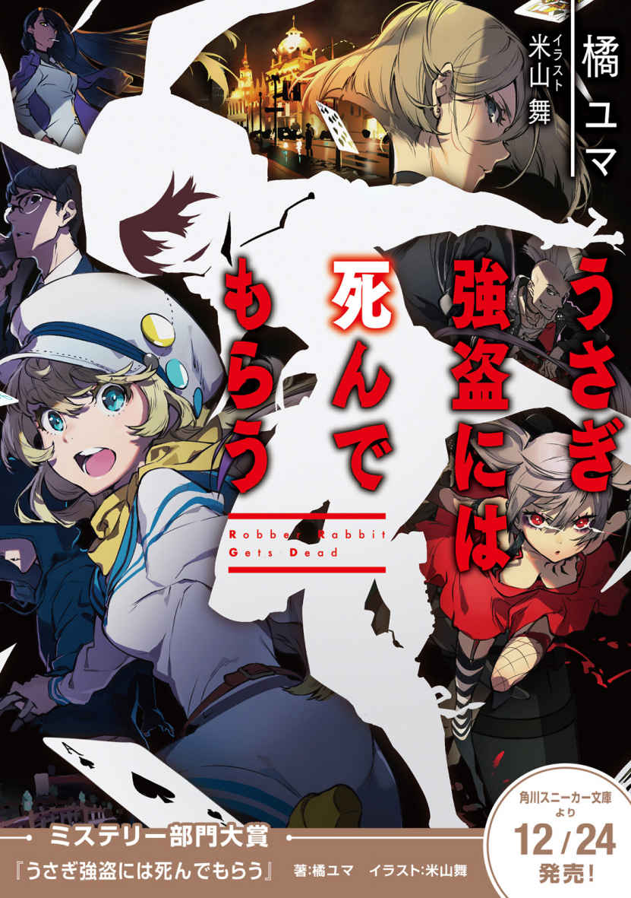
プロローグ

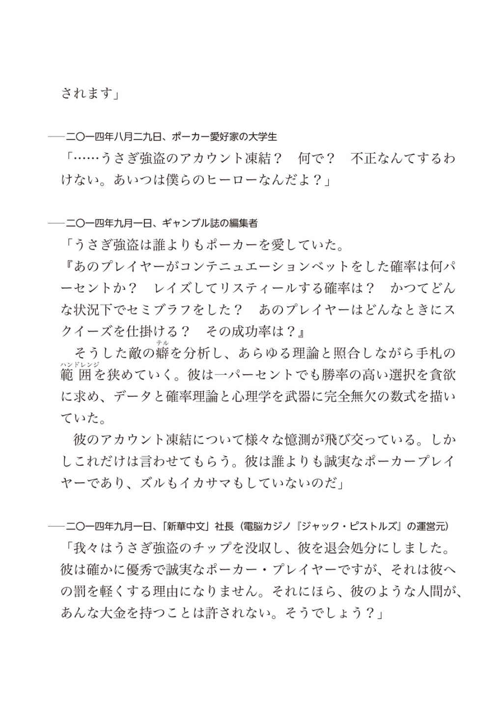
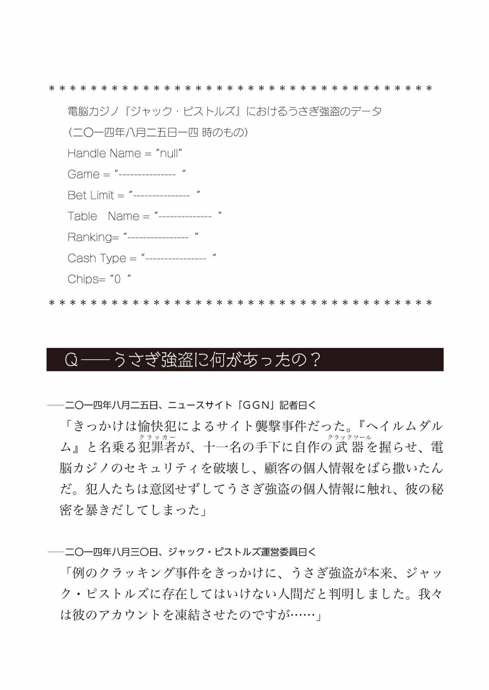
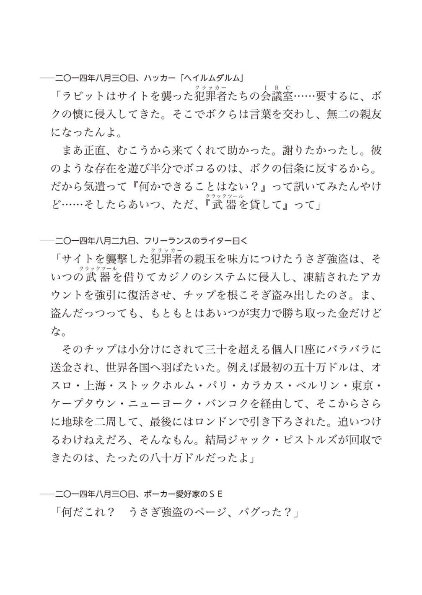
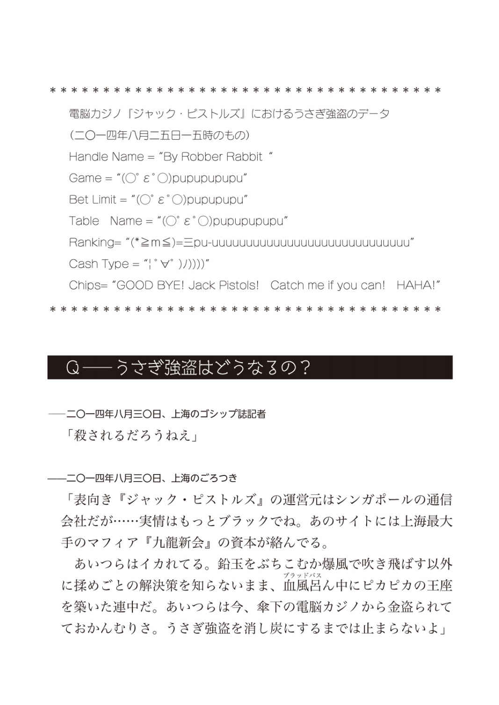
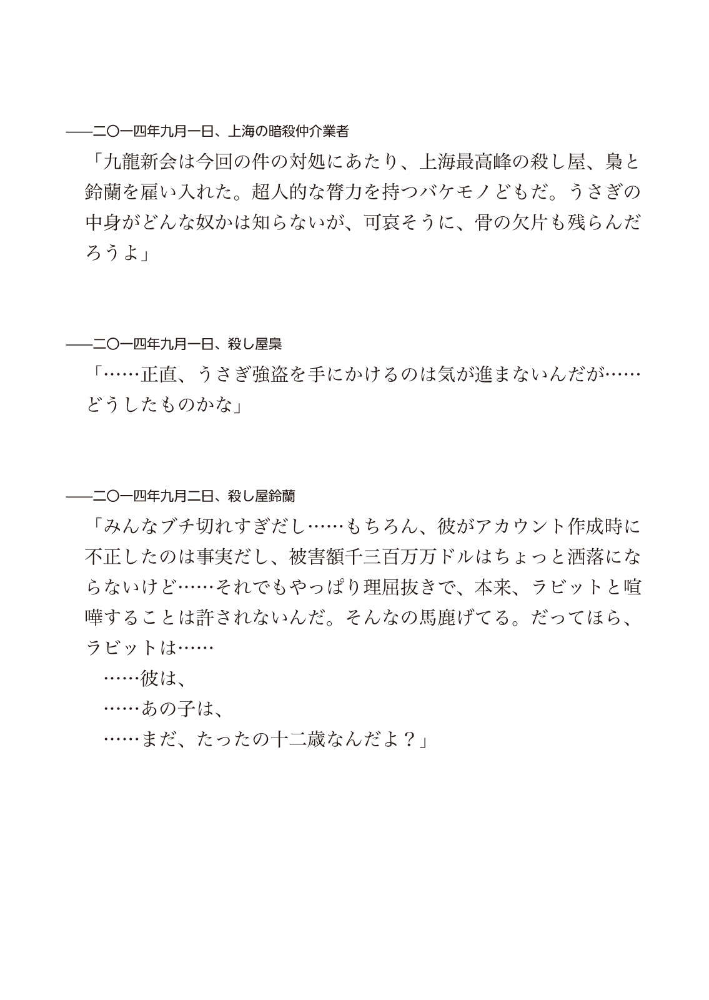
一章
二〇一五年一一月一〇日（一日目・昼）京都左京区の分譲マンション
１
「あ、日 名 子 姉さん、スマホ忘れてますよ」
充電器からスマートフォンを引き抜きながら、天 野 樹 里 が言った。
彼女はスマホを胸の中に抱えると、リビングの椅子の上に足を乗せ、猫のように身を丸くした。大きな目でじっと画面を覗きながら、ふわふわと柔らかそうな髪を所在なさげに弄っていた。
「充電器さしたまま家出ちゃったんですねー。どうします？ 届けに行きます？」
アーミーナイフのドライバーで鳩時計を分解していた黒 崎 雅 也 は、作業の手を止める。黒いスラックスに巻いたシザーバッグにナイフをしまい、折返して捲ったシャツの袖を整えた。
「......届けに行く義理があるか？」
「そりゃもちろん、この部屋に厄介になってる身ですから！」
「......まあ、それはそうだけど。でも別に、頼まれたわけじゃないし」
「雅也の兄 さんだって、別に頼まれてその時計修理しているわけじゃないでしょう？」
雅也は首筋を軽く搔 いた。壊れた鳩時計の修理を試みたのは、盗みを働いたことへの、ちょっとした罪滅ぼしのつもりだった。
数分前、樹里が冷凍庫からアイスクリームを勝手に出して食べていたのを見た。ついうらやましくなり、一番安っぽいアイスバーを自分も一つ口にすると、樹里が「あ、兄 さん。それ、そこそこ値の張る銘柄ですよ、六百円しますよ。日名子さんブチ切れるやつですよ」と抜かしてきた。雅也はいたたまれない顔つきで二、三口かじったあと、残りを樹里に手渡した。
「スマホを届けてあげれば、日名子姉さんも兄さんを見直しますよ。『このアイス泥棒がぁ！』なんて言いませんから！」
「......多分、その辺の事情は変わんないと思う」
「いやいや、日名子姉さんはちゃんと人の誠意を汲み取ってくれる人ですよ」
「......樹里は日名子の何を知ってるというんだ......だいたい、届けるにしても平日のこの時間だし、多分仕事中だろ......勤め先知ってんの？」
「え？ 携帯にかけて訊きますよ？」
「......おう」
雅也は馬鹿にするわけでもなく、ただ無言で樹里を見つめ、彼女の次の言葉を待った。樹里はしばらく不思議そうに首を傾げていたが、やがて何かに気づいたように「あ！」と大きな声をあげる。第一関節まですっぽり袖で隠れた両手を口にあて、雪のように白い肌をほんの少し赤らめたあと、取り繕うようにしゃべり始めた。
「じゃ、じゃあ、日名子さんの電話帳開いてみては？ 職場の番号登録してるかも。電話帳に登録されてるお店の番号に片っ端からかけて、『日名子さんはいますか？』って訊いて......」
「悪くない案だけど、ロックを外すパスコードは？」
「大丈夫です！ 化粧棚のとこで免許証発見したんで！ 誕生日打ち込んでみます！」
「......生年月日をそのままパスワードにするかな、いまどき」
樹里が免許証とスマホを交互に見ながら数字をタップし、むすっと頰を膨らませた。生年月日は外れだったらしい。雅也は椅子に腰かけると、両手を合わせて鼻に添え、うっすらと目を閉じた。
「どうしました？ 雅也兄さん？」
「......ちょっと考え事。仮に今、日名子が帰ってきたらどうなるかなって」
「あ、確かに、携帯届けに行ったら入れ違いになっちゃうかもしれませんね」
「......樹里は自分が怒られる立場だってこと、もう少し自覚したほうがいい」
雅也は、頭の中で日名子が戻ってきた光景を思い描いた。
──家に入ると、白猫のような容姿の娘がスマホのロックを解除しようと苦戦している。見ていて気分のいい光景じゃなさそうだ。自分のパーソナルスペースを侵害され、ひどく傷つくに違いない。これに加え、外国製の鳩時計が中途半端にバラバラにされ、六百円もするアイスバーの残骸が屑籠に捨てられている。
「うん、訴えられるかもしれないね......」
「いっそ逃げ出したい気分ですか？」
「せめて鳩時計の修理だけは完結させたいな......」
「日名子姉さんのご機嫌とりに？」
「......言い方が......そもそも、時計一つ修理したところで、日名子をブチ切れさせることは変わらんよ。ただちょっと、手を出した修理を途中で投げるのが嫌 なだけで......」
雅也が言い終えるよりも早く、日名子のスマホが電子音を鳴らした。樹里がビクッと肩を震わせ、スマホを取りこぼしてしまう。雅也が歩み寄り、すぐに拾い上げた。
『送信者：ネチネチ風 間
件名：本日の業務の件
以前お聞きした番号で繫がらないので、メールで......』
日名子はロック画面に新着メールの一部が表示される設定にしているらしい。樹里は雅也の傍に寄り、スマホの画面を覗き込んだ。
「......日名子姉さん、職場の同僚のメアドを『ネチネチ風間』で登録してるんですね」
「......知らなくていい上にそこそこ知ってはいけない情報だな。しかし何も、電話帳登録にまで愚痴挟まんでも......」
その後しばらく、立て続けに「ネチネチ風間」からメールが届いた。
『送信者：ネチネチ風間
件名：心配しています
公共交通機関の遅延ですか？ 早く事情を説明して......』
「あれ？ 日名子姉さん遅刻してます？ 朝には家にいなかったはずなのに......」
「『心配しています』という文面に静かな怒りを感じるな」
「これはあれです......ネチ間は正直、公共交通機関の遅れとか、思ってないですよね。『どうせ寝坊かなんかだろ、なじってやるから連絡寄越せ』ぐらいのことは思ってますよ！」
「それはさすがに根拠薄くないか？」
「ネチ間はあれですよ！ 人のミスを徹底的に責めるタイプですよ！ 二年くらい前のミス覚えていてあげつらうタイプですよ！」
「......樹里は一体、風間の何を知っているんだ」
『送信者：ネチネチ風間
件名：売場の鍵の件
職場の鍵を預かってますよね。皆困って......』
「はい来ました！ 心にグハっとくるアッパー来ました！ 職場の同僚たちをかさに着て責めはじめましたね！」
「連帯感に弱い日本人に効くやつだ」
「ちくせう！ ネチ間はいつだって、人の心をねっとりえぐろうと狙ってるんだ！」
「......樹里は風間の何を知ってるんだ」
『送信者：ネチネチ風間
件名：売場準備完了しました
店長が鍵を開けました。搬入も済ませて......』
「メールの件数が多い！ 報告が細かい！」
「......ネチネチしてきた」
「小刻みにメールの通知音を鳴らすことで焦燥感を煽ってきますね！ 細やかな部分まで気遣いの行き届いた嫌味！」
「......つうか風間、こんなにメール送りつつ店長に連絡して売場準備も整えてんのか......普通にちょっと感心する」
「風間優秀！ 一社に一人欲しい人材！ でもそのそつない優秀さが、こちらの無能を浮き彫りにして、絶望感を醸し出すのです！ おのれ風間！」
「......樹里は風間の何と戦ってるんだ」
雅也が呆れた顔をするのを見て、樹里は頰を膨らませた。
「だって、日名子姉さんに『ネチネチ風間』って名前で登録されるような奴ですよ？ 並大抵の粘度じゃあ、電話帳で愚痴られたりしませんって！」
「粘度の高い人間って、字面にするとなんかえぐいな」
「字面の話はどうでもいいんです！」
「......今日これまで、どうでもよくない話なんかしたっけか？」
「ある男の人間性の可否を巡る判断です！ どうでもいいはずがないですとも！」
「ぼかして言葉の響きだけ壮大にしたなあ......。ほとんど題 目 詐欺だぞこれ。まああれだ、俺らは日名子と風間の間柄を知らない。風間がどんな奴かも知らないんだ。ひょっとしたら、とても気のいい奴かもしれないだろ？」
再び椅子の上に足を乗せて坐った樹里は、膝の上で腕を組み、その中に半分顔を埋めてしまった。ふてくされ、隅でいじける子どもを思わせる仕草だ。雅也は樹里の髪を軽く撫でた。
「雅也の兄さんは何でそんなに風間を庇うんですか......」
「......さあ」
──俺自身、何で顔も知らん奴を庇ってんのか分からんよ。
「......まあ、何一つとして悪いことは言ってないしなあ、風間は......」
「でも、日名子姉さんは......」
「ひょっとしたら日名子はとんでもないヒステリー女で、風間は何も悪いことしてないのにネチネチ呼ばわりされた可哀想な奴かもしれないだろ？ 風間はもちろん、樹里は日名子とも直接会ったこともないんだから」
雅也は首筋を軽く搔 いた。
──まあもっとも、俺も日名子に会ったことはないので、実際どうかは分からないが。
スマホが震え、電子音を奏でた。画面を見た雅也は口元を手で隠し、小刻みに肩を震わせている。その目じりが上がっているのを見て、樹里は笑いをこらえてるのだと察した。
「雅也の兄さん？ 何がそんなにおかしいんです？」
「......風間はけっこう良い奴で、割と本気で心配してる。焦ってるのか、メールの形式が業務連絡のそれじゃなくなってきてんな。しかしまあ、随分勘のいい奴だよ」
「勘のいい？」
雅也はスマホを宙に投げ上げた。それはくるくると回転しながら宙を舞い、きれいな放物線を描いて樹里の両手に落ちてきた。樹里は目をパチパチさせながら、ロック画面を覗き込んだ。
『送信者：ネチネチ風間
件名：怒ってませんから連絡をください
何か事件に巻き込まれたのではと、気が気でな......』
雅也が口を覆った手を下ろし、ほころばせた口元をのぞかせた。
「見ろよこのメッセージ。部屋に忍び込んだ泥棒 を二人、見透かしてるみたいじゃんか」
２
「日名子姉さん、今ごろ困ってるでしょうねえ。せめてパスコードが分かればなあ......。なんとか勤め先探し出して、お届けできるかもしんないのに......」
樹里はロック画面に表示されたメッセージをぼんやりと眺め、小さくため息をついた。雅也は、テーブルに置かれていた日名子の財布を覗いている。
「パスコードはともかく、日名子の職場ぐらいは分かるさ」
「え？ 何で......？」
「うーん」
雅也は煮え切らない相槌で樹里の質問をかわすと、和室に向かってクローゼットを開き、シャツをいくつか手に取って観察した。その後しばらく部屋をうろうろ回り、床に落ちていた二つ折りのパスケースを拾い、中身を覗いた。
軽く顎 に手を添え、雅也は頭の中で推理を組み立て、自分のスマホを取り出した。
「何してるんです？」
「ちょっと確かめてみよう」
雅也は設定を非通知にし、「青山スーツ・カンパニー京都駅前店 電話番号」と検索し、ヒットしたページに記載されていた電話番号をコールした。
『お電話ありがとうございます、青山スーツ・カンパニー京都駅前店、風間が承ります』
樹里が目を見開いた。雅也はのどを人差し指で軽く押さえ、五十を過ぎた老人のような、しわがれた声を出した。
「あー、うん。昨日そこで買い物したヤマダってもんなんだけど、ええっと、昨日対応してくれた店員と話できるかな？ ネクタイについて訊きたいことがあるんだ」
『どちらの店員でしょう？』
雅也はスマホの通話口を指でふさいだ。それと同時に、樹里が「どういうことですか？ 何でわかったんですか!? 」と詰め寄ってきた。雅也は「どうどう」と言いながら樹里を押さえ、机上に置かれた日名子の免許証を指差した。
「樹里、それとって」
樹里が免許証を手渡すと、雅也はそれを目の高さに掲げ、日名子麻美の顔写真をじっと見つめ、それから通話口をふさいでいた指を外した。
「あー、うろ覚えなんですけど、こう、黒縁の眼鏡をしてて、泣きぼくろがあって、水色のピアスをしてて、ええっと、名前は、ひ......ひな」
『昨日出勤していた店員ですよね？ だとすれば、日名子でしょうか？ 彼女ならまだ出勤していませんが......』
樹里が声を出さずに「ビ・ン・ゴ！」と口真似をした。雅也は小さくうなずき、喉を抑えていた手を放した。
「じゃあまたかけ直すことにします。最後にひとつ、風間さん、いいですか？」
『え？ あれ？』
雅也が急に地の声に戻したせいだろう。電話越しにも風間の狼狽が伝わってくる。
「あなたは気遣いのできる人だけど、少し説教臭くなるきらいがありそうです。職場の同僚に『ネチネチしやがって』とか言われません？」
『......え？ え？ いや、言われますけど......え？ 何で？』
風間の声さらに震える。雅也は少し困り顔をした──そうか、日名子勇者だな。言ったのか、本人に。
『日名子さんへの立ち振る舞いを、一度見直した方がいいですね。大丈夫、気持ちがちゃんと通じていないようですが、あなたけっこういい人そうだし」
『え？ はあ、ありがとうございます』
樹里が何か言いたげな顔をして、雅也の頰を人差し指でついた。雅也は、樹里の頭をポンポンと撫でながら、通話終了ボタンをタップした。樹里が大きな声で問い詰めてよってくる。
「どういうことですか！」
「ふむ、一から説明してあげよう」
雅也はいかにも偉ぶって、ありもしないカイゼル髭 を引っ張るような仕草をした。腰に巻き付けたシザーバッグにスマホをしまう。
「まずは最初に与えられていた情報を整理しよう。日名子はこのマンションの住人、一人暮らし。今日の早朝、俺と樹里が忍びこんだ段階から不在だった」
「ふむふむ」
樹里は真剣な顔つきでこくこくとうなずいた。
「そして風間からのメール、ここには手がかりが多くある。まず日名子は、家電か書籍か食品か、とにかく小売店に勤めていると導き出せる。『売場の鍵』という単語が件名にあったからな」
「ほー」
「また、『公共交通機関の遅れでしょうか』と風間が訊いたところから察するに、日名子はバスか電車で通勤している。そう思って探してみると、この通り、この部屋の最寄駅と京都駅間の定期券が見つかったよ」
「ふぇー」
雅也が革製のパスケースを掲げると、樹里は興奮した顔つきで机に身を乗り出し、パスケースをじっと見つめた。
「風間からメールが来た時刻について考えてみる。確か九時半くらいだったな？ この時間から開店準備を始めているというということは、開店時刻は十時半か十一時といったところだろう。日名子の勤め先は、京都駅にほど近く、十時半以降に開店する店だとわかる」
「ふぁー」
「また、売場を開けるのに風間は店長を呼んだ。たった二つしかない大事な鍵を、店長と日名子が預かってたんだ。そうなると日名子は、信頼される立場なんだろうと推測できる。だとすれば、それなりに自社製品を揃えているかもしれないと考えた。クローゼットを探ってみると、『青山スーツ・カンパニー』のロゴが入ったブラウスやパンツがぞろぞろ出てきた」
「ふふぁー」
「京都駅付近にある『青山スーツ・カンパニー』の系列店舗は二つ。そのうち一つは青山スーツ・カンパニーからめぎモールＫＹＯＴＯ店で、この店は、土地主であるショッピングモールの開店時刻の九時半に合わせて開店する。で、もう一つは青山スーツ・カンパニー京都駅前店。こっちの開店時刻は十一時だった」
「ふぁふぁふぁふはー。すごいですよ雅也兄さんホームズみたい！ シャーロックっぽい！ ベネディクト・カンバーバッジ！」
樹里は純真な子供のように目をキラキラと輝かせ、畏敬と羨望の入り混じったまなざしを雅也に向けた。雅也はその羨望の眼差しを淡い微笑みで受け止め、ポケットからプラスチックカードを取り出し、高々と掲げた。
「決定的な手がかりがこれだ！ 日名子名義の、青山スーツ・カンパニー京都駅前店の社員証だ！」
雅也はまるで空想上のメンコを吹き飛ばさんと言わんばかりの勢いで、プラスチックカードを机の上に叩きつけた。
「ほぉー......って......へ？」
キラキラと輝いていた樹里の目が、少し濁った。
「......え？」
「............ 」
雅也はそっぽを向き、白々しい仕草で短く口笛を吹いた。
「......え？」
「......うむ」
「......ええ」
「......ああ、うん」
「......雅也の兄 さん、これ、いつ拾いました」
「......財布覗いたら入ってた」
樹里は突然「大人は信用ならねえ」と意味の通らない叫び声を上げ、両掌で力いっぱい机を叩いた。
「ちくせう！ インチキだ！」
３
樹里は椅子の上で体育座りをして、自分の両脚をぎゅっと抱きしめている。雅也が話しかけても、頰を膨らませてそっぽを向くだけだった。
「機嫌直せよ」雅也は樹里の頰を軽くつまみ、無理やり口角を上げさせて笑みをかたちづくった。
「ひふぉいウィンティキれしたよ！ ホンホ！」
「本当？」
「ふぉんふぉー」
「自由？」
「ふぉんぽー」
「鳩」
「ふぉっぽー」
「国木田」
「どっぽー」
まるでとりとめのない会話と、滑舌が悪い樹里の声がおかしく思え、雅也はふと吹き出してしまった。それにつられるように、樹里も笑った。雅也が手を離し、樹里の頰をそっと撫でると、彼女はくすぐったそうに顔をほころばせた。
「樹里は、こんな頭悪い会話が楽しい？」
樹里のブラウスの襟が折れているのを丁寧な手つきで直しながら、雅也が言った。樹里は両手で雅也の右手首をそっと包み、ほんのり頰を赤くして目を細め、その手の甲に頰ずりした。
「ええ、幸せですよー」
「......そう。それならきっと、こんなゴミカスみたな茶番にも、きっと価値があるんだろうね」
雅也は樹里の顔を眺めながら、静かに思索を巡らせた。
＊
──さて、今のところ分かっている情報をまとめてみる。
まず、日名子は外出中である。俺と樹里がこの部屋の鍵を突破して侵入したのは午前七時ごろ、そろそろ四時間近くたつ。
日名子の外出先は職場ではない。日名子の不在に対する風間の慌てぶりから察するに、こうした無断欠勤はめったにあることではないようだ。おそらく、普段の日名子は真面目で責任感があり、よほどのことがない限り、無断欠勤するようなことはないのだろう。逆に言えば、よほどのことが日名子に起きたのだ。
日名子は新人スタッフやアルバイトではない。店の電話番号くらい覚えているはずだし、その気になれば電話を借りるなり公衆電話を使うなりして連絡できるはず。日名子は今、それができない状況下にあるようだ。
電話で風間に聞いたところによると、日名子は昨日出勤している。売場の鍵を預かったのもそのときだろう。つまり昨日まで、日名子は今日ちゃんと出勤して売場を開ける心づもりでいた。昨日の時点では予測できなかった事態に見舞われたため、出勤できなくなったわけだ。
日名子は、財布もパスケースも置いて外出している。免許証も部屋の中だ。そうなると、車や電車で遠出しているとは思えない。不測の事態──例えば、親の危篤や身内の不幸──のために出かけて帰れなくなった、というわけではなさそうだ。大体、そうした状況なら、いつでも連絡がつくようにスマホは絶対手放さない。日名子には遠出する意思はなく──夜のジョギングか何か──徒歩で済ませる用事で出かけ、そこで「家に帰れなくなる原因」に出くわしたと考えるべきだろう。
家に戻れなくなった原因は病気だろうか？ いや、もし日名子に持病があるなら、風間は犯罪に巻き込まれた可能性よりも先にそっちを懸念したはずだ。事故だろうか？ 仮に日名子が事故に遭って、連絡不可能になるほどの重傷を負ったとする──それほどの大事故なら、四時間もたてばもうニュースサイトに上がっていてもおかしくないが──
＊
「......なるほどな」
雅也はブラウザを閉じ、イヤホンをぐるぐる巻いてまとめ、スマホを腰に巻いたシザーバッグに放り込む。手持無沙汰に部屋の中を歩き回り、ベランダの傍まで来ると、手でひさしをつくり窓の外を向いた。
数分して、呼び鈴の音が響いた。樹里がビクッと肩を震わせ、不思議そうに首を傾げた。
「あれ？ 日名子姉さん帰ってきました？」
「......家主がインターフォン鳴らすかよ」
雅也はアーミーナイフを取り出すと、ドライバーをその内部に収納し、刃渡り五センチほどのナイフに切り替える。いつでも瞬時に取り出せるよう、柄を覗かせる形でシザーバッグのサイドポケットに刃を差し込んだ。
──厄病神にでも憑かれてるのか。いつだって、血なまぐさい事案に見舞われる。
──こっちは樹里とお気楽泥棒稼業できてりゃ満足だってのに。
「どうしました？ 雅也の兄 さん、怖い顔して」
「何でもないよ......それより、ちょっと玄関の様子を見てくる。まあ、宅配便か何かだろうから、受け取っておいてあげよう」
「何でまた？」
「この来客をうまく処理すれば、日名子の助けになるかもしれないだろ？ まだ、アイス泥棒の罪滅ぼしもしてないしな」
雅也は、腰にすえたナイフの柄を人差し指で撫でた──このタイミング──訪問客は、日名子が「家に帰れなくなる原因」と関係のある人物。
「なるほどー。再配達頼むのって、地味に面倒ですもんね！」
樹里は無邪気に笑って手を振り、雅也を送り出す。ピロンと、日名子のスマホの通知音が鳴った。ロック画面に通知されたメッセージを見て、雅也は苦笑した。
「どうしました？ 雅也の兄さん？」
「......風間の奴、どっかから見てるんじゃないだろうな？」
『送信者：ネチネチ風間
件名：心配しています
何か事件に巻き込まれてはいないかと、気が気でなく......』
雅也は日名子のスマホを胸ポケットにしまいこんだ。椅子にかけていた上着をとって袖を通し、玄関に向けて歩き出した。
二章
１
篠 原 斗 真 は、恋人の須 崎 奏 の人物像を問われたなら「自己主張がおそろしく苦手な人」と答える。
例えばどの店で昼を済ますか決めたいとき、いつも奏は、自分の希望を殺し、篠原の判断に委ねようとした。一度篠原がタイカレーの店に連れて行ったときなど、料理が運ばれてきてから「辛いもの、食べられないの」と告白し、ひたすらにナンをゆっくりと頰張り続けていた。篠原が「嫌なら嫌と言えばいいのに」とぼやくと、奏は悲しそうに目を伏せる。篠原が今回は食事代を奢ると言って、半ば押し付けるように千円札を差し出すと、奏は財布の入ったバッグを後ろ手に抱え、首を振ってそれを拒否した。
それ以来、篠原は細心の注意を払うようになった。
「量の多い店は苦手？」
「手持ちに余裕はある？」
「食後もだらだら居座れる店がいい？」
「少し遠出してもいい？」
「昨日は何を食べた？ パスタ？ じゃあ麵類は避けようか？」
奏を食事に誘うたび、篠原は何度も何度も質問を投げかけねばならず、また、奏が自分を気遣って噓をついてはいないか見抜くことも求められた。
「どこに行きたい？」と直接聞くと、奏は目をうっすらと閉じて真剣に考え込んでくれるのだが、最後には必ず「篠原さんは、何処に行きたいですか？」と聞き返してしまう。
篠原はいつも、けっして面倒くさがることもなく、根気よく奏の要望を聞き出した。あらゆる条件を照らし合わせ、最後に篠原が行きたい店名を告げると、彼女はいつも「ありがとうございます」と丁寧にお礼を言った。
──自分を殺して気を遣う人だから。悪い男に捕まったら、とんでもないことになる──篠原は常々そう思っていた。
しかしだからといって、奏が悪い男どもに攫われ嬲り殺されるなんて予想だにしなかったし──奏を死に至らしめた人身売買組織をつきとめ、調査員として潜り込むような行動力が自分にあるなんて、考えもしなかった。
二〇一五年一一月一〇日（一日目・昼） 京都、左京区の雑居ビル
日名子麻 美 の住むマンションの向かいにあるオフィスビルの屋上。真っ黒なスーツを着た瘦身の男が双眼鏡を構え、窓越しに樹里と雅也を見下ろしていた。雅也が樹里の頰を引っ張って、無理やり笑顔を作らせている光景が彼の目に映った。
二人がお互いに笑い合うと、何故か、彼もつられて笑ってしまった。ただその笑顔はどこか物寂しく曇っていた。落ちくぼんだ瞼には、疲労の色が浮かんでいる。
スーツの男のスマートフォンが震えた。上司の川 浪 からだ。
『メールを見た。任務を実行できないとはどういうことだ、篠原』
「ええ、ちょっとした障害がありまして」
『説明しろ』
「......日名子麻美の部屋に、若い男女二人組の人影を確認しました」
日名子の部屋に、彼女の筆跡を真似た置手紙を残し、財布や携帯を回収し、あたかも彼女が自発的に蒸発したかのように偽装する──それが今日篠原に課せられた任務だ。簡単な仕事のはずだった。日名子の部屋に侵入者さえいなければ。
電話の向こうで、川浪が舌打ちする音が聞こえた。
『君の事前の調査報告によれば、標的......日名子麻美には、部屋を訪ねてくるほど親しい友人はいないとあったが？』
川浪が冷たい声で言った。篠原はシャツの胸元あたりをギュッと摑んで気を静め、声が裏返らないように気を配りながら口を開いた。
「......報告に、ミスはありません」
『では、彼らは？」
「おそらく、空き巣の類でしょう。彼らは日名子麻美の部屋を物色していました。......日名子麻美の財布を漁っていたのも、カードを片手に何か話しこんでいたことも確認しています」
『......間違いないな？」
「......ええ」
篠原は、「物色」の被害がアイスバーであることも、「カード」が社員証であったことも伏せておくことにした。
──川浪が「悪党が金品を物色し、財布からクレジットカードを抜いた」と勘違いしたとしても、それは私のせいじゃない。
──とりあえずはこれでいい。「日名子麻美の部屋で、不法侵入者が二人遊んでます」なんて事実通り報告したら、川浪は訝しげな顔をすることだろう。今、川浪に余計な不信感を持たれたくない──あの二人を、こっちの事情に巻き込みたくない。
「彼らが日名子麻美の失踪を不審に思う可能性もないでしょう」
──捨て置いていいと判断してほしいところだが。
『君の仕事は現場の調査と報告だけだ。余計な推測は口にするな』
川浪は低い声で言った。篠原は肩をすくめ、鉄柵に持たせた背をズルズルと下に滑らせ、床に腰をついた。
＊
顧客のニーズに柔軟に対応し、条件に応じた人物を誰よりも早く見つけ出して紹介する。
それが篠原の潜り込んだ「Ｍ＆Ｄグループ」のポリシーだ。このポリシーは、表と裏、どちらの世界でも徹底して貫かれている。表では優秀な人材派遣・仲介業者として。裏側では、人身売買・臓器売買を収入源とする犯罪組織として。
篠原はひと月前、この会社に調査員として入社した。街角で老若男女問わず声をかけ、街頭アンケートを装い氏名や住所や電話番号を聞き出し、数日かけて尾行して行動パターンや交友関係を調べ上げる。毎日その繰り返しだった。
「失踪しても騒ぐ身内のいない人間は誰か？」
「その人物が一人になるタイミングはいつか？」
「その人物の行きつけの場所で、比較的人影の少ない場所は何処か？」
会社が問いかけてくるそれらの疑問に答えを出すのが、篠原の仕事だ。実際に標的を拉致するのは調査報告を受けた別働隊で、篠原自身が手を下したことは一度もない。
篠原は真摯な態度で調査に打ち込み、そのためにひどく神経を削られていた。
篠原は調査を通して、その人物の人となりはもちろん、話し方や考え方、譲れないこだわり、大切な思い出、嫌悪の対象、果たしたい夢、苦手な相手、愛するものを知った。そして、標的のことを深く知るにつれ、その存在を肌で感じ、まるで相手が数年来の友人であるかのような錯覚に陥ることになる。篠原はいつも、相手を深く知るたびに、ある種の愛おしさを感じていた。
──ああ、私は、これからこの人を地獄に落とすんだ。
夜中、ベッドの中で、その事実が脳裏をよぎることがあった。
その度に、篠原は壁や床や自分自身を搔 き毟 った。爪がところどころ罅 割れ、指との隙間には血の混じった木くずや砂利や皮膚がつまっていた。それでも搔 くことは止められなかった。
夜中に突然自分が別動隊に引き渡した標的の顔が浮かび、錯乱して一人暴れまわることもある。朝日を浴びてふと気がつくと、吐しゃ物と血の混じった床に顔を伏せ、頭を抱えていたこともあった。
「お前は何をやっている？ お前は誰だ？」
日名子麻美についての調査報告を終え、別働隊が彼女を拉致したとの報を受けた翌朝、篠原は鏡に向かって問いかけた。顔中に赤い線が走り、唇の皮膚が剝がれ、半熟の卵のようにどろりとした血が口元に覗いていた。
「私には、どれだけ手を汚しても。やらなきゃいけないことがあるんだ」
鏡に額をもたせかけながら、鏡の中の篠原が答えた。
＊
前髪を強くつかみながら、篠原は川浪の次の一言を聞き漏らすまいと意識を集中させていた。
──空き巣相手にムキになってくれるなよ。見逃してやってくれ。私はもうこれ以上、他人を不幸にしたくない。私は──。
『殺せ』
電話の向こうで、川浪がおもむろに言った。篠原は、軽く握った拳を額に当てた。
「私は調査と報告だけをすればいい......そう言ったのは川浪さんでしょう？ 直接手を下すのは、『実働部隊』の領分です。私の仕事じゃありません」
『本来はな。だが、今回はちょっと特別だ』
「特別？」
『君は疑われている』
篠原は心臓が跳ね上がるのを感じ、とっさに胸に手をあてた。冷や汗を袖で拭い、息の乱れが電話越しに伝わらないようにつとめた。
「須崎奏」
川浪がその名前を口にした瞬間、篠原は目の前が急に真っ白になる錯覚に陥った。屋上のフェンスにもたれかかり、バランスを崩しそうになる
「聞き覚えのある名前ですね」
『ふむ、さすがに知らないとうそぶくほど馬鹿ではないか』
「......大学時代の友人です」
「親しい間柄だったようだな」
篠原は、鉄柵に指をかけた。
──奏が『Ｍ＆Ｄ』に殺されたのは二年前。データが残っているはずがない。
篠原は、抹殺した人間のデータは速やかに処分するよう教育されている。だから、奏にまつわるデータについては、とっくに破棄されていると高をくくっていた。
「社のデータを懐に隠していた社員がいてな。本社で使われなくなったデータを同業者に売りつけたり、犯罪にまつわる情報を拾って脅迫の材料に使ったり、せこい小遣い稼ぎをしていたらしい。その馬鹿はもう粛清済みだが......奴が、面白い置き土産を残していた」
「置き土産とは？」
『二年前わが社に消された須崎奏の恋人が、先月入社してきた篠原である、という情報だよ』
篠原は奥歯を強く嚙みしめる。口の中が乾くのを感じ、そっと喉を押さえた──追い詰められたその社員は、死なばもろともと、私を道連れにしたわけか。
「恋人？ 須崎さんが？ 私の？ ......ああ、色恋沙汰に敏感な友人も多かったですからね。皆小学生みたいな悪ふざけが好きで、私がちょっと女友達と食事しただけでも、冷やかしたり、『デートだ、デートだ』と騒ぎ立てたり、何かにつけて二人きりになるようセッティングしようとしたり。そうですね、勝手に恋人扱いされることもありましたよ。でも実際のところ......」
川浪が、乾いた笑い声で篠原の台詞を遮った。
『君が饒舌なのは珍しいな、篠原』
「......そうでもありません」
篠原は鉄柵から手を離し、顔を少しうつむかせながら、指で眉間を軽く握った。
「恋人を殺されて復讐なんて、そんな映画みたいに陳腐な展開、あるわけないでしょう」
『言ったはずだ。判断をくだすのは、君ではない。だが私も鬼じゃない。君が信用を得るためのチャンスを用意するつもりでいた』
「......そこにタイミングよく、どう扱っても後腐れのない泥棒たちが現れた」
『やはり君は察しが良い』
「......殺人をもって忠誠を誓え、ということですか」
篠原は、「忠誠を誓う」という文句が建前にすぎないことを理解していた──殺人に手を染めリスクを負え。後戻りできない深みへと落ちてゆけ──そうした裏のメッセージを、声音や態度に匂わせることもなく、静かに汲みとっていた。
屋上に突き出した階段室のドアが開き、二人の男が入ってきた。一人は細長い顔と脱色した髪が特徴の男で、どこか実験用のハツカネズミをイメージさせる容貌をしていた。もう一人は、浅黒く彫の深い顔にふさふさとしたひげをたくわえた男だ。動物で言えば、ツキノワグマに似ている。
襲撃と誘拐を主な業務とする部隊の連中だ。篠原も、一度会ったことがある。
「......見張りがついていたのですね、私は、相当信用が薄いようだ」
『信用されるか否かは、君の頑張り次第だよ』
──頑張り次第か。目の前の二人は、私を生かす気なさそうだが。今日私が任務を終えたら、そこで始末するつもりだったのかもしれない。
『君は訓練を受けてはいないからね。その二人をサポートとして使いたまえ、彼らは優秀な社員だ』
「......優秀、ですか。」
ハツカネズミが、眉を「ハ」の字にしながらにやにやと笑った。ツキノワグマの方はといえば、ハツカネズミを蔑んだ目で一瞥し、小さく息をつくだけだった。
篠原は振り返り、もう一度双眼鏡越しに日名子麻美の部屋を覗いた。冷えた風が篠原をまっすぐに通り抜け、ネクタイを揺らし、背広の裾をはためかせた。
ふと、篠原の顔つきが変わった。戸惑いながらも、何かを決断した顔だ。
「承知しました。私の手で、殺してみせます」
しばらく無言が続いたあと、川浪が電話を切った。もう繫がっていないのに、篠原には、川浪の乾いた笑い声が聞こえた気がした。
＊
屋上をあとにした篠原たちは、まっすぐに日名子麻美の住むマンションに向かった。篠原は道中、逃げ出せるタイミングはないか探ってみたものの、例の二人はまるで隙を見せなかった。
篠原は日名子の部屋の前に立つと、インターフォンを鳴らした。
「......まあ、素直に出てくるはずはありませんよね」
──いっそ物音に怯えて、ベランダ伝いにでも逃げ出してくれるとありがたいが──そんなたまじゃないか。忍び込んだ先とは思えないほどくつろいでたからな、あの空き巣たち。
ハツカネズミに似た顔立ちの男が目配せし、篠原を急 かした。篠原は懐をまさぐり、鍵を取り出す。フードを目深に被った猫のぬいぐるみがぶら下がっている。昨日の晩、実働部隊が日名子麻美を拉致する際に奪ったものだ。
篠原が錠を外し、ゆっくりとドアを開けた。
「......何だ、これ」
黒いジャケットを着た若い男が、靴箱に背を預ける姿勢で腰を下ろしていた。ベルトに通す形でカーフスキンのシザーバッグが巻かれている。篠原は片膝をつき、ぐったりとうなだれた男の顔を窺った。
「......死んでる」
──そんな馬鹿な。ありえない。
──殺された？ 誰か来たのか？ 私がここに来るまでに？
──いったい誰が？
２
若い男は、目を半分開いたままこと切れていた。力なく天井に向けられた手の傍に、赤い取手のアーミーナイフが転がっている。鏡面仕上げのブレードが、薄暗い廊下の向こう──南に面したリビングから差し込む陽光を反射していた。
篠原に続いて部屋に入ってきたツキノワグマとハツカネズミの二人組は、揃って目を丸くした。ツキノワグマが後ろ手にドアを閉めながら、冷静な声で言った。
「どうなってる？」
「......さあ。これは、私にも......」
篠原は男の首筋に手を添え、体温が残っているかを確認した──あの位置ではリビングしか監視できなかった。私の目の届かない範囲で三人目の人物がいた可能性もなくはないが......。
篠原の脳裏に、樹里と雅也がじゃれ合っている光景がよぎった。
──いや、ない。あの二人の素振りからしてそれはない。私が見ていた時点から、部屋には彼とあの女の子だけ──そうだ、あの子は何処に？
──この場合どうすれば良いんだろう──川浪は空き巣の男の方を殺せと言っていたが──。
死体の胸元の赤い染みを一瞥し、立ち上がると、膝を軽く叩いて埃を落とした。
──考えろ。私は奴らにどんな情報を与えたか──私はどう報告すべきか──。
篠原は携帯を取り出し、川浪の番号にかけた。
「例の空き巣の片割れ......若い男のほうが殺されました」
『......何？』
「......間の悪い先客が来たようです。私たちが隣のビルからここに来るまでの、数分の間に、誰かが」
「なんだそりゃ？ 何処の誰がこんなちっぽけな空き巣を殺すんだよ」
ハツカネズミが、へらへらと笑いながら、篠原に声をかけた。報告を邪魔された篠原は不服そうに顔をしかめ、通話口を指でふさいで向き直る。
「......一応は犯罪に手を染めている人間です。後ろ暗い事情を抱えていてもおかしくないでしょう」
「っは、ヤクザの金にでも手え出したかね」
「......わかりません、それより油断しないでくださいよ？」
「油断だあ？」
「彼を殺した人間が、まだこの部屋に潜んでいるかもしれません」
「ああ？ 俺らがそんな簡単にやられるかよ。そんなひょろっちい空き巣野郎と一緒にすんじゃねえよ。なあ？」
ハツカネズミは同意を求め、背後で静かに佇んでいるツキノワグマの顔を見上げた。ツキノワグマは背を反り返らせながらこくんとうなずき、そのまま仰向けに倒れ込む──右目と額に、柄の短い投 擲 ナイフが刺さっていた。
篠原は一瞬、周辺から音が抜け落ち、耳の奥がじんと震える感覚を味わった。数秒の静寂の後、ツキノワグマの後頭部がドアとぶつかり、鈍く低い音があたりに響いた。
篠原とハツカネズミは無言のまま、リビングへと続く廊下に視線を向けた。
薄暗い廊下とリビングを繫ぐドアの向こう、カーテン越しに差し込んだ陽光を背にして、フードを被った人影が立っていた。随分と小柄だ。黒いフードに縫い付けられたうさぎを思わせる長い耳の装飾が、光の中でゆらゆらと揺れている。
小柄なうさぎの右手には、磨き上げられたナイフが握られていた。その刃が鏡のように光を反射し、篠原は目を細めた。
──あの子が纏う、肌を刺すような空気。
──理屈抜きで確信できる。この男やツキノワグマは、あれが殺した。
ハツカネズミが弾かれたように跳躍し、一瞬で距離を詰めた。脇に巻いたホルスターからナイフを抜き、うさぎに向けて突き出した。
うさぎは避けることもなく、逆に一歩前に出てナイフを構えた。二つのナイフの切っ先が交わり、相手の刀身を滑るようにこすれあう。うさぎのナイフの方がわずかに長かったらしく、その刃先が、ハツカネズミのナイフの柄 へ刺さった。
両者とも譲ることなく、じりじりとナイフの持ち手に力をこめ、微 かに腕を震わせていた。ナイフのクロスカウンターと同時に激しく翻ったうさ耳は、重力に従いだらりと下に降りていた。
奇妙なナイフの交差が、突如として終わりを迎える。
ハツカネズミがナイフを引いた。不意に流された力の動きに対応しきれなかったのか、うさぎは前のめりにバランスを崩してしまう。ハツカネズミのナイフが、うさぎの首筋めがけて弧を描く。
だがナイフは、力なくうさぎの首筋を撫でるように沿ったあと、ハツカネズミの手を滑り落ちていく。ハツカネズミがうつぶせに倒れた。
「......っは、狡 いね」
ぐったりと体を横たえながら、ハツカネズミは力なく笑った、その胸には、刀身だけになったうさぎのナイフが刺さっていた。ハツカネズミはしばらく荒い呼吸を続け、一度空気を大きく吸い込み、その後、ぴくりとも動かなくなった。
刀身が抜け落ち持ち手だけ残ったナイフを握り、うさぎは顔を伏せている。篠原は、喉の奥が乾いてざらつくのを感じつつ、呆然とその光景を眺めていた。
──そうだ、報告。
はっと気を取り直し、携帯を耳に当てる。その瞬間、ナイフの刀身が飛来し、篠原の携帯を弾き飛ばした。液晶が割れブラックアウトした携帯が床を転がる。
「......二本目ですか。スペツナズ・ナイフっていうんですっけ、それ。スプリングで刀身を飛ばせる仕込みナイフ。前に映画で見たんですけど、現実で使う人は初めて見ました......」
喉 仏 を押さえ、やっとのことで口をついたのは、そんなどうでも良い台詞だった。うさぎはナイフの取手をこめかみにあて、首を傾いだ。
「......映画......恋人を殺された男が、犯罪組織に立ち向かう話？」
「......まさか、そんなありきたりな話じゃありませんよ」
「そうだっけ？」
「............ 」
──吞気なことを言ってられる状況じゃないが、その手の話には触れたくない──篠原は、うさぎの関心を逸らす話題を探した。
「......あの武器って、当たり前ですけど、一度刀身を飛ばしちゃうと、もうナイフとして機能しないんですよね......弾数一発の飛び道具だと捉えると、なんだかちょっと、武器として心もとない気がしません？」
篠原はひきつった笑顔で言った──こんな会話をして、一体何になるんだろう？
「あー、同じこと樹里が言ってた」
「樹里？ それは、あの女の子の名前ですか？」
篠原の言葉を無視して、うさぎはパーカーのポケットをまさぐる。
篠原は奥歯をかみしめた──何か武器を用意している──先手をとって取り押さえるか？ まず無理だな──とにかく話せ、脳を動かせ。何か、突破口を見つけるまで──。
「......彼を殺したのは、あなたですか？」
「一人で殺したわけじゃないよ。そいつ、敵が僕一人と思ってて......樹里に後ろから襲われるなんて、考えもしなかったみたい」
篠原は足元がぐらりと揺らぐ感覚を味わった。あの女の子が、彼を殺す手助けをした？ ──どうなってる？ 私がここに来るまでに、一体、何が。
「......あなたがここに来たせいで、状況が、何もかも全部、滅茶苦茶になった」
「よく言われる」
「......あなた、何なんですか？」
「何って言われても、特に所属ないからなあ。どう身分を説明したらいいのかな......」
少年はうっすらと笑みを浮かべ、篠原の心臓を狙い、先ほどと同じ形状のナイフを向けた。
「皆は僕のこと、うさぎ強盗って呼ぶよ？」
三章
二〇××年──二〇一四年
１
かつて上海に「鈴 蘭 」と呼ばれた殺し屋がいた。租界時代に貿易商をしていたイギリス人の血を引く白人で、髪はほとんど白に近い金に輝き、瞳は澄んだ湖を思わせる青さをたたえていた。彼女には「梟 」と呼ばれる中国人の相棒がいた。
鈴蘭と梟がどのような関係にあったか、一言ではとても言いつくせない。彼女にとって梟は、幼い彼女を拾ってくれた育ての親であり、自らを殺し屋として一流に鍛え上げた恩師であり、幾度となく背中を預けた頼れる同僚でもあった。
鈴蘭は十五のとき、初めて一人で暗殺をこなした。標的はブリティッシュ・スタイルのホテルに滞在していた海外の高官だった。彼を殺してしばらくの間、鈴蘭の目に、黒い靄のかかった高官の亡霊が映りこむことになる。亡霊の頰は腐って削げ落ち、黄色く汚れた奥歯が覗く。眼球が抜け落ちた眼 の奥で蛆 と蜈蚣が蠢いている。亡霊はいつも鈴蘭に笑いかけ、関節を不自然な方向に曲げて手招きしてくる。鈴蘭は幼い子供のように頭を抱え、首を振って拒絶した。
亡霊が姿を消すまで、鈴蘭は毎晩、梟の胸の中で赤ん坊のように丸まって眠っていた。ときには亡霊の幻にうなされ、梟の体を引っ搔 いたり嚙みついたりしてしまうこともあった。そんなとき梟は、痛みで顔を歪めることさえせず、ただ静かに鈴蘭を抱きしめるのだ。
「慌てるな、鈴蘭」
梟は、暖かい声で静かに言った。チェロかホルンを一瞬だけかき鳴らしたような、耳に尾を引く不思議な静けさを残すトーン。何でもない一言のはずなのに、梟のこの台詞は、幾度となく鈴蘭の支えとなった。罪の意識に苛まれ断末魔の声が耳の奥から離れなくなったとき、いつもこの言葉と声のトーンが耳の奥で蘇り、ざわめきを消してくれるのだ。
鈴蘭が十七のとき、丁度その二倍の年齢を迎えた梟に、妻にしてくれと頼んだことがあった。鈴蘭は異性に恋い焦がれる心情などまるで理解できていなかったが、生涯を通じて傍にいる相手として、梟以上の適任者はいないと考えたのだ。梟は傷痕の走った大きな手のひらで、包み込むように鈴蘭の頭を撫で、首を振った。鈴蘭はふてくされたように頰を膨らませ、それでもしぶしぶうなずいた。
鈴蘭が十九のとき、梟は仕事のさなか殺された。梟が追っていた標的は、日本人の懸賞首──電脳カジノから大金をせしめた、僅か十二歳の少年だった。
二〇一四年一〇月一二日（一年前） 上海、リゾート街の廃ホテル
２
鈴蘭が梟の死体を見つけたのは、上海市外 灘 区の裏路地にある廃墟だった。
かつてはホテルのフロントロビーだった場所だが、今ではもう見る影もない。まだら模様の絨毯は濡れた埃で黒ずみ、ワックスの剝げたテーブルは脚が一本折れていて、革張りの破れたソファからは、ぼろぼろと黄色いクッション材がこぼれ出ていた。
そのソファに、胸とこめかみを撃ち抜かれた梟の死体が座り込んでいた。すぐ傍に、うさぎ耳の飾りがついたパーカーを着た少年が佇み、ぼんやりと死体に目を落としている。
鈴蘭に気づくと、少年は目を見開いた。
「あっ、え、いや......違っ......これは、僕が殺したんじゃなくて」
少年が、恐怖で震えたらしい声で言った。鈴蘭が銃を向けると、彼は目に涙を浮かべ、両手を肩の上に掲げた。
鈴蘭は、激情を表に出さないよう努めつつ、梟の亡骸を目で指し示した。
「この人を殺したのは君？」
「違う！ 違うよ！」
「じゃあ、誰？」
「い、言えない」
「言えない？」
鈴蘭は少年に銃口を向けながら、じりじりと距離を詰めた。少年もそれに合わせて後ずさるが、すぐに壁際に追い込まれた。
「い、いや......違っ」
「分からない、じゃなくて言えない。それってどういうこと？」
「い、言えない」
鈴蘭は少年の足元めがけて発砲した。少年は身をすくませ、咄嗟に耳を両手で覆う。その必死な形相に、鈴蘭は蔑んだ視線を向けた。
──もう一押し。抑えて、抑えて、慌てるな。
鈴蘭はさらに一歩距離を詰め少年の喉元に銃を突きつけた。少年は、もう壁に背が貼りついているのに、少しでも銃口から距離をとろうとするかのように顎を上げた。
「答えなって、梟を殺したのは誰？ あんたが雇ったボディガード？ お金持ちだって話だもの、あんたは」
「......ち、違うよ」
「じゃあ、フリーランスの賞金稼ぎかしら。あんたを横取りし人質にすれば、九龍の連中は金を惜しまないでしょうね」
「......違う」
「答えてって」
「......無理だよ」
問答が続くにつれ、少しづつ、鈴蘭自身さえ気づかないうちに、声は怒気を帯びていく。
「答えろ！」
鈴蘭の恫喝が少年の体を突き抜け、骨の髄を震わせた。少年はしばし硬直したあと、あちこちに目を泳がせた。
「い、言えないよ、だって......」
その瞬間、鈴蘭の手に、鋭い痛みが走った。
拳銃が、彼女の指をすり抜け、はるか高くに舞い上がった。
少年は相変わらず怯えた表情を顔に浮かべ、小刻みに肩を震わせている。だからこそ、鈴蘭は反応が遅れた。少年が縦に脚を百八十度開いて鈴蘭の銃を蹴り上げたと気づくまでに、コンマ数秒の時間を要した。
──噓。上半身、ほとんどノーモーションだったのに。
銃は肩の上に挙げた少年の手のひらにストンと落ちてきた。怯えきった少年の顔つきががらりと変わる。鳶 色 の目に光が宿り、悪戯がばれたときの子供のような、照れくさそうな笑みを浮かべた。
「だって『僕が殺した』なんて言ったら、怒るでしょ？」
少年が鈴蘭に銃口を向けると、鈴蘭は反射的に身を捻らせ、弾道から急所を逸らした。少年はその瞬間を見計らい、鈴蘭の首を摑んで力任せに押し倒した。不安定に姿勢を崩していた鈴蘭は、なす術もなく床に倒れた。
鈴蘭は袖口に仕込んだナイフを取り出し、体勢を持ち直そうとする。
そして、異変に気づいた。
──起き上がれない？
見えない腕に体を押さえつけられたかのように、鈴蘭の体はびくともしなかった。彼女は仰向けに寝転んだまま、四肢のうち唯一自由に動かせる右脚をばたつかせ、少年を睨みつけた。
「駄目じゃないか、鈴蘭さん、不用意に近づいちゃ。無駄に厚着してる敵を見たら、手品の仕掛けを警戒しないと」
「黙れ」
「奇跡的な大金星だ。正直、上海最強の殺し屋鈴蘭に敵う気はしなかったんだけど」
少年は手の中でくるくると拳銃を回しながら、鈴蘭の上に馬乗りになった。鈴蘭は一瞬恨みがましい顔で少年を見やり、覚悟を決めて目を伏せた。
乾いた音が響いた。
「............ 」
鈴蘭はうっすらと目を開けた。スマートフォンのカメラをこちらに向けていた少年と目があった。少年は全く目を逸らさないままにフラッシュを焚いた。同時に「パン」と爆ぜる音が鳴る。
「......ねえ」鈴蘭が躊躇いがちに沈黙を破った。
「あ、待って。そのポカンとした顔も撮るから」
少年がシャッターのアイコンをタップした。鈴蘭は眉間に皺を寄せ、なんとか首を捻って顔をそむけた。少年は残念そうに「意地悪だなあ」と苦笑したが、なおもフラッシュを焚きつつづけた。
「......どういうことなの？」
「......ああ、これ？ シャッター音銃声で登録してるの。無駄にクオリティ高いよね」
「違う、違う。そうじゃなくて」
鈴蘭は見えない力に抗おうと、体をもぞもぞさせながら言った。
「何で撮るの？」
「え？ そりゃもちろん、写真が欲しいからだよ？」
「......何それ、噂のうさぎ強盗が、あたしの写真をどう利用するっての？」
「それはもちろん、愛でるために」
「ふざけないで」
少年はスマートフォンをコートのポケットにしまった。
「......ねえ、鈴蘭さん、何でうさぎ強盗が電脳カジノに喧嘩売ったのか、考えたことある？ バックに構える九龍新会に懸賞金かけられるのを考えたら、千三百万ドルでも割に合わないのにさ......」
「......それでもお金が欲しかったんでしょ？」
「......違うよ」
「他に何があるの？」
少年はうっすらと目を細め、わずかに首を傾げて微笑んだ。
「......僕はただ、あなたに会いたかっただけなんだよ、鈴蘭さん。そのために進んで賞金首になったんだ。僕は......俺はもうただの子供じゃない......俺は今、裏世界の喧騒の中心......あなたと同格のステージに上れたんだ」
少年は鈴蘭の顎に手を添え、鈴蘭の青い瞳をまっすぐ見据えた。
「あなたをここで口説きたくて、俺はうさぎ強盗になったんだ」
少年は涼しい顔でうっすら微笑んで言った。へらへらとしたその態度が、ますます強く鈴蘭の嫌悪感を誘い出す。
「じゃあなんでその人を殺したの？ あたしにとって、どんなに大切な人だと......」
少年は微笑を崩さないまま、人差し指を顎にあてしばらく悩む仕草をし、その後、パチンと軽快に指を鳴らした。
「大切な人だからだよ。梟さんを殺せば、鈴蘭さんは俺に構ってくれるでしょ？」
「......あんた、何を」
「鈴蘭さんに目を向けてもらうには、最善の手だと思うんだ。たとえ憎しみの対象であってもいいから関心をもってもらうこと。それが恋愛の第一歩だと思うんだ」
少年は胸を張った。
鈴蘭の脳裏に、梟の死に顔がよぎった。こめかみを星形に引き裂く銃創、銃口から噴き出した可燃ガスで黒く焦げて爛れていた皮膚、伏せがちな虚ろな眼、だらしなく開いた口元──。
「......殺す」
少年は目を細め、意味もなく胸の前で両手を掲げてヒラヒラ振る。猛獣をなだめるようなその仕草は、一層鈴蘭の神経を逆なでした。少年は、仰向けになった鈴蘭の傍に屈みこみ、その右手首を強く握った。
「そんなに怒んないでよ。ほら、プレゼントあげるからさ」
ほとんど反射的に、鈴蘭の手がゆっくり開いた。その隙に、少年は鈴蘭の手に冷たい感触のする金属片を握らせた。鈴蘭が手を握ると、じゃらじゃらと金属同士がこすれ合う音が鳴った。
鈴蘭は横目で、自分の右手のひらを静かに眺めた。
「......これって」
「女の子のプレゼントの鉄板でしょ、こういうの」
「......こんなアクセサリー寄越して......ふざけてんの？」
「まさか、大真面目だよ？」
少年は立ち上がり、パーカーのポケットに手を突っ込んだ。片脚を軸にくるりと向きなおると、錆びついた回転ドアへと歩き出す。
「悪いね、今日はあんまり長居できそうもないんだ。ほら、大ダメージ負ってるし」
「......無傷のくせに」
「目に見えない怪我をしてるんだよ。えっと......ほら、さっき耳元近くで拳銃ぶっ放されたせいで、鼓膜がジンジン痛むんだ」
「......噓つきめ」
鈴蘭の抗議を無視して、少年はヘラヘラと笑っていた。コートの裾を翻らせ、出入り口近くの床に飛び散ったガラス片を器用に避けて駆け抜けていく。
「プレゼント、きっと気に入ってくれると思うよ」
鈴蘭の視界から消える直前、少年は、ほんの少し名残惜しげに手を振った。
二〇一四年一〇月一三日（一年前）上海、外 灘 のオフィス
３
「それで結局、うさぎ強盗はあんたを殺さず逃げてったの？」
煙管 で灰皿を軽く叩き、煙を輪にして吐き出しながら、椿 が言った。でっぷりとたるんだ太い腕が、手の動きに合わせて震えたる。
廃ホテルでの一件の翌日。
上海の外 灘 に居を構えた、西洋建築を模した外観のビルの一画──椿のオフィスに、鈴蘭は足をのばしていた。椿は調教師 と呼ばれる存在──依頼主と殺し屋の間をとりもつ仲介業者だ。梟や鈴蘭をはじめとする殺し屋たちは、専属契約を結ぶ形で、事実上椿が経営する会社の社員として扱われている。
鈴蘭は彼女と月に何度か顔を合わせていたが、会うたびに椿の体は以前よりぶくぶくと膨張しているように思えた。蝶の飾りがついた銀の煙管も瑪瑙の指輪もそれぞれ一級品のはずなのに、暗黒色のドレスに包まれた巨体が与える暴力的ないインパクトの影に隠れ、輝きを減じたかのように感じる。
「とんだ番狂わせだわ。ものすごいわねえ、うさぎ強盗......梟を殺して......鈴蘭に土つかせるなんて......腕っぷしじゃあんたらの足元にも及ばないはずなんだけど。完全に不意を突かれたわね」
「......次は油断しない」
「それにしても、あんたに求愛する心境が分かんないわ。そのために梟を殺したって理屈も含めて意味不明ね。どういうメンタルしてるのかしら」
鈴蘭はジャケットのポケットに手を突っ込んでそっぽを向き、不機嫌そうに舌打ちした。
「御託は良いから、またうさぎ強盗の情報を寄越してよ」
「そりゃ無理よ」
椿は平然と言った。
鈴蘭は、相手を威圧するような顔つきで椿のデスクに歩み寄り、両手を机に叩きつけた。心底不機嫌そうな顔を椿に寄せ、目をギラリと光らせた。
「......何で？ 昨日は普通に教えてくれたのに」
「依頼主の意向で、うさぎ強盗は生け捕り限定。あんたみたいに血の気あり余ってる子をぶつけるわけにはいかないって」
「梟の仇なんだよ？ 椿だって悔しいでしょ？」
鈴蘭は、椿の呼吸を肌で感じられるほどの距離に顔を寄せてねめつけた。対する椿は怯むことなく、鈴蘭の顔に白い煙を吹きかけた。鈴蘭は慌ててのけぞり、何度も咳をする。
「仇って言葉を口にする時点で、あんたの思考はプロのそれからズレてんのよ。どんな形であれ、殺し屋は失われた命に価値を見出しちゃいけないの」
鈴蘭は奥歯を嚙みしめ、袖口で口元を覆い、椿に背を向けた。
「うさぎ強盗を追ってる、例の電脳カジノに投資してた暴力団......九龍新会だっけ......けっこう大きな組織なんでしょ？ 依頼は失敗しましたなんて言ったら、椿も殺されちゃうんじゃない？」
「それでもあんたには頼らないわ。大丈夫よ、依頼は他が引き継ぐから」
「他って誰が？」
「......俺だよ」
鈴蘭の背筋に悪寒が走った。振り向くと、長身の男がいつの間にか忍び寄り、鈴蘭の髪に触れようとしていた。鈴蘭は男の溝おちを蹴り上げ、腹を抱えてうずくまろうとした相手の頭頂をつかみ上げ、その顔面を床へと叩きつけた。
男はうつ伏せのまましばらくピクリとも動かなかった、やがて首を曲げて顔を横にそらし、鼻と口元から血を滴らせながらも、恍惚とした笑みを浮かべた。
「......ああ......人類の素手の威力とは思えない......ほんと、惚れ惚れする」
男は、大きなくまが浮き出た眼を鈴蘭に向けた。涙の代わりに機械油で覆われたような、よどんだ光を放つ双眸──見ているだけで、濡れた髪が肌に巻き付くのに似た、ぞわりとした感触が生じてくる。
「......鴉 」
「......うわあ、名前の呼び方一つからして敵意を感じる。ゾクゾクするね」
鴉と呼ばれた男はぬらりと立ち上がり、鈴蘭の意識の間隙を縫うようにして歩み寄り、その手を包みこむように握ろうとした。鈴蘭は鴉の手首とベルトをつかみ、肩越し担ぎ上げ、鴉の背中が丁度デスクの角にのめりこむよう計算して投げ飛ばした。
悶絶して床を転がる鴉に目を落とし、椿は気だるげに訊いた。
「あんた鈴蘭に言い寄るたびにすっごい怪我してるけど、それ痛くないの？」
「......純粋な力は俺の憧れ......それを肌で感じてこそ......」
「ああ、今わかった。鈴蘭は変態にモテるのね」
鴉は梟の弟子の一人で、鈴蘭にとって兄 弟子にあたる。「ヴェルト・バズ」というＨ Ｎ で知られる技術屋としての顔を持ち、暗殺の手段も機械仕掛けのものを好む。
鈴蘭は、苦虫を嚙み潰したような顔を椿に向けた。
「......よりにもよってこいつが後釜なの？ だって、こいつ......」
椿がそっと手を伸ばし、脂 でまるまるとした人指し指で鈴蘭の口を閉じさせた。鈴蘭は一歩下がり、不機嫌そうに口元を袖でぬぐった──絶対嫌だ──梟の仇──こんな奴に任せられるか。
「......鴉じゃ力不足だ。滅茶苦茶喧嘩弱いよ、こいつ」
「肉体のスペックで言えばあんたの方が確実に上よ。でもね、実際に喧嘩したら、鴉はイカサマで勝つわ。あの子に勝てる見込みがあるとしたら、脳筋のあんたより搦め手主体のこいつでしょうよ」
鈴蘭は顔を伏せ、奥歯を強く嚙みしめる。椿はため息に紫煙を混ぜて吐き出した。
「あんたの仕事はこっち、しばらくの間、うさぎの坊やのことは忘れなさい」
椿は一枚の写真を鈴蘭に見せた。そこに映る人物を見て、鈴蘭は目を見開き、すさまじいペースで動悸が早くなるのを感じた。
そこに映っていたのは、異様な風体をした男だった。
男は頭頂部の右半分を剃り上げ、左半分に真っ赤に染め上げた長髪を垂らしている。顔面に龍を模した刺青を施しており、竜の尾は頭皮へと伸びていた。耳たぶや鼻はもちろん、唇、頰、まぶたや額、顎や眉間にいたるまで、二十を軽く超える数のピアスが肌を貫いていた。大きく開かれた口から挑発的に出された舌は、蛇のように先端が二つに枝別れして蠢いている──いわゆるスプリットタンと呼ばれるものだ。目元と、チョーカーを巻いた首元に、それぞれ国籍不明の言葉が彫られている。鈴蘭は本能的に、それが性的に相手を貶めるスラングだと察した。
「『石 蛇 』って通り名で有名な男よ。二ヶ月前、徐 匯 区の南端で新興の麻薬密売組織の構成員十二名が一夜のうちに惨殺された騒ぎがあったでしょ？ あれって、この男がたった一人でやったらしいのよ」
椿の言葉は、鈴蘭の頭にまるで入ってこなかった。鈴蘭の意識は、写真の男の左眼に釘づけにされている。男の眼球の白目には、三日月形の金属片が埋め込まれていた。
「気色悪い趣味してるわよねえ、その眼のやつ。眼の結膜にピアスを埋め込んでるんだって。ジュエルアイっていうそうよ。正直、見てるこっちが背筋ぞわぞわしてしょうがないわ」
鈴蘭は無言で写真をかすめ取り、ポケットにしまいこんだ。
「......分かったよ、しばらくは、この男を追いかけるのに専念する」
「あら？ 急に素直になったわね？」
「......別に良いでしょ」
「本当に、この依頼に専念するって誓うのよね？」
「......うん、約束する」
ぶっきらぼうに言って、鈴蘭は踵を返し、真っ直ぐにオフィスのドアへと歩き出した。
「鈴蘭」
椿が呼び止めた。鈴蘭が振り向くと、椿が躊躇いがちに目を伏せ、何か言いたそうにしているのが目に留まった。
「うさぎ強盗とは質が違うけど......石蛇も危険な男よ。発見したら距離を取ったうえで、指示を仰ぐこと。夜鷹と牡丹をサポートに回してあげるから。......絶対に一人で相手しようとしないこと」
「分かったよ。約束するって」
「見失いそうになっても深追いしないようにね」
「分かってるって、何なの？ 今日はちょっとしつこくない？」
「言質をとっときたいのよ。あんたは昔から、自分で言ったことだけはちゃんと守る子だったからね」
椿は少しさびしげな目をして言った。
「あんたが死んだら、あたしにとって大切なものが一つ、なかったことになる。失うんじゃないわ。なかったことになるの。あたしたちは仕事柄、死者を大切に想う権利をもてないから」
──死を重く考えないこと。死者のことを忘れること。この稼業の絶対的なルール。そうじゃなきゃ、やってられない。
「............ 」
「忘れないでよ、鈴蘭。あんたを娘のように思ってるのは、梟だけじゃないんだから」
鈴蘭は、胸の奥がトクンと鳴ったような錯覚に陥り、それを誤魔化すように首を振った。首元までたらした薄い金色の髪がゆらゆらと揺れていた。
「......行ってくる」
鈴蘭は椿に背を向け、出入り口へとまっすぐに歩き出す。いつのまにか背負い投げのダメージから回復していた鴉が、抜き足で歩み寄るが、鈴蘭は振り返ることさえせず、気配を頼りに鴉の鳩尾に肘うちを食らわせた。
＊
鈴蘭がオフィスを去ったあと、床にうずくまっていた鴉が、腹を抑えながら寝返りをうった。
「......ああ、痛い。いい力だよなあ、本当。ほしいなあ、ほしいなあ......薬物でも何でもいいから、脳みそ弄って俺専用の駒にできないかな......」
椿は呆れ顔で煙管の雁首で灰皿を叩き、灰を落とした。
「......随分とご執心だけど、仮にあたしが『鈴蘭を殺せ』って言ったら、どうする？」
鴉はきょとんと丸くした目で椿を見つめた。
「殺すさ。調教師 の命令なら当たり前だろ？」
その声音には一切の迷いもなかった、椿は不敵な笑みを浮かべて首をすくめ、ぶよぶよと白い脂肪のかたまりの中に顎を埋める。
「ええ、ええ。正解よ。だからもう、鈴蘭の恋人になるのは諦めないとね」
「あ？ 話が見えねえよ」
「猟犬は調教師 の命令とあらば番 だろうと咬み殺す。あんたの答えは殺し屋として模範的よ......だからこそあんたは、鈴蘭と相いれない」
オフィスの窓から覗く、灰色の夕闇が降りた空に、椿は弱ったような視線を向けた。
「梟の存在は、生涯を通じてあの子から消えない。あの子は猟犬になれない。結局は親犬のことが一番大事で、調教師の命令を無視してでも、親犬の死体の傍を離れない......そういう子よ」
椿はほんの少し上向きになって、輪になった煙を吐き出した。
「うさぎの坊やの心境はわからないわ。でも、梟を殺したと告げた時点で、あの子の恋路が神様に祝福されることは、絶対にないでしょうね」
＊
その日の夜、鈴蘭は外 灘 の川岸に沿ったショッピング街を歩いていた。第二次世界大戦終結以前、共同租界としてイギリスの統治下にあったこの地区は、当時の外観をそのままに改装しただけの建造物も多く、中国の他の都市とは景観が大きく異なる。石畳の歩道を踏みしめ、ガス灯を模したイルミネーションを通り過ぎるたび、まるでロンドンの古い街並みに迷いこんだかのような幻想にとらわれる。
黒くきらめくイブニング・ドレスをショーウィンドウ越しに眺めていると、背後から声をかけられた。振り返り、鈴蘭は心底嫌そうに顔をしかめた。
うさぎ強盗の少年が、笑顔でこちらに手を振っていた。
「何の用？」
尋ねながら鈴蘭は、素早く周囲に目を走らせた──人通りは、それなりだ。人ごみに紛れ込めるほど多くはなく、人目につかずに少年を仕留められるほど少なくはない。
「プレゼント、気に入ってくれた？」
鈴蘭はポケットに手を突っ込み、中にある金属片に触れた。昨日廃ホテルでうさぎ強盗に握らされたプレゼント──銀製のアクセサリーだ。
「ええ、とても気に入ったわ」
「やっぱりね、そろそろ鈴蘭さんのところにも依頼が回ってくる頃だと思ってたよ。彼を用意しておいて正解だった。ねえ、これからちょっとデートしない？」
「それが取引の条件なら、喜んで」
鈴蘭は目を細めた。
──今、私怨でうさぎを追うことはできない。それは椿との約束を破ることになる──でも、逃がしたくない。
鈴蘭はポケットの中身を握りしめ、うさぎ強盗の少年に向けて伸ばした。手を開くと、鈴蘭の指から数々の金属片がこぼれ出した。棒状のもの、球状のもの、輪っかのもの──二十を軽く超える数のピアスが、ショーウィンドウの光を映して星屑のようにきらめきながら、石畳へと吸い込まれていく。その全てに、黒ずんだ血や引きちぎられた肉の破片、乾いて縮れた皮膚の残骸がこびりついていた。
──この誘いを受けるのは、石蛇の行方を追う任務遂行の範囲内──。
「あんたのプレゼントのおかげで、あたしは、大切な人に噓をつかないですんだ」
少年の目をまっすぐ見据え、覚悟を決めた顔つきで、鈴蘭が笑った。最後に手のひらを離れた金属片──眼球の皮膜のついた三日月が、石畳の上で跳ねた。
「お役に立てて光栄です」
少年が笑った。
四章
二〇一三年八月一〇日（二年前） 東京、文京区のブックカフェ
１
須崎奏は、いわゆる濫読家だった。
流行りの文芸書や女性エッセイを手に取ることもあれば、歴史書や図鑑に手を伸ばすこともある。ワクワクした顔でライトノベルを食い入るように読むかと思えば、穏やかに微笑んで児童書をパラパラめくっていることもあった。美しく丁寧な装丁のムックを衝動買いすることも多く、時間のある週末に、図書館で新聞にまとめて目を通してもいた。彼女は常に新しい知識との出会いを求め、活字の海に身を委ねていた。
その日、篠原は奏を連れてブックカフェにおもむいていた。奏はハードカバーの医学入門書に目を通し、篠原はそのむかいで、新刊のミステリー文庫を読んでいた。
「......何でだろうなあ」
苦々しげな顔で篠原がうなった。奏が、長いまつげに包まれた目を上げた。
「どうしたのです？」
「いや、この話、犯人の動機が復讐だったんだけど......。探偵が『復讐なんてしても君の大切な人は喜ばないぞ』って言って説得して、お涙頂戴な展開があって、犯人が投降して......それを読んで、何だかものすごくイラついた」
「ああ、気持ちはわからなくもないです」
「でもこの台詞、何でこんなにもイラっとくるのかなあ。綺麗ごとだから？」
「うーん、そんなに単純でもないように思います......」
奏は医学入門書を閉じ、うっすらと目を閉じた。少し猫背になって、両手で本を持ち上げ、背表紙をあごにそっとつけて考え込んだ。
「あー、そんな真剣に構えなくていいよ？ そもそもこの小説、アリバイトリックに真髄があって、登場人物の内面とかはテンプレでいい加減に済ませてるから」
「いいえ、せっかくですから」
奏が首を横に振ると、栗色のふわふわと丸まった髪が揺れた。
彼女は数分の間じっと目を閉じていた。篠原は急かすことなく、無言でその顔を眺めて待った。ゆっくりと目を開けながら、奏が口を開いた
「......分かりました。『君の大切な人は復讐なんて望んでいない』......この台詞が、何故こんなにも神経を逆なでるのか。『綺麗ごとだから』ではありません。むしろその逆です」
「逆？」
「おそろしく、汚いからです」
二〇一五年一一月一〇日（一日目・昼） 京都、左京区の分譲マンション
篠原は懐から護身用のナイフを取り出した。フェンシングの基本姿勢よろしく、ナイフを持った右手を高く掲げ、心臓を隠すように身を捻らせ、右半身を少年に向けて突き出した。
──喧嘩で勝とうとするな。急所への一撃を避けて即死を免れるだけでいい。ほんの一秒でも長く話ができる状況を作るんだ──交渉の材料を探すことだけ考えろ。
「......日名子麻美の情報がほしくはないですか？」
「ん？」
「......あなたの素性は知りません。ですがこの部屋を訪れたということは、あなたも、彼女に何か用があるのではないですか？ いま彼女が何処にいるか、知りたくはないですか？」
「んー、まあ、用があると言えばあるね。日名子さんには悪いことをしちゃったし」
少年はナイフの峰を顎に当て、首を傾いで眉をハの字にさせて笑った。困ったようなその顔を見て、篠原は顔を曇らせた。
──悪いことをした？ どういうことだ？
──この子は、罪悪感を覚えている？ 二人、いや、三人もの人間を平然と殺しておきながら？ 彼は日名子麻美に何をした？ どんな事情がある？ それは交渉の材料に使えるか？
頭の中で思索を巡らせ、あらゆる可能性を想定しながら、篠原は交渉の言葉を紡いでいく。
「罪滅ぼしに協力してあげましょうか？」
「ん？」
「日名子麻美は『Ｍ＆Ｄグループ』という人身売買業のシンジゲートに拉致されました。監禁場所は私も知っています。脱出の手引きもできるでしょう。彼女について気に病む事情があるのなら、彼女を救い出して名誉挽回してみては？」
「んー、救出作戦は悪くないけど......」
「何かご不満が？」
「お兄 さん、本当は日名子さんの居場所、知らないんでしょ？」
篠原は、心中の動揺をおくびにも出さずに姿勢を正した。
「......知っていますよ、当然、簡単に口を割るわけにはいきませんがね。こちらとしてもその情報が切り札ですから」
うさぎ強盗の少年は、ひどく申し訳なさそうにかぶりを振った。
「初心者のブラフは通じないよ。お兄さんは、駆け引きの相手が悪すぎるのを分かってない」
篠原は突然、見えない腕に胸倉をつかまれたように、体を前方に引き寄せられた。決して大きな力ではなかったが、不意をつかれたこともあり、前のめりによろめいてしまう。
──何だ？
少年が音もなく飛びかかり、篠原の頭に踵落としを喰らわせた。篠原はうつ伏せに叩きつけられた。床に手をつき寝返りをうったところで少年に胸を踏みつけられ、肺から空気を吐き出した。
思わず胸を押さえようとしたとき、異変に気づく。
──動かない？
まるで見えない重しに押さえつけられたように、両腕が動かせなかった。篠原は左右に目を走らせ、その後静かに息をついた。
「......何か、手品を仕掛けたようですね」
「うん。駄目だよ、敵はしっかり見張ってないと」
「......ありがたい教訓をどうも。次があれば、生かしますかね......」
少年が片膝をつき、篠原の肩の真上にナイフを突き立て、首にめがけて刃を傾がせた。首筋に刃が触れ、赤い水滴が膨らみ、やがて刃に沿って滴り落ちた。
「お兄さん、ちょっと質問いい？」無邪気な声で、少年が言った。
「断れば？」
「ナイフが九十度傾いて、ギロチンコース」
「......何でもお答えいたしましょう」
「何で手招きに応じたの？」
篠原はちいさく唸った。
──ツキノワグマとハツカネズミに連れられ、ビルの屋上を去る直前のこと。ふと篠原が双眼鏡で日名子麻美の部屋を覗くと、雅也が篠原にむけて手招きし「つれてきてだいじょうぶ。そのふたりじゃころせない」と口を動かしていた。
「......『殺せない』というのを、反撃の準備があるという意味にとりました。ならぶつけてみるのも手だと考えたんです」
──結果だけ見れば、目論見通り、邪魔な見張りは死んだが──。
ふと少年から目をそらすと、靴箱に背を預けた死体の、濁った色合いの瞳と目が合った。
──確かに、「殺せない」と言った通りではある──この展開は予想しなかったけれど──どういう狙いがあったのか、皆目見当もつかない。
「逃げるつもりだったんです。潜入して内部事情を探るのは、多分もう無理でしたから」
「ああ、確かに。篠原さんがそこの死体と樹里を連れて行っても、遅かれ早かれ始末されただろうね。人殺しを命じたのだって、ほとんど嫌がらせに近いと思う」
篠原は眉間に皺を寄せた。
「......やっぱり、私たちの会話を聞いていたんですね」
少年は年齢に似つかわしいどこか誇らしげな顔で、無線機にも似た黒い機器を取り出した。手のひらに収まるサイズで、長いアンテナと二つのつまみがついている。
「傍受した電波を会員制サイトにあげると、解析して音声データに直してくれるって仕組み。前にヘイルムダルムって友達にもらったんだ」
「......どちら様ですか」
「電脳カジノを襲撃して僕のアカウント情報を奪った、中二病こじらせ気味のクラッカーだよ。すごいよ、あいつ。しらふで『世界を荒らして楽しみたい』『僕は女子供には手を出さない』とかぐちぐち言うんだ。あの生き様は、ちょっと真似できないね」
「......話がまったく見えません」
「うん、ごめんごめん、ちょっと話が逸れちゃってた」
少年は片膝をつき、床に突き刺したナイフの取手を握りしめた。少年はその瞳に殺気を滲ませ、篠原の周囲の空気を凍りつかせた。
「川浪さんの言ってたことは本当？ お兄さんは本当に、恋人を殺された復讐者なのかな？」
「......その質問に何の意味が」
「あなたが執念深い復讐者である確信──あなたが徹底的にＭ＆Ｄに刃向かうんだって保証が要るのさ。日名子さんの救出にあたり、正直なところ内通者はほしいけど......いざというときに寝返る手駒は要らないからね。ほら、ちょっと自己アピールしてみてよ」
「............ 」
「あなたはどれだけ、須崎さんを愛してたの？ 須崎さんはどれだけ熱く、あなたを復讐に駆り立てる？」
篠原は、焦点の合わない目で天井を見上げた。
──私は、どれだけ奏を愛していただろうか？
篠原の頭の中で、須崎奏への思いが駆け巡った。
初めて会ったのは大学の図書館だった。検索方法が分からなくて苦労してる一年生の奏を助けたんだ。話が弾んで仲良くなって、二人で書店のバイトに応募して......。退勤後はいつも、色んな本を見て回ってたな。書店に置かれた販促用の映像につられ、映画化タイトルを見に行くたびに、「予告編で期待したほどじゃなかった」と二人で文句を言ったっけ。なのに何故か、また予告篇を見ると、今度こそ面白そうだと足を運び、結局、後悔して愚痴を言いあいながらとぼとぼ帰るんだ。クリスマス前、二人揃ってチラシの残骸に囲まれながら、ラッピングの特訓をしたっけか。奏の奴、事務能力は高い癖に、手先がおそろしく不器用で、カッターで何度も指先を切っていた──。
めまぐるしく頭の中を駆け巡る無数のエピソードを搔き消すように、あの日、ブックカフェで奏が言った台詞が鮮明に蘇った。うさぎ強盗の声も、薄暗い廊下の光景、首筋にあたるナイフの冷たさも、全て篠原の前から消え去り、二年前の光景が篠原の目の前に広がった。
＊
「『君の大切な人は復讐なんて望んでない』あれは、おそろしく汚い言葉です」
そうだ──あの日、奏はそう言った。
「復讐者に向けてあの台詞を言い放つ人は、大抵、それを言う人自身が復讐を認めたくないんです」
あの台詞は魔法の言葉だ。「復讐を止めたい」というあなたの願望を、スマートかつ迅速に叶えてくれる。
「復讐を認めたくない......復讐をやめるべきという、自己の主張を正当化したい......その願望を叶えるため、死者の発言力を借りるのです」
あなたがどれだけ死者の発言力を笠に着ても、死者はあなたに何も反論できない。死者は何も語れない。
「復讐を止める決断......これほど大きな決断を強要するなら、当然、それに伴う重い責任を負わなければなりません。でもこの台詞を放つ人は、その責任から逃れるつもりでいるのです」
復讐を止めたがゆえに燻る怨念、後悔、自責の念......復讐者がその思いに押しつぶされてしまったなら？ 復讐を止められたが故に、その人が壊れてしまったなら？ それは一体誰のせいだ？ 大丈夫、まちがっても「復讐を止めたあなたのせい」にはならない。魔法の言葉があなたを守り、復讐を止めた責任は全て死者に被せられる。その決断を強要したのは「大切な人」だということにしてしまおう。死者はあなたに文句を言えない。
「......篠原さんは優しい人です」
奏はあのとき、はにかむように笑っていた。
「篠原さんは、きっと、自分を正当化するために、死者を盾にすることができないから。だからきっと、この台詞が肌に合わなかったんだと思います」
──違う。
──私は、そんな綺麗な人間じゃなかった。Ｍ＆Ｄに調査報告し、何人もの人間を間接的に地獄に落とした。自分の潜入捜査のために、好き勝手に他人を利用したのだ。
──それなのに、私は身勝手な人間だから。
──散々他人を巻き込んでいて、それなのに。私は──。
＊
「私は、復讐なんて考えていません」
息も絶え絶えの様子ながら、篠原はきっぱりとした口調で言った。うさぎ強盗の少年は、心の底から不思議そうに首を傾げた。
「あれ？ 奏さんとやらのために復讐しようってんじゃないの？」
篠原は、力なく首を横に振った。
「私は、私の意思をもってＭ＆Ｄを抹殺しようと決めたんです。奏は関係ありません」
──他に答えようもない。
──私が世界を壊す動機に、死者を巻き込みたくない。
「あなたに語れることはありません。復讐なんて重い理由、私にはなかったんです」
どこか諦観を漂わせる口調で、篠原は言った。少年は長いまつげで陰った眼を細くして、篠原をじっと見据えた。
「......そう。だったら、こうだね」
うさぎ強盗の少年は、何でもないことのようにナイフを傾けていく。
ブツッ、と何かが切れる音がした。
２
樹里がリビングから廊下に出ると、ハツカネズミに似た顔立ちの男の死体に出くわした。玄関へと続く廊下の奥に目を向けると、ツキノワグマに似た顔の大柄な男がドアの傍で横たわっている。二人の死体をしばらく遠目で観察したあと、樹里は生きている二人の男に視線を写した。
うさぎ耳がついたパーカーを着た少年が、こちらに背を向けている。その傍らで仰向けに倒れている篠原は、まだこちらには気づいていない。
もう一度玄関近く、靴箱の傍に目を向けると、腰にシザーバッグを巻いた若い男の死体があった。樹里は目を細める。
──雅也の兄さん、帰ってこないと思ったら。今回は、ちょっした冒険というわけにはいかなかったみたい。
──とりあえず、今回も、宅配便ではなかったようです。
＊
「宅配便でーす！ 木村さんはいますかー？ いませんねー？ 兄さん兄さん、呼び鈴鳴らしても出ませんよ！ 留守ですよ！ こいつは漁りたい放題だぜ！」
「......これは在宅中でも玄関開けんわ」
半年前、その日樹里と雅也が忍びこんだのは、セキュリティ会社に勤めるシステム・エンジニアの部屋だった。
まっすぐに廊下を抜け、書斎に足を踏み入れると、床はまるで絨毯をしいたかのように、Ａ４のコピー用紙で白一色に埋め尽くされていた。黒く塗られたオーク素材のデスクには、持ち主のこだわりが感じられるＰＣ機器が佇んでいる。
雅也は紙を一枚拾い上げ、そこに書き殴られた記号式を見て興味深げにうなずき、肩越しに紙を投げ捨てながらデスクにつかつか歩み寄り、小さな四角いリュックサックからノートパソコンを取り出した。
「木村さんとやら、随分面白いものと格闘してる」
投げ捨てられ、ヒラヒラと羽毛のように宙を泳いでいたＡ４用紙を、樹里は指で挟み込んでキャッチする。コピー紙をめぐる記号式やプログラミング言語──「％」や「＆」や「＄」と英語が混じりあった不思議な単語や、意味の分からない数字と記号式の羅列──を前にして、樹里は、苦いものでも吐き出すかのように舌を出した。
「......絶対面白くないですよ、こんなの」
雅也はキャスターつきのアームチェアに腰かけた。シザーバッグからコードを取り出し、自身のノートパソコンと木村のデスクトップパソコンを繫いでいく。樹里が不思議そうに首を傾げた。
「何するんです？」
「人様のパソコンにログインできる魔法をしかける」
「......悪い人だ」
パスワードを解析して木村のパソコンにログインすると、雅也は木村の業務用メールアカウントの着信履歴を漁った。樹里は雅也の傍に膝をつき、両手を重ねてデスクの縁に置き、その上に顎を乗せてディスプレイをぼんやり眺めた。
「状況はつかめました？」
「大体ね。木村さんは今、『阪神ローン』にウィルスを仕掛けたハッカーに挑発されてる」
「挑発？」
「そのハッカーは、ウィルスを駆除できるソフトを送りつけてきたみたい。スパコンでもそうそう破れないような厳重なロックをかけてね」
「仕掛けたウィルスの弱点を鍵つきで送ってきたんですか？ 何のために......」
「ロックを外すパスワードを、暗号にして一緒に送ってきてるらしい。金融会社やセキュリティ会社の人たちを煽って、この暗号に挑戦させようとしてるみたいだ」
「自作の暗号を解こうとしてほしいから、こんな真似を？ 何の利益にもならないのに？」
「世の中には、誰にも解けないような難問をふっかけて遊びたい性 を身に宿す奴らがいる。中にはそのためだけに犯罪に手を伸ばすほどの重症な馬鹿もいるんだ」
「......いじわるクイズを出して悩ませて、さも『難問を出した自分頭いい』とばかりにほくそ笑む、そのくせ相手がスルーしようとすると暴れてしまう構ってちゃん？」
「的確。さすがは樹里だ」
雅也は樹里の頭を撫でると、樹里は心地良さそうに目を細めた。雅也は顔をそっと近づけ、樹里と目線を合わせて言った。
「なあ、樹里。木村さんが帰ってくるまでに、この問題を解いてやろうよ。二時間で終わらせるからさ」
＊
ピアニストのように長い雅也の指は、縦横無尽にキーボード上を駆けめぐっていた。大きく開いた彼の眼に記号式が入れ替わり立ち代わり映り込むのを、樹里は無言で眺めている。
──阪神ローンって関西最大手の金融会社なんだけど──そこのセキュリティを突破したクラッカーの暗号を、二時間で解く──雅也の兄さんならやりかねないから怖いなあ。
樹里は机の上で腕を組み、その中に顔を埋めた。しばらくじっとそうしていたが、十分ほどで立ち上がり、雅也に向けて横からヒラヒラと手を振った。雅也がディスプレイから目を離そうしないのを見ると、手持ち無沙汰に部屋の中を歩き回った。本棚にはプログラミング言語のテキストとビジネス書しかなく、どれも樹里の興味を惹かなかった。いじけたように口を尖らせ、樹里はデスクの前に戻ってしゃがみこみ、また机の上に組んだ腕の中でぐりぐりと顔を埋めた。
「あたしがパソコンだったらよかったのになー。雅也の兄さんが今、何を話してるのか分かるのになー。でもあたし、中国語と英語は話せても、パソコンの言葉は分かんないもんなー」
寂しい気持ちを隠そうともしない、すねた口調で樹里は言った。わずかに顔を上げ、チラリと雅也の様子を盗み見る。雅也がまったく動ずることなく作業を続けているのを見て、樹里は不機嫌そうに口をすぼめた。
「雅也の兄さん」
「今ちょっと手と目が動かせない。用があるならそのまま話して」
雅也は画面から一ミリも目を逸らさずに言った。樹里は真剣な表情で、胸に手をあてて言った。
「私にも、構ってください！」
「お前は何を言っているんだ」
「何でも良いのです！ 絡んでくれるなら何でも良いのです！ 嫌がらせのごとく髪の毛ワシャワシャする感じでも良いのです！」
「口は空いてるから、お喋りならいいよ。同時にいくつものことをするのは得意だからさ」
三つのディスプレイを通して目から入る情報を高速で処理し、コンマ一秒も手を休めることなくキーボードを弾きながら雅也は言った。樹里はむすっとした顔でそっぽを向いた。
「......兄さんの難しいこと平然と言うところ、実はたまにドン引きしてます」
「......ええ、特に知りたくもない事実」
「とにかく、なんでもいいから、手でもほっぺでも握ってください！」
「いや、だから手は動かせないって」
「お肌のぬくもりがほしいのです。エロティックでない感じのスキンシップがほしいのです！」
「樹里はさっきから脊髄反射で会話してないか？ 脳を通してるとは思えないんだけど」
樹里は雅也の背後に回り、雅也の首に巻きつくように手を回した。彼の頭に自分の顎を静かに乗せた。
「妥協案！」
「......樹里が満足ならそれでいいよ」
雅也は手を動かしながら、自分が今どういう暗号をどういう手段で解いているか、できるだけていねいに嚙み砕いて樹里に教えた。
「あ、この記号、顔文字で見たことあります」
樹里の感想は雅也の想定をはるかに超えていい加減だ。
「さて、暗号も残りわずか......あと数字二桁だ」
ディスプレイに、最後の暗号として、一つの英文が表示されていた。
『What is the answer to the Ultimate Question of Life, the Universe, and Everything?』
「......『命、宇宙、万物に対する普遍的な問いへの答えは何か？』」
雅也の顔が曇った。
──最後の最後で、何だこれ？ このセンテンス自体、何かの暗号なのか？
雅也の頭に顎を乗せた姿勢のまま、樹里は手を伸ばし「四」と「二」のキーを人差し指で順々に押していく。タイピングに不慣れな人に特有の、たどたどしい手つきだ。樹里がエンターキーを押すと、唐突に画面が真っ暗になった。
「あ」
樹里が声を上げた。
「............ 」
雅也は目を画面にくぎ付けにし、静かに震えた。
「あー......」
樹里は冷や汗をかき、おずおずと後ずさった。雅也は無言で立ち上がり、見開いた目で樹里を見つめた。樹里はまるで悪戯がばれた子供のように縮こまり、あちこちに目を泳がせた。
「これ、ダグラス・アダムスの『銀河ヒッチハイク・ガイド』に出てくる問いかけなんですよ。全宇宙で二番目に高性能なコンピュータ、ディープ・ソートが、七百五十万年かけて、『四十二』って答えを出すんです」
溢れ出す激情を抑えて肩を震わせ、無言を貫く雅也を見て、樹里は慌てた。
「そ、それでですね！ もちろん皆、そんな答えに納得しなくて......真理を追及するためにディープ・ソートは、『全宇宙で一番優れたコンピュータ』を生み出すんです......宇宙一のコンピュータって、どんなだったと思います？ びっくりしますよ？ その正体は、兄さんも......人類誰しもご存じの、アー......」
樹里がそこまで言ったとき、雅也が力強く抱きついてきた。樹里は恐怖のあまり口を震わせ、目をギュッと閉じた。
その瞬間、ミルク色の粒子が渦巻く星雲や銀粉をぶちまけたような恒星の群れが、黒い画面に浮き上がった。空間の歪みをイメージさせるオーロラのうねりが生じ、暗闇の穴が開く。闇の幕を突き破るように、青白いマッコウクジラが躍りでる。樹里にはすぐに、クラッカーが用意した『銀河ヒッチハイクガイド』のイメージ動画だと理解できた。
マッコウクジラが潜水するように画面下へとフェードアウトする。それと同時に、この精密で写実的な映像に場違いな、九十年代のアーケードゲームを思わせる安っぽいフォントで〝YOU WIN!〟の文字が表示された。
「解けたよ！ 大成功だ！」
雅也が弾んだ声で言った。樹里の頰にキスを浴びせ、ポンポンと頭を撫でた。
「やっぱり樹里はすごい人だ」
樹里は緊張した顔で、ゆるゆると首を振った。
「あたし、たまたま、小説読んでただけで」
樹里の口を人差し指でそっと閉じて、雅也は屈託のない笑みを浮かべて言った。
「樹里がパソコンじゃなくてよかったよ」
そう言って、雅也は樹里のことを抱き寄せた。樹里は半ば雅也を押し倒す形で、革張りのアームチェアへと飛び込んだ。雅也の胸の中に顔を埋め、樹里は先ほどの雅也の台詞を心の中で反芻した。
──樹里がパソコンじゃなくてよかった。
樹里はまるで、心臓の周りの血液だけがわずかに温度をあげたかのような、じんわりとした温もりを胸に感じた。
＊
樹里は廊下にしゃがみ込み、膝を抱え、彼女には珍しく憂鬱そうな顔で天井を見上げた。
──ああした小さな冒険で、満足なのに──なんでうまくいかないんでしょう。雅也の兄さんはいつだって、何か、血なまぐさいものを引き寄せてしまいます。
仰向けに倒れた篠原の手首あたりの空間に、少年が真っ直ぐにナイフを振り下ろした。ザクッと床を裂く音が耳に入り、樹里の意識は現在──日名子麻美のマンションへと引き戻された。
「......ケブラーでしたっけ？ 手品で使われる見えない糸......武器として使うところなんて初めて見ました」
「防刃チョッキに使われるほど頑丈な素材だもの。戦闘に使えない理由がある？」
右腕を拘束する糸を切ってもらうと、篠原は胸元をまさぐって、苦々しそうに顔をしかめた。
「かえしのついたガラス針......いつこんなものを引っかけたんですか？」
「あのツキノワグマみたいなのに投擲ナイフ投げたとき、ついでにね」
会話を続けながら、少年は、篠原の四肢を拘束する糸を順々に切って回る。篠原は起き上がり、手首を交互に軽く揉んだ。
「......私を、生かすつもりですか？」
「うん。篠原さんには覚悟があるように見えたし......」
「何を根拠に？」
「ブラフだったらすぐ分かる。僕は鋭すぎるほどに感覚が鋭くて......」
言いながら振り向くと、むすっと頰を膨らませた樹里と目が合った。少年がぎょっと目を丸くする。
「......怖いなあ。無言で背後に立たないでよ」
樹里は鼻を鳴らし、少年に責めるような視線を向けた──雅也の兄さんは、半年前とは比べ物にならない大きな犯罪に首を突っ込んだみたい──本当に、厄介な存在を引き寄せたものです。
少年は、樹里の視線にこめられた意図がつかめないらしく、きょとんとしている。樹里は無言で廊下を進み、篠原と少年を通り過ぎた。二人は少し不安そうな眼でその姿を追っていく。樹里はシザーバッグの男の前髪をつかみ上げ、うなだれた顔を強引に上向かせた。男の死に顔が露になる。
「樹里、なんか怖い。そいつを殺したの、不味かった？」
「全然」
とげのある声音で言って、樹里は乱暴に死体を引き寄せてどかし、空いたスペースに腰かけた。うさぎ強盗の少年は、困ったように頭をかき、篠原に小声で「普段はもっととっつきやすい人なんだけどね」と耳打ちした。篠原は二人の関係性を計りかね、ただただ目を丸くするだけだった。
「しかし三体かあ......これはちょっと処理に手間取るかも。あ、そうだ樹里。君の兄貴分の死体は、丁寧に弔ったほうがいい？ 君らの間柄よく知らないけど、付き合い長いんでしょ？」
うさぎ強盗はナイフの先で、玄関でうなだれている若い男の死体を指した。樹里はうんざりとした様子でかぶりを振った。
「いいですよ別に......あ、でもちょっと待ってください」
樹里は死体のシザーバッグに手を伸ばし、スマホを取り出す。
「これはもらっといたほうが良さそうです。ですが多分、これ以上調べても、価値あるものは他に何も出ないと思いますし......適当に捨てましょう」
樹里は普段の彼女より一段と低い声で言った。
「これはもう、いらない」
特別賞受賞作、刊行一覧
今後、第１回Ｗｅｂ小説コンテストで、「特別賞」を受賞した作品も、続々と書籍発売が決定しています!!
（リストは二〇一六年一一月時点のものです。最新の情報は公式サイトにてご確認ください）
★２０１７年１月15 日刊行予定
『御伽噺を翔ける魔女』（碧檎 著 ビーズログ文庫アリス）
『憧れの魔法少女の正体が男でした。』（山田絢 著 ビーズログ文庫アリス）
★２０１７年１月30 日刊行予定
『常夜ノ国ノ天照』（諸口正巳 著 単行本（Ｂ６判））
★２０１７年２月10 日刊行予定
『おめでとう、俺は美少女に進化した。』（和久井透夏 著 カドカワＢＯＯＫＳ）
★２０１７年２月28 日刊行予定
『I'll have Sherbet!』（九曜 著 ファミ通文庫）
以降、続々刊行!!
『愛原そよぎのなやみごと』（雪瀬ひうろ 著 ファミ通文庫）
『Eje(c)t』（BObeMAN 著 ドラゴンブック）
『異世界に来たけど至って普通に喫茶店とかやってますが何か問題でも？』（風見鶏 著 ファンタジア文庫）
『医療魔術師と呼ばないで！もう...限界です』（はな 著 ファンタジア文庫）
『ヴぁんぷちゃんとゾンビくん』（空伏空人 著 ドラゴンブック）
『クトゥルフ神話 探索者たち ～鈴森くんの場合～』（墨の凛 著 ドラゴンブック）
『黄昏のブッシャリオン』（碌星らせん 著 ドラゴンブック）
『食べるだけでレベルアップ！～駄女神といっしょに異世界無双～』（kt60 著 ファンタジア文庫）
『始まりの魔法使い』（石之宮カント 著 ファンタジア文庫）
『豚公爵に転生したから、今度は君に好きと言いたい』（合田拍子 著 ファンタジア文庫）
『マワル廻スロットガチャと異世界物語 ～奇妙なメンバーとの冒険譚？～』（時野洋輔 著 ファンタジア文庫）
『山本五十子の決断』（如月真弘 著 ファンタジア文庫）
『勇者のパーティで、僕だけ二軍!? 』（布施瓢箪 著 ファンタジア文庫）
カクヨムマガジン
VOL.1
槻影／柞刈湯葉／鹿角フェフ／伊丹央／
ロケット商会／中臣悠月／橘ユマ／
カクヨム編集部 編
平成28年12月10日 発行
(C)Tsukikage, Yuba Isukari, Fehu Kazuno, Itami Ou, Rocket Shokai, Yuzuki Nakatomi, Yuma Tachibana, bob, kakuyomu 2016
本書は電子書籍オリジナル作品です
発行者 三坂泰二
発行 株式会社ＫＡＤＯＫＡＷＡ
〒102-8177 東京都千代田区富士見2-13-3
電話 0570-002-301（カスタマーサポート・ナビダイヤル）
受付時間 9:00～17:00（土日 祝日 年末年始を除く）
http://www.kadokawa.co.jp/